00 由点及面，搭建你的 Java 并发知识网
你好，欢迎学习《Java 并发编程核心 78 讲》，我是讲师徐隆曦，硕士毕业于德国慕尼黑工业大学，现就职于滴滴出行，负责小桔车服驾驶安全平台开发。
扎实的理论基础，宝贵的并发实践经验

工作期间，因为业务需要，我所开发和负责的场景大多数都是大流量和高并发的，其中有很多是对 Java 并发知识的实际应用。学习如逆旅，从小白成长为并发大神，困难重重，既然不能逃避，那么唯有改变对它的态度。
从一开始面对线程池导致的 OOM 问题的不知所措，到后来可以深入剖析 JUC 源码，并精准定位、复现、修复线上的并发问题，再到现在可以应对千万级流量的业务场景，并预判和发现隐藏在其中的线程安全隐患，这期间，我走过一些弯路，踩过一些坑，也积累了很多宝贵的并发经验。

此外，在对并发问题的逐个解决过程中，在系统的设计和实施过程中，我详细研读了大量的国内外经典并发书籍和资料，把涉及的代码一一落实、验证，并应用到业务里，这期间让我逐渐建立起了完善的 Java 并发知识体系。
为什么并发编程这么重要呢
随着接触和负责的系统越来越复杂，我逐渐发现，无论是对于优秀的系统设计，还是对于程序员的成长提高、职业发展，并发编程都是必须要跨过去的“坎”，而一旦你跨过了这道“坎”，便会豁然开朗，原来一切都如此简单，职业发展也会更上一层楼。
- 并发已经逐渐成为基本技能
流量稍大的系统，随着数据和用户量的不断增加，并发量轻松过万，如果不使用并发编程，那么性能很快就会成为瓶颈。而随着近年来服务器 CPU 性能和核心数的不断提高，又给并发编程带来了广阔的施展拳脚的空间。可谓是有需求，同时又有资源****保障，兼具天时地利。
- 并发几乎是 Java 面试必考的内容
而随着互联网进入下半场，好公司对程序员的要求也水涨船高，各大互联网公司的岗位描述中，并发几乎是逃不掉的关键词，我们举几个来自拉勾网的 JD 实例。


你会发现，Java 高级工程师岗位要求中并发编程几乎成为了必须掌握的技能点，而在面经里涉及的并发编程的知识也数不胜数，本专栏各课时涉及的知识点，也正是各大厂 Java 高级工程师面试的高频考题。
如何学好并发编程
在此邀请你做一个小测试，看看目录里的问题，你能否回答全面？相信你看到问题后大部分会感觉很熟悉，但要组织答案却又模棱两可，不敢太确定，那么接下来就带你了解如何学好 Java 高并发并攻克这些难题。

- Java 编程是众多框架的原理和基础
无论是 Spring、tomcat 中对线程池的应用、数据库中的乐观锁思想，还是 Log4j2 对阻塞队列的应用等，无不体现着并发编程的思想，并发编程应用广泛，各大框架都和并发编程有着千丝万缕的联系。
并发编程就像是地基，掌握好以后，可以做到一通百通。
不过，要想学好并发编程，却不是一件容易的事，你有没有以下的感受？
- 并发的知识太多、太杂了

常见的并发工具类数不尽数：例如，线程池、各种 Lock、synchronized 关键字、ConcurrentHashMap、CopyOnWriteArrayList、ArrayBlockingQueue、ThreadLocal、原子类、CountDownLatch、Semaphore，等等，而它们的原理又包括 CAS、AQS、Java 内存模型等等。
从刚才那一长串的名字中可以看出，并发工具的数量很多，而且功能也不尽相同，不容易完全掌握。确实，并发涉及的知识点太琐碎了，大家或多或少都学习过一些并发的知识，但是总感觉一直学不完，东一榔头西一棒槌，很零散，也不知道尽头在哪里，导致学完以后，真正能记住的内容却很少。而且如果学到并发底层原理，就不只涉及 Java 语言，更涉及 JVM、JMM、操作系统、内存、CPU 指令等，令人一头雾水。
- 不容易找到清晰易懂的学习资料
在我学习的过程中，我总是有一种感受，那就是较少有资料能够把 Java 并发编程讲得非常清楚，例如我们学习一个工具类，希望了解它的诞生背景、使用场景，用法、注意点，最后理解原理，以及它和其他工具类的联系，这一系列的内容其实都是我们需要掌握的。
反观现有的网络相关资料，往往水平参差不齐，真伪难辨，而且经常含有错误，如果我们先入为主地接受了错误的观点，那就得不偿失了。
我希望本门课程可以把 Java 并发编程的这些复杂、难理解的概念，用通俗易懂、丰富的图示和例子的方式和大家分享出来，不仅知道怎么用，还能知道背后的原理。
利用**“全局思维+单点突破”**的理念，建立起并发的知识体系，同时又对各种常见的工具类有深刻认识，以后我们的知识就可以从点到线，从线到面，浑然一体。
学习了本门课，你会有以下收获
- 你可以建立完整的 Java 并发知识网
通过这门课程，你可以系统地学习 Java 并发编程知识，而不再是碎片化获取，建立起知识脉络后，每一个工具类在我们心中就不再高高在上，而仅仅是我们并发知识体系中的一块块“拼图”，相信你对并发的理解会更深入一个层次。

建立完整的知识网络后，今后即便是遇到新推出的并发工具类，也可以迅速定位到它应处的位置，并且结合已有的知识，很快就能把它掌握。
- 你可以掌握常用的并发工具类：
课程中包含了实际生产中常用的大多数并发工具类所对应的并发知识，包括线程池、synchronized、Lock 锁，悲观锁和乐观锁、可重入锁、公平锁和非公平锁、读写锁、ConcurrentHashMap、CopyOnWriteArrayList、ThreadLocal、6 种原子类、CAS 原理、线程协作的 CountDownLatch、CyclicBarrier、Semaphore、AQS 框架、Java 内存模型、happens-before 原则、volatile 关键字、线程创建和停止的正确方法、线程的 6 种状态、如何解决死锁等问题。从用法到原理，再到面试常见问题，一次性掌握透彻。
- 面试中获取 Offer 的利****器
本课程的各小节，都是从高频常考的面试问题出发，首先给出对应的参考解答，然后引申出背后所关联的知识。不但能够让你回答好面试官的问题，而且还可以在面试问题的基础上，做进一步的升华，让面试官眼前一亮。
我还会和你分享面试经验和技巧，如何把面试官往我们的思路上“引导”，最终帮助你拿到心仪的Offer，向更高阶的岗位迈进。
可以说并发编程是成为 Java 高级、资深工程师的必经之路。现在几乎所有的程序都或多或少的需要用到并发和多线程，如果你平时只能接触到 CRUD 的项目，想要进一步提高技术水平；或者是长期一线，只是不断地把业务逻辑“翻译”成代码；想要跳槽加薪，面试却屡屡碰壁，那么学习并发将会帮助你突破“瓶颈”，进阶到下一个层级。
01 为何说只有 1 种实现线程的方法？
在本课时我们主要学习为什么说本质上只有一种实现线程的方式？实现 Runnable 接口究竟比继承 Thread 类实现线程好在哪里？
实现线程是并发编程中基础中的基础，因为我们必须要先实现多线程，才可以继续后续的一系列操作。所以本课时就先从并发编程的基础如何实现线程开始讲起，希望你能够夯实基础，虽然实现线程看似简单、基础，但实际上却暗藏玄机。首先，我们来看下为什么说本质上实现线程只有一种方式？
实现线程的方式到底有几种？大部分人会说有 2 种、3 种或是 4 种，很少有人会说有 1 种。我们接下来看看它们具体指什么？2 种实现方式的描述是最基本的，也是最为大家熟知的，我们就先来看看 2 种线程实现方式的源码。
实现 Runnable 接口
public class RunnableThread implements Runnable {
@Override
public void run() {
System.out.println('用实现Runnable接口实现线程');
}
}
第 1 种方式是通过实现 Runnable 接口实现多线程，如代码所示，首先通过 RunnableThread 类实现 Runnable 接口，然后重写 run() 方法，之后只需要把这个实现了 run() 方法的实例传到 Thread 类中就可以实现多线程。
继承 Thread 类
public class ExtendsThread extends Thread {
@Override
public void run() {
System.out.println('用Thread类实现线程');
}
}
第 2 种方式是继承 Thread 类，如代码所示，与第 1 种方式不同的是它没有实现接口，而是继承 Thread 类，并重写了其中的 run() 方法。相信上面这两种方式你一定非常熟悉，并且经常在工作中使用它们。
线程池创建线程
那么为什么说还有第 3 种或第 4 种方式呢？我们先来看看第 3 种方式：通过线程池创建线程。线程池确实实现了多线程，比如我们给线程池的线程数量设置成 10，那么就会有 10 个子线程来为我们工作，接下来，我们深入解析线程池中的源码，来看看线程池是怎么实现线程的？
static class DefaultThreadFactory implements ThreadFactory {
DefaultThreadFactory() {
SecurityManager s = System.getSecurityManager();
group = (s != null) ? s.getThreadGroup() :
Thread.currentThread().getThreadGroup();
namePrefix = "pool-" +
poolNumber.getAndIncrement() +
"-thread-";
}
public Thread newThread(Runnable r) {
Thread t = new Thread(group, r,
namePrefix + threadNumber.getAndIncrement(),
0);
if (t.isDaemon())
t.setDaemon(false);
if (t.getPriority() != Thread.NORM_PRIORITY)
t.setPriority(Thread.NORM_PRIORITY);
return t;
}
}
对于线程池而言，本质上是通过线程工厂创建线程的，默认采用 DefaultThreadFactory ，它会给线程池创建的线程设置一些默认值，比如：线程的名字、是否是守护线程，以及线程的优先级等。但是无论怎么设置这些属性，最终它还是通过 new Thread() 创建线程的 ，只不过这里的构造函数传入的参数要多一些，由此可以看出通过线程池创建线程并没有脱离最开始的那两种基本的创建方式，因为本质上还是通过 new Thread() 实现的。
在面试中，如果你只是知道这种方式可以创建线程但不了解其背后的实现原理，就会在面试的过程中举步维艰，想更好的表现自己却给自己挖了“坑”。
所以我们在回答线程实现的问题时，描述完前两种方式，可以进一步引申说“我还知道线程池和Callable 也是可以创建线程的，但是它们本质上也是通过前两种基本方式实现的线程创建。”这样的回答会成为面试中的加分项。然后面试官大概率会追问线程池的构成及原理，这部分内容会在后面的课时中详细分析。
有返回值的 Callable 创建线程
class CallableTask implements Callable<Integer> {
@Override
public Integer call() throws Exception {
return new Random().nextInt();
}
}
//创建线程池
ExecutorService service = Executors.newFixedThreadPool(10);
//提交任务，并用 Future提交返回结果
Future<Integer> future = service.submit(new CallableTask());
第 4 种线程创建方式是通过有返回值的 Callable 创建线程，Runnable 创建线程是无返回值的，而 Callable 和与之相关的 Future、FutureTask，它们可以把线程执行的结果作为返回值返回，如代码所示，实现了 Callable 接口，并且给它的泛型设置成 Integer，然后它会返回一个随机数。
但是，无论是 Callable 还是 FutureTask，它们首先和 Runnable 一样，都是一个任务，是需要被执行的，而不是说它们本身就是线程。它们可以放到线程池中执行，如代码所示， submit() 方法把任务放到线程池中，并由线程池创建线程，不管用什么方法，最终都是靠线程来执行的，而子线程的创建方式仍脱离不了最开始讲的两种基本方式，也就是实现 Runnable 接口和继承 Thread 类。
其他创建方式
定时器 Timer
class TimerThread extends Thread {
//具体实现
}
讲到这里你可能会说，我还知道一些其他的实现线程的方式。比如，定时器也可以实现线程，如果新建一个 Timer，令其每隔 10 秒或设置两个小时之后，执行一些任务，那么这时它确实也创建了线程并执行了任务，但如果我们深入分析定时器的源码会发现，本质上它还是会有一个继承自 Thread 类的 TimerThread，所以定时器创建线程最后又绕回到最开始说的两种方式。
其他方法
/**
*描述：匿名内部类创建线程
*/
new Thread(new Runnable() {
@Override
public void run() {
System.out.println(Thread.currentThread().getName());
}
}).start();
}
}
或许你还会说，我还知道一些其他方式，比如匿名内部类或 lambda 表达式方式，实际上，匿名内部类或 lambda 表达式创建线程，它们仅仅是在语法层面上实现了线程，并不能把它归结于实现多线程的方式，如匿名内部类实现线程的代码所示，它仅仅是用一个匿名内部类把需要传入的 Runnable 给实例出来。
new Thread(() -> System.out.println(Thread.currentThread().getName())).start();
}
我们再来看下 lambda 表达式方式。如代码所示，最终它们依然符合最开始所说的那两种实现线程的方式。
实现线程只有一种方式
关于这个问题，我们先不聚焦为什么说创建线程只有一种方式，先认为有两种创建线程的方式，而其他的创建方式，比如线程池或是定时器，它们仅仅是在 new Thread() 外做了一层封装，如果我们把这些都叫作一种新的方式，那么创建线程的方式便会千变万化、层出不穷，比如 JDK 更新了，它可能会多出几个类，会把 new Thread() 重新封装，表面上看又会是一种新的实现线程的方式，透过现象看本质，打开封装后，会发现它们最终都是基于 Runnable 接口或继承 Thread 类实现的。
接下来，我们进行更深层次的探讨，为什么说这两种方式本质上是一种呢？
@Override
public void run() {
if (target != null) {
target.run();
}
}
首先，启动线程需要调用 start() 方法，而 start() 方法最终还会调用 run() 方法，我们先来看看第一种方式中 run() 方法究竟是怎么实现的，可以看出 run() 方法的代码非常短小精悍，第 1 行代码 if (target != null) ，判断 target 是否等于 null，如果不等于 null，就执行第 2 行代码 target.run()，而 target 实际上就是一个 Runnable，即使用 Runnable 接口实现线程时传给Thread类的对象。
然后，我们来看第二种方式，也就是继承 Thread 方式，实际上，继承 Thread 类之后，会把上述的 run() 方法重写，重写后 run() 方法里直接就是所需要执行的任务，但它最终还是需要调用 thread.start() 方法来启动线程，而 start() 方法最终也会调用这个已经被重写的 run() 方法来执行它的任务，这时我们就可以彻底明白了，事实上创建线程只有一种方式，就是构造一个 Thread 类，这是创建线程的唯一方式。
我们上面已经了解了两种创建线程方式本质上是一样的，它们的不同点仅仅在于实现线程运行内容的不同，那么运行内容来自于哪里呢？
运行内容主要来自于两个地方，要么来自于 target，要么来自于重写的 run() 方法，在此基础上我们进行拓展，可以这样描述：本质上，实现线程只有一种方式，而要想实现线程执行的内容，却有两种方式，也就是可以通过 实现 Runnable 接口的方式，或是继承 Thread 类重写 run() 方法的方式，把我们想要执行的代码传入，让线程去执行，在此基础上，如果我们还想有更多实现线程的方式，比如线程池和 Timer 定时器，只需要在此基础上进行封装即可。
实现 Runnable 接口比继承 Thread 类实现线程要好
下面我们来对刚才说的两种实现线程内容的方式进行对比，也就是为什么说实现 Runnable 接口比继承 Thread 类实现线程要好？好在哪里呢？
首先，我们从代码的架构考虑，实际上，Runnable 里只有一个 run() 方法，它定义了需要执行的内容，在这种情况下，实现了 Runnable 与 Thread 类的解耦，Thread 类负责线程启动和属性设置等内容，权责分明。
第二点就是在某些情况下可以提高性能，使用继承 Thread 类方式，每次执行一次任务，都需要新建一个独立的线程，执行完任务后线程走到生命周期的尽头被销毁，如果还想执行这个任务，就必须再新建一个继承了 Thread 类的类，如果此时执行的内容比较少，比如只是在 run() 方法里简单打印一行文字，那么它所带来的开销并不大，相比于整个线程从开始创建到执行完毕被销毁，这一系列的操作比 run() 方法打印文字本身带来的开销要大得多，相当于捡了芝麻丢了西瓜，得不偿失。如果我们使用实现 Runnable 接口的方式，就可以把任务直接传入线程池，使用一些固定的线程来完成任务，不需要每次新建销毁线程，大大降低了性能开销。
第三点好处在于 Java 语言不支持双继承，如果我们的类一旦继承了 Thread 类，那么它后续就没有办法再继承其他的类，这样一来，如果未来这个类需要继承其他类实现一些功能上的拓展，它就没有办法做到了，相当于限制了代码未来的可拓展性。
综上所述，我们应该优先选择通过实现 Runnable 接口的方式来创建线程。
好啦，本课时的全部内容就讲完了，在这一课时我们主要学习了 通过 Runnable 接口和继承 Thread 类等几种方式创建线程，又详细分析了为什么说本质上只有一种实现线程的方式，以及实现 Runnable 接口究竟比继承 Thread 类实现线程好在哪里？学习完本课时相信你一定对创建线程有了更深入的理解。
02 如何正确停止线程？为什么 volatile 标记位的停止方法是错误的？
在本课时我们主要学习如何正确停止一个线程？以及为什么用 volatile 标记位的停止方法是错误的？
首先，我们来复习如何启动一个线程，想要启动线程需要调用 Thread 类的 start() 方法，并在 run() 方法中定义需要执行的任务。启动一个线程非常简单，但如果想要正确停止它就没那么容易了。
原理介绍
通常情况下，我们不会手动停止一个线程，而是允许线程运行到结束，然后让它自然停止。但是依然会有许多特殊的情况需要我们提前停止线程，比如：用户突然关闭程序，或程序运行出错重启等。
在这种情况下，即将停止的线程在很多业务场景下仍然很有价值。尤其是我们想写一个健壮性很好，能够安全应对各种场景的程序时，正确停止线程就显得格外重要。但是Java 并没有提供简单易用，能够直接安全停止线程的能力。
为什么不强制停止？而是通知、协作
对于 Java 而言，最正确的停止线程的方式是使用 interrupt。但 interrupt 仅仅起到通知被停止线程的作用。而对于被停止的线程而言，它拥有完全的自主权，它既可以选择立即停止，也可以选择一段时间后停止，也可以选择压根不停止。那么为什么 Java 不提供强制停止线程的能力呢？
事实上，Java 希望程序间能够相互通知、相互协作地管理线程，因为如果不了解对方正在做的工作，贸然强制停止线程就可能会造成一些安全的问题，为了避免造成问题就需要给对方一定的时间来整理收尾工作。比如：线程正在写入一个文件，这时收到终止信号，它就需要根据自身业务判断，是选择立即停止，还是将整个文件写入成功后停止，而如果选择立即停止就可能造成数据不完整，不管是中断命令发起者，还是接收者都不希望数据出现问题。
如何用 interrupt 停止线程
while (!Thread.currentThread().isInterrupted() && more work to do) {
do more work
}
明白 Java 停止线程的设计原则之后，我们看看如何用代码实现停止线程的逻辑。我们一旦调用某个线程的 interrupt() 之后，这个线程的中断标记位就会被设置成 true。每个线程都有这样的标记位，当线程执行时，应该定期检查这个标记位，如果标记位被设置成 true，就说明有程序想终止该线程。回到源码，可以看到在 while 循环体判断语句中，首先通过 Thread.currentThread().isInterrupt() 判断线程是否被中断，随后检查是否还有工作要做。&& 逻辑表示只有当两个判断条件同时满足的情况下，才会去执行下面的工作。
我们再看看具体例子。
public class StopThread implements Runnable {
@Override
public void run() {
int count = 0;
while (!Thread.currentThread().isInterrupted() && count < 1000) {
System.out.println("count = " + count++);
}
}
public static void main(String[] args) throws InterruptedException {
Thread thread = new Thread(new StopThread());
thread.start();
Thread.sleep(5);
thread.interrupt();
}
}
在 StopThread 类的 run() 方法中，首先判断线程是否被中断，然后判断 count 值是否小于 1000。这个线程的工作内容很简单，就是打印 0~999 的数字，每打印一个数字 count 值加 1，可以看到，线程会在每次循环开始之前，检查是否被中断了。接下来在 main 函数中会启动该线程，然后休眠 5 毫秒后立刻中断线程，该线程会检测到中断信号，于是在还没打印完1000个数的时候就会停下来，这种就属于通过 interrupt 正确停止线程的情况。
sleep 期间能否感受到中断
Runnable runnable = () -> {
int num = 0;
try {
while (!Thread.currentThread().isInterrupted() &&
num <= 1000) {
System.out.println(num);
num++;
Thread.sleep(1000000);
}
} catch (InterruptedException e) {
e.printStackTrace();
}
};
那么我们考虑一种特殊情况，改写上面的代码，如果线程在执行任务期间有休眠需求，也就是每打印一个数字，就进入一次 sleep ，而此时将 Thread.sleep() 的休眠时间设置为 1000 秒钟。
public class StopDuringSleep {
public static void main(String[] args) throws InterruptedException {
Runnable runnable = () -> {
int num = 0;
try {
while (!Thread.currentThread().isInterrupted() && num <= 1000) {
System.out.println(num);
num++;
Thread.sleep(1000000);
}
} catch (InterruptedException e) {
e.printStackTrace();
}
};
Thread thread = new Thread(runnable);
thread.start();
Thread.sleep(5);
thread.interrupt();
}
}
主线程休眠 5 毫秒后，通知子线程中断，此时子线程仍在执行 sleep 语句，处于休眠中。那么就需要考虑一点，在休眠中的线程是否能够感受到中断通知呢？是否需要等到休眠结束后才能中断线程呢？如果是这样，就会带来严重的问题，因为响应中断太不及时了。正因为如此，Java 设计者在设计之初就考虑到了这一点。
如果 sleep、wait 等可以让线程进入阻塞的方法使线程休眠了，而处于休眠中的线程被中断，那么线程是可以感受到中断信号的，并且会抛出一个 InterruptedException 异常，同时清除中断信号，将中断标记位设置成 false。这样一来就不用担心长时间休眠中线程感受不到中断了，因为即便线程还在休眠，仍然能够响应中断通知，并抛出异常。
两种最佳处理方式
在实际开发中肯定是团队协作的，不同的人负责编写不同的方法，然后相互调用来实现整个业务的逻辑。那么如果我们负责编写的方法需要被别人调用，同时我们的方法内调用了 sleep 或者 wait 等能响应中断的方法时，仅仅 catch 住异常是不够的。
void subTas() {
try {
Thread.sleep(1000);
} catch (InterruptedException e) {
// 在这里不处理该异常是非常不好的
}
}
我们可以在方法中使用 try/catch 或在方法签名中声明 throws InterruptedException。
方法签名抛异常，run() 强制 try/catch
我们先来看下 try/catch 的处理逻辑。如上面的代码所示，catch 语句块里代码是空的，它并没有进行任何处理。假设线程执行到这个方法，并且正在 sleep，此时有线程发送 interrupt 通知试图中断线程，就会立即抛出异常，并清除中断信号。抛出的异常被 catch 语句块捕捉。
但是，捕捉到异常的 catch 没有进行任何处理逻辑，相当于把中断信号给隐藏了，这样做是非常不合理的，那么究竟应该怎么处理呢？首先，可以选择在方法签名中抛出异常。
void subTask2() throws InterruptedException {
Thread.sleep(1000);
}
正如代码所示，要求每一个方法的调用方有义务去处理异常。调用方要不使用 try/catch 并在 catch 中正确处理异常，要不将异常声明到方法签名中。如果每层逻辑都遵守规范，便可以将中断信号层层传递到顶层，最终让 run() 方法可以捕获到异常。而对于 run() 方法而言，它本身没有抛出 checkedException 的能力，只能通过 try/catch 来处理异常。层层传递异常的逻辑保障了异常不会被遗漏，而对 run() 方法而言，就可以根据不同的业务逻辑来进行相应的处理。
再次中断
private void reInterrupt() {
try {
Thread.sleep(2000);
} catch (InterruptedException e) {
Thread.currentThread().interrupt();
e.printStackTrace();
}
}
除了刚才推荐的将异常声明到方法签名中的方式外，还可以在 catch 语句中再次中断线程。如代码所示，需要在 catch 语句块中调用 Thread.currentThread().interrupt() 函数。因为如果线程在休眠期间被中断，那么会自动清除中断信号。如果这时手动添加中断信号，中断信号依然可以被捕捉到。这样后续执行的方法依然可以检测到这里发生过中断，可以做出相应的处理，整个线程可以正常退出。
我们需要注意，我们在实际开发中不能盲目吞掉中断，如果不在方法签名中声明，也不在 catch 语句块中再次恢复中断，而是在 catch 中不作处理，我们称这种行为是“屏蔽了中断请求”。如果我们盲目地屏蔽了中断请求，会导致中断信号被完全忽略，最终导致线程无法正确停止。
为什么用 volatile 标记位的停止方法是错误的
下面我们来看一看本课时的第二个问题，为什么用 volatile 标记位的停止方法是错误的？
错误的停止方法
首先，我们来看几种停止线程的错误方法。比如 stop()，suspend() 和 resume()，这些方法已经被 Java 直接标记为 @Deprecated。如果再调用这些方法，IDE 会友好地提示，我们不应该再使用它们了。但为什么它们不能使用了呢？是因为 stop() 会直接把线程停止，这样就没有给线程足够的时间来处理想要在停止前保存数据的逻辑，任务戛然而止，会导致出现数据完整性等问题。
而对于 suspend() 和 resume() 而言，它们的问题在于如果线程调用 suspend()，它并不会释放锁，就开始进入休眠，但此时有可能仍持有锁，这样就容易导致死锁问题，因为这把锁在线程被 resume() 之前，是不会被释放的。
假设线程 A 调用了 suspend() 方法让线程 B 挂起，线程 B 进入休眠，而线程 B 又刚好持有一把锁，此时假设线程 A 想访问线程 B 持有的锁，但由于线程 B 并没有释放锁就进入休眠了，所以对于线程 A 而言，此时拿不到锁，也会陷入阻塞，那么线程 A 和线程 B 就都无法继续向下执行。
正是因为有这样的风险，所以 suspend() 和 resume() 组合使用的方法也被废弃了。那么接下来我们来看看，为什么用 volatile 标记位的停止方法也是错误的？
volatile 修饰标记位适用的场景
public class VolatileCanStop implements Runnable {
private volatile boolean canceled = false;
@Override
public void run() {
int num = 0;
try {
while (!canceled && num <= 1000000) {
if (num % 10 == 0) {
System.out.println(num + "是10的倍数。");
}
num++;
Thread.sleep(1);
}
} catch (InterruptedException e) {
e.printStackTrace();
}
}
public static void main(String[] args) throws InterruptedException {
VolatileCanStop r = new VolatileCanStop();
Thread thread = new Thread(r);
thread.start();
Thread.sleep(3000);
r.canceled = true;
}
}
什么场景下 volatile 修饰标记位可以让线程正常停止呢？如代码所示，声明了一个叫作 VolatileStopThread 的类， 它实现了 Runnable 接口，然后在 run() 中进行 while 循环，在循环体中又进行了两层判断，首先判断 canceled 变量的值，canceled 变量是一个被 volatile 修饰的初始值为 false 的布尔值，当该值变为 true 时，while 跳出循环，while 的第二个判断条件是 num 值小于1000000（一百万），在while 循环体里，只要是 10 的倍数就打印出来，然后 num++。
接下来，首先启动线程，然后经过 3 秒钟的时间，把用 volatile 修饰的布尔值的标记位设置成 true，这样，正在运行的线程就会在下一次 while 循环中判断出 canceled 的值已经变成 true 了，这样就不再满足 while 的判断条件，跳出整个 while 循环，线程就停止了，这种情况是演示 volatile 修饰的标记位可以正常工作的情况，但是如果我们说某个方法是正确的，那么它应该不仅仅是在一种情况下适用，而在其他情况下也应该是适用的。
volatile 修饰标记位不适用的场景
接下来我们就用一个生产者/消费者模式的案例来演示为什么说 volatile 标记位的停止方法是不完美的。
class Producer implements Runnable {
public volatile boolean canceled = false;
BlockingQueue storage;
public Producer(BlockingQueue storage) {
this.storage = storage;
}
@Override
public void run() {
int num = 0;
try {
while (num <= 100000 && !canceled) {
if (num % 50 == 0) {
storage.put(num);
System.out.println(num + "是50的倍数,被放到仓库中了。");
}
num++;
}
} catch (InterruptedException e) {
e.printStackTrace();
} finally {
System.out.println("生产者结束运行");
}
}
}
首先，声明了一个生产者 Producer，通过 volatile 标记的初始值为 false 的布尔值 canceled 来停止线程。而在 run() 方法中，while 的判断语句是 num 是否小于 100000 及 canceled 是否被标记。while 循环体中判断 num 如果是 50 的倍数就放到 storage 仓库中，storage 是生产者与消费者之间进行通信的存储器，当 num 大于 100000 或被通知停止时，会跳出 while 循环并执行 finally 语句块，告诉大家“生产者结束运行”。
class Consumer {
BlockingQueue storage;
public Consumer(BlockingQueue storage) {
this.storage = storage;
}
public boolean needMoreNums() {
if (Math.random() > 0.97) {
return false;
}
return true;
}
}
而对于消费者 Consumer，它与生产者共用同一个仓库 storage，并且在方法内通过 needMoreNums() 方法判断是否需要继续使用更多的数字，刚才生产者生产了一些 50 的倍数供消费者使用，消费者是否继续使用数字的判断条件是产生一个随机数并与 0.97 进行比较，大于 0.97 就不再继续使用数字。
public static void main(String[] args) throws InterruptedException {
ArrayBlockingQueue storage = new ArrayBlockingQueue(8);
Producer producer = new Producer(storage);
Thread producerThread = new Thread(producer);
producerThread.start();
Thread.sleep(500);
Consumer consumer = new Consumer(storage);
while (consumer.needMoreNums()) {
System.out.println(consumer.storage.take() + "被消费了");
Thread.sleep(100);
}
System.out.println("消费者不需要更多数据了。");
//一旦消费不需要更多数据了，我们应该让生产者也停下来，但是实际情况却停不下来
producer.canceled = true;
System.out.println(producer.canceled);
}
}
下面来看下 main 函数，首先创建了生产者/消费者共用的仓库 BlockingQueue storage，仓库容量是 8，并且建立生产者并将生产者放入线程后启动线程，启动后进行 500 毫秒的休眠，休眠时间保障生产者有足够的时间把仓库塞满，而仓库达到容量后就不会再继续往里塞，这时生产者会阻塞，500 毫秒后消费者也被创建出来，并判断是否需要使用更多的数字，然后每次消费后休眠 100 毫秒，这样的业务逻辑是有可能出现在实际生产中的。
当消费者不再需要数据，就会将 canceled 的标记位设置为 true，理论上此时生产者会跳出 while 循环，并打印输出“生产者运行结束”。
然而结果却不是我们想象的那样，尽管已经把 canceled 设置成 true，但生产者仍然没有停止，这是因为在这种情况下，生产者在执行 storage.put(num) 时发生阻塞，在它被叫醒之前是没有办法进入下一次循环判断 canceled 的值的，所以在这种情况下用 volatile 是没有办法让生产者停下来的，相反如果用 interrupt 语句来中断，即使生产者处于阻塞状态，仍然能够感受到中断信号，并做响应处理。
总结
好了，本课时的内容就全部讲完了，我们来总结下学到了什么，首先学习了如何正确停止线程，其次是掌握了为什么说 volatile 修饰标记位停止方法是错误的。
如果我们在面试中被问到“你知不知道如何正确停止线程”这样的问题，我想你一定可以完美地回答了，首先，从原理上讲应该用 interrupt 来请求中断，而不是强制停止，因为这样可以避免数据错乱，也可以让线程有时间结束收尾工作。
如果我们是子方法的编写者，遇到了 interruptedException，应该如何处理呢？
我们可以把异常声明在方法中，以便顶层方法可以感知捕获到异常，或者也可以在 catch 中再次声明中断，这样下次循环也可以感知中断，所以要想正确停止线程就要求我们停止方，被停止方，子方法的编写者相互配合，大家都按照一定的规范来编写代码，就可以正确地停止线程了。
最后我们再来看下有哪些方法是不够好的，比如说已经被舍弃的 stop()、suspend() 和 resume()，它们由于有很大的安全风险比如死锁风险而被舍弃，而 volatile 这种方法在某些特殊的情况下，比如线程被长时间阻塞的情况，就无法及时感受中断，所以 volatile 是不够全面的停止线程的方法。
03 线程是如何在 6 种状态之间转换的？
本课时我们主要学习线程是如何在 6 种状态之间转换的。
线程的 6 种状态
就像生物从出生到长大、最终死亡的过程一样，线程也有自己的生命周期，在 Java 中线程的生命周期中一共有 6 种状态。
- New（新创建）
- Runnable（可运行）
- Blocked（被阻塞）
- Waiting（等待）
- Timed Waiting（计时等待）
- Terminated（被终止）
如果想要确定线程当前的状态，可以通过 getState() 方法，并且线程在任何时刻只可能处于 1 种状态。
New 新创建
下面我们逐个介绍线程的 6 种状态，如图所示，首先来看下左上角的 New 状态。

New 表示线程被创建但尚未启动的状态：当我们用 new Thread() 新建一个线程时，如果线程没有开始运行 start() 方法，所以也没有开始执行 run() 方法里面的代码，那么此时它的状态就是 New。而一旦线程调用了 start()，它的状态就会从 New 变成 Runnable，也就是状态转换图中中间的这个大方框里的内容。
Runnable 可运行
Java 中的 Runable 状态对应操作系统线程状态中的两种状态，分别是 Running 和 Ready，也就是说，Java 中处于 Runnable 状态的线程有可能正在执行，也有可能没有正在执行，正在等待被分配 CPU 资源。
所以，如果一个正在运行的线程是 Runnable 状态，当它运行到任务的一半时，执行该线程的 CPU 被调度去做其他事情，导致该线程暂时不运行，它的状态依然不变，还是 Runnable，因为它有可能随时被调度回来继续执行任务。
阻塞状态
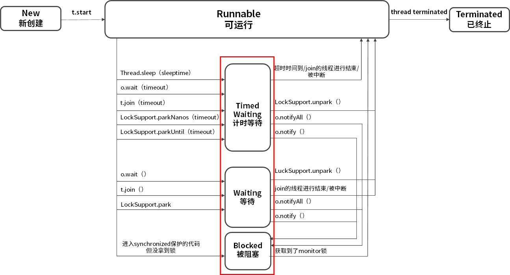
接下来，我们来看下 Runnable 下面的三个方框，它们统称为阻塞状态，在 Java 中阻塞状态通常不仅仅是 Blocked，实际上它包括三种状态，分别是 Blocked(被阻塞）、Waiting(等待）、Timed Waiting(计时等待），这三 种状态统称为阻塞状态，下面我们来看看这三种状态具体是什么含义。
Blocked 被阻塞

首先来看最简单的 Blocked，从箭头的流转方向可以看出，从 Runnable 状态进入 Blocked 状态只有一种可能，就是进入 synchronized 保护的代码时没有抢到 monitor 锁，无论是进入 synchronized 代码块，还是 synchronized 方法，都是一样。
我们再往右看，当处于 Blocked 的线程抢到 monitor 锁，就会从 Blocked 状态回到Runnable 状态。
Waiting 等待
我们再看看 Waiting 状态，线程进入 Waiting 状态有三种可能性。
- 没有设置 Timeout 参数的 Object.wait() 方法。
- 没有设置 Timeout 参数的 Thread.join() 方法。
- LockSupport.park() 方法。
刚才强调过，Blocked 仅仅针对 synchronized monitor 锁，可是在 Java 中还有很多其他的锁，比如 ReentrantLock，如果线程在获取这种锁时没有抢到该锁就会进入 Waiting 状态，因为本质上它执行了 LockSupport.park() 方法，所以会进入 Waiting 状态。同样，Object.wait() 和 Thread.join() 也会让线程进入 Waiting 状态。
Blocked 与 Waiting 的区别是 Blocked 在等待其他线程释放 monitor 锁，而 Waiting 则是在等待某个条件，比如 join 的线程执行完毕，或者是 notify()/notifyAll() 。
Timed Waiting 限期等待

在 Waiting 上面是 Timed Waiting 状态，这两个状态是非常相似的，区别仅在于有没有时间限制，Timed Waiting 会等待超时，由系统自动唤醒，或者在超时前被唤醒信号唤醒。
以下情况会让线程进入 Timed Waiting 状态。
- 设置了时间参数的 Thread.sleep(long millis) 方法；
- 设置了时间参数的 Object.wait(long timeout) 方法；
- 设置了时间参数的 Thread.join(long millis) 方法；
- 设置了时间参数的 LockSupport.parkNanos(long nanos) 方法和 LockSupport.parkUntil(long deadline) 方法。
讲完如何进入这三种状态，我们再来看下如何从这三种状态流转到下一个状态。

想要从 Blocked 状态进入 Runnable 状态，要求线程获取 monitor 锁，而从 Waiting 状态流转到其他状态则比较特殊，因为首先 Waiting 是不限时的，也就是说无论过了多长时间它都不会主动恢复。

只有当执行了 LockSupport.unpark()，或者 join 的线程运行结束，或者被中断时才可以进入 Runnable 状态。

如果其他线程调用 notify() 或 notifyAll()来唤醒它，它会直接进入 Blocked 状态，这是为什么呢？因为唤醒 Waiting 线程的线程如果调用 notify() 或 notifyAll()，要求必须首先持有该 monitor 锁，所以处于 Waiting 状态的线程被唤醒时拿不到该锁，就会进入 Blocked 状态，直到执行了 notify()/notifyAll() 的唤醒它的线程执行完毕并释放 monitor 锁，才可能轮到它去抢夺这把锁，如果它能抢到，就会从 Blocked 状态回到 Runnable 状态。
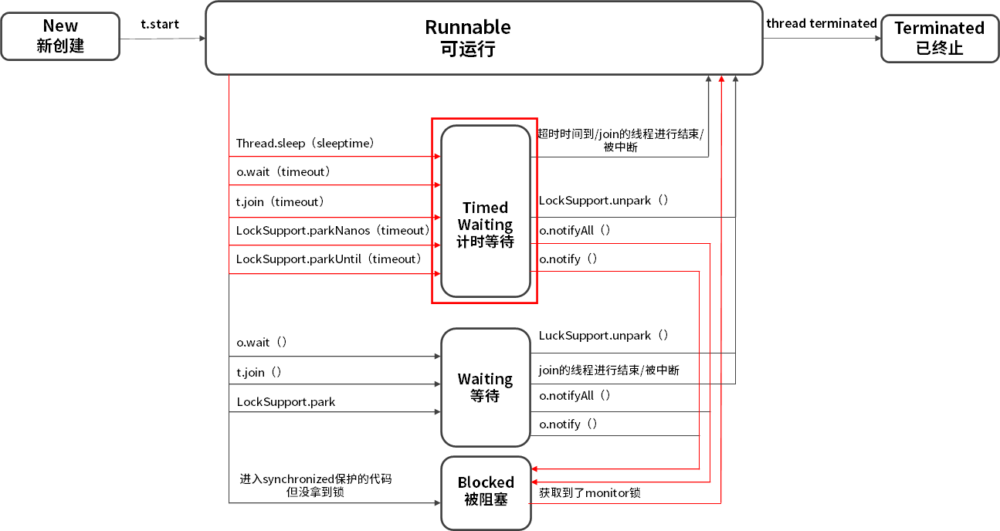
同样在 Timed Waiting 中执行 notify() 和 notifyAll() 也是一样的道理，它们会先进入 Blocked 状态，然后抢夺锁成功后，再回到 Runnable 状态。
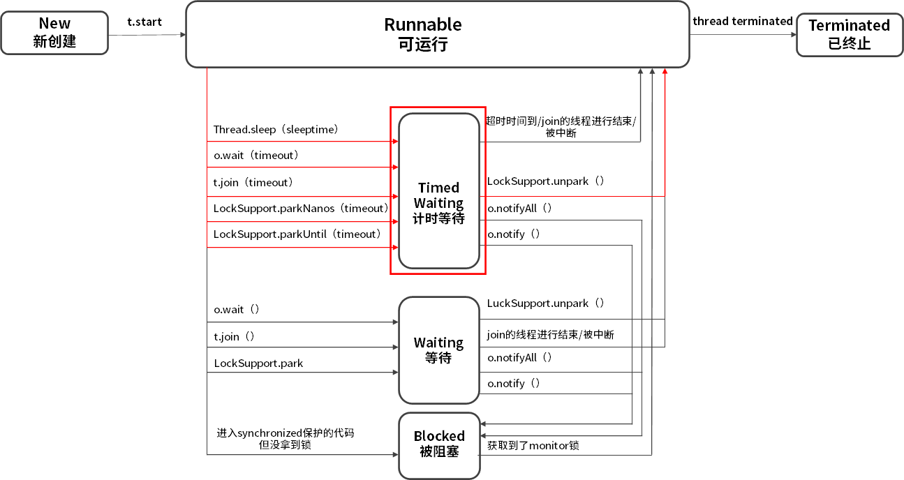
当然对于 Timed Waiting 而言，如果它的超时时间到了且能直接获取到锁/join的线程运行结束/被中断/调用了LockSupport.unpark()，会直接恢复到 Runnable 状态，而无需经历 Blocked 状态。
Terminated 终止

再来看看最后一种状态，Terminated 终止状态，要想进入这个状态有两种可能。
- run() 方法执行完毕，线程正常退出。
- 出现一个没有捕获的异常，终止了 run() 方法，最终导致意外终止。
注意点
最后我们再看线程转换的两个注意点。
- 线程的状态是需要按照箭头方向来走的，比如线程从 New 状态是不可以直接进入 Blocked 状态的，它需要先经历 Runnable 状态。
- 线程生命周期不可逆：一旦进入 Runnable 状态就不能回到 New 状态；一旦被终止就不可能再有任何状态的变化。所以一个线程只能有一次 New 和 Terminated 状态，只有处于中间状态才可以相互转换。
04 waitnotifynotifyAll 方法的使用注意事项？
本课时我们主要学习 wait/notify/notifyAll 方法的使用注意事项。
我们主要从三个问题入手：
- 为什么 wait 方法必须在 synchronized 保护的同步代码中使用？
- 为什么 wait/notify/notifyAll 被定义在 Object 类中，而 sleep 定义在 Thread 类中？
- wait/notify 和 sleep 方法的异同？
为什么 wait 必须在 synchronized 保护的同步代码中使用？
首先，我们来看第一个问题，为什么 wait 方法必须在 synchronized 保护的同步代码中使用？
我们先来看看 wait 方法的源码注释是怎么写的。
“wait method should always be used in a loop:
synchronized (obj) {
while (condition does not hold)
obj.wait();
... // Perform action appropriate to condition
}
This method should only be called by a thread that is the owner of this object's monitor.”
英文部分的意思是说，在使用 wait 方法时，必须把 wait 方法写在 synchronized 保护的 while 代码块中，并始终判断执行条件是否满足，如果满足就往下继续执行，如果不满足就执行 wait 方法，而在执行 wait 方法之前，必须先持有对象的 monitor 锁，也就是通常所说的 synchronized 锁。那么设计成这样有什么好处呢？
我们逆向思考这个问题，如果不要求 wait 方法放在 synchronized 保护的同步代码中使用，而是可以随意调用，那么就有可能写出这样的代码。
class BlockingQueue {
Queue<String> buffer = new LinkedList<String>();
public void give(String data) {
buffer.add(data);
notify(); // Since someone may be waiting in take
}
public String take() throws InterruptedException {
while (buffer.isEmpty()) {
wait();
}
return buffer.remove();
}
}
在代码中可以看到有两个方法，give 方法负责往 buffer 中添加数据，添加完之后执行 notify 方法来唤醒之前等待的线程，而 take 方法负责检查整个 buffer 是否为空，如果为空就进入等待，如果不为空就取出一个数据，这是典型的生产者消费者的思想。
但是这段代码并没有受 synchronized 保护，于是便有可能发生以下场景：
- 首先，消费者线程调用 take 方法并判断 buffer.isEmpty 方法是否返回 true，若为 true 代表buffer是空的，则线程希望进入等待，但是在线程调用 wait 方法之前，就被调度器暂停了，所以此时还没来得及执行 wait 方法。
- 此时生产者开始运行，执行了整个 give 方法，它往 buffer 中添加了数据，并执行了 notify 方法，但 notify 并没有任何效果，因为消费者线程的 wait 方法没来得及执行，所以没有线程在等待被唤醒。
- 此时，刚才被调度器暂停的消费者线程回来继续执行 wait 方法并进入了等待。
虽然刚才消费者判断了 buffer.isEmpty 条件，但真正执行 wait 方法时，之前的 buffer.isEmpty 的结果已经过期了，不再符合最新的场景了，因为这里的“判断-执行”不是一个原子操作，它在中间被打断了，是线程不安全的。
假设这时没有更多的生产者进行生产，消费者便有可能陷入无穷无尽的等待，因为它错过了刚才 give 方法内的 notify 的唤醒。
我们看到正是因为 wait 方法所在的 take 方法没有被 synchronized 保护，所以它的 while 判断和 wait 方法无法构成原子操作，那么此时整个程序就很容易出错。
我们把代码改写成源码注释所要求的被 synchronized 保护的同步代码块的形式，代码如下。
public void give(String data) {
synchronized (this) {
buffer.add(data);
notify();
}
}
public String take() throws InterruptedException {
synchronized (this) {
while (buffer.isEmpty()) {
wait();
}
return buffer.remove();
}
}
这样就可以确保 notify 方法永远不会在 buffer.isEmpty 和 wait 方法之间被调用，提升了程序的安全性。
另外，wait 方法会释放 monitor 锁，这也要求我们必须首先进入到 synchronized 内持有这把锁。
这里还存在一个“虚假唤醒”（spurious wakeup）的问题，线程可能在既没有被notify/notifyAll，也没有被中断或者超时的情况下被唤醒，这种唤醒是我们不希望看到的。虽然在实际生产中，虚假唤醒发生的概率很小，但是程序依然需要保证在发生虚假唤醒的时候的正确性，所以就需要采用while循环的结构。
while (condition does not hold)
obj.wait();
这样即便被虚假唤醒了，也会再次检查while里面的条件，如果不满足条件，就会继续wait，也就消除了虚假唤醒的风险。
为什么 wait/notify/notifyAll 被定义在 Object 类中，而 sleep 定义在 Thread 类中？
我们来看第二个问题，为什么 wait/notify/notifyAll 方法被定义在 Object 类中？而 sleep 方法定义在 Thread 类中？主要有两点原因：
- 因为 Java 中每个对象都有一把称之为 monitor 监视器的锁，由于每个对象都可以上锁，这就要求在对象头中有一个用来保存锁信息的位置。这个锁是对象级别的，而非线程级别的，wait/notify/notifyAll 也都是锁级别的操作，它们的锁属于对象，所以把它们定义在 Object 类中是最合适，因为 Object 类是所有对象的父类。
- 因为如果把 wait/notify/notifyAll 方法定义在 Thread 类中，会带来很大的局限性，比如一个线程可能持有多把锁，以便实现相互配合的复杂逻辑，假设此时 wait 方法定义在 Thread 类中，如何实现让一个线程持有多把锁呢？又如何明确线程等待的是哪把锁呢？既然我们是让当前线程去等待某个对象的锁，自然应该通过操作对象来实现，而不是操作线程。
wait/notify 和 sleep 方法的异同？
第三个问题是对比 wait/notify 和 sleep 方法的异同，主要对比 wait 和 sleep 方法，我们先说相同点：
- 它们都可以让线程阻塞。
- 它们都可以响应 interrupt 中断：在等待的过程中如果收到中断信号，都可以进行响应，并抛出 InterruptedException 异常。
但是它们也有很多的不同点：
- wait 方法必须在 synchronized 保护的代码中使用，而 sleep 方法并没有这个要求。
- 在同步代码中执行 sleep 方法时，并不会释放 monitor 锁，但执行 wait 方法时会主动释放 monitor 锁。
- sleep 方法中会要求必须定义一个时间，时间到期后会主动恢复，而对于没有参数的 wait 方法而言，意味着永久等待，直到被中断或被唤醒才能恢复，它并不会主动恢复。
- wait/notify 是 Object 类的方法，而 sleep 是 Thread 类的方法。
以上就是关于 wait/notify 与 sleep 的异同点。
05 有哪几种实现生产者消费者模式的方法？
本课时我们主要学习如何用 wait/notify/Condition/BlockingQueue 实现生产者消费者模式。
生产者消费者模式
我们先来看看什么是生产者消费者模式，生产者消费者模式是程序设计中非常常见的一种设计模式，被广泛运用在解耦、消息队列等场景。在现实世界中，我们把生产商品的一方称为生产者，把消费商品的一方称为消费者，有时生产者的生产速度特别快，但消费者的消费速度跟不上，俗称“产能过剩”，又或是多个生产者对应多个消费者时，大家可能会手忙脚乱。如何才能让大家更好地配合呢？这时在生产者和消费者之间就需要一个中介来进行调度，于是便诞生了生产者消费者模式。

使用生产者消费者模式通常需要在两者之间增加一个阻塞队列作为媒介，有了媒介之后就相当于有了一个缓冲，平衡了两者的能力，整体的设计如图所示，最上面是阻塞队列，右侧的 1 是生产者线程，生产者在生产数据后将数据存放在阻塞队列中，左侧的 2 是消费者线程，消费者获取阻塞队列中的数据。而中间的 3 和 4 分别代表生产者消费者之间互相通信的过程，因为无论阻塞队列是满还是空都可能会产生阻塞，阻塞之后就需要在合适的时机去唤醒被阻塞的线程。
那么什么时候阻塞线程需要被唤醒呢？有两种情况。第一种情况是当消费者看到阻塞队列为空时，开始进入等待，这时生产者一旦往队列中放入数据，就会通知所有的消费者，唤醒阻塞的消费者线程。另一种情况是如果生产者发现队列已经满了，也会被阻塞，而一旦消费者获取数据之后就相当于队列空了一个位置，这时消费者就会通知所有正在阻塞的生产者进行生产，这便是对生产者消费者模式的简单介绍。
如何用 BlockingQueue 实现生产者消费者模式
我们接下来看如何用 wait/notify/Condition/BlockingQueue 实现生产者消费者模式，先从最简单的 BlockingQueue 开始讲起：
public static void main(String[] args) {
BlockingQueue<Object> queue = new ArrayBlockingQueue<>(10);
Runnable producer = () -> {
while (true) {
queue.put(new Object());
}
};
new Thread(producer).start();
new Thread(producer).start();
Runnable consumer = () -> {
while (true) {
queue.take();
}
};
new Thread(consumer).start();
new Thread(consumer).start();
}
如代码所示，首先，创建了一个 ArrayBlockingQueue 类型的 BlockingQueue，命名为 queue 并将它的容量设置为 10；其次，创建一个简单的生产者，while(true) 循环体中的queue.put() 负责往队列添加数据；然后，创建两个生产者线程并启动；同样消费者也非常简单，while(true) 循环体中的 queue.take() 负责消费数据，同时创建两个消费者线程并启动。为了代码简洁并突出设计思想，代码里省略了 try/catch 检测，我们不纠结一些语法细节。以上便是利用 BlockingQueue 实现生产者消费者模式的代码。虽然代码非常简单，但实际上 ArrayBlockingQueue 已经在背后完成了很多工作，比如队列满了就去阻塞生产者线程，队列有空就去唤醒生产者线程等。
如何用 Condition 实现生产者消费者模式
BlockingQueue 实现生产者消费者模式看似简单，背后却暗藏玄机，我们在掌握这种方法的基础上仍需要掌握更复杂的实现方法。我们接下来看如何在掌握了 BlockingQueue 的基础上利用 Condition 实现生产者消费者模式，它们背后的实现原理非常相似，相当于我们自己实现一个简易版的 BlockingQueue：
public class MyBlockingQueueForCondition {
private Queue queue;
private int max = 16;
private ReentrantLock lock = new ReentrantLock();
private Condition notEmpty = lock.newCondition();
private Condition notFull = lock.newCondition();
public MyBlockingQueueForCondition(int size) {
this.max = size;
queue = new LinkedList();
}
public void put(Object o) throws InterruptedException {
lock.lock();
try {
while (queue.size() == max) {
notFull.await();
}
queue.add(o);
notEmpty.signalAll();
} finally {
lock.unlock();
}
}
public Object take() throws InterruptedException {
lock.lock();
try {
while (queue.size() == 0) {
notEmpty.await();
}
Object item = queue.remove();
notFull.signalAll();
return item;
} finally {
lock.unlock();
}
}
}
如代码所示，首先，定义了一个队列变量 queue 并设置最大容量为 16；其次，定义了一个 ReentrantLock 类型的 Lock 锁，并在 Lock 锁的基础上创建两个 Condition，一个是 notEmpty，另一个是 notFull，分别代表队列没有空和没有满的条件；最后，声明了 put 和 take 这两个核心方法。
因为生产者消费者模式通常是面对多线程的场景，需要一定的同步措施保障线程安全，所以在 put 方法中先将 Lock 锁上，然后，在 while 的条件里检测 queue 是不是已经满了，如果已经满了，则调用 notFull 的 await() 阻塞生产者线程并释放 Lock，如果没有满，则往队列放入数据并利用 notEmpty.signalAll() 通知正在等待的所有消费者并唤醒它们。最后在 finally 中利用 lock.unlock() 方法解锁，把 unlock 方法放在 finally 中是一个基本原则，否则可能会产生无法释放锁的情况。
下面再来看 take 方法，take 方法实际上是与 put 方法相互对应的，同样是通过 while 检查队列是否为空，如果为空，消费者开始等待，如果不为空则从队列中获取数据并通知生产者队列有空余位置，最后在 finally 中解锁。
这里需要注意，我们在 take() 方法中使用 while( queue.size() == 0 ) 检查队列状态，而不能用 if( queue.size() == 0 )。为什么呢？大家思考这样一种情况，因为生产者消费者往往是多线程的，我们假设有两个消费者，第一个消费者线程获取数据时，发现队列为空，便进入等待状态；因为第一个线程在等待时会释放 Lock 锁，所以第二个消费者可以进入并执行 if( queue.size() == 0 )，也发现队列为空，于是第二个线程也进入等待；而此时，如果生产者生产了一个数据，便会唤醒两个消费者线程，而两个线程中只有一个线程可以拿到锁，并执行 queue.remove 操作，另外一个线程因为没有拿到锁而卡在被唤醒的地方，而第一个线程执行完操作后会在 finally 中通过 unlock 解锁，而此时第二个线程便可以拿到被第一个线程释放的锁，继续执行操作，也会去调用 queue.remove 操作，然而这个时候队列已经为空了，所以会抛出 NoSuchElementException 异常，这不符合我们的逻辑。而如果用 while 做检查，当第一个消费者被唤醒得到锁并移除数据之后，第二个线程在执行 remove 前仍会进行 while 检查，发现此时依然满足 queue.size() == 0 的条件，就会继续执行 await 方法，避免了获取的数据为 null 或抛出异常的情况。
如何用 wait/notify 实现生产者消费者模式
最后我们再来看看使用 wait/notify 实现生产者消费者模式的方法，实际上实现原理和Condition 是非常类似的，它们是兄弟关系：
class MyBlockingQueue {
private int maxSize;
private LinkedList<Object> storage;
public MyBlockingQueue(int size) {
this.maxSize = size;
storage = new LinkedList<>();
}
public synchronized void put() throws InterruptedException {
while (storage.size() == maxSize) {
wait();
}
storage.add(new Object());
notifyAll();
}
public synchronized void take() throws InterruptedException {
while (storage.size() == 0) {
wait();
}
System.out.println(storage.remove());
notifyAll();
}
}
如代码所示，最主要的部分仍是 take 与 put 方法，我们先来看 put 方法，put 方法被 synchronized 保护，while 检查队列是否为满，如果不满就往里放入数据并通过 notifyAll() 唤醒其他线程。同样，take 方法也被 synchronized 修饰，while 检查队列是否为空，如果不为空就获取数据并唤醒其他线程。使用这个 MyBlockingQueue 实现的生产者消费者代码如下：
/**
* 描述： wait形式实现生产者消费者模式
*/
public class WaitStyle {
public static void main(String[] args) {
MyBlockingQueue myBlockingQueue = new MyBlockingQueue(10);
Producer producer = new Producer(myBlockingQueue);
Consumer consumer = new Consumer(myBlockingQueue);
new Thread(producer).start();
new Thread(consumer).start();
}
}
class Producer implements Runnable {
private MyBlockingQueue storage;
public Producer(MyBlockingQueue storage) {
this.storage = storage;
}
@Override
public void run() {
for (int i = 0; i < 100; i++) {
try {
storage.put();
} catch (InterruptedException e) {
e.printStackTrace();
}
}
}
}
class Consumer implements Runnable {
private MyBlockingQueue storage;
public Consumer(MyBlockingQueue storage) {
this.storage = storage;
}
@Override
public void run() {
for (int i = 0; i < 100; i++) {
try {
storage.take();
} catch (InterruptedException e) {
e.printStackTrace();
}
}
}
}
以上就是三种实现生产者消费者模式的讲解，其中，第一种 BlockingQueue 模式实现比较简单，但其背后的实现原理在第二种、第三种实现方法中得以体现，第二种、第三种实现方法本质上是我们自己实现了 BlockingQueue 的一些核心逻辑，供生产者与消费者使用。
06 一共有哪 3 类线程安全问题？
本课时我们学习 3 类线程安全问题。
什么是线程安全
要想弄清楚有哪 3 类线程安全问题，首先需要了解什么是线程安全，线程安全经常在工作中被提到，比如：你的对象不是线程安全的，你的线程发生了安全错误，虽然线程安全经常被提到，但我们可能对线程安全并没有一个明确的定义。
《Java Concurrency In Practice》的作者 Brian Goetz 对线程安全是这样理解的，当多个线程访问一个对象时，如果不用考虑这些线程在运行时环境下的调度和交替执行问题，也不需要进行额外的同步，而调用这个对象的行为都可以获得正确的结果，那这个对象便是线程安全的。
事实上，Brian Goetz 想表达的意思是，如果某个对象是线程安全的，那么对于使用者而言，在使用时就不需要考虑方法间的协调问题，比如不需要考虑不能同时写入或读写不能并行的问题，也不需要考虑任何额外的同步问题，比如不需要额外自己加 synchronized 锁，那么它才是线程安全的，可以看出对线程安全的定义还是非常苛刻的。
而我们在实际开发中经常会遇到线程不安全的情况，那么一共有哪 3 种典型的线程安全问题呢？
- 运行结果错误；
- 发布和初始化导致线程安全问题；
- 活跃性问题。
运行结果错误
首先，来看多线程同时操作一个变量导致的运行结果错误。
public class WrongResult {
volatile static int i;
public static void main(String[] args) throws InterruptedException {
Runnable r = new Runnable() {
@Override
public void run() {
for (int j = 0; j < 10000; j++) {
i++;
}
}
};
Thread thread1 = new Thread(r);
thread1.start();
Thread thread2 = new Thread(r);
thread2.start();
thread1.join();
thread2.join();
System.out.println(i);
}
}
如代码所示，首先定义了一个 int 类型的静态变量 i，然后启动两个线程，分别对变量 i 进行 10000 次 i++ 操作。理论上得到的结果应该是 20000，但实际结果却远小于理论结果，比如可能是12996，也可能是13323，每次的结果都还不一样，这是为什么呢？
是因为在多线程下，CPU 的调度是以时间片为单位进行分配的，每个线程都可以得到一定量的时间片。但如果线程拥有的时间片耗尽，它将会被暂停执行并让出 CPU 资源给其他线程，这样就有可能发生线程安全问题。比如 i++ 操作，表面上看只是一行代码，但实际上它并不是一个原子操作，它的执行步骤主要分为三步，而且在每步操作之间都有可能被打断。
- 第一个步骤是读取；
- 第二个步骤是增加；
- 第三个步骤是保存。
那么我们接下来看如何发生的线程不安全问题。

我们根据箭头指向依次看，线程 1 首先拿到 i=1 的结果，然后进行 i+1 操作，但此时 i+1 的结果并没有保存下来，线程 1 就被切换走了，于是 CPU 开始执行线程 2，它所做的事情和线程 1 是一样的 i++ 操作，但此时我们想一下，它拿到的 i 是多少？实际上和线程 1 拿到的 i 的结果一样都是 1，为什么呢？因为线程 1 虽然对 i 进行了 +1 操作，但结果没有保存，所以线程 2 看不到修改后的结果。
然后假设等线程 2 对 i 进行 +1 操作后，又切换到线程 1，让线程 1 完成未完成的操作，即将 i+1 的结果 2 保存下来，然后又切换到线程 2 完成 i=2 的保存操作，虽然两个线程都执行了对 i 进行 +1 的操作，但结果却最终保存了 i=2 的结果，而不是我们期望的 i=3，这样就发生了线程安全问题，导致了数据结果错误，这也是最典型的线程安全问题。
发布和初始化导致线程安全问题
第二种是对象发布和初始化时导致的线程安全问题，我们创建对象并进行发布和初始化供其他类或对象使用是常见的操作，但如果我们操作的时间或地点不对，就可能导致线程安全问题。如代码所示。
public class WrongInit {
private Map<Integer, String> students;
public WrongInit() {
new Thread(new Runnable() {
@Override
public void run() {
students = new HashMap<>();
students.put(1, "王小美");
students.put(2, "钱二宝");
students.put(3, "周三");
students.put(4, "赵四");
}
}).start();
}
public Map<Integer, String> getStudents() {
return students;
}
public static void main(String[] args) throws InterruptedException {
WrongInit multiThreadsError6 = new WrongInit();
System.out.println(multiThreadsError6.getStudents().get(1));
}
}
在类中，定义一个类型为 Map 的成员变量 students，Integer 是学号，String 是姓名。然后在构造函数中启动一个新线程，并在线程中为 students 赋值。
- 学号：1，姓名：王小美；
- 学号：2，姓名：钱二宝；
- 学号：3，姓名：周三；
- 学号：4，姓名：赵四。
只有当线程运行完 run() 方法中的全部赋值操作后，4 名同学的全部信息才算是初始化完毕，可是我们看在主函数 mian() 中，初始化 WrongInit 类之后并没有进行任何休息就直接打印 1 号同学的信息，试想这个时候程序会出现什么情况？实际上会发生空指针异常。
Exception in thread "main" java.lang.NullPointerException
at lesson6.WrongInit.main(WrongInit.java:32)
这又是为什么呢？因为 students 这个成员变量是在构造函数中新建的线程中进行的初始化和赋值操作，而线程的启动需要一定的时间，但是我们的 main 函数并没有进行等待就直接获取数据，导致 getStudents 获取的结果为 null，这就是在错误的时间或地点发布或初始化造成的线程安全问题。
活跃性问题
第三种线程安全问题统称为活跃性问题，最典型的有三种，分别为死锁、活锁和饥饿。
什么是活跃性问题呢，活跃性问题就是程序始终得不到运行的最终结果，相比于前面两种线程安全问题带来的数据错误或报错，活跃性问题带来的后果可能更严重，比如发生死锁会导致程序完全卡死，无法向下运行。
死锁
最常见的活跃性问题是死锁，死锁是指两个线程之间相互等待对方资源，但同时又互不相让，都想自己先执行，如代码所示。
public class MayDeadLock {
Object o1 = new Object();
Object o2 = new Object();
public void thread1() throws InterruptedException {
synchronized (o1) {
Thread.sleep(500);
synchronized (o2) {
System.out.println("线程1成功拿到两把锁");
}
}
}
public void thread2() throws InterruptedException {
synchronized (o2) {
Thread.sleep(500);
synchronized (o1) {
System.out.println("线程2成功拿到两把锁");
}
}
}
public static void main(String[] args) {
MayDeadLock mayDeadLock = new MayDeadLock();
new Thread(new Runnable() {
@Override
public void run() {
try {
mayDeadLock.thread1();
} catch (InterruptedException e) {
e.printStackTrace();
}
}
}).start();
new Thread(new Runnable() {
@Override
public void run() {
try {
mayDeadLock.thread2();
} catch (InterruptedException e) {
e.printStackTrace();
}
}
}).start();
}
}
首先，代码中创建了两个 Object 作为 synchronized 锁的对象，线程 1 先获取 o1 锁，sleep(500) 之后，获取 o2 锁；线程 2 与线程 1 执行顺序相反，先获取 o2 锁，sleep(500) 之后，获取 o1 锁。 假设两个线程几乎同时进入休息，休息完后，线程 1 想获取 o2 锁，线程 2 想获取 o1 锁，这时便发生了死锁，两个线程不主动调和，也不主动退出，就这样死死地等待对方先释放资源，导致程序得不到任何结果也不能停止运行。
活锁
第二种活跃性问题是活锁，活锁与死锁非常相似，也是程序一直等不到结果，但对比于死锁，活锁是活的，什么意思呢？因为正在运行的线程并没有阻塞，它始终在运行中，却一直得不到结果。
举一个例子，假设有一个消息队列，队列里放着各种各样需要被处理的消息，而某个消息由于自身被写错了导致不能被正确处理，执行时会报错，可是队列的重试机制会重新把它放在队列头进行优先重试处理，但这个消息本身无论被执行多少次，都无法被正确处理，每次报错后又会被放到队列头进行重试，周而复始，最终导致线程一直处于忙碌状态，但程序始终得不到结果，便发生了活锁问题。
饥饿
第三个典型的活跃性问题是饥饿，饥饿是指线程需要某些资源时始终得不到，尤其是CPU 资源，就会导致线程一直不能运行而产生的问题。在 Java 中有线程优先级的概念，Java 中优先级分为 1 到 10，1 最低，10 最高。如果我们把某个线程的优先级设置为 1，这是最低的优先级，在这种情况下，这个线程就有可能始终分配不到 CPU 资源，而导致长时间无法运行。或者是某个线程始终持有某个文件的锁，而其他线程想要修改文件就必须先获取锁，这样想要修改文件的线程就会陷入饥饿，长时间不能运行。
好了，今天的内容就全部讲完了，通过本课时的学习我们知道了线程安全问题主要有 3 种，i++ 等情况导致的运行结果错误，通常是因为并发读写导致的，第二种是对象没有在正确的时间、地点被发布或初始化，而第三种线程安全问题就是活跃性问题，包括死锁、活锁和饥饿。
07 哪些场景需要额外注意线程安全问题？
在本课时我们主要学习哪些场景需要额外注意线程安全问题，在这里总结了四种场景。
访问共享变量或资源
第一种场景是访问共享变量或共享资源的时候，典型的场景有访问共享对象的属性，访问 static 静态变量，访问共享的缓存，等等。因为这些信息不仅会被一个线程访问到，还有可能被多个线程同时访问，那么就有可能在并发读写的情况下发生线程安全问题。比如我们上一课时讲过的多线程同时 i++ 的例子：
/**
* 描述： 共享的变量或资源带来的线程安全问题
*/
public class ThreadNotSafe1 {
static int i;
public static void main(String[] args) throws InterruptedException {
Runnable r = new Runnable() {
@Override
public void run() {
for (int j = 0; j < 10000; j++) {
i++;
}
}
};
Thread thread1 = new Thread(r);
Thread thread2 = new Thread(r);
thread1.start();
thread2.start();
thread1.join();
thread2.join();
System.out.println(i);
}
}
如代码所示，两个线程同时对 i 进行 i++ 操作，最后的输出可能是 15875 等小于20000的数，而不是我们期待的20000，这便是非常典型的共享变量带来的线程安全问题。
依赖时序的操作
第二个需要我们注意的场景是依赖时序的操作，如果我们操作的正确性是依赖时序的，而在多线程的情况下又不能保障执行的顺序和我们预想的一致，这个时候就会发生线程安全问题，如下面的代码所示：
if (map.containsKey(key)) {
map.remove(obj)
}
代码中首先检查 map 中有没有 key 对应的元素，如果有则继续执行 remove 操作。此时，这个组合操作就是危险的，因为它是先检查后操作，而执行过程中可能会被打断。如果此时有两个线程同时进入 if() 语句，然后它们都检查到存在 key 对应的元素，于是都希望执行下面的 remove 操作，随后一个线程率先把 obj 给删除了，而另外一个线程它刚已经检查过存在 key 对应的元素，if 条件成立，所以它也会继续执行删除 obj 的操作，但实际上，集合中的 obj 已经被前面的线程删除了，这种情况下就可能导致线程安全问题。
类似的情况还有很多，比如我们先检查 x=1，如果 x=1 就修改 x 的值，代码如下所示：
if (x == 1) {
x = 7 * x;
}
这样类似的场景都是同样的道理，“检查与执行”并非原子性操作，在中间可能被打断，而检查之后的结果也可能在执行时已经过期、无效，换句话说，获得正确结果取决于幸运的时序。这种情况下，我们就需要对它进行加锁等保护措施来保障操作的原子性。
不同数据之间存在绑定关系
第三种需要我们注意的线程安全场景是不同数据之间存在相互绑定关系的情况。有时候，我们的不同数据之间是成组出现的，存在着相互对应或绑定的关系，最典型的就是 IP 和端口号。有时候我们更换了 IP，往往需要同时更换端口号，如果没有把这两个操作绑定在一起，就有可能出现单独更换了 IP 或端口号的情况，而此时信息如果已经对外发布，信息获取方就有可能获取一个错误的 IP 与端口绑定情况，这时就发生了线程安全问题。在这种情况下，我们也同样需要保障操作的原子性。
对方没有声明自己是线程安全的
第四种值得注意的场景是在我们使用其他类时，如果对方没有声明自己是线程安全的，那么这种情况下对其他类进行多线程的并发操作，就有可能会发生线程安全问题。举个例子，比如说我们定义了 ArrayList，它本身并不是线程安全的，如果此时多个线程同时对 ArrayList 进行并发读/写，那么就有可能会产生线程安全问题，造成数据出错，而这个责任并不在 ArrayList，因为它本身并不是并发安全的，正如源码注释所写的：
Note that this implementation is not synchronized. If multiple threads
access an ArrayList instance concurrently, and at least one of the threads
modifies the list structurally, it must be synchronized externally.
这段话的意思是说，如果我们把 ArrayList 用在了多线程的场景，需要在外部手动用 synchronized 等方式保证并发安全。
所以 ArrayList 默认不适合并发读写，是我们错误地使用了它，导致了线程安全问题。所以，我们在使用其他类时如果会涉及并发场景，那么一定要首先确认清楚，对方是否支持并发操作，以上就是四种需要我们额外注意线程安全问题的场景，分别是访问共享变量或资源，依赖时序的操作，不同数据之间存在绑定关系，以及对方没有声明自己是线程安全的。
08 为什么多线程会带来性能问题？
在本课时我们主要学习为什么多线程会带来性能问题？
什么是性能问题
在上一课时我们已经学习了多线程带来的线程安全问题，但对于多线程而言，它不仅可能会带来线程安全问题，还有可能会带来性能问题，也许你会奇怪，我们使用多线程的最大目的不就是为了提高性能吗？让多个线程同时工作，加快程序运行速度，为什么反而会带来性能问题呢？这是因为单线程程序是独立工作的，不需要与其他线程进行交互，但多线程之间则需要调度以及合作，调度与合作就会带来性能开销从而产生性能问题。
首先，我们来了解究竟什么是性能问题？其实性能问题有许多的表现形式，比如服务器的响应慢、吞吐量低、内存占用过多就属于性能问题。我们设计优秀的系统架构、购置更多的 CDN 服务器、购买更大的带宽等都是为了提高性能，提高用户体验，虽然运行速度慢不会带来严重的后果，通常只需要我们多等几秒就可以，但这会严重影响用户的体验。有研究表明，页面每多响应 1 秒，就会流失至少 7% 的用户，而超过 8 秒无法返回结果的话，几乎所有用户都不会选择继续等待。我们引入多线程的一大重要原因就是想提高程序性能，所以不能本末倒置，不能因为引入了多线程反而程序运行得更慢了，所以我们必须要解决多线程带来的性能问题。
为什么多线程会带来性能问题
那么什么情况下多线程编程会带来性能问题呢？主要有两个方面，一方面是线程调度，另一个方面是线程协作。
调度开销
上下文切换
首先，我们看一下线程调度，在实际开发中，线程数往往是大于 CPU 核心数的，比如 CPU 核心数可能是 8 核、16 核，等等，但线程数可能达到成百上千个。这种情况下，操作系统就会按照一定的调度算法，给每个线程分配时间片，让每个线程都有机会得到运行。而在进行调度时就会引起上下文切换，上下文切换会挂起当前正在执行的线程并保存当前的状态，然后寻找下一处即将恢复执行的代码，唤醒下一个线程，以此类推，反复执行。但上下文切换带来的开销是比较大的，假设我们的任务内容非常短，比如只进行简单的计算，那么就有可能发生我们上下文切换带来的性能开销比执行线程本身内容带来的开销还要大的情况。
缓存失效
不仅上下文切换会带来性能问题，缓存失效也有可能带来性能问题。由于程序有很大概率会再次访问刚才访问过的数据，所以为了加速整个程序的运行，会使用缓存，这样我们在使用相同数据时就可以很快地获取数据。可一旦进行了线程调度，切换到其他线程，CPU就会去执行不同的代码，原有的缓存就很可能失效了，需要重新缓存新的数据，这也会造成一定的开销，所以线程调度器为了避免频繁地发生上下文切换，通常会给被调度到的线程设置最小的执行时间，也就是只有执行完这段时间之后，才可能进行下一次的调度，由此减少上下文切换的次数。
那么什么情况会导致密集的上下文切换呢？如果程序频繁地竞争锁，或者由于 IO 读写等原因导致频繁阻塞，那么这个程序就可能需要更多的上下文切换，这也就导致了更大的开销，我们应该尽量避免这种情况的发生。
协作开销
除了线程调度之外，线程协作同样也有可能带来性能问题。因为线程之间如果有共享数据，为了避免数据错乱，为了保证线程安全，就有可能禁止编译器和 CPU 对其进行重排序等优化，也可能出于同步的目的，反复把线程工作内存的数据 flush 到主存中，然后再从主内存 refresh 到其他线程的工作内存中，等等。这些问题在单线程中并不存在，但在多线程中为了确保数据的正确性，就不得不采取上述方法，因为线程安全的优先级要比性能优先级更高，这也间接降低了我们的性能。
09 使用线程池比手动创建线程好在哪里？
在本课时我们主要学习为什么使用线程池比手动创建线程要好，并讲解具体好在哪里？
为什么要使用线程池
首先，回顾线程池的相关知识，在 Java 诞生之初是没有线程池的概念的，而是先有线程，随着线程数的不断增加，人们发现需要一个专门的类来管理它们，于是才诞生了线程池。没有线程池的时候，每发布一个任务就需要创建一个新的线程，这样在任务少时是没有问题的，如代码所示。
/**
* 描述： 单个任务的时候，新建线程来执行
*/
public class OneTask {
public static void main(String[] args) {
Thread thread0 = new Thread(new Task());
thread0.start();
}
static class Task implements Runnable {
public void run() {
System.out.println("Thread Name: " + Thread.currentThread().getName());
}
}
}
在这段代码中，我们发布了一个新的任务并放入子线程中，然后启动子线程执行任务，这时的任务也非常简单，只是打印出当前线程的名字，这种情况下，打印结果显示 Thread Name: Thread-0，即我们当前子线程的默认名字。
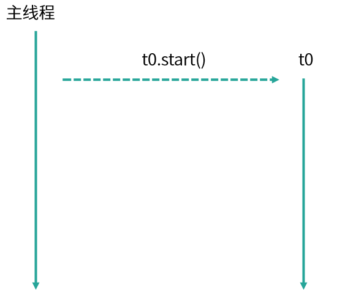
我们来看一下任务执行流程，如图所示，主线程调用 start() 方法，启动了一个 t0 的子线程。这是在一个任务的场景下，随着我们的任务增多，比如现在有 10 个任务了，那么我们就可以使用 for 循环新建 10 个子线程，如代码所示。
/**
* 描述： for循环新建10个线程
*/
public class TenTask {
public static void main(String[] args) {
for (int i = 0; i < 10; i++) {
Thread thread = new Thread(new Task());
thread.start();
}
}
static class Task implements Runnable {
public void run() {
System.out.println("Thread Name: " + Thread.currentThread().getName());
}
}
}
执行结果：
Thread Name: Thread-1
Thread Name: Thread-4
Thread Name: Thread-3
Thread Name: Thread-2
Thread Name: Thread-0
Thread Name: Thread-5
Thread Name: Thread-6
Thread Name: Thread-7
Thread Name: Thread-8
Thread Name: Thread-9
这里你会发现，打印出来的顺序是错乱的，比如 Thread-4 打印在了 Thread-3 之前，这是因为，虽然 Thread-3 比 Thread-4 先执行 start 方法，但是这并不代表 Thread-3 就会先运行，运行的顺序取决于线程调度器，有很大的随机性，这是需要我们注意的地方。
我们再看来下线程的执行流程，如图所示，主线程通过 for 循环创建了 t0~t9 这 10 个子线程，它们都可以正常的执行任务，但如果此时我们的任务量突然飙升到 10000 会怎么样？我们先来看看依然用 for 循环的实现方式：
for (int i = 0; i < 10000; i++) {
Thread thread = new Thread(new Task());
thread.start();
}
如图所示，我们创建了 10000 个子线程，而 Java 程序中的线程与操作系统中的线程是一一对应的，此时假设线程中的任务需要一定的耗时才能够完成，便会产生很大的系统开销与资源浪费。
创建线程时会产生系统开销，并且每个线程还会占用一定的内存等资源，更重要的是我们创建如此多的线程也会给稳定性带来危害，因为每个系统中，可创建线程的数量是有一个上限的，不可能无限的创建。线程执行完需要被回收，大量的线程又会给垃圾回收带来压力。但我们的任务确实非常多，如果都在主线程串行执行，那效率也太低了，那应该怎么办呢？于是便诞生了线程池来平衡线程与系统资源之间的关系。
我们来总结下如果每个任务都创建一个线程会带来哪些问题：
- 第一点，反复创建线程系统开销比较大，每个线程创建和销毁都需要时间，如果任务比较简单，那么就有可能导致创建和销毁线程消耗的资源比线程执行任务本身消耗的资源还要大。
- 第二点，过多的线程会占用过多的内存等资源，还会带来过多的上下文切换，同时还会导致系统不稳定。
线程池解决问题思路
针对上面的两点问题，线程池有两个解决思路。
首先，针对反复创建线程开销大的问题，线程池用一些固定的线程一直保持工作状态并反复执行任务。
其次，针对过多线程占用太多内存资源的问题，解决思路更直接，线程池会根据需要创建线程，控制线程的总数量，避免占用过多内存资源。
如何使用线程池
线程池就好比一个池塘，池塘里的水是有限且可控的，比如我们选择线程数固定数量的线程池，假设线程池有 5 个线程，但此时的任务大于 5 个，线程池会让余下的任务进行排队，而不是无限制的扩张线程数量，保障资源不会被过度消耗。如代码所示，我们往 5 个线程的线程池中放入 10000 个任务并打印当前线程名字，结果会是怎么样呢？
/**
* 描述： 用固定线程数的线程池执行10000个任务
*/
public class ThreadPoolDemo {
public static void main(String[] args) {
ExecutorService service = Executors.newFixedThreadPool(5);
for (int i = 0; i < 10000; i++) {
service.execute(new Task());
}
System.out.println(Thread.currentThread().getName());
}
static class Task implements Runnable {
public void run() {
System.out.println("Thread Name: " + Thread.currentThread().getName());
}
}
}
执行效果：
Thread Name: pool-1-thread-1
Thread Name: pool-1-thread-2
Thread Name: pool-1-thread-3
Thread Name: pool-1-thread-4
Thread Name: pool-1-thread-5
Thread Name: pool-1-thread-5
Thread Name: pool-1-thread-5
Thread Name: pool-1-thread-5
Thread Name: pool-1-thread-5
Thread Name: pool-1-thread-2
Thread Name: pool-1-thread-1
Thread Name: pool-1-thread-5
Thread Name: pool-1-thread-3
Thread Name: pool-1-thread-5
...
如打印结果所示，打印的线程名始终在 Thread Name: pool-1-thread-1~5 之间变化，并没有超过这个范围，也就证明了线程池不会无限制地扩张线程的数量，始终是这5个线程在工作。
执行流程如图所示，首先创建了一个线程池，线程池中有 5 个线程，然后线程池将 10000 个任务分配给这 5 个线程，这 5 个线程反复领取任务并执行，直到所有任务执行完毕，这就是线程池的思想。
使用线程池的好处
使用线程池比手动创建线程主要有三点好处。
- 第一点，线程池可以解决线程生命周期的系统开销问题，同时还可以加快响应速度。因为线程池中的线程是可以复用的，我们只用少量的线程去执行大量的任务，这就大大减小了线程生命周期的开销。而且线程通常不是等接到任务后再临时创建，而是已经创建好时刻准备执行任务，这样就消除了线程创建所带来的延迟，提升了响应速度，增强了用户体验。
- 第二点，线程池可以统筹内存和 CPU 的使用，避免资源使用不当。线程池会根据配置和任务数量灵活地控制线程数量，不够的时候就创建，太多的时候就回收，避免线程过多导致内存溢出，或线程太少导致 CPU 资源浪费，达到了一个完美的平衡。
- 第三点，线程池可以统一管理资源。比如线程池可以统一管理任务队列和线程，可以统一开始或结束任务，比单个线程逐一处理任务要更方便、更易于管理，同时也有利于数据统计，比如我们可以很方便地统计出已经执行过的任务的数量。
10 线程池的各个参数的含义？
本课时我们主要学习线程池各个参数的含义，并重点掌握线程池中线程是在什么时机被创建和销毁的。
线程池的参数

首先，我们来看下线程池中各个参数的含义，如表所示线程池主要有 6 个参数，其中第 3 个参数由 keepAliveTime + 时间单位组成。我们逐一看下它们各自的含义，corePoolSize 是核心线程数，也就是常驻线程池的线程数量，与它对应的是 maximumPoolSize，表示线程池最大线程数量，当我们的任务特别多而 corePoolSize 核心线程数无法满足需求的时候，就会向线程池中增加线程，以便应对任务突增的情况。
线程创建的时机

接下来，我们来具体看下这两个参数所代表的含义，以及线程池中创建线程的时机。如上图所示，当提交任务后，线程池首先会检查当前线程数，如果此时线程数小于核心线程数，比如最开始线程数量为 0，则新建线程并执行任务，随着任务的不断增加，线程数会逐渐增加并达到核心线程数，此时如果仍有任务被不断提交，就会被放入 workQueue 任务队列中，等待核心线程执行完当前任务后重新从 workQueue 中提取正在等待被执行的任务。
此时，假设我们的任务特别的多，已经达到了 workQueue 的容量上限，这时线程池就会启动后备力量，也就是 maximumPoolSize 最大线程数，线程池会在 corePoolSize 核心线程数的基础上继续创建线程来执行任务，假设任务被不断提交，线程池会持续创建线程直到线程数达到 maximumPoolSize 最大线程数，如果依然有任务被提交，这就超过了线程池的最大处理能力，这个时候线程池就会拒绝这些任务，我们可以看到实际上任务进来之后，线程池会逐一判断 corePoolSize、workQueue、maximumPoolSize，如果依然不能满足需求，则会拒绝任务。
corePoolSize 与 maximumPoolSize
通过上面的流程图，我们了解了 corePoolSize 和 maximumPoolSize 的具体含义，corePoolSize 指的是核心线程数，线程池初始化时线程数默认为 0，当有新的任务提交后，会创建新线程执行任务，如果不做特殊设置，此后线程数通常不会再小于 corePoolSize ，因为它们是核心线程，即便未来可能没有可执行的任务也不会被销毁。随着任务量的增加，在任务队列满了之后，线程池会进一步创建新线程，最多可以达到 maximumPoolSize 来应对任务多的场景，如果未来线程有空闲，大于 corePoolSize 的线程会被合理回收。所以正常情况下，线程池中的线程数量会处在 corePoolSize 与 maximumPoolSize 的闭区间内。
“长工”与“临时工”
我们可以把 corePoolSize 与 maximumPoolSize 比喻成长工与临时工，通常古代一个大户人家会有几个固定的长工，负责日常的工作，而大户人家起初肯定也是从零开始雇佣长工的。假如长工数量被老爷设定为 5 人，也就对应了 corePoolSize，不管这 5 个长工是忙碌还是空闲，都会一直在大户人家待着，可到了农忙或春节，长工的人手显然就不够用了，这时就需要雇佣更多的临时工，这些临时工就相当于在 corePoolSize 的基础上继续创建新线程，但临时工也是有上限的，也就对应了 maximumPoolSize，随着农忙或春节结束，老爷考虑到人工成本便会解约掉这些临时工，家里工人数量便会从 maximumPoolSize 降到 corePoolSize，所以老爷家的工人数量会一致保持在 corePoolSize 和 maximumPoolSize 的区间。

在这里我们用一个动画把整个线程池变化过程生动地描述出来，比如线程池的 corePoolSize 为 5，maximumPoolSize 为 10，任务队列容量为 100，随着任务被提交，我们的线程数量会从 0 慢慢增长到 5，然后就不再增长了，新的任务会被放入队列中，直到队列被塞满，然后在 corePoolSize 的基础上继续创建新线程来执行队列中的任务，线程会逐渐增加到 maximumPoolSize， 然后线程数不再增加，如果此时仍有任务被不断提交，线程池就会拒绝任务。随着队列中任务被执行完，被创建的 10 个线程现在无事可做了，这时线程池会根据 keepAliveTime 参数来销毁线程，已达到减少内存占用的目的。
通过对流程图的理解和动画演示，我们总结出线程池的几个特点。
- 线程池希望保持较少的线程数，并且只有在负载变得很大时才增加线程。
- 线程池只有在任务队列填满时才创建多于 corePoolSize 的线程，如果使用的是无界队列（例如 LinkedBlockingQueue），那么由于队列不会满，所以线程数不会超过 corePoolSize。
- 通过设置 corePoolSize 和 maximumPoolSize 为相同的值，就可以创建固定大小的线程池。
- 通过设置 maximumPoolSize 为很高的值，例如 Integer.MAX_VALUE，就可以允许线程池创建任意多的线程。
keepAliveTime+时间单位
第三个参数是 keepAliveTime + 时间单位，当线程池中线程数量多于核心线程数时，而此时又没有任务可做，线程池就会检测线程的 keepAliveTime，如果超过规定的时间，无事可做的线程就会被销毁，以便减少内存的占用和资源消耗。如果后期任务又多了起来，线程池也会根据规则重新创建线程，所以这是一个可伸缩的过程，比较灵活，我们也可以用 setKeepAliveTime 方法动态改变 keepAliveTime 的参数值。
ThreadFactory
第四个参数是 ThreadFactory，ThreadFactory 实际上是一个线程工厂，它的作用是生产线程以便执行任务。我们可以选择使用默认的线程工厂，创建的线程都会在同一个线程组，并拥有一样的优先级，且都不是守护线程，我们也可以选择自己定制线程工厂，以方便给线程自定义命名，不同的线程池内的线程通常会根据具体业务来定制不同的线程名。
workQueue 和 Handler
最后两个参数是 workQueue 和 Handler，它们分别对应阻塞队列和任务拒绝策略，在后面的课时会对它们进行详细展开讲解。
在本课时，介绍了线程池的各个参数的含义，以及如果有任务提交，线程池是如何应对的，新线程是在什么时机下被创建和销毁等内容，你有没有觉得线程池的设计很巧妙呢？
11 线程池有哪 4 种拒绝策略？
本课时我们主要学习线程池有哪 4 种默认的拒绝策略。
拒绝时机
首先，新建线程池时可以指定它的任务拒绝策略，例如：
newThreadPoolExecutor(5, 10, 5, TimeUnit.SECONDS, new LinkedBlockingQueue<>(),
new ThreadPoolExecutor.DiscardOldestPolicy());
以便在必要的时候按照我们的策略来拒绝任务，那么拒绝任务的时机是什么呢？线程池会在以下两种情况下会拒绝新提交的任务。
- 第一种情况是当我们调用 shutdown 等方法关闭线程池后，即便此时可能线程池内部依然有没执行完的任务正在执行，但是由于线程池已经关闭，此时如果再向线程池内提交任务，就会遭到拒绝。
- 第二种情况是线程池没有能力继续处理新提交的任务，也就是工作已经非常饱和的时候。
我们具体讲一下第二种情况，也就是由于工作饱和导致的拒绝。比如新建一个线程池，使用容量上限为 10 的 ArrayBlockingQueue 作为任务队列，并且指定线程池的核心线程数为 5，最大线程数为 10，假设此时有 20 个耗时任务被提交，在这种情况下，线程池会首先创建核心数量的线程，也就是5个线程来执行任务，然后往队列里去放任务，队列的 10 个容量被放满了之后，会继续创建新线程，直到达到最大线程数 10。此时线程池中一共有 20 个任务，其中 10 个任务正在被 10 个线程执行，还有 10 个任务在任务队列中等待，而且由于线程池的最大线程数量就是 10，所以已经不能再增加更多的线程来帮忙处理任务了，这就意味着此时线程池工作饱和，这个时候再提交新任务时就会被拒绝。

我们结合图示来分析上述情况，首先看右侧上方的队列部分，你可以看到目前队列已经满了，而图中队列下方的每个线程都在工作，且线程数已经达到最大值 10，如果此时再有新的任务提交，线程池由于没有能力继续处理新提交的任务，所以就会拒绝。
我们了解了线程池拒绝任务的时机，那么我们如何正确地选择拒绝策略呢？Java 在 ThreadPoolExecutor 类中为我们提供了 4 种默认的拒绝策略来应对不同的场景，都实现了 RejectedExecutionHandler 接口，如图所示：
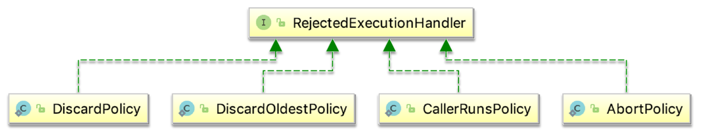
接下来，我们将具体讲解这 4 种拒绝策略。
拒绝策略
- 第一种拒绝策略是 AbortPolicy，这种拒绝策略在拒绝任务时，会直接抛出一个类型为 RejectedExecutionException 的 RuntimeException，让你感知到任务被拒绝了，于是你便可以根据业务逻辑选择重试或者放弃提交等策略。
- 第二种拒绝策略是 DiscardPolicy，这种拒绝策略正如它的名字所描述的一样，当新任务被提交后直接被丢弃掉，也不会给你任何的通知，相对而言存在一定的风险，因为我们提交的时候根本不知道这个任务会被丢弃，可能造成数据丢失。
- 第三种拒绝策略是 DiscardOldestPolicy，如果线程池没被关闭且没有能力执行，则会丢弃任务队列中的头结点，通常是存活时间最长的任务，这种策略与第二种不同之处在于它丢弃的不是最新提交的，而是队列中存活时间最长的，这样就可以腾出空间给新提交的任务，但同理它也存在一定的数据丢失风险。
- 第四种拒绝策略是 CallerRunsPolicy，相对而言它就比较完善了，当有新任务提交后，如果线程池没被关闭且没有能力执行，则把这个任务交于提交任务的线程执行，也就是谁提交任务，谁就负责执行任务。这样做主要有两点好处。
- 第一点新提交的任务不会被丢弃，这样也就不会造成业务损失。
- 第二点好处是，由于谁提交任务谁就要负责执行任务，这样提交任务的线程就得负责执行任务，而执行任务又是比较耗时的，在这段期间，提交任务的线程被占用，也就不会再提交新的任务，减缓了任务提交的速度，相当于是一个负反馈。在此期间，线程池中的线程也可以充分利用这段时间来执行掉一部分任务，腾出一定的空间，相当于是给了线程池一定的缓冲期。
12 有哪 6 种常见的线程池？什么是 Java8 的 ForkJoinPool？
在本课时我们主要学习常见的 6 种线程池，并详细讲解 Java 8 新增的 ForkJoinPool 线程池，6 种常见的线程池如下。
- FixedThreadPool
- CachedThreadPool
- ScheduledThreadPool
- SingleThreadExecutor
- SingleThreadScheduledExecutor
- ForkJoinPool
FixedThreadPool
第一种线程池叫作 FixedThreadPool，它的核心线程数和最大线程数是一样的，所以可以把它看作是固定线程数的线程池，它的特点是线程池中的线程数除了初始阶段需要从 0 开始增加外，之后的线程数量就是固定的，就算任务数超过线程数，线程池也不会再创建更多的线程来处理任务，而是会把超出线程处理能力的任务放到任务队列中进行等待。而且就算任务队列满了，到了本该继续增加线程数的时候，由于它的最大线程数和核心线程数是一样的，所以也无法再增加新的线程了。

如图所示，线程池有 t0~t9，10 个线程，它们会不停地执行任务，如果某个线程任务执行完了，就会从任务队列中获取新的任务继续执行，期间线程数量不会增加也不会减少，始终保持在 10 个。
CachedThreadPool
第二种线程池是 CachedThreadPool，可以称作可缓存线程池，它的特点在于线程数是几乎可以无限增加的（实际最大可以达到 Integer.MAX_VALUE，为 2^31-1，这个数非常大，所以基本不可能达到），而当线程闲置时还可以对线程进行回收。也就是说该线程池的线程数量不是固定不变的，当然它也有一个用于存储提交任务的队列，但这个队列是 SynchronousQueue，队列的容量为0，实际不存储任何任务，它只负责对任务进行中转和传递，所以效率比较高。
当我们提交一个任务后，线程池会判断已创建的线程中是否有空闲线程，如果有空闲线程则将任务直接指派给空闲线程，如果没有空闲线程，则新建线程去执行任务，这样就做到了动态地新增线程。让我们举个例子，如下方代码所示。
ExecutorService service = Executors.newCachedThreadPool();
for (int i = 0; i < 1000; i++) {
service.execute(new Task() {
});
}
使用 for 循环提交 1000 个任务给 CachedThreadPool，假设这些任务处理的时间非常长，会发生什么情况呢？因为 for 循环提交任务的操作是非常快的，但执行任务却比较耗时，就可能导致 1000 个任务都提交完了但第一个任务还没有被执行完，所以此时 CachedThreadPool 就可以动态的伸缩线程数量，随着任务的提交，不停地创建 1000 个线程来执行任务，而当任务执行完之后，假设没有新的任务了，那么大量的闲置线程又会造成内存资源的浪费，这时线程池就会检测线程在 60 秒内有没有可执行任务，如果没有就会被销毁，最终线程数量会减为 0。
ScheduledThreadPool
第三个线程池是 ScheduledThreadPool，它支持定时或周期性执行任务。比如每隔 10 秒钟执行一次任务，而实现这种功能的方法主要有 3 种，如代码所示：
ScheduledExecutorService service = Executors.newScheduledThreadPool(10);
service.schedule(new Task(), 10, TimeUnit.SECONDS);
service.scheduleAtFixedRate(new Task(), 10, 10, TimeUnit.SECONDS);
service.scheduleWithFixedDelay(new Task(), 10, 10, TimeUnit.SECONDS);
那么这 3 种方法有什么区别呢？
- 第一种方法 schedule 比较简单，表示延迟指定时间后执行一次任务，如果代码中设置参数为 10 秒，也就是 10 秒后执行一次任务后就结束。
- 第二种方法 scheduleAtFixedRate 表示以固定的频率执行任务，它的第二个参数 initialDelay 表示第一次延时时间，第三个参数 period 表示周期，也就是第一次延时后每次延时多长时间执行一次任务。
- 第三种方法 scheduleWithFixedDelay 与第二种方法类似，也是周期执行任务，区别在于对周期的定义，之前的 scheduleAtFixedRate 是以任务开始的时间为时间起点开始计时，时间到就开始执行第二次任务，而不管任务需要花多久执行；而 scheduleWithFixedDelay 方法以任务结束的时间为下一次循环的时间起点开始计时。
举个例子，假设某个同学正在熬夜写代码，需要喝咖啡来提神，假设每次喝咖啡都需要花10分钟的时间，如果此时采用第2种方法 scheduleAtFixedRate，时间间隔设置为 1 小时，那么他将会在每个整点喝一杯咖啡，以下是时间表：
- 00:00: 开始喝咖啡
- 00:10: 喝完了
- 01:00: 开始喝咖啡
- 01:10: 喝完了
- 02:00: 开始喝咖啡
- 02:10: 喝完了
但是假设他采用第3种方法 scheduleWithFixedDelay，时间间隔同样设置为 1 小时，那么由于每次喝咖啡需要10分钟，而 scheduleWithFixedDelay 是以任务完成的时间为时间起点开始计时的，所以第2次喝咖啡的时间将会在1:10，而不是1:00整，以下是时间表：
- 00:00: 开始喝咖啡
- 00:10: 喝完了
- 01:10: 开始喝咖啡
- 01:20: 喝完了
- 02:20: 开始喝咖啡
- 02:30: 喝完了
SingleThreadExecutor
第四种线程池是 SingleThreadExecutor，它会使用唯一的线程去执行任务，原理和 FixedThreadPool 是一样的，只不过这里线程只有一个，如果线程在执行任务的过程中发生异常，线程池也会重新创建一个线程来执行后续的任务。这种线程池由于只有一个线程，所以非常适合用于所有任务都需要按被提交的顺序依次执行的场景，而前几种线程池不一定能够保障任务的执行顺序等于被提交的顺序，因为它们是多线程并行执行的。
SingleThreadScheduledExecutor
第五个线程池是 SingleThreadScheduledExecutor，它实际和第三种 ScheduledThreadPool 线程池非常相似，它只是 ScheduledThreadPool 的一个特例，内部只有一个线程，如源码所示：
new ScheduledThreadPoolExecutor(1)
它只是将 ScheduledThreadPool 的核心线程数设置为了 1。

总结上述的五种线程池，我们以核心线程数、最大线程数，以及线程存活时间三个维度进行对比，如表格所示。
第一个线程池 FixedThreadPool，它的核心线程数和最大线程数都是由构造函数直接传参的，而且它们的值是相等的，所以最大线程数不会超过核心线程数，也就不需要考虑线程回收的问题，如果没有任务可执行，线程仍会在线程池中存活并等待任务。
第二个线程池 CachedThreadPool 的核心线程数是 0，而它的最大线程数是 Integer 的最大值，线程数一般是达不到这么多的，所以如果任务特别多且耗时的话，CachedThreadPool 就会创建非常多的线程来应对。
同理，你可以课后按照同样的方法来分析后面三种线程池的参数，来加深对知识的理解。
ForkJoinPool

最后，我们来看下第六种线程池 ForkJoinPool，这个线程池是在 JDK 7 加入的，它的名字 ForkJoin 也描述了它的执行机制，主要用法和之前的线程池是相同的，也是把任务交给线程池去执行，线程池中也有任务队列来存放任务。但是 ForkJoinPool 线程池和之前的线程池有两点非常大的不同之处。第一点它非常适合执行可以产生子任务的任务。
如图所示，我们有一个 Task，这个 Task 可以产生三个子任务，三个子任务并行执行完毕后将结果汇总给 Result，比如说主任务需要执行非常繁重的计算任务，我们就可以把计算拆分成三个部分，这三个部分是互不影响相互独立的，这样就可以利用 CPU 的多核优势，并行计算，然后将结果进行汇总。这里面主要涉及两个步骤，第一步是拆分也就是 Fork，第二步是汇总也就是 Join，到这里你应该已经了解到 ForkJoinPool 线程池名字的由来了。
举个例子，比如面试中经常考到的菲波那切数列，你一定非常熟悉，这个数列的特点就是后一项的结果等于前两项的和，第 0 项是 0，第 1 项是 1，那么第 2 项就是 0+1=1，以此类推。我们在写代码时应该首选效率更高的迭代形式或者更高级的乘方或者矩阵公式法等写法，不过假设我们写成了最初版本的递归形式，伪代码如下所示：
if (n <= 1) {
return n;
} else {
Fib f1 = new Fib(n - 1);
Fib f2 = new Fib(n - 2);
f1.solve();
f2.solve();
number = f1.number + f2.number;
return number;
}
你可以看到如果 n<=1 则直接返回 n，如果 n>1 ，先将前一项 f1 的值计算出来，然后往前推两项求出 f2 的值，然后将两值相加得到结果，所以我们看到在求和运算中产生了两个子任务。计算 f(4) 的流程如下图所示。

在计算 f(4) 时需要首先计算出 f(2) 和 f(3)，而同理，计算 f(3) 时又需要计算 f(1) 和 f(2)，以此类推。

这是典型的递归问题，对应到我们的 ForkJoin 模式，如图所示，子任务同样会产生子子任务，最后再逐层汇总，得到最终的结果。
ForkJoinPool 线程池有多种方法可以实现任务的分裂和汇总，其中一种用法如下方代码所示。
class Fibonacci extends RecursiveTask<Integer> {
int n;
public Fibonacci(int n) {
this.n = n;
}
@Override
public Integer compute() {
if (n <= 1) {
return n;
}
Fibonacci f1 = new Fibonacci(n - 1);
f1.fork();
Fibonacci f2 = new Fibonacci(n - 2);
f2.fork();
return f1.join() + f2.join();
}
}
我们看到它首先继承了 RecursiveTask，RecursiveTask 类是对ForkJoinTask 的一个简单的包装，这时我们重写 compute() 方法，当 n<=1 时直接返回，当 n>1 就创建递归任务，也就是 f1 和 f2，然后我们用 fork() 方法分裂任务并分别执行，最后在 return 的时候，使用 join() 方法把结果汇总，这样就实现了任务的分裂和汇总。
public static void main(String[] args) throws ExecutionException, InterruptedException {
ForkJoinPool forkJoinPool = new ForkJoinPool();
for (int i = 0; i < 10; i++) {
ForkJoinTask task = forkJoinPool.submit(new Fibonacci(i));
System.out.println(task.get());
}
}
上面这段代码将会打印出斐波那契数列的第 0 到 9 项的值：
0
1
1
2
3
5
8
13
21
34
这就是 ForkJoinPool 线程池和其他线程池的第一点不同。
我们来看第二点不同，第二点不同之处在于内部结构，之前的线程池所有的线程共用一个队列，但 ForkJoinPool 线程池中每个线程都有自己独立的任务队列，如图所示。

ForkJoinPool 线程池内部除了有一个共用的任务队列之外，每个线程还有一个对应的双端队列 deque，这时一旦线程中的任务被 Fork 分裂了，分裂出来的子任务放入线程自己的 deque 里，而不是放入公共的任务队列中。如果此时有三个子任务放入线程 t1 的 deque 队列中，对于线程 t1 而言获取任务的成本就降低了，可以直接在自己的任务队列中获取而不必去公共队列中争抢也不会发生阻塞（除了后面会讲到的 steal 情况外），减少了线程间的竞争和切换，是非常高效的。

我们再考虑一种情况，此时线程有多个，而线程 t1 的任务特别繁重，分裂了数十个子任务，但是 t0 此时却无事可做，它自己的 deque 队列为空，这时为了提高效率，t0 就会想办法帮助 t1 执行任务，这就是“work-stealing”的含义。
双端队列 deque 中，线程 t1 获取任务的逻辑是后进先出，也就是LIFO（Last In Frist Out），而线程 t0 在“steal”偷线程 t1 的 deque 中的任务的逻辑是先进先出，也就是FIFO（Fast In Frist Out），如图所示，图中很好的描述了两个线程使用双端队列分别获取任务的情景。你可以看到，使用 “work-stealing” 算法和双端队列很好地平衡了各线程的负载。
最后，我们用一张全景图来描述 ForkJoinPool 线程池的内部结构，你可以看到 ForkJoinPool 线程池和其他线程池很多地方都是一样的，但重点区别在于它每个线程都有一个自己的双端队列来存储分裂出来的子任务。ForkJoinPool 非常适合用于递归的场景，例如树的遍历、最优路径搜索等场景。
13 线程池常用的阻塞队列有哪些？
在本课时我们主要学习线程池内部结构，以及线程池中最常见的阻塞队列类型。
线程池内部结构
线程池的内部结构主要由四部分组成，如图所示。
- 第一部分是线程池管理器，它主要负责管理线程池的创建、销毁、添加任务等管理操作，它是整个线程池的管家。
- 第二部分是工作线程，也就是图中的线程 t0~t9，这些线程勤勤恳恳地从任务队列中获取任务并执行。
- 第三部分是任务队列，作为一种缓冲机制，线程池会把当下没有处理的任务放入任务队列中，由于多线程同时从任务队列中获取任务是并发场景，此时就需要任务队列满足线程安全的要求，所以线程池中任务队列采用 BlockingQueue 来保障线程安全。
- 第四部分是任务，任务要求实现统一的接口，以便工作线程可以处理和执行。
阻塞队列

线程池中的这四个主要组成部分最值得我们关注的就是阻塞队列了，如表格所示，不同的线程池会选用不同的阻塞队列。
表格左侧是线程池，右侧为它们对应的阻塞队列，你可以看到 5 种线程池对应了 3 种阻塞队列，我们接下来对它们进行逐一的介绍。
LinkedBlockingQueue
对于 FixedThreadPool 和 SingleThreadExector 而言，它们使用的阻塞队列是容量为 Integer.MAX_VALUE 的 LinkedBlockingQueue，可以认为是无界队列。由于 FixedThreadPool 线程池的线程数是固定的，所以没有办法增加特别多的线程来处理任务，这时就需要 LinkedBlockingQueue 这样一个没有容量限制的阻塞队列来存放任务。这里需要注意，由于线程池的任务队列永远不会放满，所以线程池只会创建核心线程数量的线程，所以此时的最大线程数对线程池来说没有意义，因为并不会触发生成多于核心线程数的线程。
SynchronousQueue
第二种阻塞队列是 SynchronousQueue，对应的线程池是 CachedThreadPool。线程池 CachedThreadPool 的最大线程数是 Integer 的最大值，可以理解为线程数是可以无限扩展的。CachedThreadPool 和上一种线程池 FixedThreadPool 的情况恰恰相反，FixedThreadPool 的情况是阻塞队列的容量是无限的，而这里 CachedThreadPool 是线程数可以无限扩展，所以 CachedThreadPool 线程池并不需要一个任务队列来存储任务，因为一旦有任务被提交就直接转发给线程或者创建新线程来执行，而不需要另外保存它们。
我们自己创建使用 SynchronousQueue 的线程池时，如果不希望任务被拒绝，那么就需要注意设置最大线程数要尽可能大一些，以免发生任务数大于最大线程数时，没办法把任务放到队列中也没有足够线程来执行任务的情况。
DelayedWorkQueue
第三种阻塞队列是DelayedWorkQueue，它对应的线程池分别是 ScheduledThreadPool 和 SingleThreadScheduledExecutor，这两种线程池的最大特点就是可以延迟执行任务，比如说一定时间后执行任务或是每隔一定的时间执行一次任务。DelayedWorkQueue 的特点是内部元素并不是按照放入的时间排序，而是会按照延迟的时间长短对任务进行排序，内部采用的是“堆”的数据结构。之所以线程池 ScheduledThreadPool 和 SingleThreadScheduledExecutor 选择 DelayedWorkQueue，是因为它们本身正是基于时间执行任务的，而延迟队列正好可以把任务按时间进行排序，方便任务的执行。
14 为什么不应该自动创建线程池？
在本课时我们主要学习为什么不应该自动创建线程池，所谓的自动创建线程池就是直接调用 Executors 的各种方法来生成前面学过的常见的线程池，例如 Executors.newCachedThreadPool()。但这样做是有一定风险的，接下来我们就来逐一分析自动创建线程池可能带来哪些问题。
FixedThreadPool
首先我们来看第一种线程池 FixedThreadPool， 它是线程数量固定的线程池，如源码所示，newFixedThreadPool 内部实际还是调用了 ThreadPoolExecutor 构造函数。
public static ExecutorService newFixedThreadPool(int nThreads) {
return new ThreadPoolExecutor(nThreads, nThreads,0L, TimeUnit.MILLISECONDS,new LinkedBlockingQueue<Runnable>());
}
通过往构造函数中传参，创建了一个核心线程数和最大线程数相等的线程池，它们的数量也就是我们传入的参数，这里的重点是使用的队列是容量没有上限的 LinkedBlockingQueue，如果我们对任务的处理速度比较慢，那么随着请求的增多，队列中堆积的任务也会越来越多，最终大量堆积的任务会占用大量内存，并发生 OOM ，也就是OutOfMemoryError，这几乎会影响到整个程序，会造成很严重的后果。
SingleThreadExecutor
第二种线程池是 SingleThreadExecutor，我们来分析下创建它的源码。
public static ExecutorService newSingleThreadExecutor() {
return new FinalizableDelegatedExecutorService (new ThreadPoolExecutor(1, 1,0L, TimeUnit.MILLISECONDS,new LinkedBlockingQueue<Runnable>()));
}
你可以看出，newSingleThreadExecutor 和 newFixedThreadPool 的原理是一样的，只不过把核心线程数和最大线程数都直接设置成了 1，但是任务队列仍是无界的 LinkedBlockingQueue，所以也会导致同样的问题，也就是当任务堆积时，可能会占用大量的内存并导致 OOM。
CachedThreadPool
第三种线程池是 CachedThreadPool，创建它的源码下所示。
public static ExecutorService newCachedThreadPool() {
return new ThreadPoolExecutor(0, Integer.MAX_VALUE,60L, TimeUnit.SECONDS,new SynchronousQueue<Runnable>());
}
这里的 CachedThreadPool 和前面两种线程池不一样的地方在于任务队列使用的是 SynchronousQueue，SynchronousQueue 本身并不存储任务，而是对任务直接进行转发，这本身是没有问题的，但你会发现构造函数的第二个参数被设置成了 Integer.MAX_VALUE，这个参数的含义是最大线程数，所以由于 CachedThreadPool 并不限制线程的数量，当任务数量特别多的时候，就可能会导致创建非常多的线程，最终超过了操作系统的上限而无法创建新线程，或者导致内存不足。
ScheduledThreadPool 和 SingleThreadScheduledExecutor
第四种线程池 ScheduledThreadPool 和第五种线程池 SingleThreadScheduledExecutor 的原理是一样的，创建 ScheduledThreadPool 的源码如下所示。
public static ScheduledExecutorService newScheduledThreadPool(int corePoolSize) {
return new ScheduledThreadPoolExecutor(corePoolSize);
}
而这里的 ScheduledThreadPoolExecutor 是 ThreadPoolExecutor 的子类，调用的它的构造方法如下所示。
public ScheduledThreadPoolExecutor(int corePoolSize) {
super(corePoolSize, Integer.MAX_VALUE, 0, NANOSECONDS,new DelayedWorkQueue());
}
我们通过源码可以看出，它采用的任务队列是 DelayedWorkQueue，这是一个延迟队列，同时也是一个无界队列，所以和 LinkedBlockingQueue 一样，如果队列中存放过多的任务，就可能导致 OOM。
你可以看到，这几种自动创建的线程池都存在风险，相比较而言，我们自己手动创建会更好，因为我们可以更加明确线程池的运行规则，不仅可以选择适合自己的线程数量，更可以在必要的时候拒绝新任务的提交，避免资源耗尽的风险。
15 合适的线程数量是多少？CPU 核心数和线程数的关系？
在本课时我们主要学习合适的线程数量是多少，以及 CPU 核心数和线程数的关系。
你可能经常在面试中被问到这两个问题，如果想要很好地回答它们首先你需要了解，我们调整线程池中的线程数量的最主要的目的是为了充分并合理地使用 CPU 和内存等资源，从而最大限度地提高程序的性能。在实际工作中，我们需要根据任务类型的不同选择对应的策略。
CPU 密集型任务
首先，我们来看 CPU 密集型任务，比如加密、解密、压缩、计算等一系列需要大量耗费 CPU 资源的任务。对于这样的任务最佳的线程数为 CPU 核心数的 1~2 倍，如果设置过多的线程数，实际上并不会起到很好的效果。此时假设我们设置的线程数量是 CPU 核心数的 2 倍以上，因为计算任务非常重，会占用大量的 CPU 资源，所以这时 CPU 的每个核心工作基本都是满负荷的，而我们又设置了过多的线程，每个线程都想去利用 CPU 资源来执行自己的任务，这就会造成不必要的上下文切换，此时线程数的增多并没有让性能提升，反而由于线程数量过多会导致性能下降。
针对这种情况，我们最好还要同时考虑在同一台机器上还有哪些其他会占用过多 CPU 资源的程序在运行，然后对资源使用做整体的平衡。
耗时 IO 型任务
第二种任务是耗时 IO 型，比如数据库、文件的读写，网络通信等任务，这种任务的特点是并不会特别消耗 CPU 资源，但是 IO 操作很耗时，总体会占用比较多的时间。对于这种任务最大线程数一般会大于 CPU 核心数很多倍，因为 IO 读写速度相比于 CPU 的速度而言是比较慢的，如果我们设置过少的线程数，就可能导致 CPU 资源的浪费。而如果我们设置更多的线程数，那么当一部分线程正在等待 IO 的时候，它们此时并不需要 CPU 来计算，那么另外的线程便可以利用 CPU 去执行其他的任务，互不影响，这样的话在任务队列中等待的任务就会减少，可以更好地利用资源。
《Java并发编程实战》的作者 Brain Goetz 推荐的计算方法：
线程数 = CPU 核心数 *（1+平均等待时间/平均工作时间）
通过这个公式，我们可以计算出一个合理的线程数量，如果任务的平均等待时间长，线程数就随之增加，而如果平均工作时间长，也就是对于我们上面的 CPU 密集型任务，线程数就随之减少。
太少的线程数会使得程序整体性能降低，而过多的线程也会消耗内存等其他资源，所以如果想要更准确的话，可以进行压测，监控 JVM 的线程情况以及 CPU 的负载情况，根据实际情况衡量应该创建的线程数，合理并充分利用资源。
结论
综上所述我们就可以得出一个结论：
- 线程的平均工作时间所占比例越高，就需要越少的线程；
- 线程的平均等待时间所占比例越高，就需要越多的线程；
- 针对不同的程序，进行对应的实际测试就可以得到最合适的选择。
16 如何根据实际需要，定制自己的线程池？
在本课时我们主要学习如何根据自己的实际需求设置线程池的各个参数来定制自己的线程池。
核心线程数
第一个需要设置的参数往往是 corePoolSize 核心线程数，在上一课时我们讲过，合理的线程数量和任务类型，以及 CPU 核心数都有关系，基本结论是线程的平均工作时间所占比例越高，就需要越少的线程；线程的平均等待时间所占比例越高，就需要越多的线程。而对于最大线程数而言，如果我们执行的任务类型不是固定的，比如可能一段时间是 CPU 密集型，另一段时间是 IO 密集型，或是同时有两种任务相互混搭。那么在这种情况下，我们可以把最大线程数设置成核心线程数的几倍，以便应对任务突发情况。当然更好的办法是用不同的线程池执行不同类型的任务，让任务按照类型区分开，而不是混杂在一起，这样就可以按照上一课时估算的线程数或经过压测得到的结果来设置合理的线程数了，达到更好的性能。
阻塞队列
对于阻塞队列这个参数而言，我们可以选择之前介绍过的 LinkedBlockingQueue 或者 SynchronousQueue 或者 DelayedWorkQueue，不过还有一种常用的阻塞队列叫 ArrayBlockingQueue，它也经常被用于线程池中，这种阻塞队列内部是用数组实现的，在新建对象的时候要求传入容量值，且后期不能扩容，所以 ArrayBlockingQueue 的最大的特点就是容量是有限的。这样一来，如果任务队列放满了任务，而且线程数也已经达到了最大值，线程池根据规则就会拒绝新提交的任务，这样一来就可能会产生一定的数据丢失。
但相比于无限增加任务或者线程数导致内存不足，进而导致程序崩溃，数据丢失还是要更好一些的，如果我们使用了 ArrayBlockingQueue 这种阻塞队列，再加上我们限制了最大线程数量，就可以非常有效地防止资源耗尽的情况发生。此时的队列容量大小和 maxPoolSize 是一个 trade-off，如果我们使用容量更大的队列和更小的最大线程数，就可以减少上下文切换带来的开销，但也可能因此降低整体的吞吐量；如果我们的任务是 IO 密集型，则可以选择稍小容量的队列和更大的最大线程数，这样整体的效率就会更高，不过也会带来更多的上下文切换。
线程工厂
对于线程工厂 threadFactory 这个参数，我们可以使用默认的 defaultThreadFactory，也可以传入自定义的有额外能力的线程工厂，因为我们可能有多个线程池，而不同的线程池之间有必要通过不同的名字来进行区分，所以可以传入能根据业务信息进行命名的线程工厂，以便后续可以根据线程名区分不同的业务进而快速定位问题代码。比如可以通过com.google.common.util.concurrent.ThreadFactory
Builder 来实现，如代码所示。
ThreadFactoryBuilder builder = new ThreadFactoryBuilder();
ThreadFactory rpcFactory = builder.setNameFormat("rpc-pool-%d").build();
我们生成了名字为 rpcFactory 的 ThreadFactory，它的 nameFormat 为 "rpc-pool-%d" ，那么它生成的线程的名字是有固定格式的，它生成的线程的名字分别为"rpc-pool-1"，"rpc-pool-2" ，以此类推。
拒绝策略
最后一个参数是拒绝策略，我们可以根据业务需要，选择第 11 讲里的四种拒绝策略之一来使用：AbortPolicy，DiscardPolicy，DiscardOldestPolicy 或者 CallerRunsPolicy。除此之外，我们还可以通过实现 RejectedExecutionHandler 接口来实现自己的拒绝策略，在接口中我们需要实现 rejectedExecution 方法，在 rejectedExecution 方法中，执行例如打印日志、暂存任务、重新执行等自定义的拒绝策略，以便满足业务需求。如代码所示。
private static class CustomRejectionHandler implements RejectedExecutionHandler {
@Override
public void rejectedExecution(Runnable r, ThreadPoolExecutor executor) {
//打印日志、暂存任务、重新执行等拒绝策略
}
}
总结
所以定制自己的线程池和我们的业务是强相关的，首先我们需要掌握每个参数的含义，以及常见的选项，然后根据实际需要，比如说并发量、内存大小、是否接受任务被拒绝等一系列因素去定制一个非常适合自己业务的线程池，这样既不会导致内存不足，同时又可以用合适数量的线程来保障任务执行的效率，并在拒绝任务时有所记录方便日后进行追溯。
17 如何正确关闭线程池？shutdown 和 shutdownNow 的区别？
在本课时我们主要学习如何正确关闭线程池？以及 shutdown() 与 shutdownNow() 方法的区别？首先，我们创建一个线程数固定为 10 的线程池，并且往线程池中提交 100 个任务，如代码所示。
ExecutorService service = Executors.newFixedThreadPool(10);
for (int i = 0; i < 100; i++) {
service.execute(new Task());
}
那么如果现在我们想关闭该线程池该如何做呢？本课时主要介绍 5 种在 ThreadPoolExecutor 中涉及关闭线程池的方法，如下所示。
- void shutdown;
- boolean isShutdown;
- boolean isTerminated;
- boolean awaitTermination(long timeout, TimeUnit unit) throws InterruptedException;
- List
shutdownNow;
下面我们就对这些方法逐一展开。
shutdown()
第一种方法叫作 shutdown()，它可以安全地关闭一个线程池，调用 shutdown() 方法之后线程池并不是立刻就被关闭，因为这时线程池中可能还有很多任务正在被执行，或是任务队列中有大量正在等待被执行的任务，调用 shutdown() 方法后线程池会在执行完正在执行的任务和队列中等待的任务后才彻底关闭。但这并不代表 shutdown() 操作是没有任何效果的，调用 shutdown() 方法后如果还有新的任务被提交，线程池则会根据拒绝策略直接拒绝后续新提交的任务。
isShutdown()
第二个方法叫作 isShutdown()，它可以返回 true 或者 false 来判断线程池是否已经开始了关闭工作，也就是是否执行了 shutdown 或者 shutdownNow 方法。这里需要注意，如果调用 isShutdown() 方法的返回的结果为 true 并不代表线程池此时已经彻底关闭了，这仅仅代表线程池开始了关闭的流程，也就是说，此时可能线程池中依然有线程在执行任务，队列里也可能有等待被执行的任务。
isTerminated()
第三种方法叫作 isTerminated()，这个方法可以检测线程池是否真正“终结”了，这不仅代表线程池已关闭，同时代表线程池中的所有任务都已经都执行完毕了，因为我们刚才说过，调用 shutdown 方法之后，线程池会继续执行里面未完成的任务，不仅包括线程正在执行的任务，还包括正在任务队列中等待的任务。比如此时已经调用了 shutdown 方法，但是有一个线程依然在执行任务，那么此时调用 isShutdown 方法返回的是 true ，而调用 isTerminated 方法返回的便是 false ，因为线程池中还有任务正在在被执行，线程池并没有真正“终结”。直到所有任务都执行完毕了，调用 isTerminated() 方法才会返回 true，这表示线程池已关闭并且线程池内部是空的，所有剩余的任务都执行完毕了。
awaitTermination()
第四个方法叫作 awaitTermination()，它本身并不是用来关闭线程池的，而是主要用来判断线程池状态的。比如我们给 awaitTermination 方法传入的参数是 10 秒，那么它就会陷入 10 秒钟的等待，直到发生以下三种情况之一：
- 等待期间（包括进入等待状态之前）线程池已关闭并且所有已提交的任务（包括正在执行的和队列中等待的）都执行完毕，相当于线程池已经“终结”了，方法便会返回 true；
- 等待超时时间到后，第一种线程池“终结”的情况始终未发生，方法返回 false；
- 等待期间线程被中断，方法会抛出 InterruptedException 异常。
也就是说，调用 awaitTermination 方法后当前线程会尝试等待一段指定的时间，如果在等待时间内，线程池已关闭并且内部的任务都执行完毕了，也就是说线程池真正“终结”了，那么方法就返回 true，否则超时返回 fasle。
我们则可以根据 awaitTermination() 返回的布尔值来判断下一步应该执行的操作。
shutdownNow()
最后一个方法是 shutdownNow()，也是 5 种方法里功能最强大的，它与第一种 shutdown 方法不同之处在于名字中多了一个单词 Now，也就是表示立刻关闭的意思。在执行 shutdownNow 方法之后，首先会给所有线程池中的线程发送 interrupt 中断信号，尝试中断这些任务的执行，然后会将任务队列中正在等待的所有任务转移到一个 List 中并返回，我们可以根据返回的任务 List 来进行一些补救的操作，例如记录在案并在后期重试。shutdownNow() 的源码如下所示。
public List<Runnable> shutdownNow() {
List<Runnable> tasks;
final ReentrantLock mainLock = this.mainLock;
mainLock.lock();
try {
checkShutdownAccess();
advanceRunState(STOP);
interruptWorkers();
tasks = drainQueue();
} finally {
mainLock.unlock();
}
tryTerminate();
return tasks;
}
你可以看到源码中有一行 interruptWorkers() 代码，这行代码会让每一个已经启动的线程都中断，这样线程就可以在执行任务期间检测到中断信号并进行相应的处理，提前结束任务。这里需要注意的是，由于 Java 中不推荐强行停止线程的机制的限制，即便我们调用了 shutdownNow 方法，如果被中断的线程对于中断信号不理不睬，那么依然有可能导致任务不会停止。可见我们在开发中落地最佳实践是很重要的，我们自己编写的线程应当具有响应中断信号的能力，正确停止线程的方法在第 2 讲有讲过，应当利用中断信号来协同工作。
在掌握了这 5 种关闭线程池相关的方法之后，我们就可以根据自己的业务需要，选择合适的方法来停止线程池，比如通常我们可以用 shutdown() 方法来关闭，这样可以让已提交的任务都执行完毕，但是如果情况紧急，那我们就可以用 shutdownNow 方法来加快线程池“终结”的速度。
18 线程池实现“线程复用”的原理？
在本课时我们主要学习线程复用的原理，以及对线程池的 execute 这个非常重要的方法进行源码解析。
线程复用原理
我们知道线程池会使用固定数量或可变数量的线程来执行任务，但无论是固定数量或可变数量的线程，其线程数量都远远小于任务数量，面对这种情况线程池可以通过线程复用让同一个线程去执行不同的任务，那么线程复用背后的原理是什么呢？
线程池可以把线程和任务进行解耦，线程归线程，任务归任务，摆脱了之前通过 Thread 创建线程时的一个线程必须对应一个任务的限制。在线程池中，同一个线程可以从 BlockingQueue 中不断提取新任务来执行，其核心原理在于线程池对 Thread 进行了封装，并不是每次执行任务都会调用 Thread.start() 来创建新线程，而是让每个线程去执行一个“循环任务”，在这个“循环任务”中，不停地检查是否还有任务等待被执行，如果有则直接去执行这个任务，也就是调用任务的 run 方法，把 run 方法当作和普通方法一样的地位去调用，相当于把每个任务的 run() 方法串联了起来，所以线程数量并不增加。
我们首先来复习一下线程池创建新线程的时机和规则：

如流程图所示，当提交任务后，线程池首先会检查当前线程数，如果此时线程数小于核心线程数，比如最开始线程数量为 0，则新建线程并执行任务，随着任务的不断增加，线程数会逐渐增加并达到核心线程数，此时如果仍有任务被不断提交，就会被放入 workQueue 任务队列中，等待核心线程执行完当前任务后重新从 workQueue 中提取正在等待被执行的任务。此时，假设我们的任务特别的多，已经达到了 workQueue 的容量上限，这时线程池就会启动后备力量，也就是 maxPoolSize 最大线程数，线程池会在 corePoolSize 核心线程数的基础上继续创建线程来执行任务，假设任务被不断提交，线程池会持续创建线程直到线程数达到 maxPoolSize 最大线程数，如果依然有任务被提交，这就超过了线程池的最大处理能力，这个时候线程池就会拒绝这些任务，我们可以看到实际上任务进来之后，线程池会逐一判断 corePoolSize 、workQueue 、maxPoolSize ，如果依然不能满足需求，则会拒绝任务。
我们接下来具体看看代码是如何实现的，我们从 execute 方法开始分析，源码如下所示。
public void execute(Runnable command) {
if (command == null)
throw new NullPointerException();
int c = ctl.get();
if (workerCountOf(c) < corePoolSize) {
if (addWorker(command, true))
return;
c = ctl.get();
}
if (isRunning(c) && workQueue.offer(command)) {
int recheck = ctl.get();
if (! isRunning(recheck) && remove(command))
reject(command);
else if (workerCountOf(recheck) == 0)
addWorker(null, false);
}
else if (!addWorker(command, false))
reject(command);
}
线程复用源码解析
这段代码短小精悍，内容丰富，接下来我们具体分析代码中的逻辑，首先看下前几行：
//如果传入的Runnable的空，就抛出异常
if (command == null)
throw new NullPointerException();
execute 方法中通过 if 语句判断 command ，也就是 Runnable 任务是否等于 null，如果为 null 就抛出异常。
接下来判断当前线程数是否小于核心线程数，如果小于核心线程数就调用 addWorker() 方法增加一个 Worker，这里的 Worker 就可以理解为一个线程：
if (workerCountOf(c) < corePoolSize) {
if (addWorker(command, true))
return;
c = ctl.get();
}
那 addWorker 方法又是做什么用的呢？addWorker 方法的主要作用是在线程池中创建一个线程并执行第一个参数传入的任务，它的第二个参数是个布尔值，如果布尔值传入 true 代表增加线程时判断当前线程是否少于 corePoolSize，小于则增加新线程，大于等于则不增加；同理，如果传入 false 代表增加线程时判断当前线程是否少于 maxPoolSize，小于则增加新线程，大于等于则不增加，所以这里的布尔值的含义是以核心线程数为界限还是以最大线程数为界限进行是否新增线程的判断。addWorker() 方法如果返回 true 代表添加成功，如果返回 false 代表添加失败。
我们接下来看下一部分代码：
if (isRunning(c) && workQueue.offer(command)) {
int recheck = ctl.get();
if (! isRunning(recheck) && remove(command))
reject(command);
else if (workerCountOf(recheck) == 0)
addWorker(null, false);
}
如果代码执行到这里，说明当前线程数大于或等于核心线程数或者 addWorker 失败了，那么就需要通过 if (isRunning(c) && workQueue.offer(command)) 检查线程池状态是否为 Running，如果线程池状态是 Running 就把任务放入任务队列中，也就是 workQueue.offer(command)。如果线程池已经不处于 Running 状态，说明线程池被关闭，那么就移除刚刚添加到任务队列中的任务，并执行拒绝策略，代码如下所示：
if (! isRunning(recheck) && remove(command))
reject(command);
下面我们再来看后一个 else 分支：
else if (workerCountOf(recheck) == 0)
addWorker(null, false);
能进入这个 else 说明前面判断到线程池状态为 Running，那么当任务被添加进来之后就需要防止没有可执行线程的情况发生（比如之前的线程被回收了或意外终止了），所以此时如果检查当前线程数为 0，也就是 workerCountOf**(recheck) == 0，那就执行 addWorker() 方法新建线程。
我们再来看最后一部分代码：
else if (!addWorker(command, false))
reject(command);
执行到这里，说明线程池不是 Running 状态或线程数大于或等于核心线程数并且任务队列已经满了，根据规则，此时需要添加新线程，直到线程数达到“最大线程数”，所以此时就会再次调用 addWorker 方法并将第二个参数传入 false，传入 false 代表增加线程时判断当前线程数是否少于 maxPoolSize，小于则增加新线程，大于等于则不增加，也就是以 maxPoolSize 为上限创建新的 worker；addWorker 方法如果返回 true 代表添加成功，如果返回 false 代表任务添加失败，说明当前线程数已经达到 maxPoolSize，然后执行拒绝策略 reject 方法。如果执行到这里线程池的状态不是 Running，那么 addWorker 会失败并返回 false，所以也会执行拒绝策略 reject 方法。
可以看出，在 execute 方法中，多次调用 addWorker 方法把任务传入，addWorker 方法会添加并启动一个 Worker，这里的 Worker 可以理解为是对 Thread 的包装，Worker 内部有一个 Thread 对象，它正是最终真正执行任务的线程，所以一个 Worker 就对应线程池中的一个线程，addWorker 就代表增加线程。线程复用的逻辑实现主要在 Worker 类中的 run 方法里执行的 runWorker 方法中，简化后的 runWorker 方法代码如下所示。
runWorker(Worker w) {
Runnable task = w.firstTask;
while (task != null || (task = getTask()) != null) {
try {
task.run();
} finally {
task = null;
}
}
}
可以看出，实现线程复用的逻辑主要在一个不停循环的 while 循环体中。
- 通过取 Worker 的 firstTask 或者通过 getTask 方法从 workQueue 中获取待执行的任务。
- 直接调用 task 的 run 方法来执行具体的任务（而不是新建线程）。
在这里，我们找到了最终的实现，通过取 Worker 的 firstTask 或者 getTask方法从 workQueue 中取出了新任务，并直接调用 Runnable 的 run 方法来执行任务，也就是如之前所说的，每个线程都始终在一个大循环中，反复获取任务，然后执行任务，从而实现了线程的复用。
19 你知道哪几种锁？分别有什么特点？
本课时我们首先会对锁的分类有一个整体的概念，了解锁究竟有哪些分类标准。然后在后续的课程中，会对其中重要的锁进行详细讲解。
锁的 7 大分类
需要首先指出的是，这些多种多样的分类，是评价一个事物的多种标准，比如评价一个城市，标准有人口多少、经济发达与否、城市面积大小等。而一个城市可能同时占据多个标准，以北京而言，人口多，经济发达，同时城市面积还很大。
同理，对于 Java 中的锁而言，一把锁也有可能同时占有多个标准，符合多种分类，比如 ReentrantLock 既是可中断锁，又是可重入锁。
根据分类标准我们把锁分为以下 7 大类别，分别是：
- 偏向锁/轻量级锁/重量级锁；
- 可重入锁/非可重入锁；
- 共享锁/独占锁；
- 公平锁/非公平锁；
- 悲观锁/乐观锁；
- 自旋锁/非自旋锁；
- 可中断锁/不可中断锁。
以上是常见的分类标准，下面我们来逐一介绍它们的含义。
偏向锁/轻量级锁/重量级锁
第一种分类是偏向锁/轻量级锁/重量级锁，这三种锁特指 synchronized 锁的状态，通过在对象头中的 mark word 来表明锁的状态。
- 偏向锁
如果自始至终，对于这把锁都不存在竞争，那么其实就没必要上锁，只需要打个标记就行了，这就是偏向锁的思想。一个对象被初始化后，还没有任何线程来获取它的锁时，那么它就是可偏向的，当有第一个线程来访问它并尝试获取锁的时候，它就将这个线程记录下来，以后如果尝试获取锁的线程正是偏向锁的拥有者，就可以直接获得锁，开销很小，性能最好。
- 轻量级锁
JVM 开发者发现在很多情况下，synchronized 中的代码是被多个线程交替执行的，而不是同时执行的，也就是说并不存在实际的竞争，或者是只有短时间的锁竞争，用 CAS 就可以解决，这种情况下，用完全互斥的重量级锁是没必要的。轻量级锁是指当锁原来是偏向锁的时候，被另一个线程访问，说明存在竞争，那么偏向锁就会升级为轻量级锁，线程会通过自旋的形式尝试获取锁，而不会陷入阻塞。
- 重量级锁
重量级锁是互斥锁，它是利用操作系统的同步机制实现的，所以开销相对比较大。当多个线程直接有实际竞争，且锁竞争时间长的时候，轻量级锁不能满足需求，锁就会膨胀为重量级锁。重量级锁会让其他申请却拿不到锁的线程进入阻塞状态。
你可以发现锁升级的路径：无锁→偏向锁→轻量级锁→重量级锁。
综上所述，偏向锁性能最好，可以避免执行 CAS 操作。而轻量级锁利用自旋和 CAS 避免了重量级锁带来的线程阻塞和唤醒，性能中等。重量级锁则会把获取不到锁的线程阻塞，性能最差。
可重入锁/非可重入锁
第 2 个分类是可重入锁和非可重入锁。可重入锁指的是线程当前已经持有这把锁了，能在不释放这把锁的情况下，再次获取这把锁。同理，不可重入锁指的是虽然线程当前持有了这把锁，但是如果想再次获取这把锁，也必须要先释放锁后才能再次尝试获取。
对于可重入锁而言，最典型的就是 ReentrantLock 了，正如它的名字一样，reentrant 的意思就是可重入，它也是 Lock 接口最主要的一个实现类。
共享锁/独占锁
第 3 种分类标准是共享锁和独占锁。共享锁指的是我们同一把锁可以被多个线程同时获得，而独占锁指的就是，这把锁只能同时被一个线程获得。我们的读写锁，就最好地诠释了共享锁和独占锁的理念。读写锁中的读锁，是共享锁，而写锁是独占锁。读锁可以被同时读，可以同时被多个线程持有，而写锁最多只能同时被一个线程持有。
公平锁/非公平锁
第 4 种分类是公平锁和非公平锁。公平锁的公平的含义在于如果线程现在拿不到这把锁，那么线程就都会进入等待，开始排队，在等待队列里等待时间长的线程会优先拿到这把锁，有先来先得的意思。而非公平锁就不那么“完美”了，它会在一定情况下，忽略掉已经在排队的线程，发生插队现象。
悲观锁/乐观锁
第 5 种分类是悲观锁，以及与它对应的乐观锁。悲观锁的概念是在获取资源之前，必须先拿到锁，以便达到“独占”的状态，当前线程在操作资源的时候，其他线程由于不能拿到锁，所以其他线程不能来影响我。而乐观锁恰恰相反，它并不要求在获取资源前拿到锁，也不会锁住资源；相反，乐观锁利用 CAS 理念，在不独占资源的情况下，完成了对资源的修改。
自旋锁/非自旋锁
第 6 种分类是自旋锁与非自旋锁。自旋锁的理念是如果线程现在拿不到锁，并不直接陷入阻塞或者释放 CPU 资源，而是开始利用循环，不停地尝试获取锁，这个循环过程被形象地比喻为“自旋”，就像是线程在“自我旋转”。相反，非自旋锁的理念就是没有自旋的过程，如果拿不到锁就直接放弃，或者进行其他的处理逻辑，例如去排队、陷入阻塞等。
可中断锁/不可中断锁
第 7 种分类是可中断锁和不可中断锁。在 Java 中，synchronized 关键字修饰的锁代表的是不可中断锁，一旦线程申请了锁，就没有回头路了，只能等到拿到锁以后才能进行其他的逻辑处理。而我们的 ReentrantLock 是一种典型的可中断锁，例如使用 lockInterruptibly 方法在获取锁的过程中，突然不想获取了，那么也可以在中断之后去做其他的事情，不需要一直傻等到获取到锁才离开。
20 悲观锁和乐观锁的本质是什么？
本课时我们会讲讲悲观锁和乐观锁。
首先我们看下悲观锁与乐观锁是如何进行分类的，悲观锁和乐观锁是从是否锁住资源的角度进行分类的。
悲观锁
悲观锁比较悲观，它认为如果不锁住这个资源，别的线程就会来争抢，就会造成数据结果错误，所以悲观锁为了确保结果的正确性，会在每次获取并修改数据时，都把数据锁住，让其他线程无法访问该数据，这样就可以确保数据内容万无一失。
这也和我们人类中悲观主义者的性格是一样的，悲观主义者做事情之前总是担惊受怕，所以会严防死守，保证别人不能来碰我的东西，这就是悲观锁名字的含义。

我们举个例子，假设线程 A 和 B 使用的都是悲观锁，所以它们在尝试获取同步资源时，必须要先拿到锁。

假设线程 A 拿到了锁，并且正在操作同步资源，那么此时线程 B 就必须进行等待。

而当线程 A 执行完毕后，CPU 才会唤醒正在等待这把锁的线程 B 再次尝试获取锁。

如果线程 B 现在获取到了锁，才可以对同步资源进行自己的操作。这就是悲观锁的操作流程。
乐观锁
乐观锁比较乐观，认为自己在操作资源的时候不会有其他线程来干扰，所以并不会锁住被操作对象，不会不让别的线程来接触它，同时，为了确保数据正确性，在更新之前，会去对比在我修改数据期间，数据有没有被其他线程修改过：如果没被修改过，就说明真的只有我自己在操作，那我就可以正常的修改数据；如果发现数据和我一开始拿到的不一样了，说明其他线程在这段时间内修改过数据，那说明我迟了一步，所以我会放弃这次修改，并选择报错、重试等策略。
这和我们生活中乐天派的人的性格是一样的，乐观的人并不会担忧还没有发生的事情，相反，他会认为未来是美好的，所以他在修改数据之前，并不会把数据给锁住。当然，乐天派也不会盲目行动，如果他发现事情和他预想的不一样，也会有相应的处理办法，他不会坐以待毙，这就是乐观锁的思想。

乐观锁的实现一般都是利用 CAS 算法实现的。我们举个例子，假设线程 A 此时运用的是乐观锁。那么它去操作同步资源的时候，不需要提前获取到锁，而是可以直接去读取同步资源，并且在自己的线程内进行计算。
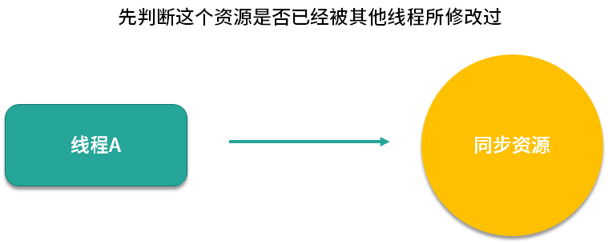
当它计算完毕之后、准备更新同步资源之前，会先判断这个资源是否已经被其他线程所修改过。

如果这个时候同步资源没有被其他线程修改更新，也就是说此时的数据和线程 A 最开始拿到的数据是一致的话，那么此时线程 A 就会去更新同步资源，完成修改的过程。
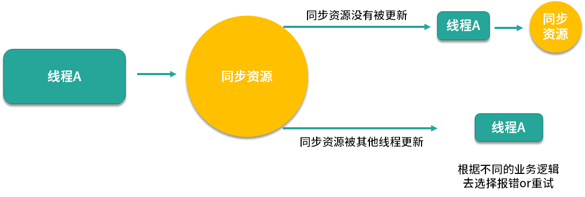
而假设此时的同步资源已经被其他线程修改更新了，线程 A 会发现此时的数据已经和最开始拿到的数据不一致了，那么线程 A 不会继续修改该数据，而是会根据不同的业务逻辑去选择报错或者重试。
悲观锁和乐观锁概念并不是 Java 中独有的，这是一种广义的思想，这种思想可以应用于其他领域，比如说在数据库中，同样也有对悲观锁和乐观锁的应用。
典型案例
- 悲观锁：synchronized 关键字和 Lock 接口
Java 中悲观锁的实现包括 synchronized 关键字和 Lock 相关类等，我们以 Lock 接口为例，例如 Lock 的实现类 ReentrantLock，类中的 lock() 等方法就是执行加锁，而 unlock() 方法是执行解锁。处理资源之前必须要先加锁并拿到锁，等到处理完了之后再解开锁，这就是非常典型的悲观锁思想。
- 乐观锁：原子类
乐观锁的典型案例就是原子类，例如 AtomicInteger 在更新数据时，就使用了乐观锁的思想，多个线程可以同时操作同一个原子变量。
- 大喜大悲：数据库
数据库中同时拥有悲观锁和乐观锁的思想。例如，我们如果在 MySQL 选择 select for update 语句，那就是悲观锁，在提交之前不允许第三方来修改该数据，这当然会造成一定的性能损耗，在高并发的情况下是不可取的。
相反，我们可以利用一个版本 version 字段在数据库中实现乐观锁。在获取及修改数据时都不需要加锁，但是我们在获取完数据并计算完毕，准备更新数据时，会检查版本号和获取数据时的版本号是否一致，如果一致就直接更新，如果不一致，说明计算期间已经有其他线程修改过这个数据了，那我就可以选择重新获取数据，重新计算，然后再次尝试更新数据。
SQL语句示例如下（假设取出数据的时候 version 为1）：
UPDATE student
SET
name = ‘小李’,
version= 2
WHERE id= 100
AND version= 1
“汝之蜜糖,彼之砒霜”
有一种说法认为，悲观锁由于它的操作比较重量级，不能多个线程并行执行，而且还会有上下文切换等动作，所以悲观锁的性能不如乐观锁好，应该尽量避免用悲观锁，这种说法是不正确的。
因为虽然悲观锁确实会让得不到锁的线程阻塞，但是这种开销是固定的。悲观锁的原始开销确实要高于乐观锁，但是特点是一劳永逸，就算一直拿不到锁，也不会对开销造成额外的影响。
反观乐观锁虽然一开始的开销比悲观锁小，但是如果一直拿不到锁，或者并发量大，竞争激烈，导致不停重试，那么消耗的资源也会越来越多，甚至开销会超过悲观锁。
所以，同样是悲观锁，在不同的场景下，效果可能完全不同，可能在今天的这种场景下是好的选择，在明天的另外的场景下就是坏的选择，这恰恰是“汝之蜜糖，彼之砒霜”。
因此，我们就来看一下两种锁各自的使用场景，把合适的锁用到合适的场景中去，把合理的资源分配到合理的地方去。
两种锁各自的使用场景
悲观锁适合用于并发写入多、临界区代码复杂、竞争激烈等场景，这种场景下悲观锁可以避免大量的无用的反复尝试等消耗。
乐观锁适用于大部分是读取，少部分是修改的场景，也适合虽然读写都很多，但是并发并不激烈的场景。在这些场景下，乐观锁不加锁的特点能让性能大幅提高。
21 如何看到 synchronized 背后的“monitor 锁”？
本课时我们研究下 synchronized 背后的 monitor 锁。
获取和释放 monitor 锁的时机
我们都知道，最简单的同步方式就是利用 synchronized 关键字来修饰代码块或者修饰一个方法，那么这部分被保护的代码，在同一时刻就最多只有一个线程可以运行，而 synchronized 的背后正是利用 monitor 锁实现的。所以首先我们来看下获取和释放 monitor 锁的时机，每个 Java 对象都可以用作一个实现同步的锁，这个锁也被称为内置锁或 monitor 锁，获得 monitor 锁的唯一途径就是进入由这个锁保护的同步代码块或同步方法，线程在进入被 synchronized 保护的代码块之前，会自动获取锁，并且无论是正常路径退出，还是通过抛出异常退出，在退出的时候都会自动释放锁。
我们首先来看一个 synchronized 修饰方法的代码的例子：
public synchronized void method() {
method body
}
我们看到 method() 方法是被 synchronized 修饰的，为了方便理解其背后的原理，我们把上面这段代码改写为下面这种等价形式的伪代码。
public void method() {
this.intrinsicLock.lock();
try{
method body
}
finally {
this.intrinsicLock.unlock();
}
}
在这种写法中，进入 method 方法后，立刻添加内置锁，并且用 try 代码块把方法保护起来，最后用 finally 释放这把锁，这里的 intrinsicLock 就是 monitor 锁。经过这样的伪代码展开之后，相信你对 synchronized 的理解就更加清晰了。
用 javap 命令查看反汇编的结果
JVM 实现 synchronized 方法和 synchronized 代码块的细节是不一样的，下面我们就分别来看一下两者的实现。
同步代码块
首先我们来看下同步代码块的实现，如代码所示。
public class SynTest {
public void synBlock() {
synchronized (this) {
System.out.println("lagou");
}
}
}
在 SynTest 类中的 synBlock 方法，包含一个同步代码块，synchronized 代码块中有一行代码打印了 lagou 字符串，下面我们来通过命令看下 synchronized 关键字到底做了什么事情：首先用 cd 命令切换到 SynTest.java 类所在的路径，然后执行 javac SynTest.java，于是就会产生一个名为 SynTest.class 的字节码文件，然后我们执行 javap -verbose SynTest.class，就可以看到对应的反汇编内容。
关键信息如下：
public void synBlock();
descriptor: ()V
flags: ACC_PUBLIC
Code:
stack=2, locals=3, args_size=1
0: aload_0
1: dup
2: astore_1
3: monitorenter
4: getstatic #2 // Field java/lang/System.out:Ljava/io/PrintStream;
7: ldc #3 // String lagou
9: invokevirtual #4 // Method java/io/PrintStream.println:(Ljava/lang/String;)V
12: aload_1
13: monitorexit
14: goto 22
17: astore_2
18: aload_1
19: monitorexit
20: aload_2
21: athrow
22: return
从里面可以看出，synchronized 代码块实际上多了 monitorenter 和 monitorexit 指令，标红的第3、13、19行指令分别对应的是 monitorenter 和 monitorexit。这里有一个 monitorenter，却有两个 monitorexit 指令的原因是，JVM 要保证每个 monitorenter 必须有与之对应的 monitorexit，monitorenter 指令被插入到同步代码块的开始位置，而 monitorexit 需要插入到方法正常结束处和异常处两个地方，这样就可以保证抛异常的情况下也能释放锁
可以把执行 monitorenter 理解为加锁，执行 monitorexit 理解为释放锁，每个对象维护着一个记录着被锁次数的计数器。未被锁定的对象的该计数器为 0，我们来具体看一下 monitorenter 和 monitorexit 的含义：
- monitorenter
执行 monitorenter 的线程尝试获得 monitor 的所有权，会发生以下这三种情况之一：
a. 如果该 monitor 的计数为 0，则线程获得该 monitor 并将其计数设置为 1。然后，该线程就是这个 monitor 的所有者。
b. 如果线程已经拥有了这个 monitor ，则它将重新进入，并且累加计数。
c. 如果其他线程已经拥有了这个 monitor，那个这个线程就会被阻塞，直到这个 monitor 的计数变成为 0，代表这个 monitor 已经被释放了，于是当前这个线程就会再次尝试获取这个 monitor。
- monitorexit monitorexit 的作用是将 monitor 的计数器减 1，直到减为 0 为止。代表这个 monitor 已经被释放了，已经没有任何线程拥有它了，也就代表着解锁，所以，其他正在等待这个 monitor 的线程，此时便可以再次尝试获取这个 monitor 的所有权。
同步方法
从上面可以看出，同步代码块是使用 monitorenter 和 monitorexit 指令实现的。而对于 synchronized 方法，并不是依靠 monitorenter 和 monitorexit 指令实现的，被 javap 反汇编后可以看到，synchronized 方法和普通方法大部分是一样的，不同在于，这个方法会有一个叫作 ACC_SYNCHRONIZED 的 flag 修饰符，来表明它是同步方法。
同步方法的代码如下所示。
public synchronized void synMethod() {
}
对应的反汇编指令如下所示。
public synchronized void synMethod();
descriptor: ()V
flags: ACC_PUBLIC, ACC_SYNCHRONIZED
Code:
stack=0, locals=1, args_size=1
0: return
LineNumberTable:
line 16: 0
可以看出，被 synchronized 修饰的方法会有一个 ACC_SYNCHRONIZED 标志。当某个线程要访问某个方法的时候，会首先检查方法是否有 ACC_SYNCHRONIZED 标志，如果有则需要先获得 monitor 锁，然后才能开始执行方法，方法执行之后再释放 monitor 锁。其他方面， synchronized 方法和刚才的 synchronized 代码块是很类似的，例如这时如果其他线程来请求执行方法，也会因为无法获得 monitor 锁而被阻塞。
好了，本课时的内容就全部讲完了，本课时我们讲解了获取和释放 monitor 的时机，以及被 synchronized 修饰的等价代码，然后我们还利用 javac 和 javap 命令查看了 synchronized 代码块以及 synchronized 方法所对应的的反汇编指令，其中同步代码块是利用 monitorenter 和 monitorexit 指令实现的，而同步方法则是利用 flags 实现的。
22 synchronized 和 Lock 孰优孰劣，如何选择？
本课时我们主要学习 synchronized 和 Lock 的异同点，以及该如何选择。
相同点
synchronized 和 Lock 的相同点非常多，我们这里重点讲解 3 个比较大的相同点。
- synchronized 和 Lock 都是用来保护资源线程安全的。
这一点毋庸置疑，这是它们的基本作用。
- 都可以保证可见性。
对于 synchronized 而言，线程 A 在进入 synchronized 块之前或在 synchronized 块内进行操作，对于后续的获得同一个 monitor 锁的线程 B 是可见的，也就是线程 B 是可以看到线程 A 之前的操作的，这也体现了 happens-before 针对 synchronized 的一个原则。
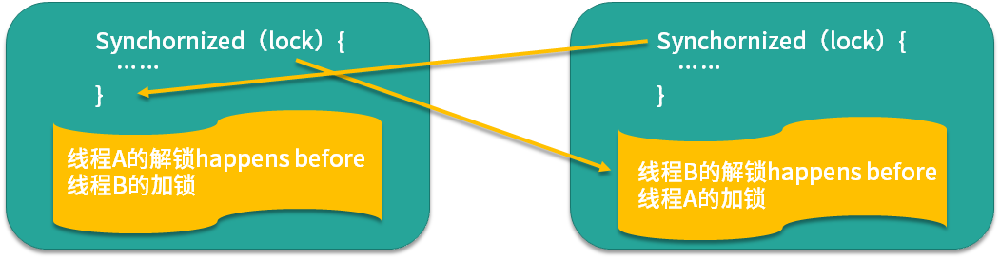
而对于 Lock 而言，它和 synchronized 是一样，都可以保证可见性，如图所示，在解锁之前的所有操作对加锁之后的所有操作都是可见的。
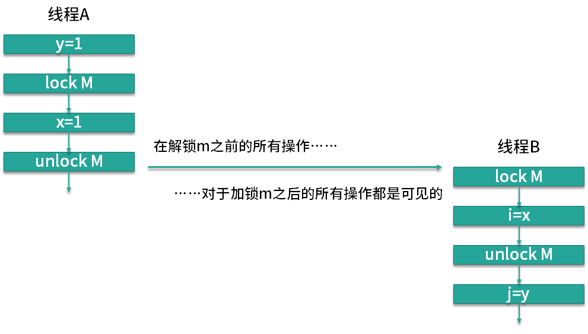
如果你之前不了解什么是可见性，此时理解可能会有一定的困难，可以在学习本专栏的 Java 内存模型相关内容后，再复习本课时，就会豁然开朗。
- synchronized 和 ReentrantLock 都拥有可重入的特点。
这里的 ReentrantLock 是 Lock 接口的一个最主要的实现类，在对比 synchronized 和 Lock 的时候，也会选择 Lock 的主要实现类来进行对比。可重入指的是某个线程如果已经获得了一个锁，现在试图再次请求这个它已经获得的锁，如果它无需提前释放这个锁，而是直接可以继续使用持有的这个锁，那么就是可重入的。如果必须释放锁后才能再次申请这个锁，就是不可重入的。而 synchronized 和 ReentrantLock 都具有可重入的特性。
不同点
下面我们来看下 synchronized 和 Lock 的区别，和相同点一样，它们之间也有非常多的区别，这里讲解其中比较大的 7 点不同。
- 用法区别
synchronized 关键字可以加在方法上，不需要指定锁对象（此时的锁对象为 this），也可以新建一个同步代码块并且自定义 monitor 锁对象；而 Lock 接口必须显示用 Lock 锁对象开始加锁 lock() 和解锁 unlock()，并且一般会在 finally 块中确保用 unlock() 来解锁，以防发生死锁。
与 Lock 显式的加锁和解锁不同的是 synchronized 的加解锁是隐式的，尤其是抛异常的时候也能保证释放锁，但是 Java 代码中并没有相关的体现。
- 加解锁顺序不同
对于 Lock 而言如果有多把 Lock 锁，Lock 可以不完全按照加锁的反序解锁，比如我们可以先获取 Lock1 锁，再获取 Lock2 锁，解锁时则先解锁 Lock1，再解锁 Lock2，加解锁有一定的灵活度，如代码所示。
lock1.lock();
lock2.lock();
...
lock1.unlock();
lock2.unlock();
但是 synchronized 无法做到，synchronized 解锁的顺序和加锁的顺序必须完全相反，例如：
synchronized(obj1){
synchronized(obj2){
...
}
}
那么在这里，顺序就是先对 obj1 加锁，然后对 obj2 加锁，然后对 obj2 解锁，最后解锁 obj1。这是因为 synchronized 加解锁是由 JVM 实现的，在执行完 synchronized 块后会自动解锁，所以会按照 synchronized 的嵌套顺序加解锁，不能自行控制。
- synchronized 锁不够灵活
一旦 synchronized 锁已经被某个线程获得了，此时其他线程如果还想获得，那它只能被阻塞，直到持有锁的线程运行完毕或者发生异常从而释放这个锁。如果持有锁的线程持有很长时间才释放，那么整个程序的运行效率就会降低，而且如果持有锁的线程永远不释放锁，那么尝试获取锁的线程只能永远等下去。
相比之下，Lock 类在等锁的过程中，如果使用的是 lockInterruptibly 方法，那么如果觉得等待的时间太长了不想再继续等待，可以中断退出，也可以用 tryLock() 等方法尝试获取锁，如果获取不到锁也可以做别的事，更加灵活。
- synchronized 锁只能同时被一个线程拥有，但是 Lock 锁没有这个限制
例如在读写锁中的读锁，是可以同时被多个线程持有的，可是 synchronized 做不到。
- 原理区别 synchronized 是内置锁，由 JVM 实现获取锁和释放锁的原理，还分为偏向锁、轻量级锁、重量级锁。
Lock 根据实现不同，有不同的原理，例如 ReentrantLock 内部是通过 AQS 来获取和释放锁的。
- 是否可以设置公平/非公平
公平锁是指多个线程在等待同一个锁时，根据先来后到的原则依次获得锁。ReentrantLock 等 Lock 实现类可以根据自己的需要来设置公平或非公平，synchronized 则不能设置。
- 性能区别
在 Java 5 以及之前，synchronized 的性能比较低，但是到了 Java 6 以后，发生了变化，因为 JDK 对 synchronized 进行了很多优化，比如自适应自旋、锁消除、锁粗化、轻量级锁、偏向锁等，所以后期的 Java 版本里的 synchronized 的性能并不比 Lock 差。
如何选择
讲完了 synchronized 和 Lock 的相同点和区别，最后我们再来看下如何选择它们，在 Java 并发编程实战和 Java 核心技术里都认为：
- 如果能不用最好既不使用 Lock 也不使用 synchronized。因为在许多情况下你可以使用 java.util.concurrent 包中的机制，它会为你处理所有的加锁和解锁操作，也就是推荐优先使用工具类来加解锁。
- 如果 synchronized 关键字适合你的程序， 那么请尽量使用它，这样可以减少编写代码的数量，减少出错的概率。因为一旦忘记在 finally 里 unlock，代码可能会出很大的问题，而使用 synchronized 更安全。
- 如果特别需要 Lock 的特殊功能，比如尝试获取锁、可中断、超时功能等，才使用 Lock。
23 Lock 有哪几个常用方法？分别有什么用？
本课时我们主要讲解 Lock 有哪几种常用的方法，以及它们分别都是干什么用的。
简介
Lock 接口是 Java 5 引入的，最常见的实现类是 ReentrantLock，可以起到“锁”的作用。
Lock 和 synchronized 是两种最常见的锁，锁是一种工具，用于控制对共享资源的访问，而 Lock 和 synchronized 都可以达到线程安全的目的，但是在使用上和功能上又有较大的不同。所以 Lock 并不是用来代替 synchronized 的，而是当使用 synchronized 不合适或不足以满足要求的时候，Lock 可以用来提供更高级功能的。
通常情况下，Lock 只允许一个线程来访问这个共享资源。不过有的时候，一些特殊的实现也可允许并发访问，比如 ReadWriteLock 里面的 ReadLock。
方法纵览
我们首先看下 Lock 接口的各个方法，如代码所示。
public interface Lock {
void lock();
void lockInterruptibly() throws InterruptedException;
boolean tryLock();
boolean tryLock(long time, TimeUnit unit) throws InterruptedException;
void unlock();
Condition newCondition();
}
我们可以看到与 Lock 接口加解锁相关的主要有 5 个方法，我们接下来重点分析这 5 种方法的作用和用法，这 5 种方法分别是 lock()、tryLock()、tryLock(long time, TimeUnit unit) 和 lockInterruptibly()、unlock()。
lock() 方法
在 Lock 接口中声明了 4 种方法来获取锁（lock()、tryLock()、tryLock(long time, TimeUnit unit)和lockInterruptibly()），那么这 4 种方法具体有什么区别呢？
首先，lock() 是最基础的获取锁的方法。在线程获取锁时如果锁已被其他线程获取，则进行等待，是最初级的获取锁的方法。
对于 Lock 接口而言，获取锁和释放锁都是显式的，不像 synchronized 那样是隐式的，所以 Lock 不会像 synchronized 一样在异常时自动释放锁（synchronized 即使不写对应的代码也可以释放），lock 的加锁和释放锁都必须以代码的形式写出来，所以使用 lock() 时必须由我们自己主动去释放锁，因此最佳实践是执行 lock() 后，首先在 try{} 中操作同步资源，如果有必要就用 catch{} 块捕获异常，然后在 finally{} 中释放锁，以保证发生异常时锁一定被释放，示例代码如下所示。
Lock lock = ...;
lock.lock();
try{
//获取到了被本锁保护的资源，处理任务
//捕获异常
}finally{
lock.unlock(); //释放锁
}
在这段代码中我们创建了一个 Lock，并且用 Lock 方法加锁，然后立刻在 try 代码块中进行相关业务逻辑的处理，如果有需要还可以进行 catch 来捕获异常，但是最重要的是 finally，大家一定不要忘记在 finally 中添加 unlock() 方法，以便保障锁的绝对释放。
如果我们不遵守在 finally 里释放锁的规范，就会让 Lock 变得非常危险，因为你不知道未来什么时候由于异常的发生，导致跳过了 unlock() 语句，使得这个锁永远不能被释放了，其他线程也无法再获得这个锁，这就是 Lock 相比于 synchronized 的一个劣势，使用 synchronized 时不需要担心这个问题。
与此同时，lock() 方法不能被中断，这会带来很大的隐患：一旦陷入死锁，lock() 就会陷入永久等待，所以一般我们用 tryLock() 等其他更高级的方法来代替 lock()，下面我们就看一看 tryLock() 方法。
tryLock()
tryLock() 用来尝试获取锁，如果当前锁没有被其他线程占用，则获取成功，返回 true，否则返回 false，代表获取锁失败。相比于 lock()，这样的方法显然功能更强大，我们可以根据是否能获取到锁来决定后续程序的行为。
因为该方法会立即返回，即便在拿不到锁时也不会一直等待，所以通常情况下，我们用 if 语句判断 tryLock() 的返回结果，根据是否获取到锁来执行不同的业务逻辑，典型使用方法如下。
Lock lock = ...;
if(lock.tryLock()) {
try{
//处理任务
}finally{
lock.unlock(); //释放锁
}
}else {
//如果不能获取锁，则做其他事情
}
我们创建 lock() 方法之后使用 tryLock() 方法并用 if 语句判断它的结果，如果 if 语句返回 true，就使用 try finally 完成相关业务逻辑的处理，如果 if 语句返回 false 就会进入 else 语句，代表它暂时不能获取到锁，可以先去做一些其他事情，比如等待几秒钟后重试，或者跳过这个任务，有了这个强大的 tryLock() 方法我们便可以解决死锁问题，代码如下所示。
public void tryLock(Lock lock1, Lock lock2) throws InterruptedException {
while (true) {
if (lock1.tryLock()) {
try {
if (lock2.tryLock()) {
try {
System.out.println("获取到了两把锁，完成业务逻辑");
return;
} finally {
lock2.unlock();
}
}
} finally {
lock1.unlock();
}
} else {
Thread.sleep(new Random().nextInt(1000));
}
}
}
如果代码中我们不用 tryLock() 方法，那么便可能会产生死锁，比如有两个线程同时调用这个方法，传入的 lock1 和 lock2 恰好是相反的，那么如果第一个线程获取了 lock1 的同时，第二个线程获取了 lock2，它们接下来便会尝试获取对方持有的那把锁，但是又获取不到，于是便会陷入死锁，但是有了 tryLock() 方法之后，我们便可以避免死锁的发生，首先会检测 lock1 是否能获取到，如果能获取到再尝试获取 lock2，但如果 lock1 获取不到也没有关系，我们会在下面进行随机时间的等待，这个等待的目标是争取让其他的线程在这段时间完成它的任务，以便释放其他线程所持有的锁，以便后续供我们使用，同理如果获取到了 lock1 但没有获取到 lock2，那么也会释放掉 lock1，随即进行随机的等待，只有当它同时获取到 lock1 和 lock2 的时候，才会进入到里面执行业务逻辑，比如在这里我们会打印出“获取到了两把锁，完成业务逻辑”，然后方法便会返回。
tryLock(long time, TimeUnit unit)
tryLock() 的重载方法是 tryLock(long time, TimeUnit unit)，这个方法和 tryLock() 很类似，区别在于 tryLock(long time, TimeUnit unit) 方法会有一个超时时间，在拿不到锁时会等待一定的时间，如果在时间期限结束后，还获取不到锁，就会返回 false；如果一开始就获取锁或者等待期间内获取到锁，则返回 true。
这个方法解决了 lock() 方法容易发生死锁的问题，使用 tryLock(long time, TimeUnit unit) 时，在等待了一段指定的超时时间后，线程会主动放弃这把锁的获取，避免永久等待；在等待的期间，也可以随时中断线程，这就避免了死锁的发生。本方法和下面介绍的 lockInterruptibly() 是非常类似的，让我们来看一下 lockInterruptibly() 方法。
lockInterruptibly()
这个方法的作用就是去获取锁，如果这个锁当前是可以获得的，那么这个方法会立刻返回，但是如果这个锁当前是不能获得的（被其他线程持有），那么当前线程便会开始等待，除非它等到了这把锁或者是在等待的过程中被中断了，否则这个线程便会一直在这里执行这行代码。一句话总结就是，除非当前线程在获取锁期间被中断，否则便会一直尝试获取直到获取到为止。
顾名思义，lockInterruptibly() 是可以响应中断的。相比于不能响应中断的 synchronized 锁，lockInterruptibly() 可以让程序更灵活，可以在获取锁的同时，保持对中断的响应。我们可以把这个方法理解为超时时间是无穷长的 tryLock(long time, TimeUnit unit)，因为 tryLock(long time, TimeUnit unit) 和 lockInterruptibly() 都能响应中断，只不过 lockInterruptibly() 永远不会超时。
这个方法本身是会抛出 InterruptedException 的，所以使用的时候，如果不在方法签名声明抛出该异常，那么就要写两个 try 块，如下所示。
public void lockInterruptibly() {
try {
lock.lockInterruptibly();
try {
System.out.println("操作资源");
} finally {
lock.unlock();
}
} catch (InterruptedException e) {
e.printStackTrace();
}
}
在这个方法中我们首先执行了 lockInterruptibly 方法，并且对它进行了 try catch 包装，然后同样假设我们能够获取到这把锁，和之前一样，就必须要使用 try finall 来保障锁的绝对释放。
unlock()
最后要介绍的方法是 unlock() 方法，是用于解锁的，u方法比较简单，对于 ReentrantLock 而言，执行 unlock() 的时候，内部会把锁的“被持有计数器”减 1，直到减到 0 就代表当前这把锁已经完全释放了，如果减 1 后计数器不为 0，说明这把锁之前被“重入”了，那么锁并没有真正释放，仅仅是减少了持有的次数。
24 讲一讲公平锁和非公平锁，为什么要“非公平”？
本课时我们主要讲一讲公平锁和非公平锁，以及为什么要“非公平”？
什么是公平和非公平
首先，我们来看下什么是公平锁和非公平锁，公平锁指的是按照线程请求的顺序，来分配锁；而非公平锁指的是不完全按照请求的顺序，在一定情况下，可以允许插队。但需要注意这里的非公平并不是指完全的随机，不是说线程可以任意插队，而是仅仅“在合适的时机”插队。
那么什么时候是合适的时机呢？假设当前线程在请求获取锁的时候，恰巧前一个持有锁的线程释放了这把锁，那么当前申请锁的线程就可以不顾已经等待的线程而选择立刻插队。但是如果当前线程请求的时候，前一个线程并没有在那一时刻释放锁，那么当前线程还是一样会进入等待队列。
为了能够更好的理解公平锁和非公平锁，我们举一个生活中的例子，假设我们还在学校读书，去食堂排队买饭，我排在队列的第二个，我前面还有一位同学，但此时我脑子里想的不是午饭，而是上午的一道数学题并陷入深思，所以当前面的同学打完饭之后轮到我时我走神了，并也没注意到现在轮到我了，此时前面的同学突然又回来插队，说“不好意思，阿姨麻烦给我加个鸡腿”，像这样的行为就可以类比我们的公平锁和非公平锁。
看到这里，你可能不解，为什么要设置非公平策略呢，而且非公平还是 ReentrantLock的默认策略，如果我们不加以设置的话默认就是非公平的，难道我的这些排队的时间都白白浪费了吗，为什么别人比我有优先权呢？毕竟公平是一种很好的行为，而非公平是一种不好的行为。
让我们考虑一种情况，假设线程 A 持有一把锁，线程 B 请求这把锁，由于线程 A 已经持有这把锁了，所以线程 B 会陷入等待，在等待的时候线程 B 会被挂起，也就是进入阻塞状态，那么当线程 A 释放锁的时候，本该轮到线程 B 苏醒获取锁，但如果此时突然有一个线程 C 插队请求这把锁，那么根据非公平的策略，会把这把锁给线程 C，这是因为唤醒线程 B 是需要很大开销的，很有可能在唤醒之前，线程 C 已经拿到了这把锁并且执行完任务释放了这把锁。相比于等待唤醒线程 B 的漫长过程，插队的行为会让线程 C 本身跳过陷入阻塞的过程，如果在锁代码中执行的内容不多的话，线程 C 就可以很快完成任务，并且在线程 B 被完全唤醒之前，就把这个锁交出去，这样是一个双赢的局面，对于线程 C 而言，不需要等待提高了它的效率，而对于线程 B 而言，它获得锁的时间并没有推迟，因为等它被唤醒的时候，线程 C 早就释放锁了，因为线程 C 的执行速度相比于线程 B 的唤醒速度，是很快的，所以 Java 设计者设计非公平锁，是为了提高整体的运行效率。
公平的场景
下面我们用图示来说明公平和非公平的场景，先来看公平的情况。假设我们创建了一个公平锁，此时有 4 个线程按顺序来请求公平锁，线程 1 在拿到这把锁之后，线程 2、3、4 会在等待队列中开始等待，然后等线程 1 释放锁之后，线程 2、3、4 会依次去获取这把锁，线程 2 先获取到的原因是它等待的时间最长。

不公平的场景
下面我们再来看看非公平的情况，假设线程 1 在解锁的时候，突然有线程 5 尝试获取这把锁，那么根据我们的非公平策略，线程 5 是可以拿到这把锁的，尽管它没有进入等待队列，而且线程 2、3、4 等待的时间都比线程 5 要长，但是从整体效率考虑，这把锁此时还是会交给线程 5 持有。
代码案例：演示公平和非公平的效果
下面我们来用代码演示看下公平和非公平的实际效果，代码如下：
/**
* 描述：演示公平锁，分别展示公平和不公平的情况，非公平锁会让现在持有锁的线程优先再次获取到锁。代码借鉴自Java并发编程实战手册2.7。
*/
public class FairAndUnfair {
public static void main(String args[]) {
PrintQueue printQueue = new PrintQueue();
Thread thread[] = new Thread[10];
for (int i = 0; i < 10; i++) {
thread[i] = new Thread(new Job(printQueue), "Thread " + i);
}
for (int i = 0; i < 10; i++) {
thread[i].start();
try {
Thread.sleep(100);
} catch (InterruptedException e) {
e.printStackTrace();
}
}
}
}
class Job implements Runnable {
private PrintQueue printQueue;
public Job(PrintQueue printQueue) {
this.printQueue = printQueue;
}
@Override
public void run() {
System.out.printf("%s: Going to print a job\n", Thread.currentThread().getName());
printQueue.printJob(new Object());
System.out.printf("%s: The document has been printed\n", Thread.currentThread().getName());
}
}
class PrintQueue {
private final Lock queueLock = new ReentrantLock(false);
public void printJob(Object document) {
queueLock.lock();
try {
Long duration = (long) (Math.random() * 10000);
System.out.printf("%s: PrintQueue: Printing a Job during %d seconds\n",
Thread.currentThread().getName(), (duration / 1000));
Thread.sleep(duration);
} catch (InterruptedException e) {
e.printStackTrace();
} finally {
queueLock.unlock();
}
queueLock.lock();
try {
Long duration = (long) (Math.random() * 10000);
System.out.printf("%s: PrintQueue: Printing a Job during %d seconds\n",
Thread.currentThread().getName(), (duration / 1000));
Thread.sleep(duration);
} catch (InterruptedException e) {
e.printStackTrace();
} finally {
queueLock.unlock();
}
}
}
我们可以通过改变 new ReentrantLock(false) 中的参数来设置公平/非公平锁。以上代码在公平的情况下的输出：
Thread 0: Going to print a job
Thread 0: PrintQueue: Printing a Job during 5 seconds
Thread 1: Going to print a job
Thread 2: Going to print a job
Thread 3: Going to print a job
Thread 4: Going to print a job
Thread 5: Going to print a job
Thread 6: Going to print a job
Thread 7: Going to print a job
Thread 8: Going to print a job
Thread 9: Going to print a job
Thread 1: PrintQueue: Printing a Job during 3 seconds
Thread 2: PrintQueue: Printing a Job during 4 seconds
Thread 3: PrintQueue: Printing a Job during 3 seconds
Thread 4: PrintQueue: Printing a Job during 9 seconds
Thread 5: PrintQueue: Printing a Job during 5 seconds
Thread 6: PrintQueue: Printing a Job during 7 seconds
Thread 7: PrintQueue: Printing a Job during 3 seconds
Thread 8: PrintQueue: Printing a Job during 9 seconds
Thread 9: PrintQueue: Printing a Job during 5 seconds
Thread 0: PrintQueue: Printing a Job during 8 seconds
Thread 0: The document has been printed
Thread 1: PrintQueue: Printing a Job during 1 seconds
Thread 1: The document has been printed
Thread 2: PrintQueue: Printing a Job during 8 seconds
Thread 2: The document has been printed
Thread 3: PrintQueue: Printing a Job during 2 seconds
Thread 3: The document has been printed
Thread 4: PrintQueue: Printing a Job during 0 seconds
Thread 4: The document has been printed
Thread 5: PrintQueue: Printing a Job during 7 seconds
Thread 5: The document has been printed
Thread 6: PrintQueue: Printing a Job during 3 seconds
Thread 6: The document has been printed
Thread 7: PrintQueue: Printing a Job during 9 seconds
Thread 7: The document has been printed
Thread 8: PrintQueue: Printing a Job during 5 seconds
Thread 8: The document has been printed
Thread 9: PrintQueue: Printing a Job during 9 seconds
Thread 9: The document has been printed
可以看出，线程直接获取锁的顺序是完全公平的，先到先得。
而以上代码在非公平的情况下的输出是这样的：
Thread 0: Going to print a job
Thread 0: PrintQueue: Printing a Job during 6 seconds
Thread 1: Going to print a job
Thread 2: Going to print a job
Thread 3: Going to print a job
Thread 4: Going to print a job
Thread 5: Going to print a job
Thread 6: Going to print a job
Thread 7: Going to print a job
Thread 8: Going to print a job
Thread 9: Going to print a job
Thread 0: PrintQueue: Printing a Job during 8 seconds
Thread 0: The document has been printed
Thread 1: PrintQueue: Printing a Job during 9 seconds
Thread 1: PrintQueue: Printing a Job during 8 seconds
Thread 1: The document has been printed
Thread 2: PrintQueue: Printing a Job during 6 seconds
Thread 2: PrintQueue: Printing a Job during 4 seconds
Thread 2: The document has been printed
Thread 3: PrintQueue: Printing a Job during 9 seconds
Thread 3: PrintQueue: Printing a Job during 8 seconds
Thread 3: The document has been printed
Thread 4: PrintQueue: Printing a Job during 4 seconds
Thread 4: PrintQueue: Printing a Job during 2 seconds
Thread 4: The document has been printed
Thread 5: PrintQueue: Printing a Job during 2 seconds
Thread 5: PrintQueue: Printing a Job during 5 seconds
Thread 5: The document has been printed
Thread 6: PrintQueue: Printing a Job during 2 seconds
Thread 6: PrintQueue: Printing a Job during 6 seconds
Thread 6: The document has been printed
Thread 7: PrintQueue: Printing a Job during 6 seconds
Thread 7: PrintQueue: Printing a Job during 4 seconds
Thread 7: The document has been printed
Thread 8: PrintQueue: Printing a Job during 3 seconds
Thread 8: PrintQueue: Printing a Job during 6 seconds
Thread 8: The document has been printed
Thread 9: PrintQueue: Printing a Job during 3 seconds
Thread 9: PrintQueue: Printing a Job during 5 seconds
Thread 9: The document has been printed
可以看出，非公平情况下，存在抢锁“插队”的现象，比如Thread 0 在释放锁后又能优先获取到锁，虽然此时在等待队列中已经有 Thread 1 ~ Thread 9 在排队了。
对比公平和非公平的优缺点
我们接下来对比公平和非公平的优缺点，如表格所示。
 公平锁的优点在于各个线程公平平等，每个线程等待一段时间后，都有执行的机会，而它的缺点就在于整体执行速度更慢，吞吐量更小，相反非公平锁的优势就在于整体执行速度更快，吞吐量更大，但同时也可能产生线程饥饿问题，也就是说如果一直有线程插队，那么在等待队列中的线程可能长时间得不到运行。
公平锁的优点在于各个线程公平平等，每个线程等待一段时间后，都有执行的机会，而它的缺点就在于整体执行速度更慢，吞吐量更小，相反非公平锁的优势就在于整体执行速度更快，吞吐量更大，但同时也可能产生线程饥饿问题，也就是说如果一直有线程插队，那么在等待队列中的线程可能长时间得不到运行。
源码分析
下面我们来分析公平和非公平锁的源码，具体看下它们是怎样实现的，可以看到在 ReentrantLock 类包含一个 Sync 类，这个类继承自AQS（AbstractQueuedSynchronizer），代码如下：
public class ReentrantLock implements Lock, java.io.Serializable {
private static final long serialVersionUID = 7373984872572414699L;
/** Synchronizer providing all implementation mechanics */
private final Sync sync;
Sync 类的代码：
abstract static class Sync extends AbstractQueuedSynchronizer {...}
根据代码可知，Sync 有公平锁 FairSync 和非公平锁 NonfairSync两个子类：
static final class NonfairSync extends Sync {...}
static final class FairSync extends Sync {...}
下面我们来看一下公平锁与非公平锁的加锁方法的源码。
公平锁的锁获取源码如下：
protected final boolean tryAcquire(int acquires) {
final Thread current = Thread.currentThread();
int c = getState();
if (c == 0) {
if (!hasQueuedPredecessors() && //这里判断了 hasQueuedPredecessors()
compareAndSetState(0, acquires)) {
setExclusiveOwnerThread(current);
return true;
}
} else if (current == getExclusiveOwnerThread()) {
int nextc = c + acquires;
if (nextc < 0) {
throw new Error("Maximum lock count exceeded");
}
setState(nextc);
return true;
}
return false;
}
非公平锁的锁获取源码如下：
final boolean nonfairTryAcquire(int acquires) {
final Thread current = Thread.currentThread();
int c = getState();
if (c == 0) {
if (compareAndSetState(0, acquires)) { //这里没有判断 hasQueuedPredecessors()
setExclusiveOwnerThread(current);
return true;
}
}
else if (current == getExclusiveOwnerThread()) {
int nextc = c + acquires;
if (nextc < 0) // overflow
throw new Error("Maximum lock count exceeded");
setState(nextc);
return true;
}
return false;
}
通过对比，我们可以明显的看出公平锁与非公平锁的 lock() 方法唯一的区别就在于公平锁在获取锁时多了一个限制条件：hasQueuedPredecessors() 为 false，这个方法就是判断在等待队列中是否已经有线程在排队了。这也就是公平锁和非公平锁的核心区别，如果是公平锁，那么一旦已经有线程在排队了，当前线程就不再尝试获取锁；对于非公平锁而言，无论是否已经有线程在排队，都会尝试获取一下锁，获取不到的话，再去排队。
这里有一个特例需要我们注意，针对 tryLock() 方法，它不遵守设定的公平原则。
例如，当有线程执行 tryLock() 方法的时候，一旦有线程释放了锁，那么这个正在 tryLock 的线程就能获取到锁，即使设置的是公平锁模式，即使在它之前已经有其他正在等待队列中等待的线程，简单地说就是 tryLock 可以插队。
看它的源码就会发现：
public boolean tryLock() {
return sync.nonfairTryAcquire(1);
}
这里调用的就是 nonfairTryAcquire()，表明了是不公平的，和锁本身是否是公平锁无关。
综上所述，公平锁就是会按照多个线程申请锁的顺序来获取锁，从而实现公平的特性。非公平锁加锁时不考虑排队等待情况，直接尝试获取锁，所以存在后申请却先获得锁的情况，但由此也提高了整体的效率。
25 读写锁 ReadWriteLock 获取锁有哪些规则？
在本课时我们主要讲解读写锁 ReadWriteLock 获取锁有哪些规则呢？
在没有读写锁之前，我们假设使用普通的 ReentrantLock，那么虽然我们保证了线程安全，但是也浪费了一定的资源，因为如果多个读操作同时进行，其实并没有线程安全问题，我们可以允许让多个读操作并行，以便提高程序效率。
但是写操作不是线程安全的，如果多个线程同时写，或者在写的同时进行读操作，便会造成线程安全问题。
我们的读写锁就解决了这样的问题，它设定了一套规则，既可以保证多个线程同时读的效率，同时又可以保证有写入操作时的线程安全。
整体思路是它有两把锁，第 1 把锁是写锁，获得写锁之后，既可以读数据又可以修改数据，而第 2 把锁是读锁，获得读锁之后，只能查看数据，不能修改数据。读锁可以被多个线程同时持有，所以多个线程可以同时查看数据。
在读的地方合理使用读锁，在写的地方合理使用写锁，灵活控制，可以提高程序的执行效率。
读写锁的获取规则
我们在使用读写锁时遵守下面的获取规则：
- 如果有一个线程已经占用了读锁，则此时其他线程如果要申请读锁，可以申请成功。
- 如果有一个线程已经占用了读锁，则此时其他线程如果要申请写锁，则申请写锁的线程会一直等待释放读锁，因为读写不能同时操作。
- 如果有一个线程已经占用了写锁，则此时其他线程如果申请写锁或者读锁，都必须等待之前的线程释放写锁，同样也因为读写不能同时，并且两个线程不应该同时写。
所以我们用一句话总结：要么是一个或多个线程同时有读锁，要么是一个线程有写锁，但是两者不会同时出现。也可以总结为：读读共享、其他都互斥（写写互斥、读写互斥、写读互斥）。
使用案例
下面我们举个例子来应用读写锁，ReentrantReadWriteLock 是 ReadWriteLock 的实现类，最主要的有两个方法：readLock() 和 writeLock() 用来获取读锁和写锁。
代码如下：
/**
* 描述： 演示读写锁用法
*/
public class ReadWriteLockDemo {
private static final ReentrantReadWriteLock reentrantReadWriteLock = new ReentrantReadWriteLock(
false);
private static final ReentrantReadWriteLock.ReadLock readLock = reentrantReadWriteLock
.readLock();
private static final ReentrantReadWriteLock.WriteLock writeLock = reentrantReadWriteLock
.writeLock();
private static void read() {
readLock.lock();
try {
System.out.println(Thread.currentThread().getName() + "得到读锁，正在读取");
Thread.sleep(500);
} catch (InterruptedException e) {
e.printStackTrace();
} finally {
System.out.println(Thread.currentThread().getName() + "释放读锁");
readLock.unlock();
}
}
private static void write() {
writeLock.lock();
try {
System.out.println(Thread.currentThread().getName() + "得到写锁，正在写入");
Thread.sleep(500);
} catch (InterruptedException e) {
e.printStackTrace();
} finally {
System.out.println(Thread.currentThread().getName() + "释放写锁");
writeLock.unlock();
}
}
public static void main(String[] args) throws InterruptedException {
new Thread(() -> read()).start();
new Thread(() -> read()).start();
new Thread(() -> write()).start();
new Thread(() -> write()).start();
}
}
程序的运行结果是：
Thread-0得到读锁，正在读取
Thread-1得到读锁，正在读取
Thread-0释放读锁
Thread-1释放读锁
Thread-2得到写锁，正在写入
Thread-2释放写锁
Thread-3得到写锁，正在写入
Thread-3释放写锁
可以看出，读锁可以同时被多个线程获得，而写锁不能。
读写锁适用场合
最后我们来看下读写锁的适用场合，相比于 ReentrantLock 适用于一般场合，ReadWriteLock 适用于读多写少的情况，合理使用可以进一步提高并发效率。
26 读锁应该插队吗？什么是读写锁的升降级？
在本课时我们主要讲解读锁应该插队吗?以及什么是读写锁的升降级。
读锁插队策略
首先，我们来看一下读锁的插队策略，在这里先快速回顾一下在 24 课时公平与非公平锁中讲到的 ReentrantLock，如果锁被设置为非公平，那么它是可以在前面线程释放锁的瞬间进行插队的，而不需要进行排队。在读写锁这里，策略也是这样的吗？
首先，我们看到 ReentrantReadWriteLock 可以设置为公平或者非公平，代码如下：
公平锁：
ReentrantReadWriteLock reentrantReadWriteLock = new ReentrantReadWriteLock(true);
非公平锁：
ReentrantReadWriteLock reentrantReadWriteLock = new ReentrantReadWriteLock(false);
如果是公平锁，我们就在构造函数的参数中传入 true，如果是非公平锁，就在构造函数的参数中传入 false，默认是非公平锁。在获取读锁之前，线程会检查 readerShouldBlock() 方法，同样，在获取写锁之前，线程会检查 writerShouldBlock() 方法，来决定是否需要插队或者是去排队。
首先看公平锁对于这两个方法的实现：
final boolean writerShouldBlock() {
return hasQueuedPredecessors();
}
final boolean readerShouldBlock() {
return hasQueuedPredecessors();
}
很明显，在公平锁的情况下，只要等待队列中有线程在等待，也就是 hasQueuedPredecessors() 返回 true 的时候，那么 writer 和 reader 都会 block，也就是一律不允许插队，都乖乖去排队，这也符合公平锁的思想。
下面让我们来看一下非公平锁的实现：
final boolean writerShouldBlock() {
return false; // writers can always barge
}
final boolean readerShouldBlock() {
return apparentlyFirstQueuedIsExclusive();
}
在 writerShouldBlock() 这个方法中始终返回 false，可以看出，对于想获取写锁的线程而言，由于返回值是 false，所以它是随时可以插队的，这就和我们的 ReentrantLock 的设计思想是一样的，但是读锁却不一样。这里实现的策略很有意思，先让我们来看下面这种场景：
假设线程 2 和线程 4 正在同时读取，线程 3 想要写入，但是由于线程 2 和线程 4 已经持有读锁了，所以线程 3 就进入等待队列进行等待。此时，线程 5 突然跑过来想要插队获取读锁：
面对这种情况有两种应对策略：
第一种策略：允许插队
由于现在有线程在读，而线程 5 又不会特别增加它们读的负担，因为线程们可以共用这把锁，所以第一种策略就是让线程 5 直接加入到线程 2 和线程 4 一起去读取。
这种策略看上去增加了效率，但是有一个严重的问题，那就是如果想要读取的线程不停地增加，比如线程 6，那么线程 6 也可以插队，这就会导致读锁长时间内不会被释放，导致线程 3 长时间内拿不到写锁，也就是那个需要拿到写锁的线程会陷入“饥饿”状态，它将在长时间内得不到执行。
第二种策略：不允许插队
这种策略认为由于线程 3 已经提前等待了，所以虽然线程 5 如果直接插队成功，可以提高效率，但是我们依然让线程 5 去排队等待：
按照这种策略线程 5 会被放入等待队列中，并且排在线程 3 的后面，让线程 3 优先于线程 5 执行，这样可以避免“饥饿”状态，这对于程序的健壮性是很有好处的，直到线程 3 运行完毕，线程 5 才有机会运行，这样谁都不会等待太久的时间。
所以我们可以看出，即便是非公平锁，只要等待队列的头结点是尝试获取写锁的线程，那么读锁依然是不能插队的，目的是避免“饥饿”。
策略选择演示
策略的选择取决于具体锁的实现，ReentrantReadWriteLock 的实现选择了策略 2 ，是很明智的。
下面我们就用实际的代码来演示一下上面这种场景。
策略演示代码如下所示：
/**
* 描述： 演示读锁不插队
*/
public class ReadLockJumpQueue {
private static final ReentrantReadWriteLock reentrantReadWriteLock = new ReentrantReadWriteLock();
private static final ReentrantReadWriteLock.ReadLock readLock = reentrantReadWriteLock
.readLock();
private static final ReentrantReadWriteLock.WriteLock writeLock = reentrantReadWriteLock
.writeLock();
private static void read() {
readLock.lock();
try {
System.out.println(Thread.currentThread().getName() + "得到读锁，正在读取");
Thread.sleep(2000);
} catch (InterruptedException e) {
e.printStackTrace();
} finally {
System.out.println(Thread.currentThread().getName() + "释放读锁");
readLock.unlock();
}
}
private static void write() {
writeLock.lock();
try {
System.out.println(Thread.currentThread().getName() + "得到写锁，正在写入");
Thread.sleep(2000);
} catch (InterruptedException e) {
e.printStackTrace();
} finally {
System.out.println(Thread.currentThread().getName() + "释放写锁");
writeLock.unlock();
}
}
public static void main(String[] args) throws InterruptedException {
new Thread(() -> read(),"Thread-2").start();
new Thread(() -> read(),"Thread-4").start();
new Thread(() -> write(),"Thread-3").start();
new Thread(() -> read(),"Thread-5").start();
}
}
以上代码的运行结果是：
Thread-2得到读锁，正在读取
Thread-4得到读锁，正在读取
Thread-2释放读锁
Thread-4释放读锁
Thread-3得到写锁，正在写入
Thread-3释放写锁
Thread-5得到读锁，正在读取
Thread-5释放读锁
从这个结果可以看出，ReentrantReadWriteLock 的实现选择了“不允许插队”的策略，这就大大减小了发生“饥饿”的概率。（如果运行结果和课程不一致，可以在每个线程启动后增加 100ms 的睡眠时间，以便保证线程的运行顺序）。
锁的升降级
读写锁降级功能代码演示
下面我们再来看一下锁的升降级，首先我们看一下这段代码，这段代码演示了在更新缓存的时候，如何利用锁的降级功能。
public class CachedData {
Object data;
volatile boolean cacheValid;
final ReentrantReadWriteLock rwl = new ReentrantReadWriteLock();
void processCachedData() {
rwl.readLock().lock();
if (!cacheValid) {
//在获取写锁之前，必须首先释放读锁。
rwl.readLock().unlock();
rwl.writeLock().lock();
try {
//这里需要再次判断数据的有效性,因为在我们释放读锁和获取写锁的空隙之内，可能有其他线程修改了数据。
if (!cacheValid) {
data = new Object();
cacheValid = true;
}
//在不释放写锁的情况下，直接获取读锁，这就是读写锁的降级。
rwl.readLock().lock();
} finally {
//释放了写锁，但是依然持有读锁
rwl.writeLock().unlock();
}
}
try {
System.out.println(data);
} finally {
//释放读锁
rwl.readLock().unlock();
}
}
}
在这段代码中有一个读写锁，最重要的就是中间的 processCachedData 方法，在这个方法中，会首先获取到读锁，也就是rwl.readLock().lock()，它去判断当前的缓存是否有效，如果有效那么就直接跳过整个 if 语句，如果已经失效，代表我们需要更新这个缓存了。由于我们需要更新缓存，所以之前获取到的读锁是不够用的，我们需要获取写锁。
在获取写锁之前，我们首先释放读锁，然后利用 rwl.writeLock().lock() 来获取到写锁，然后是经典的 try finally 语句，在 try 语句中我们首先判断缓存是否有效，因为在刚才释放读锁和获取写锁的过程中，可能有其他线程抢先修改了数据，所以在此我们需要进行二次判断。
如果我们发现缓存是无效的，就用 new Object() 这样的方式来示意，获取到了新的数据内容，并把缓存的标记位设置为 ture，让缓存变得有效。由于我们后续希望打印出 data 的值，所以不能在此处释放掉所有的锁。我们的选择是在不释放写锁的情况下直接获取读锁，也就是rwl.readLock().lock() 这行语句所做的事情，然后，在持有读锁的情况下释放写锁，最后，在最下面的 try 中把 data 的值打印出来。
这就是一个非常典型的利用锁的降级功能的代码。
你可能会想，我为什么要这么麻烦进行降级呢？我一直持有最高等级的写锁不就可以了吗？这样谁都没办法来影响到我自己的工作，永远是线程安全的。
为什么需要锁的降级？
如果我们在刚才的方法中，一直使用写锁，最后才释放写锁的话，虽然确实是线程安全的，但是也是没有必要的，因为我们只有一处修改数据的代码：
data = new Object();
后面我们对于 data 仅仅是读取。如果还一直使用写锁的话，就不能让多个线程同时来读取了，持有写锁是浪费资源的，降低了整体的效率，所以这个时候利用锁的降级是很好的办法，可以提高整体性能。
支持锁的降级，不支持升级
如果我们运行下面这段代码，在不释放读锁的情况下直接尝试获取写锁，也就是锁的升级，会让线程直接阻塞，程序是无法运行的。
final static ReentrantReadWriteLock rwl = new ReentrantReadWriteLock();
public static void main(String[] args) {
upgrade();
}
public static void upgrade() {
rwl.readLock().lock();
System.out.println("获取到了读锁");
rwl.writeLock().lock();
System.out.println("成功升级");
}
这段代码会打印出“获取到了读锁”，但是却不会打印出“成功升级”，因为 ReentrantReadWriteLock 不支持读锁升级到写锁。
为什么不支持锁的升级？
我们知道读写锁的特点是如果线程都申请读锁，是可以多个线程同时持有的，可是如果是写锁，只能有一个线程持有，并且不可能存在读锁和写锁同时持有的情况。
正是因为不可能有读锁和写锁同时持有的情况，所以升级写锁的过程中，需要等到所有的读锁都释放，此时才能进行升级。
假设有 A，B 和 C 三个线程，它们都已持有读锁。假设线程 A 尝试从读锁升级到写锁。那么它必须等待 B 和 C 释放掉已经获取到的读锁。如果随着时间推移，B 和 C 逐渐释放了它们的读锁，此时线程 A 确实是可以成功升级并获取写锁。
但是我们考虑一种特殊情况。假设线程 A 和 B 都想升级到写锁，那么对于线程 A 而言，它需要等待其他所有线程，包括线程 B 在内释放读锁。而线程 B 也需要等待所有的线程，包括线程 A 释放读锁。这就是一种非常典型的死锁的情况。谁都愿不愿意率先释放掉自己手中的锁。
但是读写锁的升级并不是不可能的，也有可以实现的方案，如果我们保证每次只有一个线程可以升级，那么就可以保证线程安全。只不过最常见的 ReentrantReadWriteLock 对此并不支持。
总结
对于 ReentrantReadWriteLock 而言。
- 插队策略
- 公平策略下，只要队列里有线程已经在排队，就不允许插队。
- 非公平策略下：
- 如果允许读锁插队，那么由于读锁可以同时被多个线程持有，所以可能造成源源不断的后面的线程一直插队成功，导致读锁一直不能完全释放，从而导致写锁一直等待，为了防止“饥饿”，在等待队列的头结点是尝试获取写锁的线程的时候，不允许读锁插队。
- 写锁可以随时插队，因为写锁并不容易插队成功，写锁只有在当前没有任何其他线程持有读锁和写锁的时候，才能插队成功，同时写锁一旦插队失败就会进入等待队列，所以很难造成“饥饿”的情况，允许写锁插队是为了提高效率。
- 升降级策略：只能从写锁降级为读锁，不能从读锁升级为写锁。
27 什么是自旋锁？自旋的好处和后果是什么呢？
在本课时我们主要讲解什么是自旋锁？以及使用自旋锁的好处和后果分别是什么呢？
什么是自旋
首先，我们了解什么叫自旋？“自旋”可以理解为“自我旋转”，这里的“旋转”指“循环”，比如 while 循环或者 for 循环。“自旋”就是自己在这里不停地循环，直到目标达成。而不像普通的锁那样，如果获取不到锁就进入阻塞。
对比自旋和非自旋的获取锁的流程
下面我们用这样一张流程图来对比一下自旋锁和非自旋锁的获取锁的过程。
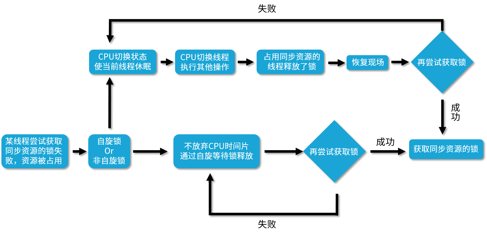
首先，我们来看自旋锁，它并不会放弃 CPU 时间片，而是通过自旋等待锁的释放，也就是说，它会不停地再次地尝试获取锁，如果失败就再次尝试，直到成功为止。
我们再来看下非自旋锁，非自旋锁和自旋锁是完全不一样的，如果它发现此时获取不到锁，它就把自己的线程切换状态，让线程休眠，然后 CPU 就可以在这段时间去做很多其他的事情，直到之前持有这把锁的线程释放了锁，于是 CPU 再把之前的线程恢复回来，让这个线程再去尝试获取这把锁。如果再次失败，就再次让线程休眠，如果成功，一样可以成功获取到同步资源的锁。
可以看出，非自旋锁和自旋锁最大的区别，就是如果它遇到拿不到锁的情况，它会把线程阻塞，直到被唤醒。而自旋锁会不停地尝试。那么，自旋锁这样不停尝试的好处是什么呢？
自旋锁的好处
首先，阻塞和唤醒线程都是需要高昂的开销的，如果同步代码块中的内容不复杂，那么可能转换线程带来的开销比实际业务代码执行的开销还要大。
在很多场景下，可能我们的同步代码块的内容并不多，所以需要的执行时间也很短，如果我们仅仅为了这点时间就去切换线程状态，那么其实不如让线程不切换状态，而是让它自旋地尝试获取锁，等待其他线程释放锁，有时我只需要稍等一下，就可以避免上下文切换等开销，提高了效率。
用一句话总结自旋锁的好处，那就是自旋锁用循环去不停地尝试获取锁，让线程始终处于 Runnable 状态，节省了线程状态切换带来的开销。
AtomicLong 的实现
在 Java 1.5 版本及以上的并发包中，也就是 java.util.concurrent 的包中，里面的原子类基本都是自旋锁的实现。
比如我们看一个 AtomicLong 的实现，里面有一个 getAndIncrement 方法，源码如下：
public final long getAndIncrement() {
return unsafe.getAndAddLong(this, valueOffset, 1L);
}
可以看到它调用了一个 unsafe.getAndAddLong，所以我们再来看这个方法：
public final long getAndAddLong (Object var1,long var2, long var4){
long var6;
do {
var6 = this.getLongVolatile(var1, var2);
} while (!this.compareAndSwapLong(var1, var2, var6, var6 + var4));
return var6;
}
在这个方法中，它用了一个 do while 循环。这里就很明显了：
do {
var6 = this.getLongVolatile(var1, var2);
}
while (!this.compareAndSwapLong(var1, var2, var6, var6 + var4));
这里的 do-while 循环就是一个自旋操作，如果在修改过程中遇到了其他线程竞争导致没修改成功的情况，就会 while 循环里进行死循环，直到修改成功为止。
自己实现一个可重入的自旋锁
下面我们来看一个自己实现可重入的自旋锁。
代码如下所示：
package lesson27;
import java.util.concurrent.atomic.AtomicReference;
import java.util.concurrent.locks.Lock;
/**
* 描述： 实现一个可重入的自旋锁
*/
public class ReentrantSpinLock {
private AtomicReference<Thread> owner = new AtomicReference<>();
//重入次数
private int count = 0;
public void lock() {
Thread t = Thread.currentThread();
if (t == owner.get()) {
++count;
return;
}
//自旋获取锁
while (!owner.compareAndSet(null, t)) {
System.out.println("自旋了");
}
}
public void unlock() {
Thread t = Thread.currentThread();
//只有持有锁的线程才能解锁
if (t == owner.get()) {
if (count > 0) {
--count;
} else {
//此处无需CAS操作，因为没有竞争，因为只有线程持有者才能解锁
owner.set(null);
}
}
}
public static void main(String[] args) {
ReentrantSpinLock spinLock = new ReentrantSpinLock();
Runnable runnable = new Runnable() {
@Override
public void run() {
System.out.println(Thread.currentThread().getName() + "开始尝试获取自旋锁");
spinLock.lock();
try {
System.out.println(Thread.currentThread().getName() + "获取到了自旋锁");
Thread.sleep(4000);
} catch (InterruptedException e) {
e.printStackTrace();
} finally {
spinLock.unlock();
System.out.println(Thread.currentThread().getName() + "释放了了自旋锁");
}
}
};
Thread thread1 = new Thread(runnable);
Thread thread2 = new Thread(runnable);
thread1.start();
thread2.start();
}
}
这段代码的运行结果是：
...
自旋了
自旋了
自旋了
自旋了
自旋了
自旋了
自旋了
自旋了
Thread-0释放了了自旋锁
Thread-1获取到了自旋锁
前面会打印出很多“自旋了”，说明自旋期间，CPU依然在不停运转。
缺点
那么自旋锁有没有缺点呢？其实自旋锁是有缺点的。它最大的缺点就在于虽然避免了线程切换的开销，但是它在避免线程切换开销的同时也带来了新的开销，因为它需要不停得去尝试获取锁。如果这把锁一直不能被释放，那么这种尝试只是无用的尝试，会白白浪费处理器资源。也就是说，虽然一开始自旋锁的开销低于线程切换，但是随着时间的增加，这种开销也是水涨船高，后期甚至会超过线程切换的开销，得不偿失。
适用场景
所以我们就要看一下自旋锁的适用场景。首先，自旋锁适用于并发度不是特别高的场景，以及临界区比较短小的情况，这样我们可以利用避免线程切换来提高效率。
可是如果临界区很大，线程一旦拿到锁，很久才会释放的话，那就不合适用自旋锁，因为自旋会一直占用 CPU 却无法拿到锁，白白消耗资源。
28 JVM 对锁进行了哪些优化？
本课时我们主要讲解 JVM 对锁进行了哪些优化呢？
相比于 JDK 1.5，在 JDK 1.6 中 HotSopt 虚拟机对 synchronized 内置锁的性能进行了很多优化，包括自适应的自旋、锁消除、锁粗化、偏向锁、轻量级锁等。有了这些优化措施后，synchronized 锁的性能得到了大幅提高，下面我们分别介绍这些具体的优化。
自适应的自旋锁
首先，我们来看一下自适应的自旋锁。先来复习一下自旋的概念和自旋的缺点。“自旋”就是不释放 CPU，一直循环尝试获取锁，如下面这段代码所
public final long getAndAddLong(Object var1, long var2, long var4) {
long var6;
do {
var6 = this.getLongVolatile(var1, var2);
} while(!this.compareAndSwapLong(var1, var2, var6, var6 + var4));
return var6;
}
代码中使用一个 do-while 循环来一直尝试修改 long 的值。自旋的缺点在于如果自旋时间过长，那么性能开销是很大的，浪费了 CPU 资源。
在 JDK 1.6 中引入了自适应的自旋锁来解决长时间自旋的问题。自适应意味着自旋的时间不再固定，而是会根据最近自旋尝试的成功率、失败率，以及当前锁的拥有者的状态等多种因素来共同决定。自旋的持续时间是变化的，自旋锁变“聪明”了。比如，如果最近尝试自旋获取某一把锁成功了，那么下一次可能还会继续使用自旋，并且允许自旋更长的时间；但是如果最近自旋获取某一把锁失败了，那么可能会省略掉自旋的过程，以便减少无用的自旋，提高效率。
锁消除
第二个优化是锁消除。首先我们来看下面的代码：
public class Person {
private String name;
private int age;
public Person(String personName, int personAge) {
name = personName;
age = personAge;
}
public Person(Person p) {
this(p.getName(), p.getAge());
}
public String getName() {
return name;
}
public int getAge() {
return age;
}
}
class Employee {
private Person person;
// makes a defensive copy to protect against modifications by caller
public Person getPerson() {
return new Person(person);
}
public void printEmployeeDetail(Employee emp) {
Person person = emp.getPerson();
// this caller does not modify the object, so defensive copy was unnecessary
System.out.println("Employee's name: " + person.getName() + "; age: " + person.getAge());
}
}
在这段代码中，我们看到下方的 Employee 类中的 getPerson() 方法，这个方法中使用了类里面的 person 对象，并且新建一个和它属性完全相同的新的 person 对象，目的是防止方法调用者修改原来的 person 对象。但是在这个例子中，其实是没有任何必要新建对象的，因为我们的 printEmployeeDetail() 方法没有对这个对象做出任何的修改，仅仅是打印，既然如此，我们其实可以直接打印最开始的 person 对象，而无须新建一个新的。
如果编译器可以确定最开始的 person 对象不会被修改的话，它可能会优化并且消除这个新建 person 的过程。
根据这样的思想，接下来我们就来举一个锁消除的例子，经过逃逸分析之后，如果发现某些对象不可能被其他线程访问到，那么就可以把它们当成栈上数据，栈上数据由于只有本线程可以访问，自然是线程安全的，也就无需加锁，所以会把这样的锁给自动去除掉。
例如，我们的 StringBuffer 的 append 方法如下所示：
@Override
public synchronized StringBuffer append(Object obj) {
toStringCache = null;
super.append(String.valueOf(obj));
return this;
}
从代码中可以看出，这个方法是被 synchronized 修饰的同步方法，因为它可能会被多个线程同时使用。
但是在大多数情况下，它只会在一个线程内被使用，如果编译器能确定这个 StringBuffer 对象只会在一个线程内被使用，就代表肯定是线程安全的，那么我们的编译器便会做出优化，把对应的 synchronized 给消除，省去加锁和解锁的操作，以便增加整体的效率。
锁粗化
接下来，我们来介绍一下锁粗化。如果我们释放了锁，紧接着什么都没做，又重新获取锁，例如下面这段代码所示：
public void lockCoarsening() {
synchronized (this) {
//do something
}
synchronized (this) {
//do something
}
synchronized (this) {
//do something
}
}
那么其实这种释放和重新获取锁是完全没有必要的，如果我们把同步区域扩大，也就是只在最开始加一次锁，并且在最后直接解锁，那么就可以把中间这些无意义的解锁和加锁的过程消除，相当于是把几个 synchronized 块合并为一个较大的同步块。这样做的好处在于在线程执行这些代码时，就无须频繁申请与释放锁了，这样就减少了性能开销。
不过，我们这样做也有一个副作用，那就是我们会让同步区域变大。如果在循环中我们也这样做，如代码所示：
for (int i = 0; i < 1000; i++) {
synchronized (this) {
//do something
}
}
也就是我们在第一次循环的开始，就开始扩大同步区域并持有锁，直到最后一次循环结束，才结束同步代码块释放锁的话，这就会导致其他线程长时间无法获得锁。所以，这里的锁粗化不适用于循环的场景，仅适用于非循环的场景。
锁粗化功能是默认打开的，用 -XX:-EliminateLocks 可以关闭该功能。
偏向锁/轻量级锁/重量级锁
下面我们来介绍一下偏向锁、轻量级锁和重量级锁。这个锁在我们之前介绍锁的种类的时候也介绍过。这三种锁是特指 synchronized 锁的状态的，通过在对象头中的 mark word 来表明锁的状态。
- 偏向锁
对于偏向锁而言，它的思想是如果自始至终，对于这把锁都不存在竞争，那么其实就没必要上锁，只要打个标记就行了。一个对象在被初始化后，如果还没有任何线程来获取它的锁时，它就是可偏向的，当有第一个线程来访问它尝试获取锁的时候，它就记录下来这个线程，如果后面尝试获取锁的线程正是这个偏向锁的拥有者，就可以直接获取锁，开销很小。
- 轻量级锁
JVM 的开发者发现在很多情况下，synchronized 中的代码块是被多个线程交替执行的，也就是说，并不存在实际的竞争，或者是只有短时间的锁竞争，用 CAS 就可以解决。这种情况下，重量级锁是没必要的。轻量级锁指当锁原来是偏向锁的时候，被另一个线程所访问，说明存在竞争，那么偏向锁就会升级为轻量级锁，线程会通过自旋的方式尝试获取锁，不会阻塞。
- 重量级锁 这种锁利用操作系统的同步机制实现，所以开销比较大。当多个线程直接有实际竞争，并且锁竞争时间比较长的时候，此时偏向锁和轻量级锁都不能满足需求，锁就会膨胀为重量级锁。重量级锁会让其他申请却拿不到锁的线程进入阻塞状态。
锁升级的路径
最后，我们看下锁的升级路径，如图所示。从无锁到偏向锁，再到轻量级锁，最后到重量级锁。结合前面我们讲过的知识，偏向锁性能最好，避免了 CAS 操作。而轻量级锁利用自旋和 CAS 避免了重量级锁带来的线程阻塞和唤醒，性能中等。重量级锁则会把获取不到锁的线程阻塞，性能最差。
JVM 默认会优先使用偏向锁，如果有必要的话才逐步升级，这大幅提高了锁的性能。
29 HashMap 为什么是线程不安全的？
本课时我们主要讲解为什么 HashMap 是线程不安全的？而对于 HashMap，相信你一定并不陌生，HashMap 是我们平时工作和学习中用得非常非常多的一个容器，也是 Map 最主要的实现类之一，但是它自身并不具备线程安全的特点，可以从多种情况中体现出来，下面我们就对此进行具体的分析。
源码分析
第一步，我们来看一下 HashMap 中 put 方法的源码：
public V put(K key, V value) {
if (key == null)
return putForNullKey(value);
int hash = hash(key.hashCode());
int i = indexFor(hash, table.length);
for (Entry<K,V> e = table[i]; e != null; e = e.next) {
Object k;
if (e.hash == hash && ((k = e.key) == key || key.equals(k))) {
V oldValue = e.value;
e.value = value;
e.recordAccess(this);
return oldValue;
}
}
//modCount++ 是一个复合操作
modCount++;
addEntry(hash, key, value, i);
return null;
}
在 HashMap 的 put() 方法中，可以看出里面进行了很多操作，那么在这里，我们把目光聚焦到标记出来的 modCount++ 这一行代码中，相信有经验的小伙伴一定发现了，这相当于是典型的“i++”操作，正是我们在 06 课时讲过的线程不安全的“运行结果错误”的情况。从表面上看 i++ 只是一行代码，但实际上它并不是一个原子操作，它的执行步骤主要分为三步，而且在每步操作之间都有可能被打断。
- 第一个步骤是读取；
- 第二个步骤是增加；
- 第三个步骤是保存。
那么我们接下来具体看一下如何发生的线程不安全问题。

我们根据箭头指向依次看，假设线程 1 首先拿到 i=1 的结果，然后进行 i+1 操作，但此时 i+1 的结果并没有保存下来，线程 1 就被切换走了，于是 CPU 开始执行线程 2，它所做的事情和线程 1 是一样的 i++ 操作，但此时我们想一下，它拿到的 i 是多少？实际上和线程 1 拿到的 i 的结果一样都是 1，为什么呢？因为线程 1 虽然对 i 进行了 +1 操作，但结果没有保存，所以线程 2 看不到修改后的结果。
然后假设等线程 2 对 i 进行 +1 操作后，又切换到线程 1，让线程 1 完成未完成的操作，即将 i + 1 的结果 2 保存下来，然后又切换到线程 2 完成 i = 2 的保存操作，虽然两个线程都执行了对 i 进行 +1 的操作，但结果却最终保存了 i = 2 的结果，而不是我们期望的 i = 3，这样就发生了线程安全问题，导致了数据结果错误，这也是最典型的线程安全问题。
所以，从源码的角度，或者说从理论上来讲，这完全足以证明 HashMap 是线程非安全的了。因为如果有多个线程同时调用 put() 方法的话，它很有可能会把 modCount 的值计算错（上述的源码分析针对的是 Java 7 版本的源码，而在 Java 8 版本的 HashMap 的 put 方法中会调用 putVal 方法，里面同样有 ++modCount 语句，所以原理是一样的）。
实验：扩容期间取出的值不准确
刚才我们分析了源码，你可能觉得不过瘾，下面我们就打开代码编辑器，用一个实验来证明 HashMap 是线程不安全的。
为什么说 HashMap 不是线程安全的呢？我们先来讲解下原理。HashMap 本身默认的容量不是很大，如果不停地往 map 中添加新的数据，它便会在合适的时机进行扩容。而在扩容期间，它会新建一个新的空数组，并且用旧的项填充到这个新的数组中去。那么，在这个填充的过程中，如果有线程获取值，很可能会取到 null 值，而不是我们所希望的、原来添加的值。所以我们程序就想演示这种情景，我们来看一下这段代码：
public class HashMapNotSafe {
public static void main(String[] args) {
final Map<Integer, String> map = new HashMap<>();
final Integer targetKey = 0b1111_1111_1111_1111; // 65 535
final String targetValue = "v";
map.put(targetKey, targetValue);
new Thread(() -> {
IntStream.range(0, targetKey).forEach(key -> map.put(key, "someValue"));
}).start();
while (true) {
if (null == map.get(targetKey)) {
throw new RuntimeException("HashMap is not thread safe.");
}
}
}
}
代码中首先建立了一个 HashMap，并且定义了 key 和 value， key 的值是一个二进制的 1111_1111_1111_1111，对应的十进制是 65535。之所以选取这样的值，就是为了让它在扩容往回填充数据的时候，尽量不要填充得太快，比便于我们能捕捉到错误的发生。而对应的 value 是无所谓的，我们随意选取了一个非 null 的 "v" 来表示它，并且把这个值放到了 map 中。
接下来，我们就用一个新的线程不停地往我们的 map 中去填入新的数据，我们先来看是怎么填入的。首先它用了一个 IntStream，这个 range 是从 0 到之前所讲过的 65535，这个 range 是一个左闭右开的区间，所以会从 0、1、2、3……一直往上加，并且每一次加的时候，这个 0、1、2、3、4 都会作为 key 被放到 map 中去。而它的 value 是统一的，都是 "someValue"，因为 value 不是我们所关心的。
然后，我们就会把这个线程启动起来，随后就进入一个 while 循环，这个 while 循环是关键，在 while 循环中我们会不停地检测之前放入的 key 所对应的 value 还是不是我们所期望的字符串 "v"。我们在 while 循环中会不停地从 map 中取 key 对应的值。如果 HashMap 是线程安全的，那么无论怎样它所取到的值都应该是我们最开始放入的字符串 "v"，可是如果取出来是一个 null，就会满足这个 if 条件并且随即抛出一个异常，因为如果取出 null 就证明它所取出来的值和我们一开始放入的值是不一致的，也就证明了它是线程不安全的，所以在此我们要抛出一个 RuntimeException 提示我们。
下面就让我们运行这个程序来看一看是否会抛出这个异常。一旦抛出就代表它是线程不安全的，这段代码的运行结果：
Exception in thread "main" java.lang.RuntimeException: HashMap is not thread safe.
at lesson29.HashMapNotSafe.main(HashMapNotSafe.java:25)
很明显，很快这个程序就抛出了我们所希望看到的 RuntimeException，并且我们把它描述为：HashMap is not thread safe，一旦它能进入到这个 if 语句，就已经证明它所取出来的值是 null，而不是我们期望的字符串 "v"。
通过以上这个例子，我们也证明了HashMap 是线程非安全的。
除了刚才的例子之外，还有很多种线程不安全的情况，例如：
同时 put 碰撞导致数据丢失
比如，有多个线程同时使用 put 来添加元素，而且恰好两个 put 的 key 是一样的，它们发生了碰撞，也就是根据 hash 值计算出来的 bucket 位置一样，并且两个线程又同时判断该位置是空的，可以写入，所以这两个线程的两个不同的 value 便会添加到数组的同一个位置，这样最终就只会保留一个数据，丢失一个数据。
可见性问题无法保证
我们再从可见性的角度去考虑一下。可见性也是线程安全的一部分，如果某一个数据结构声称自己是线程安全的，那么它同样需要保证可见性，也就是说，当一个线程操作这个容器的时候，该操作需要对另外的线程都可见，也就是其他线程都能感知到本次操作。可是 HashMap 对此是做不到的，如果线程 1 给某个 key 放入了一个新值，那么线程 2 在获取对应的 key 的值的时候，它的可见性是无法保证的，也就是说线程 2 可能可以看到这一次的更改，但也有可能看不到。所以从可见性的角度出发，HashMap 同样是线程非安全的。
死循环造成 CPU 100%
下面我们再举一个死循环造成 CPU 100% 的例子。HashMap 有可能会发生死循环并且造成 CPU 100% ，这种情况发生最主要的原因就是在扩容的时候，也就是内部新建新的 HashMap 的时候，扩容的逻辑会反转散列桶中的节点顺序，当有多个线程同时进行扩容的时候，由于 HashMap 并非线程安全的，所以如果两个线程同时反转的话，便可能形成一个循环，并且这种循环是链表的循环，相当于 A 节点指向 B 节点，B 节点又指回到 A 节点，这样一来，在下一次想要获取该 key 所对应的 value 的时候，便会在遍历链表的时候发生永远无法遍历结束的情况，也就发生 CPU 100% 的情况。
所以综上所述，HashMap 是线程不安全的，在多线程使用场景中如果需要使用 Map，应该尽量避免使用线程不安全的 HashMap。同时，虽然 Collections.synchronizedMap(new HashMap()) 是线程安全的，但是效率低下，因为内部用了很多的 synchronized，多个线程不能同时操作。推荐使用线程安全同时性能比较好的 ConcurrentHashMap。关于 ConcurrentHashMap 我们会在下一个课时中介绍。
30 ConcurrentHashMap 在 Java7 和 8 有何不同？
在 Java 8 中，对于 ConcurrentHashMap 这个常用的工具类进行了很大的升级，对比之前 Java 7 版本在诸多方面都进行了调整和变化。不过，在 Java 7 中的 Segment 的设计思想依然具有参考和学习的价值，所以在很多情况下面试官都会问你：ConcurrentHashMap 在 Java 7 和 Java 8 中的结构分别是什么？它们有什么相同点和不同点？所以本课时就对 ConcurrentHashMap 在这两个版本的特点和性质进行对比和介绍。
Java 7 版本的 ConcurrentHashMap
我们首先来看一下 Java 7 版本中的 ConcurrentHashMap 的结构示意图：

从图中我们可以看出，在 ConcurrentHashMap 内部进行了 Segment 分段，Segment 继承了 ReentrantLock，可以理解为一把锁，各个 Segment 之间都是相互独立上锁的，互不影响。相比于之前的 Hashtable 每次操作都需要把整个对象锁住而言，大大提高了并发效率。因为它的锁与锁之间是独立的，而不是整个对象只有一把锁。
每个 Segment 的底层数据结构与 HashMap 类似，仍然是数组和链表组成的拉链法结构。默认有 0~15 共 16 个 Segment，所以最多可以同时支持 16 个线程并发操作（操作分别分布在不同的 Segment 上）。16 这个默认值可以在初始化的时候设置为其他值，但是一旦确认初始化以后，是不可以扩容的。
Java 8 版本的 ConcurrentHashMap
在 Java 8 中，几乎完全重写了 ConcurrentHashMap，代码量从原来 Java 7 中的 1000 多行，变成了现在的 6000 多行，所以也大大提高了源码的阅读难度。而为了方便我们理解，我们还是先从整体的结构示意图出发，看一看总体的设计思路，然后再去深入细节。

图中的节点有三种类型。
- 第一种是最简单的，空着的位置代表当前还没有元素来填充。
- 第二种就是和 HashMap 非常类似的拉链法结构，在每一个槽中会首先填入第一个节点，但是后续如果计算出相同的 Hash 值，就用链表的形式往后进行延伸。
- 第三种结构就是红黑树结构，这是 Java 7 的 ConcurrentHashMap 中所没有的结构，在此之前我们可能也很少接触这样的数据结构。
当第二种情况的链表长度大于某一个阈值（默认为 8），且同时满足一定的容量要求的时候，ConcurrentHashMap 便会把这个链表从链表的形式转化为红黑树的形式，目的是进一步提高它的查找性能。所以，Java 8 的一个重要变化就是引入了红黑树的设计，由于红黑树并不是一种常见的数据结构，所以我们在此简要介绍一下红黑树的特点。
红黑树是每个节点都带有颜色属性的二叉查找树，颜色为红色或黑色，红黑树的本质是对二叉查找树 BST 的一种平衡策略，我们可以理解为是一种平衡二叉查找树，查找效率高，会自动平衡，防止极端不平衡从而影响查找效率的情况发生。
由于自平衡的特点，即左右子树高度几乎一致，所以其查找性能近似于二分查找，时间复杂度是 O(log(n)) 级别；反观链表，它的时间复杂度就不一样了，如果发生了最坏的情况，可能需要遍历整个链表才能找到目标元素，时间复杂度为 O(n)，远远大于红黑树的 O(log(n))，尤其是在节点越来越多的情况下，O(log(n)) 体现出的优势会更加明显。
红黑树的一些其他特点：
- 每个节点要么是红色，要么是黑色，但根节点永远是黑色的。
- 红色节点不能连续，也就是说，红色节点的子和父都不能是红色的。
- 从任一节点到其每个叶子节点的路径都包含相同数量的黑色节点。
正是由于这些规则和要求的限制，红黑树保证了较高的查找效率，所以现在就可以理解为什么 Java 8 的 ConcurrentHashMap 要引入红黑树了。好处就是避免在极端的情况下冲突链表变得很长，在查询的时候，效率会非常慢。而红黑树具有自平衡的特点，所以，即便是极端情况下，也可以保证查询效率在 O(log(n))。
分析 Java 8 版本的 ConcurrentHashMap 的重要源码
前面我们讲解了 Java 7 和 Java 8 中 ConcurrentHashMap 的主体结构，下面我们深入源码分析。由于 Java 7 版本已经过时了，所以我们把重点放在 Java 8 版本的源码分析上。
Node 节点
我们先来看看最基础的内部存储结构 Node，这就是一个一个的节点，如这段代码所示：
static class Node<K,V> implements Map.Entry<K,V> {
final int hash;
final K key;
volatile V val;
volatile Node<K,V> next;
// ...
}
可以看出，每个 Node 里面是 key-value 的形式，并且把 value 用 volatile 修饰，以便保证可见性，同时内部还有一个指向下一个节点的 next 指针，方便产生链表结构。
下面我们看两个最重要、最核心的方法。
put 方法源码分析
put 方法的核心是 putVal 方法，为了方便阅读，我把重要步骤的解读用注释的形式补充在下面的源码中。我们逐步分析这个最重要的方法，这个方法相对有些长，我们一步一步把它看清楚。
final V putVal(K key, V value, boolean onlyIfAbsent) {
if (key == null || value == null) {
throw new NullPointerException();
}
//计算 hash 值
int hash = spread(key.hashCode());
int binCount = 0;
for (Node<K, V>[] tab = table; ; ) {
Node<K, V> f;
int n, i, fh;
//如果数组是空的，就进行初始化
if (tab == null || (n = tab.length) == 0) {
tab = initTable();
}
// 找该 hash 值对应的数组下标
else if ((f = tabAt(tab, i = (n - 1) & hash)) == null) {
//如果该位置是空的，就用 CAS 的方式放入新值
if (casTabAt(tab, i, null,
new Node<K, V>(hash, key, value, null))) {
break;
}
}
//hash值等于 MOVED 代表在扩容
else if ((fh = f.hash) == MOVED) {
tab = helpTransfer(tab, f);
}
//槽点上是有值的情况
else {
V oldVal = null;
//用 synchronized 锁住当前槽点，保证并发安全
synchronized (f) {
if (tabAt(tab, i) == f) {
//如果是链表的形式
if (fh >= 0) {
binCount = 1;
//遍历链表
for (Node<K, V> e = f; ; ++binCount) {
K ek;
//如果发现该 key 已存在，就判断是否需要进行覆盖，然后返回
if (e.hash == hash &&
((ek = e.key) == key ||
(ek != null && key.equals(ek)))) {
oldVal = e.val;
if (!onlyIfAbsent) {
e.val = value;
}
break;
}
Node<K, V> pred = e;
//到了链表的尾部也没有发现该 key，说明之前不存在，就把新值添加到链表的最后
if ((e = e.next) == null) {
pred.next = new Node<K, V>(hash, key,
value, null);
break;
}
}
}
//如果是红黑树的形式
else if (f instanceof TreeBin) {
Node<K, V> p;
binCount = 2;
//调用 putTreeVal 方法往红黑树里增加数据
if ((p = ((TreeBin<K, V>) f).putTreeVal(hash, key,
value)) != null) {
oldVal = p.val;
if (!onlyIfAbsent) {
p.val = value;
}
}
}
}
}
if (binCount != 0) {
//检查是否满足条件并把链表转换为红黑树的形式，默认的 TREEIFY_THRESHOLD 阈值是 8
if (binCount >= TREEIFY_THRESHOLD) {
treeifyBin(tab, i);
}
//putVal 的返回是添加前的旧值，所以返回 oldVal
if (oldVal != null) {
return oldVal;
}
break;
}
}
}
addCount(1L, binCount);
return null;
}
通过以上的源码分析，我们对于 putVal 方法有了详细的认识，可以看出，方法中会逐步根据当前槽点是未初始化、空、扩容、链表、红黑树等不同情况做出不同的处理。
get 方法源码分析
get 方法比较简单，我们同样用源码注释的方式来分析一下：
public V get(Object key) {
Node<K,V>[] tab; Node<K,V> e, p; int n, eh; K ek;
//计算 hash 值
int h = spread(key.hashCode());
//如果整个数组是空的，或者当前槽点的数据是空的，说明 key 对应的 value 不存在，直接返回 null
if ((tab = table) != null && (n = tab.length) > 0 &&
(e = tabAt(tab, (n - 1) & h)) != null) {
//判断头结点是否就是我们需要的节点，如果是则直接返回
if ((eh = e.hash) == h) {
if ((ek = e.key) == key || (ek != null && key.equals(ek)))
return e.val;
}
//如果头结点 hash 值小于 0，说明是红黑树或者正在扩容，就用对应的 find 方法来查找
else if (eh < 0)
return (p = e.find(h, key)) != null ? p.val : null;
//遍历链表来查找
while ((e = e.next) != null) {
if (e.hash == h &&
((ek = e.key) == key || (ek != null && key.equals(ek))))
return e.val;
}
}
return null;
}
总结一下 get 的过程：
- 计算 Hash 值，并由此值找到对应的槽点；
- 如果数组是空的或者该位置为 null，那么直接返回 null 就可以了；
- 如果该位置处的节点刚好就是我们需要的，直接返回该节点的值；
- 如果该位置节点是红黑树或者正在扩容，就用 find 方法继续查找；
- 否则那就是链表，就进行遍历链表查找。
对比Java7 和Java8 的异同和优缺点
数据结构
正如本课时最开始的两个结构示意图所示，Java 7 采用 Segment 分段锁来实现，而 Java 8 中的 ConcurrentHashMap 使用数组 + 链表 + 红黑树，在这一点上它们的差别非常大。


并发度
Java 7 中，每个 Segment 独立加锁，最大并发个数就是 Segment 的个数，默认是 16。
但是到了 Java 8 中，锁粒度更细，理想情况下 table 数组元素的个数（也就是数组长度）就是其支持并发的最大个数，并发度比之前有提高。
保证并发安全的原理
Java 7 采用 Segment 分段锁来保证安全，而 Segment 是继承自 ReentrantLock。
Java 8 中放弃了 Segment 的设计，采用 Node + CAS + synchronized 保证线程安全。
遇到 Hash 碰撞
Java 7 在 Hash 冲突时，会使用拉链法，也就是链表的形式。
Java 8 先使用拉链法，在链表长度超过一定阈值时，将链表转换为红黑树，来提高查找效率。
查询时间复杂度
Java 7 遍历链表的时间复杂度是 O(n)，n 为链表长度。
Java 8 如果变成遍历红黑树，那么时间复杂度降低为 O(log(n))，n 为树的节点个数。
31 为什么 Map 桶中超过 8 个才转为红黑树？
这一课时我们主要讲解为什么 Map 的桶中超过 8 个才转为红黑树？
JDK 1.8 的 HashMap 和 ConcurrentHashMap 都有这样一个特点：最开始的 Map 是空的，因为里面没有任何元素，往里放元素时会计算 hash 值，计算之后，第 1 个 value 会首先占用一个桶（也称为槽点）位置，后续如果经过计算发现需要落到同一个桶中，那么便会使用链表的形式往后延长，俗称“拉链法”，如图所示：
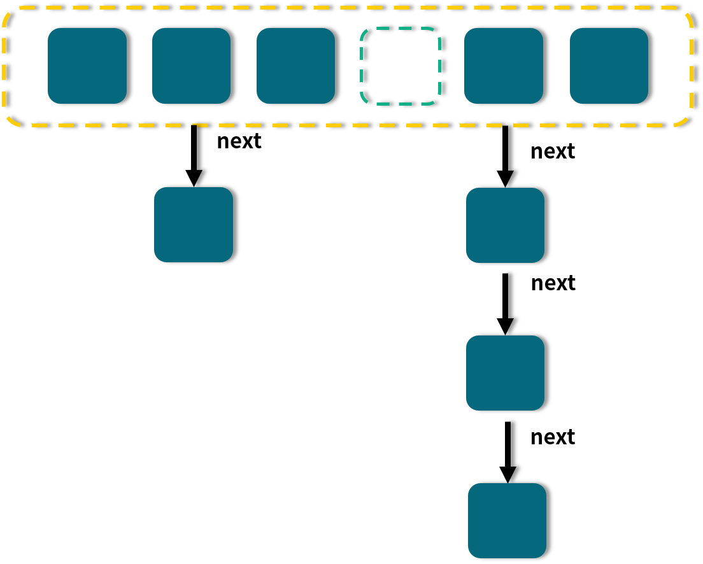
图中，有的桶是空的， 比如第 4 个；有的只有一个元素，比如 1、3、6；有的就是刚才说的拉链法，比如第 2 和第 5 个桶。
当链表长度大于或等于阈值（默认为 8）的时候，如果同时还满足容量大于或等于 MIN_TREEIFY_CAPACITY（默认为 64）的要求，就会把链表转换为红黑树。同样，后续如果由于删除或者其他原因调整了大小，当红黑树的节点小于或等于 6 个以后，又会恢复为链表形态。
让我们回顾一下 HashMap 的结构示意图：

在图中我们可以看到，有一些槽点是空的，有一些是拉链，有一些是红黑树。
更多的时候我们会关注，为何转为红黑树以及红黑树的一些特点，可是，为什么转化的这个阈值要默认设置为 8 呢？要想知道为什么设置为 8，那首先我们就要知道为什么要转换，因为转换是第一步。
每次遍历一个链表，平均查找的时间复杂度是 O(n)，n 是链表的长度。红黑树有和链表不一样的查找性能，由于红黑树有自平衡的特点，可以防止不平衡情况的发生，所以可以始终将查找的时间复杂度控制在 O(log(n))。最初链表还不是很长，所以可能 O(n) 和 O(log(n)) 的区别不大，但是如果链表越来越长，那么这种区别便会有所体现。所以为了提升查找性能，需要把链表转化为红黑树的形式。
那为什么不一开始就用红黑树，反而要经历一个转换的过程呢？其实在 JDK 的源码注释中已经对这个问题作了解释：
Because TreeNodes are about twice the size of regular nodes,
use them only when bins contain enough nodes to warrant use
(see TREEIFY_THRESHOLD). And when they become too small (due
removal or resizing) they are converted back to plain bins.
这段话的意思是：单个 TreeNode 需要占用的空间大约是普通 Node 的两倍，所以只有当包含足够多的 Nodes 时才会转成 TreeNodes，而是否足够多就是由 TREEIFY_THRESHOLD 的值决定的。而当桶中节点数由于移除或者 resize 变少后，又会变回普通的链表的形式，以便节省空间。
通过查看源码可以发现，默认是链表长度达到 8 就转成红黑树，而当长度降到 6 就转换回去，这体现了时间和空间平衡的思想，最开始使用链表的时候，空间占用是比较少的，而且由于链表短，所以查询时间也没有太大的问题。可是当链表越来越长，需要用红黑树的形式来保证查询的效率。对于何时应该从链表转化为红黑树，需要确定一个阈值，这个阈值默认为 8，并且在源码中也对选择 8 这个数字做了说明，原文如下：
In usages with well-distributed user hashCodes, tree bins
are rarely used. Ideally, under random hashCodes, the
frequency of nodes in bins follows a Poisson distribution
(http://en.wikipedia.org/wiki/Poisson_distribution) with a
parameter of about 0.5 on average for the default resizing
threshold of 0.75, although with a large variance because
of resizing granularity. Ignoring variance, the expected
occurrences of list size k are (exp(-0.5) * pow(0.5, k) /
factorial(k)). The first values are:
0: 0.60653066
1: 0.30326533
2: 0.07581633
3: 0.01263606
4: 0.00157952
5: 0.00015795
6: 0.00001316
7: 0.00000094
8: 0.00000006
more: less than 1 in ten million
上面这段话的意思是，如果 hashCode 分布良好，也就是 hash 计算的结果离散好的话，那么红黑树这种形式是很少会被用到的，因为各个值都均匀分布，很少出现链表很长的情况。在理想情况下，链表长度符合泊松分布，各个长度的命中概率依次递减，当长度为 8 的时候，概率仅为 0.00000006。这是一个小于千万分之一的概率，通常我们的 Map 里面是不会存储这么多的数据的，所以通常情况下，并不会发生从链表向红黑树的转换。
但是，HashMap 决定某一个元素落到哪一个桶里，是和这个对象的 hashCode 有关的，JDK 并不能阻止我们用户实现自己的哈希算法，如果我们故意把哈希算法变得不均匀，例如：
@Override
public int hashCode() {
return 1;
}
这里 hashCode 计算出来的值始终为 1，那么就很容易导致 HashMap 里的链表变得很长。让我们来看下面这段代码：
public class HashMapDemo {
public static void main(String[] args) {
HashMap map = new HashMap<HashMapDemo,Integer>(1);
for (int i = 0; i < 1000; i++) {
HashMapDemo hashMapDemo1 = new HashMapDemo();
map.put(hashMapDemo1, null);
}
System.out.println("运行结束");
}
@Override
public int hashCode() {
return 1;
}
}
在这个例子中，我们建了一个 HashMap，并且不停地往里放入值，所放入的 key 的对象，它的 hashCode 是被重写过得，并且始终返回 1。这段代码运行时，如果通过 debug 让程序暂停在 System.out.println("运行结束") 这行语句，我们观察 map 内的节点，可以发现已经变成了 TreeNode，而不是通常的 Node，这说明内部已经转为了红黑树。

事实上，链表长度超过 8 就转为红黑树的设计，更多的是为了防止用户自己实现了不好的哈希算法时导致链表过长，从而导致查询效率低，而此时转为红黑树更多的是一种保底策略，用来保证极端情况下查询的效率。
通常如果 hash 算法正常的话，那么链表的长度也不会很长，那么红黑树也不会带来明显的查询时间上的优势，反而会增加空间负担。所以通常情况下，并没有必要转为红黑树，所以就选择了概率非常小，小于千万分之一概率，也就是长度为 8 的概率，把长度 8 作为转化的默认阈值。
所以如果平时开发中发现 HashMap 或是 ConcurrentHashMap 内部出现了红黑树的结构，这个时候往往就说明我们的哈希算法出了问题，需要留意是不是我们实现了效果不好的 hashCode 方法，并对此进行改进，以便减少冲突。
32 同样是线程安全，ConcurrentHashMap 和 Hashtable 的区别
在本课时我们主要讲解同样是线程安全，ConcurrentHashMap 与 Hashtable 到底有什么区别呢？
我们都知道 HashMap 不是线程安全的，而 ConcurrentHashMap 和 Hashtable 它们两个确实都是线程安全的，那它们有哪些不同点呢？我们从以下四个角度出发，去分析它们的不同点。
出现的版本不同
我们先从表面的、显而易见的出现时间来分析。Hashtable 在 JDK1.0 的时候就存在了，并在 JDK1.2 版本中实现了 Map 接口，成为了集合框架的一员。而 ConcurrentHashMap 则是在 JDK1.5 中才出现的，也正是因为它们出现的年代不同，而后出现的往往是对前面出现的类的优化，所以它们在实现方式以及性能上，也存在着较大的不同。
实现线程安全的方式不同
虽然 ConcurrentHashMap 和 Hashtable 它们两个都是线程安全的，但是从原理上分析，Hashtable 实现并发安全的原理是通过 synchronized 关键字，让我们直接看下源码，以 clear() 方法为例，代码如下：
public synchronized void clear() {
Entry<?,?> tab[] = table;
modCount++;
for (int index = tab.length; --index >= 0; )
tab[index] = null;
count = 0;
}
可以看出这个 clear() 方法是被 synchronized 关键字所修饰的，同理其他的方法例如 put、get、size 等，也同样是被 synchronized 关键字修饰的。之所以 Hashtable 是线程安全的，是因为几乎每个方法都被 synchronized 关键字所修饰了，这也就保证了线程安全。
Collections.SynchronizedMap(new HashMap()) 的原理和 Hashtable 类似，也是利用 synchronized 实现的。而我们的 ConcurrentHashMap 实现的原理，却有大大的不同，让我们看一下它在 Java 8 中的结构示意图：
对于 ConcurrentHashMap 的原理，我们在第 30 课时的时候有过详细的介绍和源码分析，本质上它实现线程安全的原理是利用了 CAS + synchronized + Node 节点的方式，这和 Hashtable 的完全利用 synchronized 的方式有很大的不同。
性能不同
正因为它们在线程安全的实现方式上的不同，导致它们在性能方面也有很大的不同。当线程数量增加的时候，Hashtable 的性能会急剧下降，因为每一次修改都需要锁住整个对象，而其他线程在此期间是不能操作的。不仅如此，还会带来额外的上下文切换等开销，所以此时它的吞吐量甚至还不如单线程的情况。
而在 ConcurrentHashMap 中，就算上锁也仅仅会对一部分上锁而不是全部都上锁，所以多线程中的吞吐量通常都会大于单线程的情况，也就是说，在并发效率上，ConcurrentHashMap 比 Hashtable 提高了很多。
迭代时修改的不同
Hashtable（包括 HashMap）不允许在迭代期间修改内容，否则会抛出ConcurrentModificationException 异常，其原理是检测 modCount 变量，迭代器的 next() 方法的代码如下：
public T next() {
if (modCount != expectedModCount)
throw new ConcurrentModificationException();
return nextElement();
}
可以看出在这个 next() 方法中，会首先判断 modCount 是否等于 expectedModCount。其中 expectedModCount 是在迭代器生成的时候随之生成的，并且不会改变。它所代表的含义是当前 Hashtable 被修改的次数，而每一次去调用 Hashtable 的包括 addEntry()、remove()、rehash() 等方法中，都会修改 modCount 的值。这样一来，如果我们在迭代的过程中，去对整个 Hashtable 的内容做了修改的话，也就同样会反映到 modCount 中。这样一来，迭代器在进行 next 的时候，也可以感知到，于是它就会发现 modCount 不等于 expectedModCount，就会抛出 ConcurrentModificationException 异常。
所以对于 Hashtable 而言，它是不允许在迭代期间对内容进行修改的。相反，ConcurrentHashMap 即便在迭代期间修改内容，也不会抛出ConcurrentModificationException。
本课时总结了 ConcurrentHashMap 与 Hashtable 的区别，虽然它们都是线程安全的，但是在出现的版本上、实现线程安全的方式上、性能上，以及迭代时是否支持修改等方面都有较大的不同，如果我们有并发的场景，那么使用 ConcurrentHashMap 是最合适的，相反，Hashtable 已经不再推荐使用。
33 CopyOnWriteArrayList 有什么特点？
本课时我们主要讲解 CopyOnWriteArrayList 有什么特点。
故事要从诞生 CopyOnWriteArrayList 之前说起。其实在 CopyOnWriteArrayList 出现之前，我们已经有了 ArrayList 和 LinkedList 作为 List 的数组和链表的实现，而且也有了线程安全的 Vector 和 Collections.synchronizedList() 可以使用。所以首先就让我们来看下线程安全的 Vector 的 size 和 get 方法的代码：
public synchronized int size() {
return elementCount;
}
public synchronized E get(int index) {
if (index >= elementCount)
throw new ArrayIndexOutOfBoundsException(index);
return elementData(index);
}
可以看出，Vector 内部是使用 synchronized 来保证线程安全的，并且锁的粒度比较大，都是方法级别的锁，在并发量高的时候，很容易发生竞争，并发效率相对比较低。在这一点上，Vector 和 Hashtable 很类似。
并且，前面这几种 List 在迭代期间不允许编辑，如果在迭代期间进行添加或删除元素等操作，则会抛出 ConcurrentModificationException 异常，这样的特点也在很多情况下给使用者带来了麻烦。
所以从 JDK1.5 开始，Java 并发包里提供了使用 CopyOnWrite 机制实现的并发容器 CopyOnWriteArrayList 作为主要的并发 List，CopyOnWrite 的并发集合还包括 CopyOnWriteArraySet，其底层正是利用 CopyOnWriteArrayList 实现的。所以今天我们以 CopyOnWriteArrayList 为突破口，来看一下 CopyOnWrite 容器的特点。
适用场景
- 读操作可以尽可能的快，而写即使慢一些也没关系
在很多应用场景中，读操作可能会远远多于写操作。比如，有些系统级别的信息，往往只需要加载或者修改很少的次数，但是会被系统内所有模块频繁的访问。对于这种场景，我们最希望看到的就是读操作可以尽可能的快，而写即使慢一些也没关系。
- 读多写少
黑名单是最典型的场景，假如我们有一个搜索网站，用户在这个网站的搜索框中，输入关键字搜索内容，但是某些关键字不允许被搜索。这些不能被搜索的关键字会被放在一个黑名单中，黑名单并不需要实时更新，可能每天晚上更新一次就可以了。当用户搜索时，会检查当前关键字在不在黑名单中，如果在，则提示不能搜索。这种读多写少的场景也很适合使用 CopyOnWrite 集合。
读写规则
- 读写锁的规则
读写锁的思想是：读读共享、其他都互斥（写写互斥、读写互斥、写读互斥），原因是由于读操作不会修改原有的数据，因此并发读并不会有安全问题；而写操作是危险的，所以当写操作发生时，不允许有读操作加入，也不允许第二个写线程加入。
- 对读写锁规则的升级
CopyOnWriteArrayList 的思想比读写锁的思想又更进一步。为了将读取的性能发挥到极致，CopyOnWriteArrayList 读取是完全不用加锁的，更厉害的是，写入也不会阻塞读取操作，也就是说你可以在写入的同时进行读取，只有写入和写入之间需要进行同步，也就是不允许多个写入同时发生，但是在写入发生时允许读取同时发生。这样一来，读操作的性能就会大幅度提升。
特点
- CopyOnWrite的含义
从 CopyOnWriteArrayList 的名字就能看出它是满足 CopyOnWrite 的 ArrayList，CopyOnWrite 的意思是说，当容器需要被修改的时候，不直接修改当前容器，而是先将当前容器进行 Copy，复制出一个新的容器，然后修改新的容器，完成修改之后，再将原容器的引用指向新的容器。这样就完成了整个修改过程。
这样做的好处是，CopyOnWriteArrayList 利用了“不变性”原理，因为容器每次修改都是创建新副本，所以对于旧容器来说，其实是不可变的，也是线程安全的，无需进一步的同步操作。我们可以对 CopyOnWrite 容器进行并发的读，而不需要加锁，因为当前容器不会添加任何元素，也不会有修改。
CopyOnWriteArrayList 的所有修改操作（add，set等）都是通过创建底层数组的新副本来实现的，所以 CopyOnWrite 容器也是一种读写分离的思想体现，读和写使用不同的容器。
- 迭代期间允许修改集合内容
我们知道 ArrayList 在迭代期间如果修改集合的内容，会抛出 ConcurrentModificationException 异常。让我们来分析一下 ArrayList 会抛出异常的原因。
在 ArrayList 源码里的 ListItr 的 next 方法中有一个 checkForComodification 方法，代码如下：
final void checkForComodification() {
if (modCount != expectedModCount)
throw new ConcurrentModificationException();
}
这里会首先检查 modCount 是否等于 expectedModCount。modCount 是保存修改次数，每次我们调用 add、remove 或 trimToSize 等方法时它会增加，expectedModCount 是迭代器的变量，当我们创建迭代器时会初始化并记录当时的 modCount。后面迭代期间如果发现 modCount 和 expectedModCount 不一致，就说明有人修改了集合的内容，就会抛出异常。
和 ArrayList 不同的是，CopyOnWriteArrayList 的迭代器在迭代的时候，如果数组内容被修改了，CopyOnWriteArrayList 不会报 ConcurrentModificationException 的异常，因为迭代器使用的依然是旧数组，只不过迭代的内容可能已经过时了。演示代码如下：
/**
* 描述： 演示CopyOnWriteArrayList迭代期间可以修改集合的内容
*/
public class CopyOnWriteArrayListDemo {
public static void main(String[] args) {
CopyOnWriteArrayList<Integer> list = new CopyOnWriteArrayList<>(new Integer[]{1, 2, 3});
System.out.println(list); //[1, 2, 3]
//Get iterator 1
Iterator<Integer> itr1 = list.iterator();
//Add one element and verify list is updated
list.add(4);
System.out.println(list); //[1, 2, 3, 4]
//Get iterator 2
Iterator<Integer> itr2 = list.iterator();
System.out.println("====Verify Iterator 1 content====");
itr1.forEachRemaining(System.out::println); //1,2,3
System.out.println("====Verify Iterator 2 content====");
itr2.forEachRemaining(System.out::println); //1,2,3,4
}
}
这段代码会首先创建一个 CopyOnWriteArrayList，并且初始值被赋为 [1, 2, 3]，此时打印出来的结果很明显就是 [1, 2, 3]。然后我们创建一个叫作 itr1 的迭代器，创建之后再添加一个新的元素，利用 list.add() 方法把元素 4 添加进去，此时我们打印出 List 自然是 [1, 2, 3, 4]。我们再创建一个叫作 itr2 的迭代器，在下方把两个迭代器迭代产生的内容打印出来，这段代码的运行结果是：
[1, 2, 3]
[1, 2, 3, 4]
====Verify Iterator 1 content====
1
2
3
====Verify Iterator 2 content====
1
2
3
4
可以看出，这两个迭代器打印出来的内容是不一样的。第一个迭代器打印出来的是 [1, 2, 3]，而第二个打印出来的是 [1, 2, 3, 4]。虽然它们的打印时机都发生在第四个元素被添加之后，但它们的创建时机是不同的。由于迭代器 1 被创建时的 List 里面只有三个元素，后续无论 List 有什么修改，对它来说都是无感知的。
以上这个结果说明了，CopyOnWriteArrayList 的迭代器一旦被建立之后，如果往之前的 CopyOnWriteArrayList 对象中去新增元素，在迭代器中既不会显示出元素的变更情况，同时也不会报错，这一点和 ArrayList 是有很大区别的。
缺点
这些缺点不仅是针对 CopyOnWriteArrayList，其实同样也适用于其他的 CopyOnWrite 容器：
- 内存占用问题
因为 CopyOnWrite 的写时复制机制，所以在进行写操作的时候，内存里会同时驻扎两个对象的内存，这一点会占用额外的内存空间。
- 在元素较多或者复杂的情况下，复制的开销很大
复制过程不仅会占用双倍内存，还需要消耗 CPU 等资源，会降低整体性能。
- 数据一致性问题
由于 CopyOnWrite 容器的修改是先修改副本，所以这次修改对于其他线程来说，并不是实时能看到的，只有在修改完之后才能体现出来。如果你希望写入的的数据马上能被其他线程看到，CopyOnWrite 容器是不适用的。
源码分析
- 数据结构
/** 可重入锁对象 */
final transient ReentrantLock lock = new ReentrantLock();
/** CopyOnWriteArrayList底层由数组实现，volatile修饰，保证数组的可见性 */
private transient volatile Object[] array;
/**
* 得到数组
*/
final Object[] getArray() {
return array;
}
/**
* 设置数组
*/
final void setArray(Object[] a) {
array = a;
}
/**
* 初始化CopyOnWriteArrayList相当于初始化数组
*/
public CopyOnWriteArrayList() {
setArray(new Object[0]);
}
在这个类中首先会有一个 ReentrantLock 锁，用来保证修改操作的线程安全。下面被命名为 array 的 Object[] 数组是被 volatile 修饰的，可以保证数组的可见性，这正是存储元素的数组，同样，我们可以从 getArray()、setArray 以及它的构造方法看出，CopyOnWriteArrayList 的底层正是利用数组实现的，这也符合它的名字。
- add 方法
public boolean add(E e) {
// 加锁
final ReentrantLock lock = this.lock;
lock.lock();
try {
// 得到原数组的长度和元素
Object[] elements = getArray();
int len = elements.length;
// 复制出一个新数组
Object[] newElements = Arrays.copyOf(elements, len + 1);
// 添加时，将新元素添加到新数组中
newElements[len] = e;
// 将volatile Object[] array 的指向替换成新数组
setArray(newElements);
return true;
} finally {
lock.unlock();
}
}
add 方法的作用是往 CopyOnWriteArrayList 中添加元素，是一种修改操作。首先需要利用 ReentrantLock 的 lock 方法进行加锁，获取锁之后，得到原数组的长度和元素，也就是利用 getArray 方法得到 elements 并且保存 length。之后利用 Arrays.copyOf 方法复制出一个新的数组，得到一个和原数组内容相同的新数组，并且把新元素添加到新数组中。完成添加动作后，需要转换引用所指向的对象，利用 setArray(newElements) 操作就可以把 volatile Object[] array 的指向替换成新数组，最后在 finally 中把锁解除。
总结流程：在添加的时候首先上锁，并复制一个新数组，增加操作在新数组上完成，然后将 array 指向到新数组，最后解锁。
上面的步骤实现了 CopyOnWrite 的思想：写操作是在原来容器的拷贝上进行的，并且在读取数据的时候不会锁住 list。而且可以看到，如果对容器拷贝操作的过程中有新的读线程进来，那么读到的还是旧的数据，因为在那个时候对象的引用还没有被更改。
下面我们来分析一下读操作的代码，也就是和 get 相关的三个方法，分别是 get 方法的两个重载和 getArray 方法，代码如下：
public E get(int index) {
return get(getArray(), index);
}
final Object[] getArray() {
return array;
}
private E get(Object[] a, int index) {
return (E) a[index];
}
可以看出，get 相关的操作没有加锁，保证了读取操作的高速。
- 迭代器 COWIterator 类
这个迭代器有两个重要的属性，分别是 Object[] snapshot 和 int cursor。其中 snapshot 代表数组的快照，也就是创建迭代器那个时刻的数组情况，而 cursor 则是迭代器的游标。迭代器的构造方法如下：
private COWIterator(Object[] elements, int initialCursor) {
cursor = initialCursor;
snapshot = elements;
}
可以看出，迭代器在被构建的时候，会把当时的 elements 赋值给 snapshot，而之后的迭代器所有的操作都基于 snapshot 数组进行的，比如：
public E next() {
if (! hasNext())
throw new NoSuchElementException();
return (E) snapshot[cursor++];
}
在 next 方法中可以看到，返回的内容是 snapshot 对象，所以，后续就算原数组被修改，这个 snapshot 既不会感知到，也不会受影响，执行迭代操作不需要加锁，也不会因此抛出异常。迭代器返回的结果，和创建迭代器的时候的内容一致。
以上我们对 CopyOnWriteArrayList 进行了介绍。我们分别介绍了在它诞生之前的 Vector 和 Collections.synchronizedList() 的特点，CopyOnWriteArrayList 的适用场景、读写规则，还介绍了它的两个特点，分别是写时复制和迭代期间允许修改集合内容。我们还介绍了它的三个缺点，分别是内存占用问题，在元素较多或者复杂的情况下复制的开销大问题，以及数据一致性问题。最后我们对于它的重要源码进行了解析
34 什么是阻塞队列？
在本课时中我们主要讲解一下什么是阻塞队列。
阻塞队列的作用
阻塞队列，也就是 BlockingQueue，它是一个接口，如代码所示：
public interface BlockingQueue<E> extends Queue<E>{...}
BlockingQueue 继承了 Queue 接口，是队列的一种。Queue 和 BlockingQueue 都是在 Java 5 中加入的。
BlockingQueue 是线程安全的，我们在很多场景下都可以利用线程安全的队列来优雅地解决我们业务自身的线程安全问题。比如说，使用生产者/消费者模式的时候，我们生产者只需要往队列里添加元素，而消费者只需要从队列里取出它们就可以了，如图所示：

在图中，左侧有三个生产者线程，它会把生产出来的结果放到中间的阻塞队列中，而右侧的三个消费者也会从阻塞队列中取出它所需要的内容并进行处理。因为阻塞队列是线程安全的，所以生产者和消费者都可以是多线程的，不会发生线程安全问题。
既然队列本身是线程安全的，队列可以安全地从一个线程向另外一个线程传递数据，所以我们的生产者/消费者直接使用线程安全的队列就可以，而不需要自己去考虑更多的线程安全问题。这也就意味着，考虑锁等线程安全问题的重任从“你”转移到了“队列”上，降低了我们开发的难度和工作量。
同时，队列它还能起到一个隔离的作用。比如说我们开发一个银行转账的程序，那么生产者线程不需要关心具体的转账逻辑，只需要把转账任务，如账户和金额等信息放到队列中就可以，而不需要去关心银行这个类如何实现具体的转账业务。而作为银行这个类来讲，它会去从队列里取出来将要执行的具体的任务，再去通过自己的各种方法来完成本次转账。
这样就实现了具体任务与执行任务类之间的解耦，任务被放在了阻塞队列中，而负责放任务的线程是无法直接访问到我们银行具体实现转账操作的对象的，实现了隔离，提高了安全性。
主要并发队列关系图

上图展示了 Queue 最主要的实现类，可以看出 Java 提供的线程安全的队列（也称为并发队列）分为阻塞队列和非阻塞队列两大类。
阻塞队列的典型例子就是 BlockingQueue 接口的实现类，BlockingQueue 下面有 6 种最主要的实现，分别是 ArrayBlockingQueue、LinkedBlockingQueue、SynchronousQueue、DelayQueue、PriorityBlockingQueue 和 LinkedTransferQueue，它们各自有不同的特点，对于这些常见的阻塞队列的特点，我们会在第 36 课时中展开说明。
非阻塞并发队列的典型例子是 ConcurrentLinkedQueue，这个类不会让线程阻塞，利用 CAS 保证了线程安全。
我们可以根据需要自由选取阻塞队列或者非阻塞队列来满足业务需求。
还有一个和 Queue 关系紧密的 Deque 接口，它继承了 Queue，如代码所示：
public interface Deque<E> extends Queue<E> {//...}
Deque 的意思是双端队列，音标是 [dek]，是 double-ended-queue 的缩写，它从头和尾都能添加和删除元素；而普通的 Queue 只能从一端进入，另一端出去。这是 Deque 和 Queue 的不同之处，Deque 其他方面的性质都和 Queue 类似。
阻塞队列的特点
阻塞队列区别于其他类型的队列的最主要的特点就是“阻塞”这两个字，所以下面重点介绍阻塞功能：阻塞功能使得生产者和消费者两端的能力得以平衡，当有任何一端速度过快时，阻塞队列便会把过快的速度给降下来。实现阻塞最重要的两个方法是 take 方法和 put 方法。
take 方法
take 方法的功能是获取并移除队列的头结点，通常在队列里有数据的时候是可以正常移除的。可是一旦执行 take 方法的时候，队列里无数据，则阻塞，直到队列里有数据。一旦队列里有数据了，就会立刻解除阻塞状态，并且取到数据。过程如图所示：
put 方法
put 方法插入元素时，如果队列没有满，那就和普通的插入一样是正常的插入，但是如果队列已满，那么就无法继续插入，则阻塞，直到队列里有了空闲空间。如果后续队列有了空闲空间，比如消费者消费了一个元素，那么此时队列就会解除阻塞状态，并把需要添加的数据添加到队列中。过程如图所示：
以上过程中的阻塞和解除阻塞，都是 BlockingQueue 完成的，不需要我们自己处理。
是否有界（容量有多大）
此外，阻塞队列还有一个非常重要的属性，那就是容量的大小，分为有界和无界两种。
无界队列意味着里面可以容纳非常多的元素，例如 LinkedBlockingQueue 的上限是 Integer.MAX_VALUE，约为 2 的 31 次方，是非常大的一个数，可以近似认为是无限容量，因为我们几乎无法把这个容量装满。
但是有的阻塞队列是有界的，例如 ArrayBlockingQueue 如果容量满了，也不会扩容，所以一旦满了就无法再往里放数据了。
以上就是本课时的全部内容，本课时讲解了什么是阻塞队列，首先我们讲解了阻塞队列的作用；然后看了 Java 8 中的并发队列，分为阻塞队列和非阻塞队列，并且在阻塞队列中有 6 种常见的实现；最后我们看了阻塞队列的特点，包括 take 方法、put 方法和是否有界。
35 阻塞队列包含哪些常用的方法？add、offer、put 等方法的区别？
在本课时中我们主要讲解阻塞队列包含哪些常用的方法，以及 add，offer，put 等方法的区别。
在阻塞队列中有很多方法，而且它们都非常相似，所以非常有必要对这些类似的方法进行辨析，所以本课时会用分类的方式，和你一起，把阻塞队列中常见的方法进行梳理和讲解。
我们把 BlockingQueue 中最常用的和添加、删除相关的 8 个方法列出来，并且把它们分为三组，每组方法都和添加、移除元素相关。
这三组方法由于功能很类似，所以比较容易混淆。它们的区别仅在于特殊情况：当队列满了无法添加元素，或者是队列空了无法移除元素时，不同组的方法对于这种特殊情况会有不同的处理方式：
- 抛出异常：add、remove、element
- 返回结果但不抛出异常：offer、poll、peek
- 阻塞：put、take
第一组：add、remove、element
add 方法
add 方法是往队列里添加一个元素，如果队列满了，就会抛出异常来提示队列已满。示例代码如下：
private static void addTest() {
BlockingQueue<Integer> blockingQueue = new ArrayBlockingQueue<Integer>(2);
blockingQueue.add(1);
blockingQueue.add(1);
blockingQueue.add(1);
}
在这段代码中，我们创建了一个容量为 2 的 BlockingQueue，并且尝试往里面放 3 个值，超过了容量上限，那么在添加第三个值的时候就会得到异常：
Exception in thread "main" java.lang.IllegalStateException:Queue full
remove 方法
remove 方法的作用是删除元素，如果我们删除的队列是空的，由于里面什么都没有，所以也无法删除任何元素，那么 remove 方法就会抛出异常。示例代码如下：
private static void removeTest() {
ArrayBlockingQueue<Integer> blockingQueue = new ArrayBlockingQueue<Integer>(2);
blockingQueue.add(1);
blockingQueue.add(1);
blockingQueue.remove();
blockingQueue.remove();
blockingQueue.remove();
}
在这段代码中，我们往一个容量为 2 的 BlockingQueue 里放入 2 个元素，并且删除 3 个元素。在删除前面两个元素的时候会正常执行，因为里面依然有元素存在，但是在删除第三个元素时，由于队列里面已经空了，所以便会抛出异常：
Exception in thread "main" java.util.NoSuchElementException
element 方法
element 方法是返回队列的头部节点，但是并不删除。和 remove 方法一样，如果我们用这个方法去操作一个空队列，想获取队列的头结点，可是由于队列是空的，我们什么都获取不到，会抛出和前面 remove 方法一样的异常：NoSuchElementException。示例代码如下：
private static void elementTest() {
ArrayBlockingQueue<Integer> blockingQueue = new ArrayBlockingQueue<Integer>(2);
blockingQueue.element();
}
我们新建了一个容量为 2 的 ArrayBlockingQueue，直接调用 element 方法，由于之前没有往里面添加元素，默认为空，那么会得到异常：
Exception in thread "main" java.util.NoSuchElementException
第二组：offer、poll、peek
实际上我们通常并不想看到第一组方法抛出的异常，这时我们可以优先采用第二组方法。第二组方法相比于第一组而言要友好一些，当发现队列满了无法添加，或者队列为空无法删除的时候，第二组方法会给一个提示，而不是抛出一个异常。
offer 方法
offer 方法用来插入一个元素，并用返回值来提示插入是否成功。如果添加成功会返回 true，而如果队列已经满了，此时继续调用 offer 方法的话，它不会抛出异常，只会返回一个错误提示：false。示例代码如下：
private static void offerTest() {
ArrayBlockingQueue<Integer> blockingQueue = new ArrayBlockingQueue<Integer>(2);
System.out.println(blockingQueue.offer(1));
System.out.println(blockingQueue.offer(1));
System.out.println(blockingQueue.offer(1));
}
我们创建了一个容量为 2 的 ArrayBlockingQueue，并且调用了三次 offer方法尝试添加，每次都把返回值打印出来，运行结果如下：
true
true
false
可以看出，前面两次添加成功了，但是第三次添加的时候，已经超过了队列的最大容量，所以会返回 false，表明添加失败。
poll 方法
poll 方法和第一组的 remove 方法是对应的，作用也是移除并返回队列的头节点。但是如果当队列里面是空的，没有任何东西可以移除的时候，便会返回 null 作为提示。正因如此，我们是不允许往队列中插入 null 的，否则我们没有办法区分返回的 null 是一个提示还是一个真正的元素。示例代码如下：
private static void pollTest() {
ArrayBlockingQueue<Integer> blockingQueue = new ArrayBlockingQueue<Integer>(3);
blockingQueue.offer(1);
blockingQueue.offer(2);
blockingQueue.offer(3);
System.out.println(blockingQueue.poll());
System.out.println(blockingQueue.poll());
System.out.println(blockingQueue.poll());
System.out.println(blockingQueue.poll());
}
在这个代码中我们创建了一个容量为 3 的 ArrayBlockingQueue，并且先往里面放入 3 个元素，然后四次调用 poll 方法，运行结果如下：
1
2
3
null
前面三次 poll 都运行成功了，并且返回了元素内容 1、2、3，是先进先出的顺序。第四次的 poll 方法返回 null，代表此时已经没有元素可以移除了。
peek 方法
peek 方法和第一组的 element 方法是对应的，意思是返回队列的头元素但并不删除。如果队列里面是空的，它便会返回 null 作为提示。示例代码如下：
private static void peekTest() {
ArrayBlockingQueue<Integer> blockingQueue = new ArrayBlockingQueue<Integer>(2);
System.out.println(blockingQueue.peek());
}
运行结果：
null
我们新建了一个空的 ArrayBlockingQueue，然后直接调用 peek，返回结果 null，代表此时并没有东西可以取出。
带超时时间的 offer 和 poll
第二组还有一些额外值得讲解的内容，offer 和 poll 都有带超时时间的重载方法。
offer(E e, long timeout, TimeUnit unit)
它有三个参数，分别是元素、超时时长和时间单位。通常情况下，这个方法会插入成功并返回 true；如果队列满了导致插入不成功，在调用带超时时间重载方法的 offer 的时候，则会等待指定的超时时间，如果时间到了依然没有插入成功，就会返回 false。
poll(long timeout, TimeUnit unit)
带时间参数的 poll 方法和 offer 类似：如果能够移除，便会立刻返回这个节点的内容；如果队列是空的就会进行等待，等待时间正是我们指定的时间，直到超时时间到了，如果队列里依然没有元素可供移除，便会返回 null 作为提示。
第三组：put、take
第三组是我们比较熟悉的、阻塞队列最大特色的 put 和 take 方法，我们复习一下 34 课时里对于 put 和 take 方法的讲解。
put 方法
put 方法的作用是插入元素。通常在队列没满的时候是正常的插入，但是如果队列已满就无法继续插入，这时它既不会立刻返回 false 也不会抛出异常，而是让插入的线程陷入阻塞状态，直到队列里有了空闲空间，此时队列就会让之前的线程解除阻塞状态，并把刚才那个元素添加进去。

take 方法
take 方法的作用是获取并移除队列的头结点。通常在队列里有数据的时候会正常取出数据并删除；但是如果执行 take 的时候队列里无数据，则阻塞，直到队列里有数据；一旦队列里有数据了，就会立刻解除阻塞状态，并且取到数据。

总结
以上就是本课时的内容，本课时我们讲解了阻塞队列中常见的方法并且把它们分为了三组，每一组都有各自的特点。第一组的特点是在无法正常执行的情况下抛出异常；第二组的特点是在无法正常执行的情况下不抛出异常，但会用返回值提示运行失败；第三组的特点是在遇到特殊情况时让线程陷入阻塞状态，等到可以运行再继续执行。
我们用表格把上面 8 种方法总结如下：
 有了这个表格之后，我们就可以非常清晰地理清这 8 个方法之间的关系了，课后你可以仔细对比表格以加深印象。
有了这个表格之后，我们就可以非常清晰地理清这 8 个方法之间的关系了，课后你可以仔细对比表格以加深印象。
36 有哪几种常见的阻塞队列？
本课时我们主要讲解有哪几种常见的阻塞队列。
BlockingQueue 接口的实现类都被放在了 J.U.C 包中，本课时将对常见的和常用的实现类进行介绍，包括 ArrayBlockingQueue、LinkedBlockingQueue、SynchronousQueue、PriorityBlockingQueue，以及 DelayQueue。
ArrayBlockingQueue
让我们先从最基础的 ArrayBlockingQueue 说起。ArrayBlockingQueue 是最典型的有界队列，其内部是用数组存储元素的，利用 ReentrantLock 实现线程安全。
我们在创建它的时候就需要指定它的容量，之后也不可以再扩容了，在构造函数中我们同样可以指定是否是公平的，代码如下：
ArrayBlockingQueue(int capacity, boolean fair)
第一个参数是容量，第二个参数是是否公平。正如 ReentrantLock 一样，如果 ArrayBlockingQueue 被设置为非公平的，那么就存在插队的可能；如果设置为公平的，那么等待了最长时间的线程会被优先处理，其他线程不允许插队，不过这样的公平策略同时会带来一定的性能损耗，因为非公平的吞吐量通常会高于公平的情况。
LinkedBlockingQueue
正如名字所示，这是一个内部用链表实现的 BlockingQueue。如果我们不指定它的初始容量，那么它容量默认就为整型的最大值 Integer.MAX_VALUE，由于这个数非常大，我们通常不可能放入这么多的数据，所以 LinkedBlockingQueue 也被称作无界队列，代表它几乎没有界限。
SynchronousQueue
如图所示，SynchronousQueue 最大的不同之处在于，它的容量为 0，所以没有一个地方来暂存元素，导致每次取数据都要先阻塞，直到有数据被放入；同理，每次放数据的时候也会阻塞，直到有消费者来取。
需要注意的是，SynchronousQueue 的容量不是 1 而是 0，因为 SynchronousQueue 不需要去持有元素，它所做的就是直接传递（direct handoff）。由于每当需要传递的时候，SynchronousQueue 会把元素直接从生产者传给消费者，在此期间并不需要做存储，所以如果运用得当，它的效率是很高的。
另外，由于它的容量为 0，所以相比于一般的阻塞队列，SynchronousQueue 的很多方法的实现是很有意思的，我们来举几个例子：
SynchronousQueue 的 peek 方法永远返回 null，代码如下：
public E peek() {
return null;
}
因为 peek 方法的含义是取出头结点，但是 SynchronousQueue 的容量是 0，所以连头结点都没有，peek 方法也就没有意义，所以始终返回 null。同理，element 始终会抛出 NoSuchElementException 异常。
而 SynchronousQueue 的 size 方法始终返回 0，因为它内部并没有容量，代码如下：
public int size() {
return 0;
}
直接 return 0，同理，isEmpty 方法始终返回 true：
public boolean isEmpty() {
return true;
}
因为它始终都是空的。
PriorityBlockingQueue
前面我们所说的 ArrayBlockingQueue 和 LinkedBlockingQueue 都是采用先进先出的顺序进行排序，可是如果有的时候我们需要自定义排序怎么办呢？这时就需要使用 PriorityBlockingQueue。
PriorityBlockingQueue 是一个支持优先级的无界阻塞队列，可以通过自定义类实现 compareTo() 方法来指定元素排序规则，或者初始化时通过构造器参数 Comparator 来指定排序规则。同时，插入队列的对象必须是可比较大小的，也就是 Comparable 的，否则会抛出 ClassCastException 异常。
它的 take 方法在队列为空的时候会阻塞，但是正因为它是无界队列，而且会自动扩容，所以它的队列永远不会满，所以它的 put 方法永远不会阻塞，添加操作始终都会成功，也正因为如此，它的成员变量里只有一个 Condition：
private final Condition notEmpty;
这和之前的 ArrayBlockingQueue 拥有两个 Condition（分别是 notEmpty 和 notFull）形成了鲜明的对比，我们的 PriorityBlockingQueue 不需要 notFull，因为它永远都不会满，真是“有空间就可以任性”。
DelayQueue
DelayQueue 这个队列比较特殊，具有“延迟”的功能。我们可以设定让队列中的任务延迟多久之后执行，比如 10 秒钟之后执行，这在例如“30 分钟后未付款自动取消订单”等需要延迟执行的场景中被大量使用。
它是无界队列，放入的元素必须实现 Delayed 接口，而 Delayed 接口又继承了 Comparable 接口，所以自然就拥有了比较和排序的能力，代码如下：
public interface Delayed extends Comparable<Delayed> {
long getDelay(TimeUnit unit);
}
可以看出这个 Delayed 接口继承自 Comparable，里面有一个需要实现的方法，就是 getDelay。这里的 getDelay 方法返回的是“还剩下多长的延迟时间才会被执行”，如果返回 0 或者负数则代表任务已过期。
元素会根据延迟时间的长短被放到队列的不同位置，越靠近队列头代表越早过期。
DelayQueue 内部使用了 PriorityQueue 的能力来进行排序，而不是自己从头编写，我们在工作中可以学习这种思想，对已有的功能进行复用，不但可以减少开发量，同时避免了“重复造轮子”，更重要的是，对学到的知识进行合理的运用，让知识变得更灵活，做到触类旁通。
总结
以上就是本课时的内容，我们对于 ArrayBlockingQueue、LinkedBlockingQueue、SynchronousQueue、PriorityBlockingQueue 以及 DelayQueue 这些常见的和常用的阻塞队列的特点进行了讲解。
37 阻塞和非阻塞队列的并发安全原理是什么？
本课时我们主要研究阻塞和非阻塞队列的并发安全原理。
之前我们探究了常见的阻塞队列的特点，在本课时，我们以 ArrayBlockingQueue 为例，首先分析 BlockingQueue 即阻塞队列的线程安全原理，然后再看看它的兄弟——非阻塞队列的并发安全原理。通过本课时的学习，我们就可以了解到关于并发队列的底层原理了。
ArrayBlockingQueue 源码分析
我们首先看一下 ArrayBlockingQueue 的源码，ArrayBlockingQueue 有以下几个重要的属性：
// 用于存放元素的数组
final Object[] items;
// 下一次读取操作的位置
int takeIndex;
// 下一次写入操作的位置
int putIndex;
// 队列中的元素数量
int count;
第一个就是最核心的、用于存储元素的 Object 类型的数组；然后它还会有两个位置变量，分别是 takeIndex 和 putIndex，这两个变量就是用来标明下一次读取和写入位置的；另外还有一个 count 用来计数，它所记录的就是队列中的元素个数。
另外，我们再来看下面这三个变量：
// 以下3个是控制并发用的工具
final ReentrantLock lock;
private final Condition notEmpty;
private final Condition notFull;
这三个变量也非常关键，第一个就是一个 ReentrantLock，而下面两个 Condition 分别是由 ReentrantLock 产生出来的，这三个变量就是我们实现线程安全最核心的工具。
ArrayBlockingQueue 实现并发同步的原理就是利用 ReentrantLock 和它的两个 Condition，读操作和写操作都需要先获取到 ReentrantLock 独占锁才能进行下一步操作。进行读操作时如果队列为空，线程就会进入到读线程专属的 notEmpty 的 Condition 的队列中去排队，等待写线程写入新的元素；同理，如果队列已满，这个时候写操作的线程会进入到写线程专属的 notFull 队列中去排队，等待读线程将队列元素移除并腾出空间。
下面，我们来分析一下最重要的 put 方法：
public void put(E e) throws InterruptedException {
checkNotNull(e);
final ReentrantLock lock = this.lock;
lock.lockInterruptibly();
try {
while (count == items.length)
notFull.await();
enqueue(e);
} finally {
lock.unlock();
}
}
在 put 方法中，首先用 checkNotNull 方法去检查插入的元素是不是 null。如果不是 null，我们会用 ReentrantLock 上锁，并且上锁方法是 lock.lockInterruptibly()。这个方法我们在第 23 课时的时候讲过，在获取锁的同时是可以响应中断的，这也正是我们的阻塞队列在调用 put 方法时，在尝试获取锁但还没拿到锁的期间可以响应中断的底层原因。
紧接着 ，是一个非常经典的 try finally 代码块，finally 中会去解锁，try 中会有一个 while 循环，它会检查当前队列是不是已经满了，也就是 count 是否等于数组的长度。如果等于就代表已经满了，于是我们便会进行等待，直到有空余的时候，我们才会执行下一步操作，调用 enqueue 方法让元素进入队列，最后用 unlock 方法解锁。
你看到这段代码不知道是否眼熟，在第 5 课时我们讲过，用 Condition 实现生产者/消费者模式的时候，写过一个 put 方法，代码如下：
public void put(Object o) throws InterruptedException {
lock.lock();
try {
while (queue.size() == max) {
notFull.await();
}
queue.add(o);
notEmpty.signalAll();
} finally {
lock.unlock();
}
}
可以看出，这两个方法几乎是一模一样的，所以当时在第 5 课时的时候我们就说过，我们自己用 Condition 实现生产者/消费者模式，实际上其本质就是自己实现了简易版的 BlockingQueue。你可以对比一下这两个 put 方法的实现，这样对 Condition 的理解就会更加深刻。
和 ArrayBlockingQueue 类似，其他各种阻塞队列如 LinkedBlockingQueue、PriorityBlockingQueue、DelayQueue、DelayedWorkQueue 等一系列 BlockingQueue 的内部也是利用了 ReentrantLock 来保证线程安全，只不过细节有差异，比如 LinkedBlockingQueue 的内部有两把锁，分别锁住队列的头和尾，比共用同一把锁的效率更高，不过总体思想都是类似的。
非阻塞队列ConcurrentLinkedQueue
看完阻塞队列之后，我们就来看看非阻塞队列 ConcurrentLinkedQueue。顾名思义，ConcurrentLinkedQueue 是使用链表作为其数据结构的，我们来看一下关键方法 offer 的源码：
public boolean offer(E e) {
checkNotNull(e);
final Node<E> newNode = new Node<E>(e);
for (Node<E> t = tail, p = t;;) {
Node<E> q = p.next;
if (q == null) {
// p is last node
if (p.casNext(null, newNode)) {
// Successful CAS is the linearization point
// for e to become an element of this queue,
// and for newNode to become "live".
if (p != t) // hop two nodes at a time
casTail(t, newNode); // Failure is OK.
return true;
}
// Lost CAS race to another thread; re-read next
}
else if (p == q)
// We have fallen off list. If tail is unchanged, it
// will also be off-list, in which case we need to
// jump to head, from which all live nodes are always
// reachable. Else the new tail is a better bet.
p = (t != (t = tail)) ? t : head;
else
// Check for tail updates after two hops.
p = (p != t && t != (t = tail)) ? t : q;
}
}
在这里我们不去一行一行分析具体的内容，而是把目光放到整体的代码结构上，在检查完空判断之后，可以看到它整个是一个大的 for 循环，而且是一个非常明显的死循环。在这个循环中有一个非常亮眼的 p.casNext 方法，这个方法正是利用了 CAS 来操作的，而且这个死循环去配合 CAS 也就是典型的乐观锁的思想。我们就来看一下 p.casNext 方法的具体实现，其方法代码如下：
boolean casNext(Node<E> cmp, Node<E> val) {
return UNSAFE.compareAndSwapObject(this, nextOffset, cmp, val);
}
可以看出这里运用了 UNSAFE.compareAndSwapObject 方法来完成 CAS 操作，而 compareAndSwapObject 是一个 native 方法，最终会利用 CPU 的 CAS 指令保证其不可中断。
可以看出，非阻塞队列 ConcurrentLinkedQueue 使用 CAS 非阻塞算法 + 不停重试，来实现线程安全，适合用在不需要阻塞功能，且并发不是特别剧烈的场景。
总结
最后我们来做一下总结。本课时我们分析了阻塞队列和非阻塞队列的并发安全原理，其中阻塞队列最主要是利用了 ReentrantLock 以及它的 Condition 来实现，而非阻塞队列则是利用 CAS 方法实现线程安全。
38 如何选择适合自己的阻塞队列？
本课时我们主要讲解如何选择适合自己的阻塞队列。
他山之石，可以攻玉。对于如何选择最合适的阻塞队列这个问题，实际上线程池已经率先给我们做了表率。线程池有很多种，不同种类的线程池会根据自己的特点，来选择适合自己的阻塞队列。
所以我们就首先来复习一下这些非常经典的线程池是如何挑选阻塞队列的，借鉴它们的经验之后，我们再去总结一套规则，来归纳出自己在选取阻塞队列时可以对哪些点进行考虑。
线程池对于阻塞队列的选择
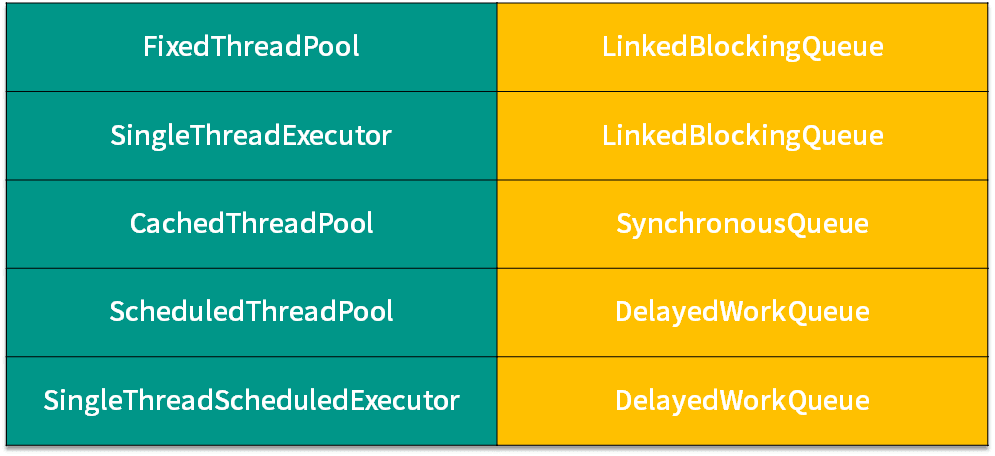
下面我们来看线程池的选择要诀。上面表格左侧是线程池，右侧为它们对应的阻塞队列，你可以看到 5 种线程池只对应了 3 种阻塞队列，下面我们对它们进行逐一的介绍。
- FixedThreadPool（SingleThreadExecutor 同理）选取的是 LinkedBlockingQueue
因为 LinkedBlockingQueue 不同于 ArrayBlockingQueue，ArrayBlockingQueue 的容量是有限的，而 LinkedBlockingQueue 是链表长度默认是可以无限延长的。
由于 FixedThreadPool 的线程数是固定的，在任务激增的时候，它无法增加更多的线程来帮忙处理 Task，所以需要像 LinkedBlockingQueue 这样没有容量上限的 Queue 来存储那些还没处理的 Task。
如果所有的 corePoolSize 线程都正在忙，那么新任务将会进入阻塞队列等待，由于队列是没有容量上限的，队列永远不会被填满，这样就保证了对于线程池 FixedThreadPool 和 SingleThreadExecutor 而言，不会拒绝新任务的提交，也不会丢失数据。
- CachedThreadPool 选取的是 SynchronousQueue
对于 CachedThreadPool 而言，为了避免新提交的任务被拒绝，它选择了无限制的 maximumPoolSize（在专栏中，maxPoolSize 等同于 maximumPoolSize），所以既然它的线程的最大数量是无限的，也就意味着它的线程数不会受到限制，那么它就不需要一个额外的空间来存储那些 Task，因为每个任务都可以通过新建线程来处理。
SynchronousQueue 会直接把任务交给线程，而不需要另外保存它们，效率更高，所以 CachedThreadPool 使用的 Queue 是 SynchronousQueue。
- ScheduledThreadPool（SingleThreadScheduledExecutor同理）选取的是延迟队列
对于 ScheduledThreadPool 而言，它使用的是 DelayedWorkQueue。延迟队列的特点是：不是先进先出，而是会按照延迟时间的长短来排序，下一个即将执行的任务会排到队列的最前面。
我们来举个例子：例如我们往这个队列中，放一个延迟 10 分钟执行的任务，然后再放一个延迟 10 秒钟执行的任务。通常而言，如果不是延迟队列，那么按照先进先出的排列规则，也就是延迟 10 分钟执行的那个任务是第一个放置的，会放在最前面。但是由于我们此时使用的是阻塞队列，阻塞队列在排放各个任务的位置的时候，会根据延迟时间的长短来排放。所以，我们第二个放置的延迟 10 秒钟执行的那个任务，反而会排在延迟 10 分钟的任务的前面，因为它的执行时间更早。
我们选择使用延迟队列的原因是，ScheduledThreadPool 处理的是基于时间而执行的 Task，而延迟队列有能力把 Task 按照执行时间的先后进行排序，这正是我们所需要的功能。
ArrayBlockingQueue
除了线程池选择的 3 种阻塞队列外，还有一种常用的阻塞队列叫作 ArrayBlockingQueue，它也经常被用于我们手动创建的线程池中。
这种阻塞队列内部是用数组实现的，在新建对象的时候要求传入容量值，且后期不能扩容，所以 ArrayBlockingQueue的最大特点就是容量是有限且固定的。这样一来，使用 ArrayBlockingQueue 且设置了合理大小的最大线程数的线程池，在任务队列放满了以后，如果线程数也已经达到了最大值，那么线程池根据规则就会拒绝新提交的任务，而不会无限增加任务或者线程数导致内存不足，可以非常有效地防止资源耗尽的情况发生。
归纳
下面让我们总结一下经验，通常我们可以从以下 5 个角度考虑，来选择合适的阻塞队列：
- 功能
第 1 个需要考虑的就是功能层面，比如是否需要阻塞队列帮我们排序，如优先级排序、延迟执行等。如果有这个需要，我们就必须选择类似于 PriorityBlockingQueue 之类的有排序能力的阻塞队列。
- 容量
第 2 个需要考虑的是容量，或者说是否有存储的要求，还是只需要“直接传递”。在考虑这一点的时候，我们知道前面介绍的那几种阻塞队列，有的是容量固定的，如 ArrayBlockingQueue；有的默认是容量无限的，如 LinkedBlockingQueue；而有的里面没有任何容量，如 SynchronousQueue；而对于 DelayQueue 而言，它的容量固定就是 Integer.MAX_VALUE。
所以不同阻塞队列的容量是千差万别的，我们需要根据任务数量来推算出合适的容量，从而去选取合适的 BlockingQueue。
- 能否扩容
第 3 个需要考虑的是能否扩容。因为有时我们并不能在初始的时候很好的准确估计队列的大小，因为业务可能有高峰期、低谷期。
如果一开始就固定一个容量，可能无法应对所有的情况，也是不合适的，有可能需要动态扩容。如果我们需要动态扩容的话，那么就不能选择 ArrayBlockingQueue ，因为它的容量在创建时就确定了，无法扩容。相反，PriorityBlockingQueue 即使在指定了初始容量之后，后续如果有需要，也可以自动扩容。
所以我们可以根据是否需要扩容来选取合适的队列。
- 内存结构
第 4 个需要考虑的点就是内存结构。在上一课时我们分析过 ArrayBlockingQueue 的源码，看到了它的内部结构是“数组”的形式。
和它不同的是，LinkedBlockingQueue 的内部是用链表实现的，所以这里就需要我们考虑到，ArrayBlockingQueue 没有链表所需要的“节点”，空间利用率更高。所以如果我们对性能有要求可以从内存的结构角度去考虑这个问题。
- 性能
第 5 点就是从性能的角度去考虑。比如 LinkedBlockingQueue 由于拥有两把锁，它的操作粒度更细，在并发程度高的时候，相对于只有一把锁的 ArrayBlockingQueue 性能会更好。
另外，SynchronousQueue 性能往往优于其他实现，因为它只需要“直接传递”，而不需要存储的过程。如果我们的场景需要直接传递的话，可以优先考虑 SynchronousQueue。
在本课时，我们首先回顾了线程池对于阻塞队列的选取规则，然后又看到了 ArrayBlockingQueue 的特点，接下来我们总结归纳了通常情况下，可以从功能、容量、能否扩容、内存结构和性能这 5 个角度考虑问题，结合业务选取最适合我们的阻塞队列。
39 原子类是如何利用 CAS 保证线程安全的？
本课时主要讲解原子类是如何利用 CAS 保证线程安全的。
什么是原子类？原子类有什么作用？
要想回答这个问题，首先我们需要知道什么是原子类，以及它有什么作用。
在编程领域里，原子性意味着“一组操作要么全都操作成功，要么全都失败，不能只操作成功其中的一部分”。而 java.util.concurrent.atomic 下的类，就是具有原子性的类，可以原子性地执行添加、递增、递减等操作。比如之前多线程下的线程不安全的 i++ 问题，到了原子类这里，就可以用功能相同且线程安全的 getAndIncrement 方法来优雅地解决。
原子类的作用和锁有类似之处，是为了保证并发情况下线程安全。不过原子类相比于锁，有一定的优势：
- 粒度更细：原子变量可以把竞争范围缩小到变量级别，通常情况下，锁的粒度都要大于原子变量的粒度。
- 效率更高：除了高度竞争的情况之外，使用原子类的效率通常会比使用同步互斥锁的效率更高，因为原子类底层利用了 CAS 操作，不会阻塞线程。
6 类原子类纵览
下面我们来看下一共有哪些原子类，原子类一共可以分为以下这 6 类，我们来逐一介绍：
| 类型 | 具体类 |
|---|---|
| Atomic* 基本类型原子类 | AtomicInteger、AtomicLong、AtomicBoolean |
| Atomic*Array 数组类型原子类 | AtomicIntegerArray、AtomicLongArray、AtomicReferenceArray |
| Atomic*Reference 引用类型原子类 | AtomicReference、AtomicStampedReference、AtomicMarkableReference |
| Atomic*FieldUpdater 升级类型原子类 | AtomicIntegerfieldupdater、AtomicLongFieldUpdater、AtomicReferenceFieldUpdater |
| Adder 累加器 | LongAdder、DoubleAdder |
| Accumulator 积累器 | LongAccumulator、DoubleAccumulator |
Atomic\ 基本类型原子类
首先看到第一类 Atomic*，我们把它称为基本类型原子类，它包括三种，分别是 AtomicInteger、AtomicLong 和 AtomicBoolean。
我们来介绍一下最为典型的 AtomicInteger。对于这个类型而言，它是对于 int 类型的封装，并且提供了原子性的访问和更新。也就是说，我们如果需要一个整型的变量，并且这个变量会被运用在并发场景之下，我们可以不用基本类型 int，也不使用包装类型 Integer，而是直接使用 AtomicInteger，这样一来就自动具备了原子能力，使用起来非常方便。
AtomicInteger 类常用方法
AtomicInteger 类有以下几个常用的方法：
- public final int get() //获取当前的值
因为它本身是一个 Java 类，而不再是一个基本类型，所以要想获取值还是需要一些方法，比如通过 get 方法就可以获取到当前的值。
- public final int getAndSet(int newValue) //获取当前的值，并设置新的值
接下来的几个方法和它平时的操作相关：
- public final int getAndIncrement() //获取当前的值，并自增
- public final int getAndDecrement() //获取当前的值，并自减
- public final int getAndAdd(int delta) //获取当前的值，并加上预期的值
这个参数就是我想让当前这个原子类改变多少值，可以是正数也可以是负数，如果是正数就是增加，如果是负数就是减少。而刚才的 getAndIncrement 和 getAndDecrement 修改的数值默认为 +1 或 -1，如果不能满足需求，我们就可以使用 getAndAdd 方法来直接一次性地加减我们想要的数值。
- boolean compareAndSet(int expect, int update) //如果输入的数值等于预期值，则以原子方式将该值更新为输入值（update）
这个方法也是 CAS 的一个重要体现。
Array 数组类型原子类
下面我们来看第二大类 AtomicArray 数组类型原子类，数组里的元素，都可以保证其原子性，比如 AtomicIntegerArray 相当于把 AtomicInteger 聚合起来，组合成一个数组。这样一来，我们如果想用一个每一个元素都具备原子性的数组的话， 就可以使用 AtomicArray。
它一共分为 3 种，分别是：
- AtomicIntegerArray：整形数组原子类；
- AtomicLongArray：长整形数组原子类；
- AtomicReferenceArray ：引用类型数组原子类。
Atomic\Reference 引用类型原子类
下面我们介绍第三种 AtomicReference 引用类型原子类。AtomicReference 类的作用和AtomicInteger 并没有本质区别， AtomicInteger 可以让一个整数保证原子性，而AtomicReference 可以让一个对象保证原子性。这样一来，AtomicReference 的能力明显比 AtomicInteger 强，因为一个对象里可以包含很多属性。
在这个类别之下，除了 AtomicReference 之外，还有：
- AtomicStampedReference：它是对 AtomicReference 的升级，在此基础上还加了时间戳，用于解决 CAS 的 ABA 问题。
- AtomicMarkableReference：和 AtomicReference 类似，多了一个绑定的布尔值，可以用于表示该对象已删除等场景。
Atomic\FieldUpdater 原子更新器
第四类我们将要介绍的是 Atomic\FieldUpdater，我们把它称为原子更新器，一共有三种，分别是。
- AtomicIntegerFieldUpdater：原子更新整形的更新器；
- AtomicLongFieldUpdater：原子更新长整形的更新器；
- AtomicReferenceFieldUpdater：原子更新引用的更新器。
如果我们之前已经有了一个变量，比如是整型的 int，实际它并不具备原子性。可是木已成舟，这个变量已经被定义好了，此时我们有没有办法可以让它拥有原子性呢？办法是有的，就是利用 Atomic*FieldUpdater，如果它是整型的，就使用 AtomicIntegerFieldUpdater 把已经声明的变量进行升级，这样一来这个变量就拥有了 CAS 操作的能力。
这里的非互斥同步手段，是把我们已经声明好的变量进行 CAS 操作以达到同步的目的。那么你可能会想，既然想让这个变量具备原子性，为什么不在一开始就声明为 AtomicInteger？这样也免去了升级的过程，难道是一开始设计的时候不合理吗？这里有以下几种情况：
第一种情况是出于历史原因考虑，那么如果出于历史原因的话，之前这个变量已经被声明过了而且被广泛运用，那么修改它成本很高，所以我们可以利用升级的原子类。
另外还有一个使用场景，如果我们在大部分情况下并不需要使用到它的原子性，只在少数情况，比如每天只有定时一两次需要原子操作的话，我们其实没有必要把原来的变量声明为原子类型的变量，因为 AtomicInteger 比普通的变量更加耗费资源。所以如果我们有成千上万个原子类的实例的话，它占用的内存也会远比我们成千上万个普通类型占用的内存高。所以在这种情况下，我们可以利用 AtomicIntegerFieldUpdater 进行合理升级，节约内存。
下面我们看一段代码：
public class AtomicIntegerFieldUpdaterDemo implements Runnable{
static Score math;
static Score computer;
public static AtomicIntegerFieldUpdater<Score> scoreUpdater = AtomicIntegerFieldUpdater
.newUpdater(Score.class, "score");
@Override
public void run() {
for (int i = 0; i < 1000; i++) {
computer.score++;
scoreUpdater.getAndIncrement(math);
}
}
public static class Score {
volatile int score;
}
public static void main(String[] args) throws InterruptedException {
math =new Score();
computer =new Score();
AtomicIntegerFieldUpdaterDemo2 r = new AtomicIntegerFieldUpdaterDemo2();
Thread t1 = new Thread(r);
Thread t2 = new Thread(r);
t1.start();
t2.start();
t1.join();
t2.join();
System.out.println("普通变量的结果："+ computer.score);
System.out.println("升级后的结果："+ math.score);
}
}
这段代码就演示了这个类的用法，比如说我们有两个类，它们都是 Score 类型的，Score 类型内部会有一个分数，也叫作 core，那么这两个分数的实例分别叫作数学 math 和计算机 computer，然后我们还声明了一个 AtomicIntegerFieldUpdater，在它构造的时候传入了两个参数，第一个是 Score.class，这是我们的类名，第二个是属性名，叫作 score。
接下来我们看一下 run 方法，run 方法里面会对这两个实例分别进行自加操作。
第一个是 computer，这里的 computer 我们调用的是它内部的 score，也就是说我们直接调用了 int 变量的自加操作，这在多线程下是线程非安全的。
第二个自加是利用了刚才声明的 scoreUpdater 并且使用了它的 getAndIncrement 方法并且传入了 math，这是一种正确使用AtomicIntegerFieldUpdater 的用法，这样可以线程安全地进行自加操作。
接下来我们看下 main 函数。在 main 函数中，我们首先把 math 和 computer 定义了出来，然后分别启动了两个线程，每个线程都去执行我们刚才所介绍过的 run 方法。这样一来，两个 score，也就是 math 和 computer 都会分别被加 2000 次，最后我们在 join 等待之后把结果打印了出来，这个程序的运行结果如下：
普通变量的结果：1942 升级后的结果：2000
可以看出，正如我们所预料的那样，普通变量由于不具备线程安全性，所以在多线程操作的情况下，它虽然看似进行了 2000 次操作，但有一些操作被冲突抵消了，所以最终结果小于 2000。可是使用 AtomicIntegerFieldUpdater 这个工具之后，就可以做到把一个普通类型的 score 变量进行原子的自加操作，最后的结果也和加的次数是一样的，也就是 2000。可以看出，这个类的功能还是非常强大的。
下面我们继续看最后两种原子类。
Adder 加法器
它里面有两种加法器，分别叫作 LongAdder 和 DoubleAdder。
Accumulator 积累器
最后一种叫 Accumulator 积累器，分别是 LongAccumulator 和 DoubleAccumulator。
这两种原子类我们会在后面的课时中展开介绍。
以 AtomicInteger 为例，分析在 Java 中如何利用 CAS 实现原子操作？
让我们回到标题中的问题，在充分了解了原子类的作用和种类之后，我们来看下 AtomicInteger 是如何通过 CAS 操作实现并发下的累加操作的，以其中一个重要方法 getAndAdd 方法为突破口。
getAndAdd方法
这个方法的代码在 Java 1.8 中的实现如下：
//JDK 1.8实现
public final int getAndAdd(int delta) {
return unsafe.getAndAddInt(this, valueOffset, delta);
}
可以看出，里面使用了 Unsafe 这个类，并且调用了 unsafe.getAndAddInt 方法。所以这里需要简要介绍一下 Unsafe 类。
Unsafe 类
Unsafe 其实是 CAS 的核心类。由于 Java 无法直接访问底层操作系统，而是需要通过 native 方法来实现。不过尽管如此，JVM 还是留了一个后门，在 JDK 中有一个 Unsafe 类，它提供了硬件级别的原子操作，我们可以利用它直接操作内存数据。
那么我们就来看一下 AtomicInteger 的一些重要代码，如下所示：
public class AtomicInteger extends Number implements java.io.Serializable {
// setup to use Unsafe.compareAndSwapInt for updates
private static final Unsafe unsafe = Unsafe.getUnsafe();
private static final long valueOffset;
static {
try {
valueOffset = unsafe.objectFieldOffset
(AtomicInteger.class.getDeclaredField("value"));
} catch (Exception ex) { throw new Error(ex); }
}
private volatile int value;
public final int get() {return value;}
...
}
可以看出，在数据定义的部分，首先还获取了 Unsafe 实例，并且定义了 valueOffset。我们往下看到 static 代码块，这个代码块会在类加载的时候执行，执行时我们会调用 Unsafe 的 objectFieldOffset 方法，从而得到当前这个原子类的 value 的偏移量，并且赋给 valueOffset 变量，这样一来我们就获取到了 value 的偏移量，它的含义是在内存中的偏移地址，因为 Unsafe 就是根据内存偏移地址获取数据的原值的，这样我们就能通过 Unsafe 来实现 CAS 了。
value 是用 volatile 修饰的，它就是我们原子类存储的值的变量，由于它被 volatile 修饰，我们就可以保证在多线程之间看到的 value 是同一份，保证了可见性。
接下来继续看 Unsafe 的 getAndAddInt 方法的实现，代码如下：
public final int getAndAddInt(Object var1, long var2, int var4) {
int var5;
do {
var5 = this.getIntVolatile(var1, var2);
} while(!this.compareAndSwapInt(var1, var2, var5, var5 + var4));
return var5;
}
首先我们看一下结构，它是一个 do-while 循环，所以这是一个死循环，直到满足循环的退出条件时才可以退出。
那么我们来看一下 do 后面的这一行代码 var5 = this.getIntVolatile(var1, var2) 是什么意思。这是个 native 方法，作用就是获取在 var1 中的 var2 偏移处的值。
那传入的是什么呢？传入的两个参数，第一个就是当前原子类，第二个是我们最开始获取到的 offset，这样一来我们就可以获取到当前内存中偏移量的值，并且保存到 var5 里面。此时 var5 实际上代表当前时刻下的原子类的数值。
现在再来看 while 的退出条件，也就是 compareAndSwapInt 这个方法，它一共传入了 4 个参数，这 4 个参数是 var1、var2、var5、var5 + var4，为了方便理解，我们给它们取了新了变量名，分别 object、offset、expectedValue、newValue，具体含义如下：
- 第一个参数 object 就是将要操作的对象，传入的是 this，也就是 atomicInteger 这个对象本身；
- 第二个参数是 offset，也就是偏移量，借助它就可以获取到 value 的数值；
- 第三个参数 expectedValue，代表“期望值”，传入的是刚才获取到的 var5；
- 而最后一个参数 newValue 是希望修改的数值 ，等于之前取到的数值 var5 再加上 var4，而 var4 就是我们之前所传入的 delta，delta 就是我们希望原子类所改变的数值，比如可以传入 +1，也可以传入 -1。
所以 compareAndSwapInt 方法的作用就是，判断如果现在原子类里 value 的值和之前获取到的 var5 相等的话，那么就把计算出来的 var5 + var4 给更新上去，所以说这行代码就实现了 CAS 的过程。
一旦 CAS 操作成功，就会退出这个 while 循环，但是也有可能操作失败。如果操作失败就意味着在获取到 var5 之后，并且在 CAS 操作之前，value 的数值已经发生变化了，证明有其他线程修改过这个变量。
这样一来，就会再次执行循环体里面的代码，重新获取 var5 的值，也就是获取最新的原子变量的数值，并且再次利用 CAS 去尝试更新，直到更新成功为止，所以这是一个死循环。
我们总结一下，Unsafe 的 getAndAddInt 方法是通过循环 + CAS 的方式来实现的，在此过程中，它会通过 compareAndSwapInt 方法来尝试更新 value 的值，如果更新失败就重新获取，然后再次尝试更新，直到更新成功。
总结
在本课时我们首先介绍了原子类的作用，然后对 6 类原子类进行了介绍，分别是 Atomic* 基本类型原子类、AtomicArray 数组类型原子类、AtomicReference 引用类型原子类、Atomic*FieldUpdater 升级类型原子类、Adder 加法器和 Accumulator 积累器。
然后我们对它们逐一进行了展开介绍，了解了它们的基本作用和用法，接下来我们以 AtomicInteger 为例，分析了在 Java 中是如何利用 CAS 实现原子操作的。
我们从 getAndAdd 方法出发，逐步深入，最后到了 Unsafe 的 getAndAddInt 方法。所以通过源码分析之后，我们也清楚地看到了，它实现的原理是利用自旋去不停地尝试，直到成功为止。
40 AtomicInteger 在高并发下性能不好，如何解决？为什么？
本课时我们主要讲解 AtomicInteger 在高并发下性能不好，如何解决？以及为什么会出现这种情况？
我们知道在 JDK1.5 中新增了并发情况下使用的 Integer/Long 所对应的原子类 AtomicInteger 和 AtomicLong。
在并发的场景下，如果我们需要实现计数器，可以利用 AtomicInteger 和 AtomicLong，这样一来，就可以避免加锁和复杂的代码逻辑，有了它们之后，我们只需要执行对应的封装好的方法，例如对这两个变量进行原子的增操作或原子的减操作，就可以满足大部分业务场景的需求。
不过，虽然它们很好用，但是如果你的业务场景是并发量很大的，那么你也会发现，这两个原子类实际上会有较大的性能问题，这是为什么呢？就让我们从一个例子看起。
AtomicLong 存在的问题
首先我们来看一段代码：
/**
* 描述： 在16个线程下使用AtomicLong
*/
public class AtomicLongDemo {
public static void main(String[] args) throws InterruptedException {
AtomicLong counter = new AtomicLong(0);
ExecutorService service = Executors.newFixedThreadPool(16);
for (int i = 0; i < 100; i++) {
service.submit(new Task(counter));
}
Thread.sleep(2000);
System.out.println(counter.get());
}
static class Task implements Runnable {
private final AtomicLong counter;
public Task(AtomicLong counter) {
this.counter = counter;
}
@Override
public void run() {
counter.incrementAndGet();
}
}
}
在这段代码中可以看出，我们新建了一个原始值为 0 的 AtomicLong。然后，有一个线程数为 16 的线程池，并且往这个线程池中添加了 100 次相同的一个任务。
那我们往下看这个任务是什么。在下面的 Task 类中可以看到，这个任务实际上就是每一次去调用 AtomicLong 的 incrementAndGet 方法，相当于一次自加操作。这样一来，整个类的作用就是把这个原子类从 0 开始，添加 100 个任务，每个任务自加一次。
这段代码的运行结果毫无疑问是 100，虽然是多线程并发访问，但是 AtomicLong 依然可以保证 incrementAndGet 操作的原子性，所以不会发生线程安全问题。
不过如果我们深入一步去看内部情景的话，你可能会感到意外。我们把模型简化成只有两个线程在同时工作的并发场景，因为两个线程和更多个线程本质上是一样的。如图所示：
我们可以看到在这个图中，每一个线程是运行在自己的 core 中的，并且它们都有一个本地内存是自己独用的。在本地内存下方，有两个 CPU 核心共用的共享内存。
对于 AtomicLong 内部的 value 属性而言，也就是保存当前 AtomicLong 数值的属性，它是被 volatile 修饰的，所以它需要保证自身可见性。
这样一来，每一次它的数值有变化的时候，它都需要进行 flush 和 refresh。比如说，如果开始时，ctr 的数值为 0 的话，那么如图所示，一旦 core 1 把它改成 1 的话，它首先会在左侧把这个 1 的最新结果给 flush 到下方的共享内存。然后，再到右侧去往上 refresh 到核心 2 的本地内存。这样一来，对于核心 2 而言，它才能感知到这次变化。
由于竞争很激烈，这样的 flush 和 refresh 操作耗费了很多资源，而且 CAS 也会经常失败。
LongAdder 带来的改进和原理
在 JDK 8 中又新增了 LongAdder 这个类，这是一个针对 Long 类型的操作工具类。那么既然已经有了 AtomicLong，为何又要新增 LongAdder 这么一个类呢？
我们同样是用一个例子来说明。下面这个例子和刚才的例子很相似，只不过我们把工具类从 AtomicLong 变成了 LongAdder。其他的不同之处还在于最终打印结果的时候，调用的方法从原来的 get 变成了现在的 sum 方法。而其他的逻辑都一样。
我们来看一下使用 LongAdder 的代码示例：
/**
* 描述： 在16个线程下使用LongAdder
*/
public class LongAdderDemo {
public static void main(String[] args) throws InterruptedException {
LongAdder counter = new LongAdder();
ExecutorService service = Executors.newFixedThreadPool(16);
for (int i = 0; i < 100; i++) {
service.submit(new Task(counter));
}
Thread.sleep(2000);
System.out.println(counter.sum());
}
static class Task implements Runnable {
private final LongAdder counter;
public Task(LongAdder counter) {
this.counter = counter;
}
@Override
public void run() {
counter.increment();
}
}
}
代码的运行结果同样是 100，但是运行速度比刚才 AtomicLong 的实现要快。下面我们解释一下，为什么高并发下 LongAdder 比 AtomicLong 效率更高。
因为 LongAdder 引入了分段累加的概念，内部一共有两个参数参与计数：第一个叫作 base，它是一个变量，第二个是 Cell[] ，是一个数组。
其中的 base 是用在竞争不激烈的情况下的，可以直接把累加结果改到 base 变量上。
那么，当竞争激烈的时候，就要用到我们的 Cell[] 数组了。一旦竞争激烈，各个线程会分散累加到自己所对应的那个 Cell[] 数组的某一个对象中，而不会大家共用同一个。
这样一来，LongAdder 会把不同线程对应到不同的 Cell 上进行修改，降低了冲突的概率，这是一种分段的理念，提高了并发性，这就和 Java 7 的 ConcurrentHashMap 的 16 个 Segment 的思想类似。
竞争激烈的时候，LongAdder 会通过计算出每个线程的 hash 值来给线程分配到不同的 Cell 上去，每个 Cell 相当于是一个独立的计数器，这样一来就不会和其他的计数器干扰，Cell 之间并不存在竞争关系，所以在自加的过程中，就大大减少了刚才的 flush 和 refresh，以及降低了冲突的概率，这就是为什么 LongAdder 的吞吐量比 AtomicLong 大的原因，本质是空间换时间，因为它有多个计数器同时在工作，所以占用的内存也要相对更大一些。
那么 LongAdder 最终是如何实现多线程计数的呢？答案就在最后一步的求和 sum 方法，执行 LongAdder.sum() 的时候，会把各个线程里的 Cell 累计求和，并加上 base，形成最终的总和。代码如下：
public long sum() {
Cell[] as = cells; Cell a;
long sum = base;
if (as != null) {
for (int i = 0; i < as.length; ++i) {
if ((a = as[i]) != null)
sum += a.value;
}
}
return sum;
}
在这个 sum 方法中可以看到，思路非常清晰。先取 base 的值，然后遍历所有 Cell，把每个 Cell 的值都加上去，形成最终的总和。由于在统计的时候并没有进行加锁操作，所以这里得出的 sum 不一定是完全准确的，因为有可能在计算 sum 的过程中 Cell 的值被修改了。
那么我们已经了解了，为什么 AtomicLong 或者说 AtomicInteger 它在高并发下性能不好，也同时看到了性能更好的 LongAdder。下面我们就分析一下，对它们应该如何选择。
如何选择
在低竞争的情况下，AtomicLong 和 LongAdder 这两个类具有相似的特征，吞吐量也是相似的，因为竞争不高。但是在竞争激烈的情况下，LongAdder 的预期吞吐量要高得多，经过试验，LongAdder 的吞吐量大约是 AtomicLong 的十倍，不过凡事总要付出代价，LongAdder 在保证高效的同时，也需要消耗更多的空间。
AtomicLong 可否被 LongAdder 替代？
那么我们就要考虑了，有了更高效的 LongAdder，那 AtomicLong 可否不使用了呢？是否凡是用到 AtomicLong 的地方，都可以用 LongAdder 替换掉呢？答案是不是的，这需要区分场景。
LongAdder 只提供了 add、increment 等简单的方法，适合的是统计求和计数的场景，场景比较单一，而 AtomicLong 还具有 compareAndSet 等高级方法，可以应对除了加减之外的更复杂的需要 CAS 的场景。
结论：如果我们的场景仅仅是需要用到加和减操作的话，那么可以直接使用更高效的 LongAdder，但如果我们需要利用 CAS 比如 compareAndSet 等操作的话，就需要使用 AtomicLong 来完成。
41 原子类和 volatile 有什么异同？
本课时我们主要讲解原子类和 volatile 有什么异同。
案例****说明 volatile 和原子类的异同
我们首先看一个案例。如图所示，我们有两个线程。
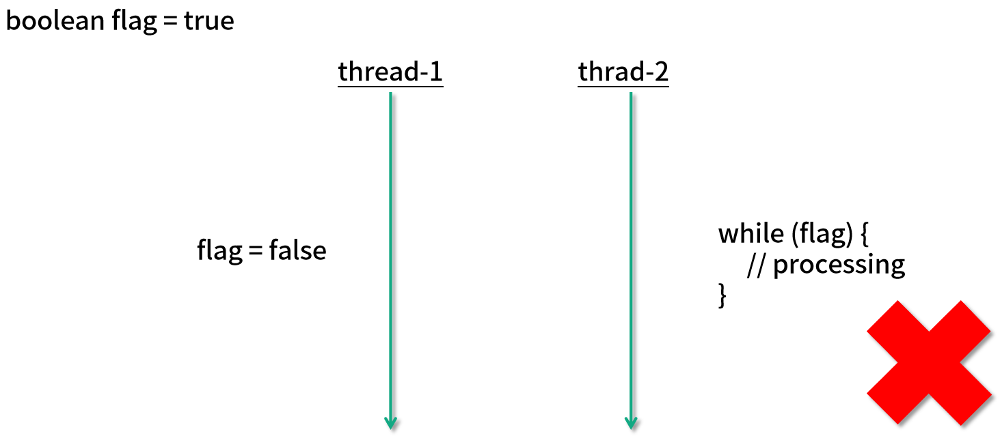
在图中左上角可以看出，有一个公共的 boolean flag 标记位，最开始赋值为 true，然后线程 2 会进入一个 while 循环，并且根据这个 flag 也就是标记位的值来决定是否继续执行或着退出。
最开始由于 flag 的值是 true，所以首先会在这里执行一定时期的循环。然后假设在某一时刻，线程 1 把这个 flag 的值改为 false 了，它所希望的是，线程 2 看到这个变化后停止运行。
但是这样做其实是有风险的，线程 2 可能并不能立刻停下来，也有可能过一段时间才会停止，甚至在最极端的情况下可能永远都不会停止。
为了理解发生这种情况的原因，我们首先来看一下 CPU 的内存结构，这里是一个双核的 CPU 的简单示意图：
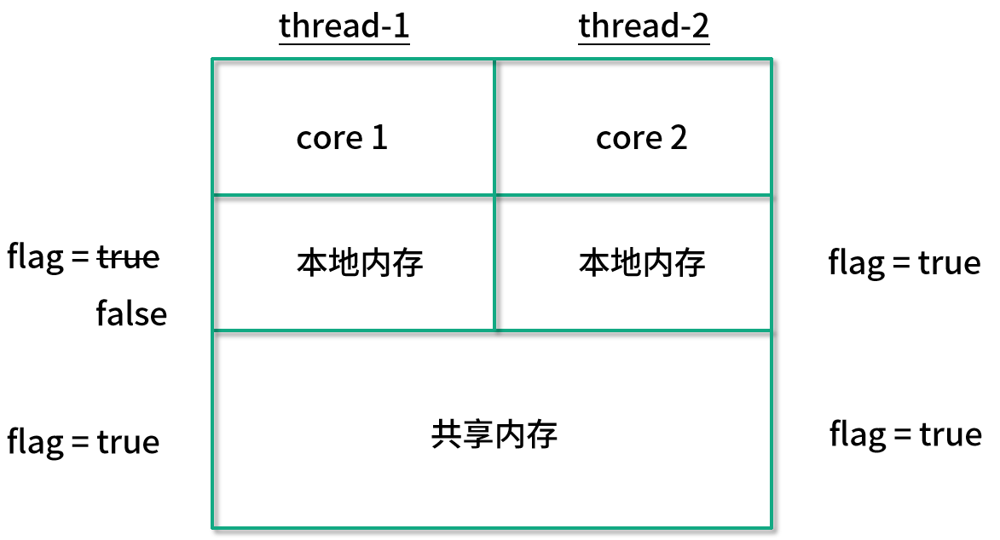
可以看出，线程 1 和线程 2 分别在不同的 CPU 核心上运行，每一个核心都有自己的本地内存，并且在下方也有它们共享的内存。
最开始它们都可以读取到 flag 为 true ，不过当线程 1 这个值改为 false 之后，线程 2 并不能及时看到这次修改，因为线程 2 不能直接访问线程 1 的本地内存，这样的问题就是一个非常典型的可见性问题。
要想解决这个问题，我们只需要在变量的前面加上 volatile 关键字修饰，只要我们加上这个关键字，那么每一次变量被修改的时候，其他线程对此都可见，这样一旦线程 1 改变了这个值，那么线程 2 就可以立刻看到，因此就可以退出 while 循环了。
之所以加了关键字之后就就可以让它拥有可见性，原因在于有了这个关键字之后，线程 1 的更改会被 flush 到共享内存中，然后又会被 refresh 到线程 2 的本地内存中，这样线程 2 就能感受到这个变化了，所以 volatile 这个关键字最主要是用来解决可见性问题的，可以一定程度上保证线程安全。
现在让我们回顾一下很熟悉的多线程同时进行 value++ 的场景，如图所示：
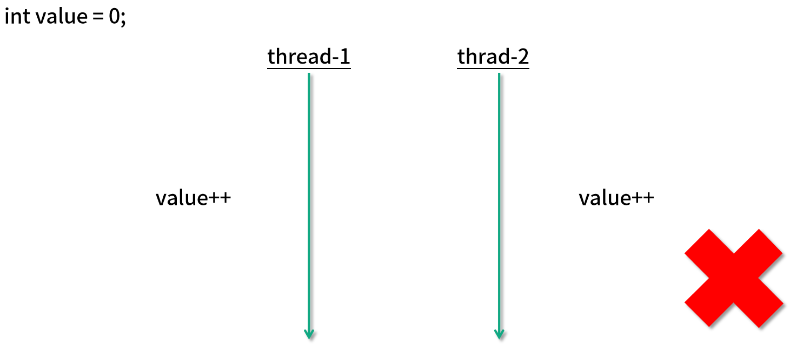
如果它被初始化为每个线程都加 1000 次，最终的结果很可能不是 2000。由于 value++ 不是原子的，所以在多线程的情况下，会出现线程安全问题。但是如果我们在这里使用 volatile 关键字，能不能解决问题呢？

很遗憾，答案是即便使用了 volatile 也是不能保证线程安全的，因为这里的问题不单单是可见性问题，还包含原子性问题。
我们有多种办法可以解决这里的问题，第 1 种是使用 synchronized 关键字，如图所示：
这样一来，两个线程就不能同时去更改 value 的数值，保证了 value++ 语句的原子性，并且 synchronized 同样保证了可见性，也就是说，当第 1 个线程修改了 value 值之后，第 2 个线程可以立刻看见本次修改的结果。
解决这个问题的第 2 个方法，就是使用我们的原子类，如图所示：
比如用一个 AtomicInteger，然后每个线程都调用它的 incrementAndGet 方法。
在利用了原子变量之后就无需加锁，我们可以使用它的 incrementAndGet 方法，这个操作底层由 CPU 指令保证原子性，所以即便是多个线程同时运行，也不会发生线程安全问题。
原子类和 volatile 的使用场景
那下面我们就来说一下原子类和 volatile 各自的使用场景。
我们可以看出，volatile 和原子类的使用场景是不一样的，如果我们有一个可见性问题，那么可以使用 volatile 关键字，但如果我们的问题是一个组合操作，需要用同步来解决原子性问题的话，那么可以使用原子变量，而不能使用 volatile 关键字。
通常情况下，volatile 可以用来修饰 boolean 类型的标记位，因为对于标记位来讲，直接的赋值操作本身就是具备原子性的，再加上 volatile 保证了可见性，那么就是线程安全的了。
而对于会被多个线程同时操作的计数器 Counter 的场景，这种场景的一个典型特点就是，它不仅仅是一个简单的赋值操作，而是需要先读取当前的值，然后在此基础上进行一定的修改，再把它给赋值回去。这样一来，我们的 volatile 就不足以保证这种情况的线程安全了。我们需要使用原子类来保证线程安全。
42 AtomicInteger 和 synchronized 的异同点？
在上一课时中，我们说明了原子类和 synchronized 关键字都可以用来保证线程安全，在本课时中，我们首先分别用原子类和 synchronized 关键字来解决一个经典的线程安全问题，给出具体的代码对比，然后再分析它们背后的区别。
代码对比
首先，原始的线程不安全的情况的代码如下所示：
public class Lesson42 implements Runnable {
static int value = 0;
public static void main(String[] args) throws InterruptedException {
Runnable runnable = new Lesson42();
Thread thread1 = new Thread(runnable);
Thread thread2 = new Thread(runnable);
thread1.start();
thread2.start();
thread1.join();
thread2.join();
System.out.println(value);
}
@Override
public void run() {
for (int i = 0; i < 10000; i++) {
value++;
}
}
}
在代码中我们新建了一个 value 变量，并且在两个线程中对它进行同时的自加操作，每个线程加 10000 次，然后我们用 join 来确保它们都执行完毕，最后打印出最终的数值。
因为 value++ 不是一个原子操作，所以上面这段代码是线程不安全的（具体分析详见第 6 讲），所以代码的运行结果会小于 20000，例如会输出 14611 等各种数字。
我们首先给出方法一，也就是用原子类来解决这个问题，代码如下所示：
public class Lesson42Atomic implements Runnable {
static AtomicInteger atomicInteger = new AtomicInteger();
public static void main(String[] args) throws InterruptedException {
Runnable runnable = new Lesson42Atomic();
Thread thread1 = new Thread(runnable);
Thread thread2 = new Thread(runnable);
thread1.start();
thread2.start();
thread1.join();
thread2.join();
System.out.println(atomicInteger.get());
}
@Override
public void run() {
for (int i = 0; i < 10000; i++) {
atomicInteger.incrementAndGet();
}
}
}
用原子类之后，我们的计数变量就不再是一个普通的 int 变量了，而是 AtomicInteger 类型的对象，并且自加操作也变成了 incrementAndGet 法。由于原子类可以确保每一次的自加操作都是具备原子性的，所以这段程序是线程安全的，所以以上程序的运行结果会始终等于 20000。
下面我们给出方法二，我们用 synchronized 来解决这个问题，代码如下所示：
public class Lesson42Syn implements Runnable {
static int value = 0;
public static void main(String[] args) throws InterruptedException {
Runnable runnable = new Lesson42Syn();
Thread thread1 = new Thread(runnable);
Thread thread2 = new Thread(runnable);
thread1.start();
thread2.start();
thread1.join();
thread2.join();
System.out.println(value);
}
@Override
public void run() {
for (int i = 0; i < 10000; i++) {
synchronized (this) {
value++;
}
}
}
}
它与最开始的线程不安全的代码的区别在于，在 run 方法中加了 synchronized 代码块，就可以非常轻松地解决这个问题，由于 synchronized 可以保证代码块内部的原子性，所以以上程序的运行结果也始终等于 20000，是线程安全的。
方案对比
下面我们就对这两种不同的方案进行分析。
第一点，我们来看一下它们背后原理的不同。
在第 21 课时中我们详细分析了 synchronized 背后的 monitor 锁，也就是 synchronized 原理，同步方法和同步代码块的背后原理会有少许差异，但总体思想是一致的：在执行同步代码之前，需要首先获取到 monitor 锁，执行完毕后，再释放锁。
而我们在第 39 课时中介绍了原子类，它保证线程安全的原理是利用了 CAS 操作。从这一点上看，虽然原子类和 synchronized 都能保证线程安全，但是其实现原理是大有不同的。
第二点不同是使用范围的不同。
对于原子类而言，它的使用范围是比较局限的。因为一个原子类仅仅是一个对象，不够灵活。而 synchronized 的使用范围要广泛得多。比如说 synchronized 既可以修饰一个方法，又可以修饰一段代码，相当于可以根据我们的需要，非常灵活地去控制它的应用范围。
所以仅有少量的场景，例如计数器等场景，我们可以使用原子类。而在其他更多的场景下，如果原子类不适用，那么我们就可以考虑用 synchronized 来解决这个问题。
第三个区别是粒度的区别。
原子变量的粒度是比较小的，它可以把竞争范围缩小到变量级别。通常情况下，synchronized 锁的粒度都要大于原子变量的粒度。如果我们只把一行代码用 synchronized 给保护起来的话，有一点杀鸡焉用牛刀的感觉。
第四点是它们性能的区别，同时也是悲观锁和乐观锁的区别。
因为 synchronized 是一种典型的悲观锁，而原子类恰恰相反，它利用的是乐观锁。所以，我们在比较 synchronized 和 AtomicInteger 的时候，其实也就相当于比较了悲观锁和乐观锁的区别。
从性能上来考虑的话，悲观锁的操作相对来讲是比较重量级的。因为 synchronized 在竞争激烈的情况下，会让拿不到锁的线程阻塞，而原子类是永远不会让线程阻塞的。不过，虽然 synchronized 会让线程阻塞，但是这并不代表它的性能就比原子类差。
因为悲观锁的开销是固定的，也是一劳永逸的。随着时间的增加，这种开销并不会线性增长。
而乐观锁虽然在短期内的开销不大，但是随着时间的增加，它的开销也是逐步上涨的。
所以从性能的角度考虑，它们没有一个孰优孰劣的关系，而是要区分具体的使用场景。在竞争非常激烈的情况下，推荐使用 synchronized；而在竞争不激烈的情况下，使用原子类会得到更好的效果。
值得注意的是，synchronized 的性能随着 JDK 的升级，也得到了不断的优化。synchronized 会从无锁升级到偏向锁，再升级到轻量级锁，最后才会升级到让线程阻塞的重量级锁。因此synchronized 在竞争不激烈的情况下，性能也是不错的，不需要“谈虎色变”。
43 Java 8 中 Adder 和 Accumulator 有什么区别？
本课时主要介绍在 Java 8 中 Adder 和 Accumulator 有什么区别。
Adder 的介绍
我们要知道 Adder 和 Accumulator 都是 Java 8 引入的，是相对比较新的类。对于 Adder 而言，比如最典型的 LongAdder，我们在第 40 讲的时候已经讲解过了，在高并发下 LongAdder 比 AtomicLong 效率更高，因为对于 AtomicLong 而言，它只适合用于低并发场景，否则在高并发的场景下，由于 CAS 的冲突概率大，会导致经常自旋，影响整体效率。
而 LongAdder 引入了分段锁的概念，当竞争不激烈的时候，所有线程都是通过 CAS 对同一个 Base 变量进行修改，但是当竞争激烈的时候，LongAdder 会把不同线程对应到不同的 Cell 上进行修改，降低了冲突的概率，从而提高了并发性。
Accumulator 的介绍
那么 Accumulator 又是做什么的呢？Accumulator 和 Adder 非常相似，实际上 Accumulator 就是一个更通用版本的 Adder，比如 LongAccumulator 是 LongAdder 的功能增强版，因为 LongAdder 的 API 只有对数值的加减，而 LongAccumulator 提供了自定义的函数操作。
我这样讲解可能有些同学还是不太理解，那就让我们用一个非常直观的代码来举例说明一下，代码如下：
public class LongAccumulatorDemo {
public static void main(String[] args) throws InterruptedException {
LongAccumulator accumulator = new LongAccumulator((x, y) -> x + y, 0);
ExecutorService executor = Executors.newFixedThreadPool(8);
IntStream.range(1, 10).forEach(i -> executor.submit(() -> accumulator.accumulate(i)));
Thread.sleep(2000);
System.out.println(accumulator.getThenReset());
}
}
在这段代码中：
- 首先新建了一个 LongAccumulator，同时给它传入了两个参数；
- 然后又新建了一个 8 线程的线程池，并且利用整形流也就是 IntStream 往线程池中提交了从 1 ~ 9 这 9 个任务；
- 之后等待了两秒钟，这两秒钟的作用是等待线程池的任务执行完毕；
- 最后把 accumulator 的值打印出来。
这段代码的运行结果是 45，代表 0+1+2+3+...+8+9=45 的结果，这个结果怎么理解呢？我们先重点看看新建的 LongAccumulator 的这一行语句：
LongAccumulator accumulator = new LongAccumulator((x, y) -> x + y, 0);
在这个语句中，我们传入了两个参数：LongAccumulator 的构造函数的第一个参数是二元表达式；第二个参数是 x 的初始值，传入的是 0。在二元表达式中，x 是上一次计算的结果（除了第一次的时候需要传入），y 是本次新传入的值。
案例分析
我们来看一下上面这段代码执行的过程，当执行 accumulator.accumulate(1) 的时候，首先要知道这时候 x 和 y 是什么，第一次执行时， x 是 LongAccumulator 构造函数中的第二个参数，也就是 0，而第一次执行时的 y 值就是本次 accumulator.accumulate(1) 方法所传入的 1；然后根据表达式 x+y，计算出 0+1=1，这个结果会赋值给下一次计算的 x，而下一次计算的 y 值就是 accumulator.accumulate(2) 传入的 2，所以下一次的计算结果是 1+2=3。
我们在 IntStream.range(1, 10).forEach(i -> executor.submit(() -> accumulator.accumulate(i))); 这一行语句中实际上利用了整型流，分别给线程池提交了从 1 ~ 9 这 9 个任务，相当于执行了：
accumulator.accumulate(1);
accumulator.accumulate(2);
accumulator.accumulate(3);
...
accumulator.accumulate(8);
accumulator.accumulate(9);
那么根据上面的这个推演，就可以得出它的内部运行，这也就意味着，LongAccumulator 执行了：
0+1=1;
1+2=3;
3+3=6;
6+4=10;
10+5=15;
15+6=21;
21+7=28;
28+8=36;
36+9=45;
这里需要指出的是，这里的加的顺序是不固定的，并不是说会按照顺序从 1 开始逐步往上累加，它也有可能会变，比如说先加 5、再加 3、再加 6。但总之，由于加法有交换律，所以最终加出来的结果会保证是 45。这就是这个类的一个基本的作用和用法。
拓展功能
我们继续看一下它的功能强大之处。举几个例子，刚才我们给出的表达式是 x + y，其实同样也可以传入 x * y，或者写一个 Math.min(x, y)，相当于求 x 和 y 的最小值。同理，也可以去求 Math.max(x, y)，相当于求一个最大值。根据业务的需求来选择就可以了。代码如下：
LongAccumulator counter = new LongAccumulator((x, y) -> x + y, 0);
LongAccumulator result = new LongAccumulator((x, y) -> x * y, 0);
LongAccumulator min = new LongAccumulator((x, y) -> Math.min(x, y), 0);
LongAccumulator max = new LongAccumulator((x, y) -> Math.max(x, y), 0);
这时你可能会有一个疑问：在这里为什么不用 for 循环呢？比如说我们之前的例子，从 0 加到 9，我们直接写一个 for 循环不就可以了吗？
确实，用 for 循环也能满足需求，但是用 for 循环的话，它执行的时候是串行，它一定是按照 0+1+2+3+...+8+9 这样的顺序相加的，但是 LongAccumulator 的一大优势就是可以利用线程池来为它工作。一旦使用了线程池，那么多个线程之间是可以并行计算的，效率要比之前的串行高得多。这也是为什么刚才说它加的顺序是不固定的，因为我们并不能保证各个线程之间的执行顺序，所能保证的就是最终的结果是确定的。
适用场景
接下来我们说一下 LongAccumulator 的适用场景。
第一点需要满足的条件，就是需要大量的计算，并且当需要并行计算的时候，我们可以考虑使用 LongAccumulator。
当计算量不大，或者串行计算就可以满足需求的时候，可以使用 for 循环；如果计算量大，需要提高计算的效率时，我们则可以利用线程池，再加上 LongAccumulator 来配合的话，就可以达到并行计算的效果，效率非常高。
第二点需要满足的要求，就是计算的执行顺序并不关键，也就是说它不要求各个计算之间的执行顺序，也就是说线程 1 可能在线程 5 之后执行，也可能在线程 5 之前执行，但是执行的先后并不影响最终的结果。
一些非常典型的满足这个条件的计算，就是类似于加法或者乘法，因为它们是有交换律的。同样，求最大值和最小值对于顺序也是没有要求的，因为最终只会得出所有数字中的最大值或者最小值，无论先提交哪个或后提交哪个，都不会影响到最终的结果。
44 ThreadLocal 适合用在哪些实际生产的场景中？
本课时主要介绍 ThreadLocal 适合用在哪些实际生产的场景中。
我们在学习一个工具之前，首先应该知道这个工具的作用，能带来哪些好处，而不是一上来就闷头进入工具的 API、用法等，否则就算我们把某个工具的用法学会了，也不知道应该在什么场景下使用。所以，我们先来看看究竟哪些场景下需要用到 ThreadLocal。
在通常的业务开发中，ThreadLocal 有两种典型的使用场景。
场景1，ThreadLocal 用作保存每个线程独享的对象，为每个线程都创建一个副本，这样每个线程都可以修改自己所拥有的副本, 而不会影响其他线程的副本，确保了线程安全。
场景2，ThreadLocal 用作每个线程内需要独立保存信息，以便供其他方法更方便地获取该信息的场景。每个线程获取到的信息可能都是不一样的，前面执行的方法保存了信息后，后续方法可以通过 ThreadLocal 直接获取到，避免了传参，类似于全局变量的概念。
典型场景1
这种场景通常用于保存线程不安全的工具类，典型的需要使用的类就是 SimpleDateFormat。
场景介绍
在这种情况下，每个 Thread 内都有自己的实例副本，且该副本只能由当前 Thread 访问到并使用，相当于每个线程内部的本地变量，这也是 ThreadLocal 命名的含义。因为每个线程独享副本，而不是公用的，所以不存在多线程间共享的问题。
我们来做一个比喻，比如饭店要做一道菜，但是有 5 个厨师一起做，这样的话就很乱了，因为如果一个厨师已经放过盐了，假如其他厨师都不知道，于是就都各自放了一次盐，导致最后的菜很咸。这就好比多线程的情况，线程不安全。我们用了 ThreadLocal 之后，相当于每个厨师只负责自己的一道菜，一共有 5 道菜，这样的话就非常清晰明了了，不会出现问题。
SimpleDateFormat 的进化之路
1. 2 个线程都要用到 SimpleDateFormat
下面我们用一个案例来说明这种典型的第一个场景。假设有个需求，即 2 个线程都要用到 SimpleDateFormat。代码如下所示：
public class ThreadLocalDemo01 {
public static void main(String[] args) throws InterruptedException {
new Thread(() -> {
String date = new ThreadLocalDemo01().date(1);
System.out.println(date);
}).start();
Thread.sleep(100);
new Thread(() -> {
String date = new ThreadLocalDemo01().date(2);
System.out.println(date);
}).start();
}
public String date(int seconds) {
Date date = new Date(1000 * seconds);
SimpleDateFormat simpleDateFormat = new SimpleDateFormat("mm:ss");
return simpleDateFormat.format(date);
}
}
在以上代码中可以看出，两个线程分别创建了一个自己的 SimpleDateFormat 对象，如图所示：

这样一来，有两个线程，那么就有两个 SimpleDateFormat 对象，它们之间互不干扰，这段代码是可以正常运转的，运行结果是：
00:01
00:02
2. 10 个线程都要用到 SimpleDateFormat
假设我们的需求有了升级，不仅仅需要 2 个线程，而是需要 10 个，也就是说，有 10 个线程同时对应 10 个 SimpleDateFormat 对象。我们就来看下面这种写法：
public class ThreadLocalDemo02 {
public static void main(String[] args) throws InterruptedException {
for (int i = 0; i < 10; i++) {
int finalI = i;
new Thread(() -> {
String date = new ThreadLocalDemo02().date(finalI);
System.out.println(date);
}).start();
Thread.sleep(100);
}
}
public String date(int seconds) {
Date date = new Date(1000 * seconds);
SimpleDateFormat simpleDateFormat = new SimpleDateFormat("mm:ss");
return simpleDateFormat.format(date);
}
}
上面的代码利用了一个 for 循环来完成这个需求。for 循环一共循环 10 次，每一次都会新建一个线程，并且每一个线程都会在 date 方法中创建一个 SimpleDateFormat 对象，示意图如下：

可以看出一共有 10 个线程，对应 10 个 SimpleDateFormat 对象。
代码的运行结果：
00:00
00:01
00:02
00:03
00:04
00:05
00:06
00:07
00:08
00:09
3. 需求变成了 1000 个线程都要用到 SimpleDateFormat
但是线程不能无休地创建下去，因为线程越多，所占用的资源也会越多。假设我们需要 1000 个任务，那就不能再用 for 循环的方法了，而是应该使用线程池来实现线程的复用，否则会消耗过多的内存等资源。
在这种情况下，我们给出下面这个代码实现的方案：
public class ThreadLocalDemo03 {
public static ExecutorService threadPool = Executors.newFixedThreadPool(16);
public static void main(String[] args) throws InterruptedException {
for (int i = 0; i < 1000; i++) {
int finalI = i;
threadPool.submit(new Runnable() {
@Override
public void run() {
String date = new ThreadLocalDemo03().date(finalI);
System.out.println(date);
}
});
}
threadPool.shutdown();
}
public String date(int seconds) {
Date date = new Date(1000 * seconds);
SimpleDateFormat dateFormat = new SimpleDateFormat("mm:ss");
return dateFormat.format(date);
}
}
可以看出，我们用了一个 16 线程的线程池，并且给这个线程池提交了 1000 次任务。每个任务中它做的事情和之前是一样的，还是去执行 date 方法，并且在这个方法中创建一个 simpleDateFormat 对象。程序的一种运行结果是（多线程下，运行结果不唯一）：
00:00
00:07
00:04
00:02
...
16:29
16:28
16:27
16:26
16:39
程序运行结果正确，把从 00:00 到 16:39 这 1000 个时间给打印了出来，并且没有重复的时间。我们把这段代码用图形化给表示出来，如图所示：
图的左侧是一个线程池，右侧是 1000 个任务。我们刚才所做的就是每个任务都创建了一个 simpleDateFormat 对象，也就是说，1000 个任务对应 1000 个 simpleDateFormat 对象。
但是这样做是没有必要的，因为这么多对象的创建是有开销的，并且在使用完之后的销毁同样是有开销的，而且这么多对象同时存在在内存中也是一种内存的浪费。
现在我们就来优化一下。既然不想要这么多的 simpleDateFormat 对象，最简单的就是只用一个就可以了。
4. 所有的线程都共用一个 simpleDateFormat 对象
我们用下面的代码来演示只用一个 simpleDateFormat 对象的情况：
public class ThreadLocalDemo04 {
public static ExecutorService threadPool = Executors.newFixedThreadPool(16);
static SimpleDateFormat dateFormat = new SimpleDateFormat("mm:ss");
public static void main(String[] args) throws InterruptedException {
for (int i = 0; i < 1000; i++) {
int finalI = i;
threadPool.submit(new Runnable() {
@Override
public void run() {
String date = new ThreadLocalDemo04().date(finalI);
System.out.println(date);
}
});
}
threadPool.shutdown();
}
public String date(int seconds) {
Date date = new Date(1000 * seconds);
return dateFormat.format(date);
}
}
在代码中可以看出，其他的没有变化，变化之处就在于，我们把这个 simpleDateFormat 对象给提取了出来，变成 static 静态变量，需要用的时候直接去获取这个静态对象就可以了。看上去省略掉了创建 1000 个 simpleDateFormat 对象的开销，看上去没有问题，我们用图形的方式把这件事情给表示出来：

从图中可以看出，我们有不同的线程，并且线程会执行它们的任务。但是不同的任务所调用的 simpleDateFormat 对象都是同一个，所以它们所指向的那个对象都是同一个，但是这样一来就会有线程不安全的问题。
5. 线程不安全，出现了并发安全问题
控制台会打印出（多线程下，运行结果不唯一）：
00:04
00:04
00:05
00:04
...
16:15
16:14
16:13
执行上面的代码就会发现，控制台所打印出来的和我们所期待的是不一致的。我们所期待的是打印出来的时间是不重复的，但是可以看出在这里出现了重复，比如第一行和第二行都是 04 秒，这就代表它内部已经出错了。
6. 加锁
出错的原因就在于，simpleDateFormat 这个对象本身不是一个线程安全的对象，不应该被多个线程同时访问。所以我们就想到了一个解决方案，用 synchronized 来加锁。于是代码就修改成下面的样子：
public class ThreadLocalDemo05 {
public static ExecutorService threadPool = Executors.newFixedThreadPool(16);
static SimpleDateFormat dateFormat = new SimpleDateFormat("mm:ss");
public static void main(String[] args) throws InterruptedException {
for (int i = 0; i < 1000; i++) {
int finalI = i;
threadPool.submit(new Runnable() {
@Override
public void run() {
String date = new ThreadLocalDemo05().date(finalI);
System.out.println(date);
}
});
}
threadPool.shutdown();
}
public String date(int seconds) {
Date date = new Date(1000 * seconds);
String s = null;
synchronized (ThreadLocalDemo05.class) {
s = dateFormat.format(date);
}
return s;
}
}
可以看出在 date 方法中加入了 synchronized 关键字，把 simpleDateFormat 的调用给上了锁。
运行这段代码的结果（多线程下，运行结果不唯一）：
00:00
00:01
00:06
...
15:56
16:37
16:36
这样的结果是正常的，没有出现重复的时间。但是由于我们使用了 synchronized 关键字，就会陷入一种排队的状态，多个线程不能同时工作，这样一来，整体的效率就被大大降低了。有没有更好的解决方案呢？
我们希望达到的效果是，既不浪费过多的内存，同时又想保证线程安全。经过思考得出，可以让每个线程都拥有一个自己的 simpleDateFormat 对象来达到这个目的，这样就能两全其美了。
7. 使用 ThreadLocal
那么，要想达到这个目的，我们就可以使用 ThreadLocal。示例代码如下所示：
public class ThreadLocalDemo06 {
public static ExecutorService threadPool = Executors.newFixedThreadPool(16);
public static void main(String[] args) throws InterruptedException {
for (int i = 0; i < 1000; i++) {
int finalI = i;
threadPool.submit(new Runnable() {
@Override
public void run() {
String date = new ThreadLocalDemo06().date(finalI);
System.out.println(date);
}
});
}
threadPool.shutdown();
}
public String date(int seconds) {
Date date = new Date(1000 * seconds);
SimpleDateFormat dateFormat = ThreadSafeFormatter.dateFormatThreadLocal.get();
return dateFormat.format(date);
}
}
class ThreadSafeFormatter {
public static ThreadLocal<SimpleDateFormat> dateFormatThreadLocal = new ThreadLocal<SimpleDateFormat>() {
@Override
protected SimpleDateFormat initialValue() {
return new SimpleDateFormat("mm:ss");
}
};
}
在这段代码中，我们使用了 ThreadLocal 帮每个线程去生成它自己的 simpleDateFormat 对象，对于每个线程而言，这个对象是独享的。但与此同时，这个对象就不会创造过多，一共只有 16 个，因为线程只有 16 个。
代码运行结果（多线程下，运行结果不唯一）：
00:05
00:04
00:01
...
16:37
16:36
16:32
这个结果是正确的，不会出现重复的时间。
我们用图来看一下当前的这种状态：

在图中的左侧可以看到，这个线程池一共有 16 个线程，对应 16 个 simpleDateFormat 对象。而在这个图画的右侧是 1000 个任务，任务是非常多的，和原来一样有 1000 个任务。但是这里最大的变化就是，虽然任务有 1000 个，但是我们不再需要去创建 1000 个 simpleDateFormat 对象了。即便任务再多，最终也只会有和线程数相同的 simpleDateFormat 对象。这样既高效地使用了内存，又同时保证了线程安全。
以上就是第一种非常典型的适合使用 ThreadLocal 的场景。
典型场景2
每个线程内需要保存类似于全局变量的信息（例如在拦截器中获取的用户信息），可以让不同方法直接使用，避免参数传递的麻烦却不想被多线程共享（因为不同线程获取到的用户信息不一样）。
例如，用 ThreadLocal 保存一些业务内容（用户权限信息、从用户系统获取到的用户名、用户ID 等），这些信息在同一个线程内相同，但是不同的线程使用的业务内容是不相同的。
在线程生命周期内，都通过这个静态 ThreadLocal 实例的 get() 方法取得自己 set 过的那个对象，避免了将这个对象（如 user 对象）作为参数传递的麻烦。
我们用图画的形式举一个实例：
比如说我们是一个用户系统。假设不使用 ThreadLocal，那么当一个请求进来的时候，一个线程会负责执行这个请求，然后这个请求就会依次调用 service-1()、service-2()、service-3()、service-4()，这 4 个方法可能是分布在不同的类中的。
在 service-1() 的时候它会创建一个 user 的对象，用于保存比如说这个用户的用户名等信息，后面 service-2/3/4() 都需要用到这个对象的信息，比如说 service-2() 代表下订单、service-3() 代表发货、service-4() 代表完结订单，在这种情况下，每一个方法都需要用户信息，所以就需要把这个 user 对象层层传递下去，从 service-1() 传到 service-2()，再从 service-2() 传到 service-3()，以此类推。
这样做会导致代码非常冗余，那有没有什么办法可以解决这个问题呢？我们首先想到的方法就是使用一个 HashMap，如下图所示：

比如说我们使用了这样的 Map 之后，就不需要把 user 对象层层传递了，而是在执行 service-1() 的时候，把这个用户信息给 put 进去，然后后面需要拿用户信息的时候，直接从静态的 User map 里面 get 就可以了。这样一来，无论你执行哪个方法，都可以直接获取到这个用户信息。当然，我们也要考虑到 web 服务器通常都是多线程的，当多个线程同时工作的时候，我们也需要保证线程安全。
所以在这里，如果我们使用 HashMap 是不够的，因为它是线程不安全的，那我们就可以使用 synchronized，或者直接把 HashMap 替换成 ConcurrentHashMap，用类似的方法来保证线程安全，这样的改进如下图所示：

在这个图中，可以看出有两个线程，并且每个线程所做的事情都是访问 service-1/2/3/4()。那么当它们同时运行的时候，都会同时访问这个 User map，于是就需要 User map 是线程安全的。
无论我们使用 synchronized 还是使用 ConcurrentHashMap，它对性能都是有所影响的，因为即便是使用性能比较好的 ConcurrentHashMap，它也是包含少量的同步，或者是 cas 等过程。相比于完全没有同步，它依然是有性能损耗的。所以在此一个更好的办法就是使用 ThreadLocal。
这样一来，我们就可以在不影响性能的情况下，也无需层层传递参数，就可以达到保存当前线程所对应的用户信息的目的。如下图所示：
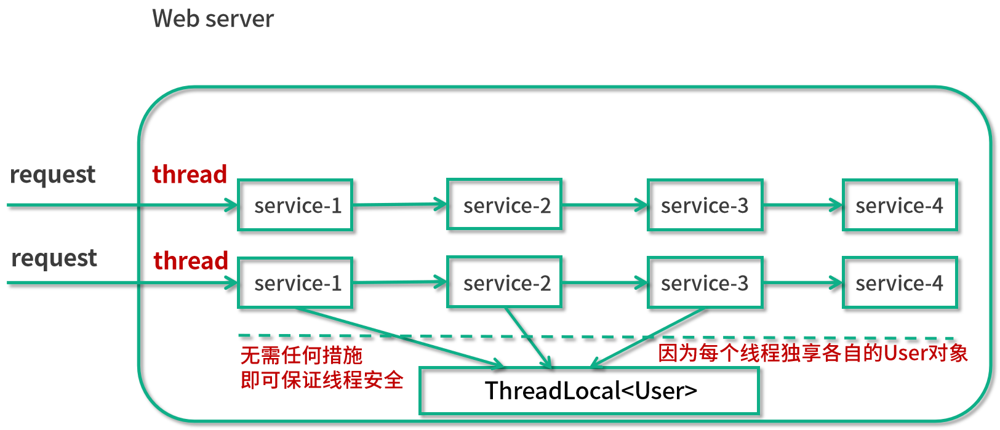
在这个图中可以看出，同样是多个线程同时去执行，但是这些线程同时去访问这个 ThreadLocal 并且能利用 ThreadLocal 拿到只属于自己的独享对象。这样的话，就无需任何额外的措施，保证了线程安全，因为每个线程是独享 user 对象的。代码如下所示：
public class ThreadLocalDemo07 {
public static void main(String[] args) {
new Service1().service1();
}
}
class Service1 {
public void service1() {
User user = new User("拉勾教育");
UserContextHolder.holder.set(user);
new Service2().service2();
}
}
class Service2 {
public void service2() {
User user = UserContextHolder.holder.get();
System.out.println("Service2拿到用户名：" + user.name);
new Service3().service3();
}
}
class Service3 {
public void service3() {
User user = UserContextHolder.holder.get();
System.out.println("Service3拿到用户名：" + user.name);
UserContextHolder.holder.remove();
}
}
class UserContextHolder {
public static ThreadLocal<User> holder = new ThreadLocal<>();
}
class User {
String name;
public User(String name) {
this.name = n
}
}
在这个代码中我们可以看出，我们有一个 UserContextHolder，里面保存了一个 ThreadLocal，在调用 Service1 的方法的时候，就往里面存入了 user 对象，而在后面去调用的时候，直接从里面用 get 方法取出来就可以了。没有参数层层传递的过程，非常的优雅、方便。
代码运行结果：
Service2拿到用户名：拉勾教育
Service3拿到用户名：拉勾教育
总结
下面我们进行总结。
本讲主要介绍了 ThreadLocal 的两个典型的使用场景。
场景1，ThreadLocal 用作保存每个线程独享的对象，为每个线程都创建一个副本，每个线程都只能修改自己所拥有的副本, 而不会影响其他线程的副本，这样就让原本在并发情况下，线程不安全的情况变成了线程安全的情况。
场景2，ThreadLocal 用作每个线程内需要独立保存信息的场景，供其他方法更方便得获取该信息，每个线程获取到的信息都可能是不一样的，前面执行的方法设置了信息后，后续方法可以通过 ThreadLocal 直接获取到，避免了传参。
45 ThreadLocal 是用来解决共享资源的多线程访问的问题吗？
本课时主要讲解一个问题：ThreadLocal 是不是用来解决共享资源的多线程访问的。
这是一个常见的面试问题，如果被问到了 ThreadLocal，则有可能在你介绍完它的作用、注意点等内容之后，再问你：ThreadLocal 是不是用来解决共享资源的多线程访问的呢？假如遇到了这样的问题，其思路一定要清晰。这里我给出一个参考答案。
面试时被问到应如何回答
这道题的答案很明确——不是，ThreadLocal 并不是用来解决共享资源问题的。虽然 ThreadLocal 确实可以用于解决多线程情况下的线程安全问题，但其资源并不是共享的，而是每个线程独享的。所以这道题其实是有一定陷阱成分在内的。
ThreadLocal 解决线程安全问题的时候，相比于使用“锁”而言，换了一个思路，把资源变成了各线程独享的资源，非常巧妙地避免了同步操作。具体而言，它可以在 initialValue 中 new 出自己线程独享的资源，而多个线程之间，它们所访问的对象本身是不共享的，自然就不存在任何并发问题。这是 ThreadLocal 解决并发问题的最主要思路。
如果我们把放到 ThreadLocal 中的资源用 static 修饰，让它变成一个共享资源的话，那么即便使用了 ThreadLocal，同样也会有线程安全问题。比如我们对第 44 讲中的例子进行改造，如果我们在 SimpleDateFormat 之前加上一个 static 关键字来修饰，并且把这个静态对象放到 ThreadLocal 中去存储的话，代码如下所示：
public class ThreadLocalStatic {
public static ExecutorService threadPool = Executors.newFixedThreadPool(16);
static SimpleDateFormat dateFormat = new SimpleDateFormat("mm:ss");
public static void main(String[] args) throws InterruptedException {
for (int i = 0; i < 1000; i++) {
int finalI = i;
threadPool.submit(new Runnable() {
@Override
public void run() {
String date = new ThreadLocalStatic().date(finalI);
System.out.println(date);
}
});
}
threadPool.shutdown();
}
public String date(int seconds) {
Date date = new Date(1000 * seconds);
SimpleDateFormat dateFormat = ThreadSafeFormatter.dateFormatThreadLocal.get();
return dateFormat.format(date);
}
}
class ThreadSafeFormatter {
public static ThreadLocal<SimpleDateFormat> dateFormatThreadLocal = new ThreadLocal<SimpleDateFormat>() {
@Override
protected SimpleDateFormat initialValue() {
return ThreadLocalStatic.dateFormat;
}
}
}
那么在多线程中去获取这个资源并且同时使用的话，同样会出现时间重复的问题，运行结果如下。
00:15
00:15
00:05
00:16
...
可以看出，00:15 被多次打印了，发生了线程安全问题。也就是说，如果我们需要放到 ThreadLocal 中的这个对象是共享的，是被 static 修饰的，那么此时其实根本就不需要用到 ThreadLocal，即使用了 ThreadLocal 并不能解决线程安全问题。
相反，我们对于这种共享的变量，如果想要保证它的线程安全，应该用其他的方法，比如说可以使用 synchronized 或者是加锁等其他的方法来解决线程安全问题，而不是使用 ThreadLocal，因为这不是 ThreadLocal 应该使用的场景。
这个问题回答到这里，可能会引申出下面这个问题。
ThreadLocal 和 synchronized 是什么关系
面试官可能会问：你既然说 ThreadLocal 和 synchronized 它们两个都能解决线程安全问题，那么 ThreadLocal 和 synchronized 是什么关系呢？
我们先说第一种情况。当 ThreadLocal 用于解决线程安全问题的时候，也就是把一个对象给每个线程都生成一份独享的副本的，在这种场景下，ThreadLocal 和 synchronized 都可以理解为是用来保证线程安全的手段。例如，在第 44 讲 SimpleDateFormat 的例子中，我们既使用了 synchronized 来达到目的，也使用了 ThreadLocal 作为实现方案。但是效果和实现原理不同：
- ThreadLocal 是通过让每个线程独享自己的副本，避免了资源的竞争。
- synchronized 主要用于临界资源的分配，在同一时刻限制最多只有一个线程能访问该资源。
相比于 ThreadLocal 而言，synchronized 的效率会更低一些，但是花费的内存也更少。在这种场景下，ThreadLocal 和 synchronized 虽然有不同的效果，不过都可以达到线程安全的目的。
但是对于 ThreadLocal 而言，它还有不同的使用场景。比如当 ThreadLocal 用于让多个类能更方便地拿到我们希望给每个线程独立保存这个信息的场景下时（比如每个线程都会对应一个用户信息，也就是 user 对象），在这种场景下，ThreadLocal 侧重的是避免传参，所以此时 ThreadLocal 和 synchronized 是两个不同维度的工具。
以上就是本课时的内容。
在本课时中，首先介绍了 ThreadLocal 是不是用来解决共享资源的多线程访问的问题的，答案是“不是”，因为对于 ThreadLocal 而言，每个线程中的资源并不共享；然后我们又介绍了 ThreadLocal 和 synchronized 的关系。
46 多个 ThreadLocal 在 Thread 中的 threadlocals 里是怎么存储的？
本课时我们主要分析一下在 Thread 中多个 ThreadLocal 是怎么存储的。
Thread、 ThreadLocal 及 ThreadLocalMap 三者之间的关系
在讲解本课时之前，先要搞清楚 Thread、 ThreadLocal 及 ThreadLocalMap 三者之间的关系。我们用最直观、最容易理解的图画的方式来看看它们三者的关系：

我们看到最左下角的 Thread 1，这是一个线程，它的箭头指向了 ThreadLocalMap 1，其要表达的意思是，每个 Thread 对象中都持有一个 ThreadLocalMap 类型的成员变量，在这里 Thread 1 所拥有的成员变量就是 ThreadLocalMap 1。
而这个 ThreadLocalMap 自身类似于是一个 Map，里面会有一个个 key value 形式的键值对。那么我们就来看一下它的 key 和 value 分别是什么。可以看到这个表格的左侧是 ThreadLocal 1、ThreadLocal 2…… ThreadLocal n，能看出这里的 key 就是 ThreadLocal 的引用。
而在表格的右侧是一个一个的 value，这就是我们希望 ThreadLocal 存储的内容，例如 user 对象等。
这里需要重点看到它们的数量对应关系：一个 Thread 里面只有一个ThreadLocalMap ，而在一个 ThreadLocalMap 里面却可以有很多的 ThreadLocal，每一个 ThreadLocal 都对应一个 value。因为一个 Thread 是可以调用多个 ThreadLocal 的，所以 Thread 内部就采用了 ThreadLocalMap 这样 Map 的数据结构来存放 ThreadLocal 和 value。
通过这张图片，我们就可以搞清楚 Thread、 ThreadLocal 及 ThreadLocalMap 三者在宏观上的关系了。
源码分析
知道了它们的关系之后，我们再来进行源码分析，来进一步地看到它们内部的实现。
get 方法
首先我们来看一下 get 方法，源码如下所示：
public T get() {
//获取到当前线程
Thread t = Thread.currentThread();
//获取到当前线程内的 ThreadLocalMap 对象，每个线程内都有一个 ThreadLocalMap 对象
ThreadLocalMap map = getMap(t);
if (map != null) {
//获取 ThreadLocalMap 中的 Entry 对象并拿到 Value
ThreadLocalMap.Entry e = map.getEntry(this);
if (e != null) {
@SuppressWarnings("unchecked")
T result = (T)e.value;
return result;
}
}
//如果线程内之前没创建过 ThreadLocalMap，就创建
return setInitialValue();
}
这是 ThreadLocal 的 get 方法，可以看出它利用了 Thread.currentThread 来获取当前线程的引用，并且把这个引用传入到了 getMap 方法里面，来拿到当前线程的 ThreadLocalMap。
然后就是一个 if ( map != null ) 条件语句，那我们先来看看 if (map == null) 的情况，如果 map == null，则说明之前这个线程中没有创建过 ThreadLocalMap，于是就去调用 setInitialValue 来创建；如果 map != null，我们就应该通过 this 这个引用（也就是当前的 ThreadLocal 对象的引用）来获取它所对应的 Entry，同时再通过这个 Entry 拿到里面的 value，最终作为结果返回。
值得注意的是，这里的 ThreadLocalMap 是保存在线程 Thread 类中的，而不是保存在 ThreadLocal 中的。
getMap 方法
下面我们来看一下 getMap 方法，源码如下所示：
ThreadLocalMap getMap(Thread t) {
return t.threadLocals;
}
可以看到，这个方法很清楚地表明了 Thread 和 ThreadLocalMap 的关系，可以看出 ThreadLocalMap 是线程的一个成员变量。这个方法的作用就是获取到当前线程内的 ThreadLocalMap 对象，每个线程都有 ThreadLocalMap 对象，而这个对象的名字就叫作 threadLocals，初始值为 null，代码如下：
ThreadLocal.ThreadLocalMap threadLocals = null;
set 方法
下面我们再来看一下 set 方法，源码如下所示：
public void set(T value) {
Thread t = Thread.currentThread();
ThreadLocalMap map = getMap(t);
if (map != null)
map.set(this, value);
else
createMap(t, value);
}
set 方法的作用是把我们想要存储的 value 给保存进去。可以看出，首先，它还是需要获取到当前线程的引用，并且利用这个引用来获取到 ThreadLocalMap ；然后，如果 map == null 则去创建这个 map，而当 map != null 的时候就利用 map.set 方法，把 value 给 set 进去。
可以看出，map.set(this, value) 传入的这两个参数中，第一个参数是 this，就是当前 ThreadLocal 的引用，这也再次体现了，在 ThreadLocalMap 中，它的 key 的类型是 ThreadLocal；而第二个参数就是我们所传入的 value，这样一来就可以把这个键值对保存到 ThreadLocalMap 中去了。
ThreadLocalMap 类，也就是 Thread.threadLocals
下面我们来看一下 ThreadLocalMap 这个类，下面这段代码截取自定义在 ThreadLocal 类中的 ThreadLocalMap 类：
static class ThreadLocalMap {
static class Entry extends WeakReference<ThreadLocal<?>> {
/** The value associated with this ThreadLocal. */
Object value;
Entry(ThreadLocal<?> k, Object v) {
super(k);
value = v;
}
}
private Entry[] table;
//...
}
ThreadLocalMap 类是每个线程 Thread 类里面的一个成员变量，其中最重要的就是截取出的这段代码中的 Entry 内部类。在 ThreadLocalMap 中会有一个 Entry 类型的数组，名字叫 table。我们可以把 Entry 理解为一个 map，其键值对为：
- 键，当前的 ThreadLocal；
- 值，实际需要存储的变量，比如 user 用户对象或者 simpleDateFormat 对象等。
ThreadLocalMap 既然类似于 Map，所以就和 HashMap 一样，也会有包括 set、get、rehash、resize 等一系列标准操作。但是，虽然思路和 HashMap 是类似的，但是具体实现会有一些不同。
比如其中一个不同点就是，我们知道 HashMap 在面对 hash 冲突的时候，采用的是拉链法。它会先把对象 hash 到一个对应的格子中，如果有冲突就用链表的形式往下链，如下图所示：
但是 ThreadLocalMap 解决 hash 冲突的方式是不一样的，它采用的是线性探测法。如果发生冲突，并不会用链表的形式往下链，而是会继续寻找下一个空的格子。这是 ThreadLocalMap 和 HashMap 在处理冲突时不一样的点。
以上就是本节课的内容。
在本节课中，我们主要分析了 Thread、 ThreadLocal 和 ThreadLocalMap 这三个非常重要的类的关系。用图画的方式表明了它们之间的关系：一个 Thread 有一个 ThreadLocalMap，而 ThreadLocalMap 的 key 就是一个个的 ThreadLocal，它们就是用这样的关系来存储并维护内容的。之后我们对于 ThreadLocal 的一些重要方法进行了源码分析。
47 内存泄漏——为何每次用完 ThreadLocal 都要调用 remove()？
在本课时我们主要讲解为什么用完 ThreadLocal 之后都要求调用 remove 方法？
首先，我们要知道这个事情和内存泄漏有关，所以就让我们先来看一下什么是内存泄漏。
什么是内存泄漏
内存泄漏指的是，当某一个对象不再有用的时候，占用的内存却不能被回收，这就叫作内存泄漏。
因为通常情况下，如果一个对象不再有用，那么我们的垃圾回收器 GC，就应该把这部分内存给清理掉。这样的话，就可以让这部分内存后续重新分配到其他的地方去使用；否则，如果对象没有用，但一直不能被回收，这样的垃圾对象如果积累的越来越多，则会导致我们可用的内存越来越少，最后发生内存不够用的 OOM 错误。
下面我们来分析一下，在 ThreadLocal 中这样的内存泄漏是如何发生的。
Key 的泄漏
在上一讲中，我们分析了 ThreadLocal 的内部结构，知道了每一个 Thread 都有一个 ThreadLocal.ThreadLocalMap 这样的类型变量，该变量的名字叫作 threadLocals。线程在访问了 ThreadLocal 之后，都会在它的 ThreadLocalMap 里面的 Entry 中去维护该 ThreadLocal 变量与具体实例的映射。
我们可能会在业务代码中执行了 ThreadLocal instance = null 操作，想清理掉这个 ThreadLocal 实例，但是假设我们在 ThreadLocalMap 的 Entry 中强引用了 ThreadLocal 实例，那么，虽然在业务代码中把 ThreadLocal 实例置为了 null，但是在 Thread 类中依然有这个引用链的存在。
GC 在垃圾回收的时候会进行可达性分析，它会发现这个 ThreadLocal 对象依然是可达的，所以对于这个 ThreadLocal 对象不会进行垃圾回收，这样的话就造成了内存泄漏的情况。
JDK 开发者考虑到了这一点，所以 ThreadLocalMap 中的 Entry 继承了 WeakReference 弱引用，代码如下所示：
static class Entry extends WeakReference<ThreadLocal<?>> {
/** The value associated with this ThreadLocal. */
Object value;
Entry(ThreadLocal<?> k, Object v) {
super(k);
value = v;
}
}
可以看到，这个 Entry 是 extends WeakReference。弱引用的特点是，如果这个对象只被弱引用关联，而没有任何强引用关联，那么这个对象就可以被回收，所以弱引用不会阻止 GC。因此，这个弱引用的机制就避免了 ThreadLocal 的内存泄露问题。
这就是为什么 Entry 的 key 要使用弱引用的原因。
Value 的泄漏
可是，如果我们继续研究的话会发现，虽然 ThreadLocalMap 的每个 Entry 都是一个对 key 的弱引用，但是这个 Entry 包含了一个对 value 的强引用，还是刚才那段代码：
static class Entry extends WeakReference<ThreadLocal<?>> {
/** The value associated with this ThreadLocal. */
Object value;
Entry(ThreadLocal<?> k, Object v) {
super(k);
value = v;
}
}
可以看到，value = v 这行代码就代表了强引用的发生。
正常情况下，当线程终止，key 所对应的 value 是可以被正常垃圾回收的，因为没有任何强引用存在了。但是有时线程的生命周期是很长的，如果线程迟迟不会终止，那么可能 ThreadLocal 以及它所对应的 value 早就不再有用了。在这种情况下，我们应该保证它们都能够被正常的回收。
为了更好地分析这个问题，我们用下面这张图来看一下具体的引用链路（实线代表强引用，虚线代表弱引用）：

可以看到，左侧是引用栈，栈里面有一个 ThreadLocal 的引用和一个线程的引用，右侧是我们的堆，在堆中是对象的实例。
我们重点看一下下面这条链路：Thread Ref → Current Thread → ThreadLocalMap → Entry → Value → 可能泄漏的value实例。
这条链路是随着线程的存在而一直存在的，如果线程执行耗时任务而不停止，那么当垃圾回收进行可达性分析的时候，这个 Value 就是可达的，所以不会被回收。但是与此同时可能我们已经完成了业务逻辑处理，不再需要这个 Value 了，此时也就发生了内存泄漏问题。
JDK 同样也考虑到了这个问题，在执行 ThreadLocal 的 set、remove、rehash 等方法时，它都会扫描 key 为 null 的 Entry，如果发现某个 Entry 的 key 为 null，则代表它所对应的 value 也没有作用了，所以它就会把对应的 value 置为 null，这样，value 对象就可以被正常回收了。
但是假设 ThreadLocal 已经不被使用了，那么实际上 set、remove、rehash 方法也不会被调用，与此同时，如果这个线程又一直存活、不终止的话，那么刚才的那个调用链就一直存在，也就导致了 value 的内存泄漏。
如何避免内存泄露
分析完这个问题之后，该如何解决呢？解决方法就是我们本课时的标题：调用 ThreadLocal 的 remove 方法。调用这个方法就可以删除对应的 value 对象，可以避免内存泄漏。
我们来看一下 remove 方法的源码：
public void remove() {
ThreadLocalMap m = getMap(Thread.currentThread());
if (m != null)
m.remove(this);
}
可以看出，它是先获取到 ThreadLocalMap 这个引用的，并且调用了它的 remove 方法。这里的 remove 方法可以把 key 所对应的 value 给清理掉，这样一来，value 就可以被 GC 回收了。
所以，在使用完了 ThreadLocal 之后，我们应该手动去调用它的 remove 方法，目的是防止内存泄漏的发生。
48 Callable 和 Runnable 的不同？
你好，欢迎来到第 48 课时，在本课时我们将讲解 Callable 和 Runnable 的不同。
为什么需要 Callable？Runnable 的缺陷
先来看一下，为什么需要 Callable？要想回答这个问题，我们先来看看现有的 Runnable 有哪些缺陷？
不能返回一个返回值
第一个缺陷，对于 Runnable 而言，它不能返回一个返回值，虽然可以利用其他的一些办法，比如在 Runnable 方法中写入日志文件或者修改某个共享的对象的办法，来达到保存线程执行结果的目的，但这种解决问题的行为千曲百折，属于曲线救国，效率着实不高。
实际上，在很多情况下执行一个子线程时，我们都希望能得到执行的任务的结果，也就是说，我们是需要得到返回值的，比如请求网络、查询数据库等。可是 Runnable 不能返回一个返回值，这是它第一个非常严重的缺陷。
不能抛出 checked Exception
第二个缺陷就是不能抛出 checked Exception，如下面这段代码所示：
public class RunThrowException {
/**
* 普通方法内可以 throw 异常，并在方法签名上声明 throws
*/
public void normalMethod() throws Exception {
throw new IOException();
}
Runnable runnable = new Runnable() {
/**
* run方法上无法声明 throws 异常，且run方法内无法 throw 出 checked Exception，除非使用try catch进行处理
*/
@Override
public void run() {
try {
throw new IOException();
} catch (IOException e) {
e.printStackTrace();
}
}
}
}
在这段代码中，有两个方法，第一个方法是一个普通的方法，叫作 normalMethod，可以看到，在它的方法签名中有 throws Exception，并且在它的方法内也 throw 了一个 new IOException()。
然后在下面的的代码中，我们新建了一个 Runnable 对象，同时重写了它的 run 方法，我们没有办法在这个 run 方法的方法签名上声明 throws 一个异常出来。同时，在这个 run 方法里面也没办法 throw 一个 checked Exception，除非如代码所示，用 try catch 包裹起来，但是如果不用 try catch 是做不到的。
这就是对于 Runnable 而言的两个重大缺陷。
为什么有这样的缺陷
为什么有这样的缺陷呢？我们来看一下 Runnable 接口的定义：
public interface Runnable {
public abstract void run();
}
代码比较短小，Runnable 是一个 interface，并且里面只有一个方法，叫作 public abstract void run()。这个方法已经规定了 run() 方法的返回类型是 void，而且这个方法没有声明抛出任何异常。所以，当实现并重写这个方法时，我们既不能改返回值类型，也不能更改对于异常抛出的描述，因为在实现方法的时候，语法规定是不允许对这些内容进行修改的。
回顾课程之前小节的众多代码，从来没有出现过可以在 run 方法中返回一个返回值这样的情况。
Runnable 为什么设计成这样
我们再深入思考一层，为什么 Java 要把它设计成这个样子呢？
假设 run() 方法可以返回返回值，或者可以抛出异常，也无济于事，因为我们并没有办法在外层捕获并处理，这是因为调用 run() 方法的类（比如 Thread 类和线程池）是 Java 直接提供的，而不是我们编写的。
所以就算它能有一个返回值，我们也很难把这个返回值利用到，如果真的想弥补 Runnable 的这两个缺陷，可以用下面的补救措施——使用 Callable。
Callable 接口
Callable 是一个类似于 Runnable 的接口，实现 Callable 接口的类和实现 Runnable 接口的类都是可以被其他线程执行的任务。 我们看一下 Callable 的源码：
public interface Callable<V> {
V call() throws Exception;
}
可以看出它也是一个 interface，并且它的 call 方法中已经声明了 throws Exception，前面还有一个 V 泛型的返回值，这就和之前的 Runnable 有很大的区别。实现 Callable 接口，就要实现 call 方法，这个方法的返回值是泛型 V，如果把 call 中计算得到的结果放到这个对象中，就可以利用 call 方法的返回值来获得子线程的执行结果了。
Callable 和 Runnable 的不同之处
最后总结一下 Callable 和 Runnable 的不同之处：
- 方法名，Callable 规定的执行方法是 call()，而 Runnable 规定的执行方法是 run()；
- 返回值，Callable 的任务执行后有返回值，而 Runnable 的任务执行后是没有返回值的；
- 抛出异常，call() 方法可抛出异常，而 run() 方法是不能抛出受检查异常的；
- 和 Callable 配合的有一个 Future 类，通过 Future 可以了解任务执行情况，或者取消任务的执行，还可获取任务执行的结果，这些功能都是 Runnable 做不到的，Callable 的功能要比 Runnable 强大。
以上就是本课时的内容了。首先介绍了 Runnable 的两个缺陷，第一个是没有返回值，第二个是不能抛出受检查异常；然后分析了为什么会有这样的缺陷，以及为什么设计成这样；接下来分析了 Callable 接口，并且把 Callable 接口和 Runnable 接口的区别进行了对比和总结。
49 Future 的主要功能是什么？
在本课时我们将讲解 Future 的主要功能是什么。
Future 类
Future 的作用
Future 最主要的作用是，比如当做一定运算的时候，运算过程可能比较耗时，有时会去查数据库，或是繁重的计算，比如压缩、加密等，在这种情况下，如果我们一直在原地等待方法返回，显然是不明智的，整体程序的运行效率会大大降低。我们可以把运算的过程放到子线程去执行，再通过 Future 去控制子线程执行的计算过程，最后获取到计算结果。这样一来就可以把整个程序的运行效率提高，是一种异步的思想。
Callable 和 Future 的关系
接下来我们介绍下 Callable 和 Future 的关系，前面讲过，Callable 接口相比于 Runnable 的一大优势是可以有返回结果，那这个返回结果怎么获取呢？就可以用 Future 类的 get 方法来获取 。因此，Future 相当于一个存储器，它存储了 Callable 的 call 方法的任务结果。除此之外，我们还可以通过 Future 的 isDone 方法来判断任务是否已经执行完毕了，还可以通过 cancel 方法取消这个任务，或限时获取任务的结果等，总之 Future 的功能比较丰富。有了这样一个从宏观上的概念之后，我们就来具体看一下 Future 类的主要方法。
Future 的方法和用法
首先看一下 Future 接口的代码，一共有 5 个方法，代码如下所示：
public interface Future<V> {
boolean cancel(boolean mayInterruptIfRunning);
boolean isCancelled();
boolean isDone();
V get() throws InterruptedException, ExecutionException;
V get(long timeout, TimeUnit unit)
throws InterruptedException, ExecutionException, TimeoutExceptio
}
其中，第 5 个方法是对第 4 个方法的重载，方法名一样，但是参数不一样。
get() 方法：获取结果
get 方法最主要的作用就是获取任务执行的结果，该方法在执行时的行为取决于 Callable 任务的状态，可能会发生以下 5 种情况。
（1）最常见的就是当执行 get 的时候，任务已经执行完毕了，可以立刻返回，获取到任务执行的结果。
（2）任务还没有结果，这是有可能的，比如我们往线程池中放一个任务，线程池中可能积压了很多任务，还没轮到我去执行的时候，就去 get 了，在这种情况下，相当于任务还没开始；还有一种情况是任务正在执行中，但是执行过程比较长，所以我去 get 的时候，它依然在执行的过程中。无论是任务还没开始或在进行中，我们去调用 get 的时候，都会把当前的线程阻塞，直到任务完成再把结果返回回来。
（3）任务执行过程中抛出异常，一旦这样，我们再去调用 get 的时候，就会抛出 ExecutionException 异常，不管我们执行 call 方法时里面抛出的异常类型是什么，在执行 get 方法时所获得的异常都是 ExecutionException。
（4）任务被取消了，如果任务被取消，我们用 get 方法去获取结果时则会抛出 CancellationException。
（5）任务超时，我们知道 get 方法有一个重载方法，那就是带延迟参数的，调用了这个带延迟参数的 get 方法之后，如果 call 方法在规定时间内正常顺利完成了任务，那么 get 会正常返回；但是如果到达了指定时间依然没有完成任务，get 方法则会抛出 TimeoutException，代表超时了。
下面用图的形式让过程更清晰：

在图中，右侧是一个线程池，线程池中有一些线程来执行任务。重点在图的左侧，可以看到有一个 submit 方法，该方法往线程池中提交了一个 Task，这个 Task 实现了 Callable 接口，当我们去给线程池提交这个任务的时候，调用 submit 方法会立刻返回一个 Future 类型的对象，这个对象目前内容是空的，其中还不包含计算结果，因为此时计算还没有完成。
当计算一旦完成时，也就是当我们可以获取结果的时候，线程池便会把这个结果填入到之前返回的 Future 中去（也就是 f 对象），而不是在此时新建一个新的 Future。这时就可以利用 Future 的 get 方法来获取到任务的执行结果了。
我们来看一个代码示例：
/**
* 描述： 演示一个 Future 的使用方法
*/
public class OneFuture {
public static void main(String[] args) {
ExecutorService service = Executors.newFixedThreadPool(10);
Future<Integer> future = service.submit(new CallableTask());
try {
System.out.println(future.get());
} catch (InterruptedException e) {
e.printStackTrace();
} catch (ExecutionException e) {
e.printStackTrace();
}
service.shutdown();
}
static class CallableTask implements Callable<Integer> {
@Override
public Integer call() throws Exception {
Thread.sleep(3000);
return new Random().nextInt();
}
}
}
在这段代码中，main 方法新建了一个 10 个线程的线程池，并且用 submit 方法把一个任务提交进去。这个任务如代码的最下方所示，它实现了 Callable 接口，它所做的内容就是先休眠三秒钟，然后返回一个随机数。接下来我们就直接把 future.get 结果打印出来，其结果是正常打印出一个随机数，比如 100192 等。这段代码对应了我们刚才那个图示的讲解，这也是 Future 最常用的一种用法。
isDone() 方法：判断是否执行完毕
下面我们再接着看看 Future 的一些其他方法，比如说 isDone() 方法，该方法是用来判断当前这个任务是否执行完毕了。
需要注意的是，这个方法如果返回 true 则代表执行完成了；如果返回 false 则代表还没完成。但这里如果返回 true，并不代表这个任务是成功执行的，比如说任务执行到一半抛出了异常。那么在这种情况下，对于这个 isDone 方法而言，它其实也是会返回 true 的，因为对它来说，虽然有异常发生了，但是这个任务在未来也不会再被执行，它确实已经执行完毕了。所以 isDone 方法在返回 true 的时候，不代表这个任务是成功执行的，只代表它执行完毕了。
我们用一个代码示例来看一看，代码如下所示：
public class GetException {
public static void main(String[] args) {
ExecutorService service = Executors.newFixedThreadPool(20);
Future<Integer> future = service.submit(new CallableTask());
try {
for (int i = 0; i < 5; i++) {
System.out.println(i);
Thread.sleep(500);
}
System.out.println(future.isDone());
future.get();
} catch (InterruptedException e) {
e.printStackTrace();
} catch (ExecutionException e) {
e.printStackTrace();
}
}
static class CallableTask implements Callable<Integer> {
@Override
public Integer call() throws Exception {
throw new IllegalArgumentException("Callable抛出异常");
}
}
}
在这段代码中，可以看到有一个线程池，并且往线程池中去提交任务，这个任务会直接抛出一个异常。那么接下来我们就用一个 for 循环去休眠，同时让它慢慢打印出 0 ~ 4 这 5 个数字，这样做的目的是起到了一定的延迟作用。在这个执行完毕之后，再去调用 isDone() 方法，并且把这个结果打印出来，然后再去调用 future.get()。
这段代码的执行结果是这样的：
0
1
2
3
4
true
java.util.concurrent.ExecutionException: java.lang.IllegalArgumentException: Callable抛出异常
...
这里要注意，我们知道这个异常实际上是在任务刚被执行的时候就抛出了，因为我们的计算任务中是没有其他逻辑的，只有抛出异常。我们再来看，控制台是什么时候打印出异常的呢？它是在 true 打印完毕后才打印出异常信息的，也就是说，在调用 get 方法时打印出的异常。
这段代码证明了三件事情：第一件事情，即便任务抛出异常，isDone 方法依然会返回 true；第二件事情，虽然抛出的异常是 IllegalArgumentException，但是对于 get 而言，它抛出的异常依然是 ExecutionException；第三个事情，虽然在任务执行一开始时就抛出了异常，但是真正要等到我们执行 get 的时候，才看到了异常。
cancel 方法：取消任务的执行
下面我们再来看一下 cancel 方法，如果不想执行某个任务了，则可以使用 cancel 方法，会有以下三种情况：
第一种情况最简单，那就是当任务还没有开始执行时，一旦调用 cancel，这个任务就会被正常取消，未来也不会被执行，那么 cancel 方法返回 true。
第二种情况也比较简单。如果任务已经完成，或者之前已经被取消过了，那么执行 cancel 方法则代表取消失败，返回 false。因为任务无论是已完成还是已经被取消过了，都不能再被取消了。
第三种情况比较特殊，就是这个任务正在执行，这个时候执行 cancel 方法是不会直接取消这个任务的，而是会根据我们传入的参数做判断。cancel 方法是必须传入一个参数，该参数叫作 mayInterruptIfRunning，它是什么含义呢？如果传入的参数是 true，执行任务的线程就会收到一个中断的信号，正在执行的任务可能会有一些处理中断的逻辑，进而停止，这个比较好理解。如果传入的是 false 则就代表不中断正在运行的任务，也就是说，本次 cancel 不会有任何效果，同时 cancel 方法会返回 false。
那么如何选择传入 true 还是 false 呢？
传入 true 适用的情况是，明确知道这个任务能够处理中断。
传入 false 适用于什么情况呢？
- 如果我们明确知道这个线程不能处理中断，那应该传入 false。
- 我们不知道这个任务是否支持取消（是否能响应中断），因为在大多数情况下代码是多人协作的，对于这个任务是否支持中断，我们不一定有十足的把握，那么在这种情况下也应该传入 false。
- 如果这个任务一旦开始运行，我们就希望它完全的执行完毕。在这种情况下，也应该传入 false。
这就是传入 true 和 false 的不同含义和选择方法。
isCancelled() 方法：判断是否被取消
最后一个方法是 isCancelled 方法，判断是否被取消，它和 cancel 方法配合使用，比较简单。
以上就是关于 Future 的主要方法的介绍了。
用 FutureTask 来创建 Future
除了用线程池的 submit 方法会返回一个 future 对象之外，同样还可以用 FutureTask 来获取 Future 类和任务的结果。
FutureTask 首先是一个任务（Task），然后具有 Future 接口的语义，因为它可以在将来（Future）得到执行的结果。
我们来看一下 FutureTask 的代码实现：
public class FutureTask<V> implements RunnableFuture<V>{
...
}
可以看到，它实现了一个接口，这个接口叫作 RunnableFuture。我们再来看一下 RunnableFuture 接口的代码实现：
public interface RunnableFuture<V> extends Runnable, Future<V> {
void run();
}
可以看出，它是 extends Runnable 和 Future 这两个接口的，它们的关系如下图所示：

既然 RunnableFuture 继承了 Runnable 接口和 Future 接口，而 FutureTask 又实现了 RunnableFuture 接口，所以 FutureTask 既可以作为 Runnable 被线程执行，又可以作为 Future 得到 Callable 的返回值。
典型用法是，把 Callable 实例当作 FutureTask 构造函数的参数，生成 FutureTask 的对象，然后把这个对象当作一个 Runnable 对象，放到线程池中或另起线程去执行，最后还可以通过 FutureTask 获取任务执行的结果。
下面我们就用代码来演示一下：
/**
* 描述： 演示 FutureTask 的用法
*/
public class FutureTaskDemo {
public static void main(String[] args) {
Task task = new Task();
FutureTask<Integer> integerFutureTask = new FutureTask<>(task);
new Thread(integerFutureTask).start();
try {
System.out.println("task运行结果："+integerFutureTask.get());
} catch (InterruptedException e) {
e.printStackTrace();
} catch (ExecutionException e) {
e.printStackTrace();
}
}
}
class Task implements Callable<Integer> {
@Override
public Integer call() throws Exception {
System.out.println("子线程正在计算");
int sum = 0;
for (int i = 0; i < 100; i++) {
sum += i;
}
return sum;
}
}
在这段代码中可以看出，首先创建了一个实现了 Callable 接口的 Task，然后把这个 Task 实例传入到 FutureTask 的构造函数中去，创建了一个 FutureTask 实例，并且把这个实例当作一个 Runnable 放到 new Thread() 中去执行，最后再用 FutureTask 的 get 得到结果，并打印出来。
执行结果是 4950，正是任务里 0+1+2+...+99 的结果。
总结
最后对本课时进行一下总结，在本课时中，我们首先在宏观上讲解了 Future 的作用，然后讲解了 Callable 和 Future 的关系，接着对于 Future 的各个方法进行了详细介绍，最后还给出了 FutureTask 这种方法来创建 Future 的用法。
50 使用 Future 有哪些注意点？Future 产生新的线程了吗？
在本课时我们将讲解使用 Future 有哪些注意点，以及 Future 产生新的线程了吗？
Future 的注意点
1. 当 for 循环批量获取 Future 的结果时容易 block，get 方法调用时应使用 timeout 限制
对于 Future 而言，第一个注意点就是，当 for 循环批量获取 Future 的结果时容易 block，在调用 get 方法时，应该使用 timeout 来限制。
下面我们具体看看这是一个什么情况。
首先，假设一共有四个任务需要执行，我们都把它放到线程池中，然后它获取的时候是按照从 1 到 4 的顺序，也就是执行 get() 方法来获取的，代码如下所示：
public class FutureDemo {
public static void main(String[] args) {
//创建线程池
ExecutorService service = Executors.newFixedThreadPool(10);
//提交任务，并用 Future 接收返回结果
ArrayList<Future> allFutures = new ArrayList<>();
for (int i = 0; i < 4; i++) {
Future<String> future;
if (i == 0 || i == 1) {
future = service.submit(new SlowTask());
} else {
future = service.submit(new FastTask());
}
allFutures.add(future);
}
for (int i = 0; i < 4; i++) {
Future<String> future = allFutures.get(i);
try {
String result = future.get();
System.out.println(result);
} catch (InterruptedException e) {
e.printStackTrace();
} catch (ExecutionException e) {
e.printStackTrace();
}
}
service.shutdown();
}
static class SlowTask implements Callable<String> {
@Override
public String call() throws Exception {
Thread.sleep(5000);
return "速度慢的任务";
}
}
static class FastTask implements Callable<String> {
@Override
public String call() throws Exception {
return "速度快的任务";
}
}
}
可以看出，在代码中我们新建了线程池，并且用一个 list 来保存 4 个 Future。其中，前两个 Future 所对应的任务是慢任务，也就是代码下方的 SlowTask，而后两个 Future 对应的任务是快任务。慢任务在执行的时候需要 5 秒钟的时间才能执行完毕，而快任务很快就可以执行完毕，几乎不花费时间。
在提交完这 4 个任务之后，我们用 for 循环对它们依次执行 get 方法，来获取它们的执行结果，然后再把这个结果打印出来。
执行结果如下：
速度慢的任务
速度慢的任务
速度快的任务
速度快的任务
可以看到，这个执行结果是打印 4 行语句，前面两个是速度慢的任务，后面两个是速度快的任务。虽然结果是正确的，但实际上在执行的时候会先等待 5 秒，然后再很快打印出这 4 行语句。

这里有一个问题，即第三个的任务量是比较小的，它可以很快返回结果，紧接着第四个任务也会返回结果。但是由于前两个任务速度很慢，所以我们在利用 get 方法执行时，会卡在第一个任务上。也就是说，虽然此时第三个和第四个任务很早就得到结果了，但我们在此时使用这种 for 循环的方式去获取结果，依然无法及时获取到第三个和第四个任务的结果。直到 5 秒后，第一个任务出结果了，我们才能获取到，紧接着也可以获取到第二个任务的结果，然后才轮到第三、第四个任务。
假设由于网络原因，第一个任务可能长达 1 分钟都没办法返回结果，那么这个时候，我们的主线程会一直卡着，影响了程序的运行效率。
此时我们就可以用 Future 的带超时参数的 get(long timeout, TimeUnit unit) 方法来解决这个问题。这个方法的作用是，如果在限定的时间内没能返回结果的话，那么便会抛出一个 TimeoutException 异常，随后就可以把这个异常捕获住，或者是再往上抛出去，这样就不会一直卡着了。
2. Future 的生命周期不能后退
Future 的生命周期不能后退，一旦完成了任务，它就永久停在了“已完成”的状态，不能从头再来，也不能让一个已经完成计算的 Future 再次重新执行任务。
这一点和线程、线程池的状态是一样的，线程和线程池的状态也是不能后退的。关于线程的状态和流转路径，第 03 讲已经讲过了，如图所示。 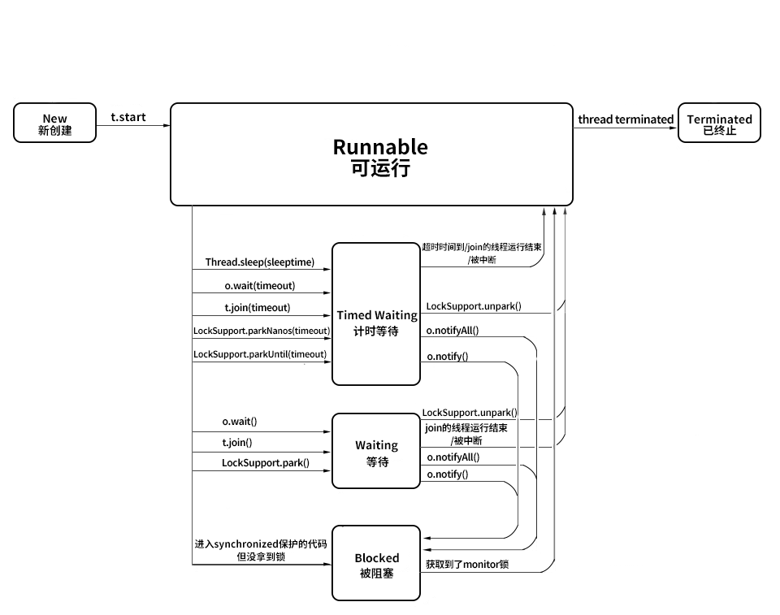
这个图也是我们当时讲解所用的图，如果有些遗忘，可以回去复习一下当时的内容。这一讲，我推荐你采用看视频的方式，因为视频中会把各个路径都标明清楚，看起来会更加清晰。
Future 产生新的线程了吗
最后我们再来回答这个问题：Future 是否产生新的线程了？
有一种说法是，除了继承 Thread 类和实现 Runnable 接口之外，还有第三种产生新线程的方式，那就是采用 Callable 和 Future，这叫作有返回值的创建线程的方式。这种说法是不正确的。
其实 Callable 和 Future 本身并不能产生新的线程，它们需要借助其他的比如 Thread 类或者线程池才能执行任务。例如，在把 Callable 提交到线程池后，真正执行 Callable 的其实还是线程池中的线程，而线程池中的线程是由 ThreadFactory 产生的，这里产生的新线程与 Callable、Future 都没有关系，所以 Future 并没有产生新的线程。
以上就是本讲的内容了。首先介绍了 Future 的两个注意点：第一个，在 get 的时候应当使用超时限制；第二个，Future 生命周期不能后退；然后又讲解了 Callable 和 Future 实际上并不是新建线程的第三种方式。
51 如何利用 CompletableFuture 实现“旅游平台”问题？
本课时我们主要讲解如何利用 CompletableFuture 实现旅游平台问题。
旅游平台问题
什么是旅游平台问题呢？如果想要搭建一个旅游平台，经常会有这样的需求，那就是用户想同时获取多家航空公司的航班信息。比如，从北京到上海的机票钱是多少？有很多家航空公司都有这样的航班信息，所以应该把所有航空公司的航班、票价等信息都获取到，然后再聚合。由于每个航空公司都有自己的服务器，所以分别去请求它们的服务器就可以了，比如请求国航、海航、东航等，如下图所示：
串行
一种比较原始的方式是用串行的方式来解决这个问题。

比如我们想获取价格，要先去访问国航，在这里叫作 website 1，然后再去访问海航 website 2，以此类推。当每一个请求发出去之后，等它响应回来以后，我们才能去请求下一个网站，这就是串行的方式。
这样做的效率非常低下，比如航空公司比较多，假设每个航空公司都需要 1 秒钟的话，那么用户肯定等不及，所以这种方式是不可取的。
并行
接下来我们就对刚才的思路进行改进，最主要的思路就是把串行改成并行，如下图所示：

我们可以并行地去获取这些机票信息，然后再把机票信息给聚合起来，这样的话，效率会成倍的提高。
这种并行虽然提高了效率，但也有一个缺点，那就是会“一直等到所有请求都返回”。如果有一个网站特别慢，那么你不应该被那个网站拖累，比如说某个网站打开需要二十秒，那肯定是等不了这么长时间的，所以我们需要一个功能，那就是有超时的获取。
有超时的并行获取
下面我们就来看看下面这种有超时的并行获取的情况。
在这种情况下，就属于有超时的并行获取，同样也在并行的去请求各个网站信息。但是我们规定了一个时间的超时，比如 3 秒钟，那么到 3 秒钟的时候如果都已经返回了那当然最好，把它们收集起来即可；但是如果还有些网站没能及时返回，我们就把这些请求给忽略掉，这样一来用户体验就比较好了，它最多只需要等固定的 3 秒钟就能拿到信息，虽然拿到的可能不是最全的，但是总比一直等更好。
想要实现这个目标有几种实现方案，我们一个一个的来看看。
线程池的实现
第一个实现方案是用线程池，我们来看一下代码。
public class ThreadPoolDemo {
ExecutorService threadPool = Executors.newFixedThreadPool(3);
public static void main(String[] args) throws InterruptedException {
ThreadPoolDemo threadPoolDemo = new ThreadPoolDemo();
System.out.println(threadPoolDemo.getPrices());
}
private Set<Integer> getPrices() throws InterruptedException {
Set<Integer> prices = Collections.synchronizedSet(new HashSet<Integer>());
threadPool.submit(new Task(123, prices));
threadPool.submit(new Task(456, prices));
threadPool.submit(new Task(789, prices));
Thread.sleep(3000);
return prices;
}
private class Task implements Runnable {
Integer productId;
Set<Integer> prices;
public Task(Integer productId, Set<Integer> prices) {
this.productId = productId;
this.prices = prices;
}
@Override
public void run() {
int price=0;
try {
Thread.sleep((long) (Math.random() * 4000));
price= (int) (Math.random() * 4000);
} catch (InterruptedException e) {
e.printStackTrace();
}
prices.add(price);
}
}
}
在代码中，新建了一个线程安全的 Set，它是用来存储各个价格信息的，把它命名为 Prices，然后往线程池中去放任务。线程池是在类的最开始时创建的，是一个固定 3 线程的线程池。而这个任务在下方的 Task 类中进行了描述，在这个 Task 中我们看到有 run 方法，在该方法里面，我们用一个随机的时间去模拟各个航空网站的响应时间，然后再去返回一个随机的价格来表示票价，最后把这个票价放到 Set 中。这就是我们 run 方法所做的事情。
再回到 getPrices 函数中，我们新建了三个任务，productId 分别是 123、456、789，这里的 productId 并不重要，因为我们返回的价格是随机的，为了实现超时等待的功能，在这里调用了 Thread 的 sleep 方法来休眠 3 秒钟，这样做的话，它就会在这里等待 3 秒，之后直接返回 prices。
此时，如果前面响应速度快的话，prices 里面最多会有三个值，但是如果每一个响应时间都很慢，那么可能 prices 里面一个值都没有。不论你有多少个，它都会在休眠结束之后，也就是执行完 Thread 的 sleep 之后直接把 prices 返回，并且最终在 main 函数中把这个结果给打印出来。
我们来看一下可能的执行结果，一种可能性就是有 3 个值，即 [3815, 3609, 3819]（数字是随机的）；有可能是 1 个 [3496]、或 2 个 [1701, 2730]，如果每一个响应速度都特别慢，可能一个值都没有。
这就是用线程池去实现的最基础的方案。
CountDownLatch
在这里会有一个优化的空间，比如说网络特别好时，每个航空公司响应速度都特别快，你根本不需要等三秒，有的航空公司可能几百毫秒就返回了，那么我们也不应该让用户等 3 秒。所以需要进行一下这样的改进，看下面这段代码：
public class CountDownLatchDemo {
ExecutorService threadPool = Executors.newFixedThreadPool(3);
public static void main(String[] args) throws InterruptedException {
CountDownLatchDemo countDownLatchDemo = new CountDownLatchDemo();
System.out.println(countDownLatchDemo.getPrices());
}
private Set<Integer> getPrices() throws InterruptedException {
Set<Integer> prices = Collections.synchronizedSet(new HashSet<Integer>());
CountDownLatch countDownLatch = new CountDownLatch(3);
threadPool.submit(new Task(123, prices, countDownLatch));
threadPool.submit(new Task(456, prices, countDownLatch));
threadPool.submit(new Task(789, prices, countDownLatch));
countDownLatch.await(3, TimeUnit.SECONDS);
return prices;
}
private class Task implements Runnable {
Integer productId;
Set<Integer> prices;
CountDownLatch countDownLatch;
public Task(Integer productId, Set<Integer> prices,
CountDownLatch countDownLatch) {
this.productId = productId;
this.prices = prices;
this.countDownLatch = countDownLatch;
}
@Override
public void run() {
int price = 0;
try {
Thread.sleep((long) (Math.random() * 4000));
price = (int) (Math.random() * 4000);
} catch (InterruptedException e) {
e.printStackTrace();
}
prices.add(price);
countDownLatch.countDown();
}
}
}
这段代码使用 CountDownLatch 实现了这个功能，整体思路和之前是一致的，不同点在于我们新增了一个 CountDownLatch，并且把它传入到了 Task 中。在 Task 中，获取完机票信息并且把它添加到 Set 之后，会调用 countDown 方法，相当于把计数减 1。
这样一来，在执行 countDownLatch.await(3, TimeUnit.SECONDS) 这个函数进行等待时，如果三个任务都非常快速地执行完毕了，那么三个线程都已经执行了 countDown 方法，那么这个 await 方法就会立刻返回，不需要傻等到 3 秒钟。
如果有一个请求特别慢，相当于有一个线程没有执行 countDown 方法，来不及在 3 秒钟之内执行完毕，那么这个带超时参数的 await 方法也会在 3 秒钟到了以后，及时地放弃这一次等待，于是就把 prices 给返回了。所以这样一来，我们就利用 CountDownLatch 实现了这个需求，也就是说我们最多等 3 秒钟，但如果在 3 秒之内全都返回了，我们也可以快速地去返回，不会傻等，提高了效率。
CompletableFuture
我们再来看一下用 CompletableFuture 来实现这个功能的用法，代码如下所示：
public class CompletableFutureDemo {
public static void main(String[] args)
throws Exception {
CompletableFutureDemo completableFutureDemo = new CompletableFutureDemo();
System.out.println(completableFutureDemo.getPrices());
}
private Set<Integer> getPrices() {
Set<Integer> prices = Collections.synchronizedSet(new HashSet<Integer>());
CompletableFuture<Void> task1 = CompletableFuture.runAsync(new Task(123, prices));
CompletableFuture<Void> task2 = CompletableFuture.runAsync(new Task(456, prices));
CompletableFuture<Void> task3 = CompletableFuture.runAsync(new Task(789, prices));
CompletableFuture<Void> allTasks = CompletableFuture.allOf(task1, task2, task3);
try {
allTasks.get(3, TimeUnit.SECONDS);
} catch (InterruptedException e) {
} catch (ExecutionException e) {
} catch (TimeoutException e) {
}
return prices;
}
private class Task implements Runnable {
Integer productId;
Set<Integer> prices;
public Task(Integer productId, Set<Integer> prices) {
this.productId = productId;
this.prices = prices;
}
@Override
public void run() {
int price = 0;
try {
Thread.sleep((long) (Math.random() * 4000));
price = (int) (Math.random() * 4000);
} catch (InterruptedException e) {
e.printStackTrace();
}
prices.add(price);
}
}
}
这里我们不再使用线程池了，我们看到 getPrices 方法，在这个方法中，我们用了 CompletableFuture 的 runAsync 方法，这个方法会异步的去执行任务。
我们有三个任务，并且在执行这个代码之后会分别返回一个 CompletableFuture 对象，我们把它们命名为 task 1、task 2、task 3，然后执行 CompletableFuture 的 allOf 方法，并且把 task 1、task 2、task 3 传入。这个方法的作用是把多个 task 汇总，然后可以根据需要去获取到传入参数的这些 task 的返回结果，或者等待它们都执行完毕等。我们就把这个返回值叫作 allTasks，并且在下面调用它的带超时时间的 get 方法，同时传入 3 秒钟的超时参数。
这样一来它的效果就是，如果在 3 秒钟之内这 3 个任务都可以顺利返回，也就是这个任务包括的那三个任务，每一个都执行完毕的话，则这个 get 方法就可以及时正常返回，并且往下执行，相当于执行到 return prices。在下面的这个 Task 的 run 方法中，该方法如果执行完毕的话，对于 CompletableFuture 而言就意味着这个任务结束，它是以这个作为标记来判断任务是不是执行完毕的。但是如果有某一个任务没能来得及在 3 秒钟之内返回，那么这个带超时参数的 get 方法便会抛出 TimeoutException 异常，同样会被我们给 catch 住。这样一来它就实现了这样的效果：会尝试等待所有的任务完成，但是最多只会等 3 秒钟，在此之间，如及时完成则及时返回。那么所以我们利用 CompletableFuture，同样也可以解决旅游平台的问题。它的运行结果也和之前是一样的，有多种可能性。
最后做一下总结。在本课时中，我们先给出了一个旅游平台问题，它需要获取各航空公司的机票信息，随后进行了代码演进，从串行到并行，再到有超时的并行，最后到不仅有超时的并行，而且如果大家速度都很快，那么也不需要一直等到超时时间到，我们进行了这样的一步一步的迭代。
当然除了这几种实现方案之外，还会有其他的实现方案，你能想到哪些实现方案呢？不妨在下方留言告诉我，谢谢。
52 信号量能被 FixedThreadPool 替代吗？
这一课时我们将介绍控制并发流程的工具类，作用就是更容易地让线程之间相互配合，比如让线程 A 等待线程 B 执行完毕后再继续执行，来满足业务逻辑。本课时我们从 Semaphore（信号量）开始介绍。
Semaphore 信号量
介绍
从图中可以看出，信号量的一个最主要的作用就是，来控制那些需要限制并发访问量的资源。具体来讲，信号量会维护“许可证”的计数，而线程去访问共享资源前，必须先拿到许可证。线程可以从信号量中去“获取”一个许可证，一旦线程获取之后，信号量持有的许可证就转移过去了，所以信号量手中剩余的许可证要减一。
同理，线程也可以“释放”一个许可证，如果线程释放了许可证，这个许可证相当于被归还给信号量了，于是信号量中的许可证的可用数量加一。当信号量拥有的许可证数量减到 0 时，如果下个线程还想要获得许可证，那么这个线程就必须等待，直到之前得到许可证的线程释放，它才能获取。由于线程在没有获取到许可证之前不能进一步去访问被保护的共享资源，所以这就控制了资源的并发访问量，这就是整体思路。
应用实例、使用场景
背景
我们来看一个具体的场景：
在这个场景中，我们的服务是中间这个方块儿，左侧是请求，右侧是我们所依赖的那个慢服务。出于种种原因（比如计算量大、依赖的下游服务多等），右边的慢服务速度很慢，并且它可以承受的请求数量也很有限，一旦有太多的请求同时到达它这边，可能会导致它这个服务不可用，会压垮它。所以我们必须要保护它，不能让太多的线程同时去访问。那怎么才能做到这件事情呢？
在讲解怎么做到这个事情之前，我们先来看一看，在通常的场景下，我们用一个普通线程池能不能做到这件事情。
public class SemaphoreDemo1 {
public static void main(String[] args) {
ExecutorService service = Executors.newFixedThreadPool(50);
for (int i = 0; i < 1000; i++) {
service.submit(new Task());
}
service.shutdown();
}
static class Task implements Runnable {
@Override
public void run() {
System.out.println(Thread.currentThread().getName() + "调用了慢服务");
try {
//模拟慢服务
Thread.sleep(3000);
} catch (InterruptedException e) {
e.printStackTrace();
}
}
}
}
在这段代码中，有一个固定 50 个线程的线程池，然后给线程池提交 1000 个任务，并且每一个任务所执行的内容，就是去休眠 3 秒钟，来模拟调用这个慢服务的过程。我们启动这个程序，会发现打印出来的结果如下所示：
pool-1-thread-2调用了慢服务
pool-1-thread-4调用了慢服务
pool-1-thread-3调用了慢服务
pool-1-thread-1调用了慢服务
pool-1-thread-5调用了慢服务
pool-1-thread-6调用了慢服务
...
（包含了pool-1-thread-1到pool-1-thread-50这50个线程）
它会从线程 1 一直到线程 50 都去调用这个慢服务，当然实际调用顺序每次都会不一样，但是这 50 个线程都会去几乎同时调用这个慢服务，在这种情况下，就会导致我们的慢服务崩溃。
所以，必须严格限制能够同时到达该服务的请求数。比如，我们想限制同时不超过 3 个请求来访问该服务，该怎么实现呢？并且这里有一点值得注意，我们的前提条件是，线程池中确实有 50 个线程，线程数肯定超过了 3 个，那么怎么进一步控制这么多的线程不同时访问慢服务呢？我们可以通过信号量来解决这个问题。
正常情况下获取许可证

这张图的方框代表一个许可证为 3 的信号量，每一个绿色的长条代表一个许可证（permit）。现在我们拥有 3 个许可证，并且信号量的特点是非常“慷慨”，只要它持有许可证，别人想请求的话它都会分发的。假设此时 Thread 1 来请求了，在这种情况下，信号量就会把一个许可证给到这边的第一个线程 Thread 1。于是 Thread 1 获得了许可证，变成了下图这个样子：

Thread 1 拿到许可证之后就拥有了访问慢服务的资格，它紧接着就会去访问我们的慢服务，同时，我们的信号量手中持有的许可证也减为了 2。假设这个慢服务速度很慢，可能长时间内不返回，所以在没返回之前，Thread 1 也会不释放许可证，在此期间第二个线程又来请求了：

同理，此时由于信号量手中持有两个许可证，还是可以满足 Thread 2 的需求的，所以就把第二个许可证给了第二个线程。这样一来，第二个线程也拿到了我们的许可证，可以访问右边的慢服务了，如图所示：
同理，在前两个线程返回前，第三个线程也过来了，也是按照同样的方式获得了许可证，并且访问慢服务：
没许可证时，会阻塞前来请求的线程
至此，我们信号量中的许可证已经没有了，因为原有的 3 个都分给这 3 个线程了。在这种情况下，信号量就可以进一步发挥作用了，此时假设第 4 个线程再来请求找我们信号量拿许可证，由于此时线程 1、线程 2、线程 3 都正在访问“慢服务”，还没归还许可证，而信号量自身也没有更多的许可证了，所以在这个时候就会发生这样的一种情况：

线程 4 在找我们用 acquire 方法请求许可证的时候，它会被阻塞，意味着线程 4 没有拿到许可证，也就没有被允许访问“慢服务”，也就是说此时“慢服务”依然只能被前面的 3 个线程访问，这样就达到我们最开始的目的了：限制同时最多有 3 个线程调用我们的慢服务。
有线程释放信号量后
假设此时线程 1 因为最早去的，它执行完了这个任务，于是返回了。返回的时候它会调用 release 方法，表示“我处理完了我的任务，我想把许可证还回去”，所以，此时线程 1 就释放了之前持有的许可证，把它还给了我们的信号量，于是信号量所持有的许可证数量从 0 又变回了 1，如图所示：
此时由于许可证已经归还给了信号量，那么刚才找我们要许可证的线程 4 就可以顺利地拿到刚刚释放的这个许可证了。于是线程 4 也就拥有了访问慢服务的访问权，接下来它也会去访问这个慢服务。
不过要注意，此时线程 1 先归还了许可证给信号量，再由信号量把这个许可证转给线程 4，所以，此时同时访问慢服务的依然只有 3 个线程，分别是线程 2、3 和 4，因为之前的线程 1 已经完成任务并且离开了。

如果有两个线程释放许可证
假设程序继续运行，随着时间推移，线程 2 和 3 同时执行完毕，然后释放手中的许可证。于是信号量又重新拥有了 2 个许可证，它会把许可证进一步发放给还有这个需求的线程 5 和线程 6，那么这两个线程也就能访问这个慢服务了：
不过此时访问慢服务的就变成了线程 4、5、6，可以看出，总的数量从来没有超过 3 个。
在这个例子中，线程 4 一开始获取许可证的时候被阻塞了，那个时候即使有线程 5 和线程 6 甚至线程 100 都来执行 acquire 方法的话，信号量也会把这些通通给阻塞住，这样就起到了信号量最主要的控制并发量的作用。
总结
以上的过程，展示了如何利用信号量，去控制在同一时刻最多只有 3 个线程执行某任务的目的，那主要就是通过控制许可证的发放和归还的方式实现的。
用法
使用流程
讲完了场景之后，我们来看一下具体的用法，使用流程主要分为以下三步。
首先初始化一个信号量，并且传入许可证的数量，这是它的带公平参数的构造函数：public Semaphore(int permits, boolean fair)，传入两个参数，第一个参数是许可证的数量，另一个参数是是否公平。如果第二个参数传入 true，则代表它是公平的策略，会把之前已经等待的线程放入到队列中，而当有新的许可证到来时，它会把这个许可证按照顺序发放给之前正在等待的线程；如果这个构造函数第二个参数传入 false，则代表非公平策略，也就有可能插队，就是说后进行请求的线程有可能先得到许可证。
第二个流程是在建立完这个构造函数，初始化信号量之后，我们就可以利用 acquire() 方法。在调用慢服务之前，让线程来调用 acquire 方法或者 acquireUninterruptibly方法，这两个方法的作用是要获取许可证，这同时意味着只有这个方法能顺利执行下去的话，它才能进一步访问这个代码后面的调用慢服务的方法。如果此时信号量已经没有剩余的许可证了，那么线程就会等在 acquire 方法的这一行代码中，所以它也不会进一步执行下面调用慢服务的方法。我们正是用这种方法，保护了我们的慢服务。
acquire() 和 acquireUninterruptibly() 的区别是：是否能响应中断。acquire() 是可以支持中断的，也就是说，它在获取信号量的期间，假设这个线程被中断了，那么它就会跳出 acquire() 方法，不再继续尝试获取了。而 acquireUninterruptibly() 方法是不会被中断的。
第三步就是在任务执行完毕之后，调用 release() 来释放许可证，比如说我们在执行完慢服务这行代码之后，再去执行 release() 方法，这样一来，许可证就会还给我们的信号量了。
其他主要方法介绍
除了这几个主要方法以外，还有一些其他的方法，我再来介绍一下。
（1）public boolean tryAcquire()
tryAcquire 和之前介绍锁的 trylock 思维是一致的，是尝试获取许可证，相当于看看现在有没有空闲的许可证，如果有就获取，如果现在获取不到也没关系，不必陷入阻塞，可以去做别的事。
（2）public boolean tryAcquire(long timeout, TimeUnit unit)
同样有一个重载的方法，它里面传入了超时时间。比如传入了 3 秒钟，则意味着最多等待 3 秒钟，如果等待期间获取到了许可证，则往下继续执行；如果超时时间到，依然获取不到许可证，它就认为获取失败，且返回 false。
（3）availablePermits()
这个方法用来查询可用许可证的数量，返回一个整型的结果。
示例代码
下面我们来看一段示例代码：
public class SemaphoreDemo2 {
static Semaphore semaphore = new Semaphore(3);
public static void main(String[] args) {
ExecutorService service = Executors.newFixedThreadPool(50);
for (int i = 0; i < 1000; i++) {
service.submit(new Task());
}
service.shutdown();
}
static class Task implements Runnable {
@Override
public void run() {
try {
semaphore.acquire();
} catch (InterruptedException e) {
e.printStackTrace();
}
System.out.println(Thread.currentThread().getName() + "拿到了许可证，花费2秒执行慢服务");
try {
Thread.sleep(2000);
} catch (InterruptedException e) {
e.printStackTrace();
}
System.out.println("慢服务执行完毕，" + Thread.currentThread().getName() + "释放了许可证");
semaphore.release();
}
}
}
在这段代码中我们新建了一个数量为 3 的信号量，然后又有一个和之前一样的固定 50 线程的线程池，并且往里面放入 1000 个任务。每个任务在执行模拟慢服务之前，会先用信号量的 acquire 方法获取到信号量，然后再去执行这 2 秒钟的慢服务，最后利用 release() 方法来释放许可证。
代码执行结果如下：
pool-1-thread-1拿到了许可证，花费2秒执行慢服务
pool-1-thread-2拿到了许可证，花费2秒执行慢服务
pool-1-thread-3拿到了许可证，花费2秒执行慢服务
慢服务执行完毕，pool-1-thread-1释放了许可证
慢服务执行完毕，pool-1-thread-2释放了许可证
慢服务执行完毕，pool-1-thread-3释放了许可证
pool-1-thread-4拿到了许可证，花费2秒执行慢服务
pool-1-thread-5拿到了许可证，花费2秒执行慢服务
pool-1-thread-6拿到了许可证，花费2秒执行慢服务
慢服务执行完毕，pool-1-thread-4释放了许可证
慢服务执行完毕，pool-1-thread-5释放了许可证
慢服务执行完毕，pool-1-thread-6释放了许可证
...
它会先让线程 1、2、3 拿到许可证，然后分别去执行这 2 秒钟的慢服务，直到执行完毕则会释放许可证，后面的线程才能进一步拿到许可证来执行服务。当前面 3 个线程还没有执行完毕，也就是还没有释放许可证的时候，后面的线程其实已经来请求了，它们也会尝试调用 acquire 方法，只不过这个时候会被阻塞住。通过执行结果可以看出，同时最多只有 3 个线程可以访问我们的慢服务。
特殊用法：一次性获取或释放多个许可证
我们再来介绍一下信号量的一种特殊用法，那就是它可以一次性释放或者获取多个许可证。
比如 semaphore.acquire(2)，里面传入参数 2，这就叫一次性获取两个许可证。同时释放也是一样的，semaphore.release(3) 相当于一次性释放三个许可证。
为什么要这样做呢？我们列举一个使用场景。比如说第一个任务 A（Task A ）会调用很耗资源的方法一 method1()，而任务 B 调用的是方法二 method 2，但这个方法不是特别消耗资源。在这种情况下，假设我们一共有 5 个许可证，只能允许同时有 1 个线程调用方法一，或者同时最多有 5 个线程调用方法二，但是方法一和方法二不能同时被调用。
所以，我们就要求 Task A 在执行之前要一次性获取到 5 个许可证才能执行，而 Task B 只需要获取一个许可证就可以执行了。这样就避免了任务 A 和 B 同时运行，同时又很好的兼顾了效率，不至于同时只允许一个线程访问方法二，那样的话也存在浪费资源的情况，所以这就相当于我们可以根据自己的需求合理地利用信号量的许可证来分配资源。
注意点
信号量还有几个注意点：
- 获取和释放的许可证数量尽量保持一致，否则比如每次都获取 2 个但只释放 1 个甚至不释放，那么信号量中的许可证就慢慢被消耗完了，最后导致里面没有许可证了，那其他的线程就再也没办法访问了；
- 在初始化的时候可以设置公平性，如果设置为 true 则会让它更公平，但如果设置为 false 则会让总的吞吐量更高。
- 信号量是支持跨线程、跨线程池的，而且并不是哪个线程获得的许可证，就必须由这个线程去释放。事实上，对于获取和释放许可证的线程是没有要求的，比如线程 A 获取了然后由线程 B 释放，这完全是可以的，只要逻辑合理即可。
信号量能被 FixedThreadPool 替代吗？
让我们回到本课时的题目：信号量能不能被 FixedThreadPool 代替呢？这个问题相当于，信号量是可以限制同时访问的线程数，那为什么不直接用固定数量线程池去限制呢？这样不是更方便吗？比如说线程池里面有 3 个线程，那自然最多只有 3 个线程去访问了。
这是一个很好的问题，我们在实际业务中会遇到这样的情况：假如，在调用慢服务之前需要有个判断条件，比如只想在每天的零点附近去访问这个慢服务时受到最大线程数的限制（比如 3 个线程），而在除了每天零点附近的其他大部分时间，我们是希望让更多的线程去访问的。所以在这种情况下就应该把线程池的线程数量设置为 50 ，甚至更多，然后在执行之前加一个 if 判断，如果符合时间限制了（比如零点附近），再用信号量去额外限制，这样做是比较合理的。
再说一个例子，比如说在大型应用程序中会有不同类型的任务，它们也是通过不同的线程池来调用慢服务的。因为调用方不只是一处，可能是 Tomcat 服务器或者网关，我们就不应该限制，或者说也无法做到限制它们的线程池的大小。但可以做的是，在执行任务之前用信号量去限制一下同时访问的数量，因为我们的信号量具有跨线程、跨线程池的特性，所以即便这些请求来自于不同的线程池，我们也可以限制它们的访问。如果用 FixedThreadPool 去限制，那就做不到跨线程池限制了，这样的话会让功能大大削弱。
基于以上的理由，如果想要限制并发访问的线程数，用信号量是更合适的。
53 CountDownLatch 是如何安排线程执行顺序的？
本课时我们主要介绍 CountDownLatch 是如何安排线程执行顺序的。
我们先来介绍一下 CountDownLatch，它是 JDK 提供的并发流程控制的工具类，它是在 java.util.concurrent 包下，在 JDK1.5 以后加入的。下面举个例子来说明它主要在什么场景下使用。
比如我们去游乐园坐激流勇进，有的时候游乐园里人不是那么多，这时，管理员会让你稍等一下，等人坐满了再开船，这样的话可以在一定程度上节约游乐园的成本。座位有多少，就需要等多少人，这就是 CountDownLatch 的核心思想，等到一个设定的数值达到之后，才能出发。
流程图
我们把激流勇进的例子用流程图的方式来表示：

可以看到，最开始 CountDownLatch 设置的初始值为 3，然后 T0 线程上来就调用 await 方法，它的作用是让这个线程开始等待，等待后面的 T1、T2、T3，它们每一次调用 countDown 方法，3 这个数值就会减 1，也就是从 3 减到 2，从 2 减到 1，从 1 减到 0，一旦减到 0 之后，这个 T0 就相当于达到了自己触发继续运行的条件，于是它就恢复运行了。
主要方法介绍
下面介绍一下 CountDownLatch 的主要方法。
（1）构造函数：public CountDownLatch(int count) { };
它的构造函数是传入一个参数，该参数 count 是需要倒数的数值。
（2）await()：调用 await() 方法的线程开始等待，直到倒数结束，也就是 count 值为 0 的时候才会继续执行。
（3）await(long timeout, TimeUnit unit)：await() 有一个重载的方法，里面会传入超时参数，这个方法的作用和 await() 类似，但是这里可以设置超时时间，如果超时就不再等待了。
（4）countDown()：把数值倒数 1，也就是将 count 值减 1，直到减为 0 时，之前等待的线程会被唤起。
用法
接着来介绍一下 CountDownLatch 的两个典型用法。
用法一：一个线程等待其他多个线程都执行完毕，再继续自己的工作
在实际场景中，很多情况下需要我们初始化一系列的前置条件（比如建立连接、准备数据），在这些准备条件都完成之前，是不能进行下一步工作的，所以这就是利用 CountDownLatch 的一个很好场景，我们可以让应用程序的主线程在其他线程都准备完毕之后再继续执行。
举个生活中的例子，那就是运动员跑步的场景，比如在比赛跑步时有 5 个运动员参赛，终点有一个裁判员，什么时候比赛结束呢？那就是当所有人都跑到终点之后，这相当于裁判员等待 5 个运动员都跑到终点，宣布比赛结束。我们用代码的形式来写出运动员跑步的场景，代码如下：
public class RunDemo1 {
public static void main(String[] args) throws InterruptedException {
CountDownLatch latch = new CountDownLatch(5);
ExecutorService service = Executors.newFixedThreadPool(5);
for (int i = 0; i < 5; i++) {
final int no = i + 1;
Runnable runnable = new Runnable() {
@Override
public void run() {
try {
Thread.sleep((long) (Math.random() * 10000));
System.out.println(no + "号运动员完成了比赛。");
} catch (InterruptedException e) {
e.printStackTrace();
} finally {
latch.countDown();
}
}
};
service.submit(runnable);
}
System.out.println("等待5个运动员都跑完.....");
latch.await();
System.out.println("所有人都跑完了，比赛结束。");
}
}
在这段代码中，我们新建了一个初始值为 5 的 CountDownLatch，然后建立了一个固定 5 线程的线程池，用一个 for 循环往这个线程池中提交 5 个任务，每个任务代表一个运动员，这个运动员会首先随机等待一段时间，代表他在跑步，然后打印出他完成了比赛，在跑完了之后，同样会调用 countDown 方法来把计数减 1。
之后我们再回到主线程，主线程打印完“等待 5 个运动员都跑完”这句话后，会调用 await() 方法，代表让主线程开始等待，在等待之前的那几个子线程都执行完毕后，它才会认为所有人都跑完了比赛。这段程序的运行结果如下所示：
等待5个运动员都跑完.....
4号运动员完成了比赛。
3号运动员完成了比赛。
1号运动员完成了比赛。
5号运动员完成了比赛。
2号运动员完成了比赛。
所有人都跑完了，比赛结束。
可以看出，直到 5 个运动员都完成了比赛之后，主线程才会继续，而且由于子线程等待的时间是随机的，所以各个运动员完成比赛的次序也是随机的。
用法二：多个线程等待某一个线程的信号，同时开始执行
这和第一个用法有点相反，我们再列举一个实际的场景，比如在运动会上，刚才说的是裁判员等运动员，现在是运动员等裁判员。在运动员起跑之前都会等待裁判员发号施令，一声令下运动员统一起跑，我们用代码把这件事情描述出来，如下所示：
public class RunDemo2 {
public static void main(String[] args) throws InterruptedException {
System.out.println("运动员有5秒的准备时间");
CountDownLatch countDownLatch = new CountDownLatch(1);
ExecutorService service = Executors.newFixedThreadPool(5);
for (int i = 0; i < 5; i++) {
final int no = i + 1;
Runnable runnable = new Runnable() {
@Override
public void run() {
System.out.println(no + "号运动员准备完毕，等待裁判员的发令枪");
try {
countDownLatch.await();
System.out.println(no + "号运动员开始跑步了");
} catch (InterruptedException e) {
e.printStackTrace();
}
}
};
service.submit(runnable);
}
Thread.sleep(5000);
System.out.println("5秒准备时间已过，发令枪响，比赛开始！");
countDownLatch.countDown();
}
}
在这段代码中，首先打印出了运动员有 5 秒的准备时间，然后新建了一个 CountDownLatch，其倒数值只有 1；接着，同样是一个 5 线程的线程池，并且用 for 循环的方式往里提交 5 个任务，而这 5 个任务在一开始时就让它调用 await() 方法开始等待。
接下来我们再回到主线程。主线程会首先等待 5 秒钟，这意味着裁判员正在做准备工作，比如他会喊“各就各位，预备”这样的话语；然后 5 秒之后，主线程会打印出“5 秒钟准备时间已过，发令枪响，比赛开始”的信号，紧接着会调用 countDown 方法，一旦主线程调用了该方法，那么之前那 5 个已经调用了 await() 方法的线程都会被唤醒，所以这段程序的运行结果如下：
运动员有5秒的准备时间
2号运动员准备完毕，等待裁判员的发令枪
1号运动员准备完毕，等待裁判员的发令枪
3号运动员准备完毕，等待裁判员的发令枪
4号运动员准备完毕，等待裁判员的发令枪
5号运动员准备完毕，等待裁判员的发令枪
5秒准备时间已过，发令枪响，比赛开始！
2号运动员开始跑步了
1号运动员开始跑步了
5号运动员开始跑步了
4号运动员开始跑步了
3号运动员开始跑步了
可以看到，运动员首先会有 5 秒钟的准备时间，然后 5 个运动员分别都准备完毕了，等待发令枪响，紧接着 5 秒之后，发令枪响，比赛开始，于是 5 个子线程几乎同时开始跑步了。
注意点
下面来讲一下 CountDownLatch 的注意点：
- 刚才讲了两种用法，其实这两种用法并不是孤立的，甚至可以把这两种用法结合起来，比如利用两个 CountDownLatch，第一个初始值为多个，第二个初始值为 1，这样就可以应对更复杂的业务场景了；
- CountDownLatch 是不能够重用的，比如已经完成了倒数，那可不可以在下一次继续去重新倒数呢？这是做不到的，如果你有这个需求的话，可以考虑使用 CyclicBarrier 或者创建一个新的 CountDownLatch 实例。
总结
CountDownLatch 类在创建实例的时候，需要在构造函数中传入倒数次数，然后由需要等待的线程去调用 await 方法开始等待，而每一次其他线程调用了 countDown 方法之后，计数便会减 1，直到减为 0 时，之前等待的线程便会继续运行
54 CyclicBarrier 和 CountdownLatch 有什么异同？
本课时我们主要介绍 CyclicBarrier 和 CountDownLatch 有什么不同。
CyclicBarrier
作用
CyclicBarrier 和 CountDownLatch 确实有一定的相似性，它们都能阻塞一个或者一组线程，直到某种预定的条件达到之后，这些之前在等待的线程才会统一出发，继续向下执行。正因为它们有这个相似点，你可能会认为它们的作用是完全一样的，其实并不是。
CyclicBarrier 可以构造出一个集结点，当某一个线程执行 await() 的时候，它就会到这个集结点开始等待，等待这个栅栏被撤销。直到预定数量的线程都到了这个集结点之后，这个栅栏就会被撤销，之前等待的线程就在此刻统一出发，继续去执行剩下的任务。
举一个生活中的例子。假设我们班级春游去公园里玩，并且会租借三人自行车，每个人都可以骑，但由于这辆自行车是三人的，所以要凑齐三个人才能骑一辆，而且从公园大门走到自行车驿站需要一段时间。那么我们模拟这个场景，写出如下代码：
public class CyclicBarrierDemo {
public static void main(String[] args) {
CyclicBarrier cyclicBarrier = new CyclicBarrier(3);
for (int i = 0; i < 6; i++) {
new Thread(new Task(i + 1, cyclicBarrier)).start();
}
}
static class Task implements Runnable {
private int id;
private CyclicBarrier cyclicBarrier;
public Task(int id, CyclicBarrier cyclicBarrier) {
this.id = id;
this.cyclicBarrier = cyclicBarrier;
}
@Override
public void run() {
System.out.println("同学" + id + "现在从大门出发，前往自行车驿站");
try {
Thread.sleep((long) (Math.random() * 10000));
System.out.println("同学" + id + "到了自行车驿站，开始等待其他人到达");
cyclicBarrier.await();
System.out.println("同学" + id + "开始骑车");
} catch (InterruptedException e) {
e.printStackTrace();
} catch (BrokenBarrierException e) {
e.printStackTrace();
}
}
}
}
在这段代码中可以看到，首先建了一个参数为 3 的 CyclicBarrier，参数为 3 的意思是需要等待 3 个线程到达这个集结点才统一放行；然后我们又在 for 循环中去开启了 6 个线程，每个线程中执行的 Runnable 对象就在下方的 Task 类中，直接看到它的 run 方法，它首先会打印出"同学某某现在从大门出发，前往自行车驿站"，然后是一个随机时间的睡眠，这就代表着从大门开始步行走到自行车驿站的时间，由于每个同学的步行速度不一样，所以时间用随机值来模拟。
当同学们都到了驿站之后，比如某一个同学到了驿站，首先会打印出“同学某某到了自行车驿站，开始等待其他人到达”的消息，然后去调用 CyclicBarrier 的 await() 方法。一旦它调用了这个方法，它就会陷入等待，直到三个人凑齐，才会继续往下执行，一旦开始继续往下执行，就意味着 3 个同学开始一起骑车了，所以打印出“某某开始骑车”这个语句。
接下来我们运行一下这个程序，结果如下所示：
同学1现在从大门出发，前往自行车驿站
同学3现在从大门出发，前往自行车驿站
同学2现在从大门出发，前往自行车驿站
同学4现在从大门出发，前往自行车驿站
同学5现在从大门出发，前往自行车驿站
同学6现在从大门出发，前往自行车驿站
同学5到了自行车驿站，开始等待其他人到达
同学2到了自行车驿站，开始等待其他人到达
同学3到了自行车驿站，开始等待其他人到达
同学3开始骑车
同学5开始骑车
同学2开始骑车
同学6到了自行车驿站，开始等待其他人到达
同学4到了自行车驿站，开始等待其他人到达
同学1到了自行车驿站，开始等待其他人到达
同学1开始骑车
同学6开始骑车
同学4开始骑车
可以看到 6 个同学纷纷从大门出发走到自行车驿站，因为每个人的速度不一样，所以会有 3 个同学先到自行车驿站，不过在这 3 个先到的同学里面，前面 2 个到的都必须等待第 3 个人到齐之后，才可以开始骑车。后面的同学也一样，由于第一辆车已经被骑走了，第二辆车依然也要等待 3 个人凑齐才能统一发车。
要想实现这件事情，如果你不利用 CyclicBarrier 去做的话，逻辑可能会非常复杂，因为你也不清楚哪个同学先到、哪个后到。而用了 CyclicBarrier 之后，可以非常简洁优雅的实现这个逻辑，这就是它的一个非常典型的应用场景。
执行动作 barrierAction
public CyclicBarrier(int parties, Runnable barrierAction)：当 parties 线程到达集结点时，继续往下执行前，会执行这一次这个动作。
接下来我们再介绍一下它的一个额外功能，就是执行动作 barrierAction 功能。CyclicBarrier 还有一个构造函数是传入两个参数的，第一个参数依然是 parties，代表需要几个线程到齐；第二个参数是一个 Runnable 对象，它就是我们下面所要介绍的 barrierAction。
当预设数量的线程到达了集结点之后，在出发的时候，便会执行这里所传入的 Runnable 对象，那么假设我们把刚才那个代码的构造函数改成如下这个样子：
CyclicBarrier cyclicBarrier = new CyclicBarrier(3, new Runnable() {
@Override
public void run() {
System.out.println("凑齐3人了，出发！");
}
});
可以看出，我们传入了第二个参数，它是一个 Runnable 对象，在这里传入了这个 Runnable 之后，这个任务就会在到齐的时候去打印"凑齐3人了，出发！"。上面的代码如果改成这个样子，则执行结果如下所示：
同学1现在从大门出发，前往自行车驿站
同学3现在从大门出发，前往自行车驿站
同学2现在从大门出发，前往自行车驿站
同学4现在从大门出发，前往自行车驿站
同学5现在从大门出发，前往自行车驿站
同学6现在从大门出发，前往自行车驿站
同学2到了自行车驿站，开始等待其他人到达
同学4到了自行车驿站，开始等待其他人到达
同学6到了自行车驿站，开始等待其他人到达
凑齐3人了，出发！
同学6开始骑车
同学2开始骑车
同学4开始骑车
同学1到了自行车驿站，开始等待其他人到达
同学3到了自行车驿站，开始等待其他人到达
同学5到了自行车驿站，开始等待其他人到达
凑齐3人了，出发！
同学5开始骑车
同学1开始骑车
同学3开始骑车
可以看出，三个人凑齐了一组之后，就会打印出“凑齐 3 人了，出发！”这样的语句，该语句恰恰是我们在这边传入 Runnable 所执行的结果。
值得注意的是，这个语句每个周期只打印一次，不是说你有几个线程在等待就打印几次，而是说这个任务只在“开闸”的时候执行一次。
CyclicBarrier 和 CountDownLatch 的异同
下面我们来总结一下 CyclicBarrier 和 CountDownLatch 有什么异同。
相同点：都能阻塞一个或一组线程，直到某个预设的条件达成发生，再统一出发。
但是它们也有很多不同点，具体如下。
- 作用对象不同：CyclicBarrier 要等固定数量的线程都到达了栅栏位置才能继续执行，而 CountDownLatch 只需等待数字倒数到 0，也就是说 CountDownLatch 作用于事件，但 CyclicBarrier 作用于线程；CountDownLatch 是在调用了 countDown 方法之后把数字倒数减 1，而 CyclicBarrier 是在某线程开始等待后把计数减 1。
- 可重用性不同：CountDownLatch 在倒数到 0 并且触发门闩打开后，就不能再次使用了，除非新建一个新的实例；而 CyclicBarrier 可以重复使用，在刚才的代码中也可以看出，每 3 个同学到了之后都能出发，并不需要重新新建实例。CyclicBarrier 还可以随时调用 reset 方法进行重置，如果重置时有线程已经调用了 await 方法并开始等待，那么这些线程则会抛出 BrokenBarrierException 异常。
- 执行动作不同：CyclicBarrier 有执行动作 barrierAction，而 CountDownLatch 没这个功能。
总结
以上就是本课时的内容，在本课时中，首先介绍了 CyclicBarrier 的作用、代码示例和执行动作，然后对 CyclicBarrier 和 CountDownLatch 的异同进行了总结。
55 Condition、object.wait() 和 notify() 的关系？
本课时我们主要介绍 Condition、Object 的 wait() 和 notify() 的关系。
下面先讲一下 Condition 这个接口，来看看它的作用、如何使用，以及需要注意的点有哪些。
Condition接口
作用
我们假设线程 1 需要等待某些条件满足后，才能继续运行，这个条件会根据业务场景不同，有不同的可能性，比如等待某个时间点到达或者等待某些任务处理完毕。在这种情况下，我们就可以执行 Condition 的 await 方法，一旦执行了该方法，这个线程就会进入 WAITING 状态。
通常会有另外一个线程，我们把它称作线程 2，它去达成对应的条件，直到这个条件达成之后，那么，线程 2 调用 Condition 的 signal 方法 [或 signalAll 方法]，代表“这个条件已经达成了，之前等待这个条件的线程现在可以苏醒了”。这个时候，JVM 就会找到等待该 Condition 的线程，并予以唤醒，根据调用的是 signal 方法或 signalAll 方法，会唤醒 1 个或所有的线程。于是，线程 1 在此时就会被唤醒，然后它的线程状态又会回到 Runnable 可执行状态。
代码案例
我们用一个代码来说明这个问题，如下所示：
public class ConditionDemo {
private ReentrantLock lock = new ReentrantLock();
private Condition condition = lock.newCondition();
void method1() throws InterruptedException {
lock.lock();
try{
System.out.println(Thread.currentThread().getName()+":条件不满足，开始await");
condition.await();
System.out.println(Thread.currentThread().getName()+":条件满足了，开始执行后续的任务");
}finally {
lock.unlock();
}
}
void method2() throws InterruptedException {
lock.lock();
try{
System.out.println(Thread.currentThread().getName()+":需要5秒钟的准备时间");
Thread.sleep(5000);
System.out.println(Thread.currentThread().getName()+":准备工作完成，唤醒其他的线程");
condition.signal();
}finally {
lock.unlock();
}
}
public static void main(String[] args) throws InterruptedException {
ConditionDemo conditionDemo = new ConditionDemo();
new Thread(new Runnable() {
@Override
public void run() {
try {
conditionDemo.method2();
} catch (InterruptedException e) {
e.printStackTrace();
}
}
}).start();
conditionDemo.method1();
}
}
在这个代码中，有以下三个方法。
- method1，它代表主线程将要执行的内容，首先获取到锁，打印出“条件不满足，开始 await”，然后调用 condition.await() 方法，直到条件满足之后，则代表这个语句可以继续向下执行了，于是打印出“条件满足了，开始执行后续的任务”，最后会在 finally 中解锁。
- method2，它同样也需要先获得锁，然后打印出“需要 5 秒钟的准备时间”，接着用 sleep 来模拟准备时间；在时间到了之后，则打印出“准备工作完成”，最后调用 condition.signal() 方法，把之前已经等待的线程唤醒。
- main 方法，它的主要作用是执行上面这两个方法，它先去实例化我们这个类，然后再用子线程去调用这个类的 method2 方法，接着用主线程去调用 method1 方法。
最终这个代码程序运行结果如下所示：
main:条件不满足，开始 await
Thread-0:需要 5 秒钟的准备时间
Thread-0:准备工作完成，唤醒其他的线程
main:条件满足了，开始执行后续的任务
同时也可以看到，打印这行语句它所运行的线程，第一行语句和第四行语句打印的是在 main 线程中，也就是在主线程中去打印的，而第二、第三行是在子线程中打印的。这个代码就模拟了我们前面所描述的场景。
注意点
下面我们来看一下，在使用 Condition 的时候有哪些注意点。
- 线程 2 解锁后，线程 1 才能获得锁并继续执行
线程 2 对应刚才代码中的子线程，而线程 1 对应主线程。这里需要额外注意，并不是说子线程调用了 signal 之后，主线程就可以立刻被唤醒去执行下面的代码了，而是说在调用了 signal 之后，还需要等待子线程完全退出这个锁，即执行 unlock 之后，这个主线程才有可能去获取到这把锁，并且当获取锁成功之后才能继续执行后面的任务。刚被唤醒的时候主线程还没有拿到锁，是没有办法继续往下执行的。
- signalAll() 和 signal() 区别
signalAll() 会唤醒所有正在等待的线程，而 signal() 只会唤醒一个线程。
用 Condition 和 wait/notify 实现简易版阻塞队列
在第 05 讲，讲过如何用 Condition 和 wait/notify 来实现生产者/消费者模式，其中的精髓就在于用 Condition 和 wait/notify 来实现简易版阻塞队列，我们来分别回顾一下这两段代码。
用 Condition 实现简易版阻塞队列
代码如下所示：
public class MyBlockingQueueForCondition {
private Queue queue;
private int max = 16;
private ReentrantLock lock = new ReentrantLock();
private Condition notEmpty = lock.newCondition();
private Condition notFull = lock.newCondition();
public MyBlockingQueueForCondition(int size) {
this.max = size;
queue = new LinkedList();
}
public void put(Object o) throws InterruptedException {
lock.lock();
try {
while (queue.size() == max) {
notFull.await();
}
queue.add(o);
notEmpty.signalAll();
} finally {
lock.unlock();
}
}
public Object take() throws InterruptedException {
lock.lock();
try {
while (queue.size() == 0) {
notEmpty.await();
}
Object item = queue.remove();
notFull.signalAll();
return item;
} finally {
lock.unlock();
}
}
}
在上面的代码中，首先定义了一个队列变量 queue，其最大容量是 16；然后定义了一个 ReentrantLock 类型的 Lock 锁，并在 Lock 锁的基础上创建了两个 Condition，一个是 notEmpty，另一个是 notFull，分别代表队列没有空和没有满的条件；最后，声明了 put 和 take 这两个核心方法。
用 wait/notify 实现简易版阻塞队列
我们再来看看如何使用 wait/notify 来实现简易版阻塞队列，代码如下：
class MyBlockingQueueForWaitNotify {
private int maxSize;
private LinkedList<Object> storage;
public MyBlockingQueueForWaitNotify (int size) {
this.maxSize = size;
storage = new LinkedList<>();
}
public synchronized void put() throws InterruptedException {
while (storage.size() == maxSize) {
this.wait();
}
storage.add(new Object());
this.notifyAll();
}
public synchronized void take() throws InterruptedException {
while (storage.size() == 0) {
this.wait();
}
System.out.println(storage.remove());
this.notifyAll();
}
}
如代码所示，最主要的部分仍是 put 与 take 方法。我们先来看 put 方法，该方法被 synchronized 保护，while 检查 List 是否已满，如果不满就往里面放入数据，并通过 notifyAll() 唤醒其他线程。同样，take 方法也被 synchronized 修饰，while 检查 List 是否为空，如果不为空则获取数据并唤醒其他线程。
在第 05 讲，有对这两段代码的详细讲解，遗忘的小伙伴可以到前面复习一下。
Condition 和 wait/notify的关系
对比上面两种实现方式的 put 方法，会发现非常类似，此时让我们把这两段代码同时列在屏幕中，然后进行对比：
左：
public void put(Object o) throws InterruptedException {
lock.lock();
try {
while (queue.size() == max) {
condition1.await();
}
queue.add(o);
condition2.signalAll();
} finally {
lock.unlock();
}
}
右：
public synchronized void put() throws InterruptedException {
while (storage.size() == maxSize) {
this.wait();
}
storage.add(new Object());
this.notifyAll();
}
可以看出，左侧是 Condition 的实现，右侧是 wait/notify 的实现：
lock.lock() 对应进入 synchronized 方法
condition.await() 对应 object.wait()
condition.signalAll() 对应 object.notifyAll()
lock.unlock() 对应退出 synchronized 方法
实际上，如果说 Lock 是用来代替 synchronized 的，那么 Condition 就是用来代替相对应的 Object 的 wait/notify/notifyAll，所以在用法和性质上几乎都一样。
Condition 把 Object 的 wait/notify/notifyAll 转化为了一种相应的对象，其实现的效果基本一样，但是把更复杂的用法，变成了更直观可控的对象方法，是一种升级。
await 方法会自动释放持有的 Lock 锁，和 Object 的 wait 一样，不需要自己手动释放锁。
另外，调用 await 的时候必须持有锁，否则会抛出异常，这一点和 Object 的 wait 一样。
总结
首先介绍了 Condition 接口的作用，并给出了基本用法；然后讲解了它的几个注意点，复习了之前 Condition 和 wait/notify 实现简易版阻塞队列的代码，并且对这两种方法，不同的实现进行了对比；最后分析了它们之间的关系。
56 讲一讲什么是 Java 内存模型？
本课时我们主要介绍什么是 Java 内存模型？
从本课时开始，我们会进入到 Java 内存模型的学习。如果你想了解 Java 并发的底层原理，那么 Java 内存模型的知识非常重要，同时也是一个分水岭，可以区分出我们是仅停留在如何使用并发工具，还是能更进一步，知其所以然。
容易混淆：JVM 内存结构 VS Java 内存模型
Java 作为一种面向对象的语言，有很多概念，从名称上看起来比较相似，比如 JVM 内存结构、Java 内存模型，这是两个截然不同的概念，但是很容易混淆。网络上也有不少讲 Java 内存模型的文章，其实写的是 JVM 内存结构。
所以我们就先从整体上概括一下这两者的主要作用：
- JVM 内存结构和 Java 虚拟机的运行时区域有关；
- Java 内存模型和 Java 的并发编程有关。
所以可以看出，这两个概念其实是有很大区别的。下面我们先来简要介绍一下 JVM 内存结构。
JVM 内存结构
我们都知道，Java 代码是要运行在虚拟机上的，而虚拟机在执行 Java 程序的过程中会把所管理的内存划分为若干个不同的数据区域，这些区域都有各自的用途。在《Java 虚拟机规范（Java SE 8）》中描述了 JVM 运行时内存区域结构可分为以下 6 个区。
**堆区（Heap）****：**堆是存储类实例和数组的，通常是内存中最大的一块。实例很好理解，比如 new Object() 就会生成一个实例；而数组也是保存在堆上面的，因为在 Java 中，数组也是对象。
**虚拟机栈（Java Virtual Machine Stacks）****：**它保存局部变量和部分结果，并在方法调用和返回中起作用。
**方法区（Method Area）****：**它存储每个类的结构，例如运行时的常量池、字段和方法数据，以及方法和构造函数的代码，包括用于类初始化以及接口初始化的特殊方法。
**本地方法栈（Native Method Stacks）****：**与虚拟机栈基本类似，区别在于虚拟机栈为虚拟机执行的 Java 方法服务，而本地方法栈则是为 Native 方法服务。
**程序计数器（The PC Register）****：**是最小的一块内存区域，它的作用通常是保存当前正在执行的 JVM 指令地址。
运行时常量池**（Run-Time Constant Pool）：**是方法区的一部分，包含多种常量，范围从编译时已知的数字到必须在运行时解析的方法和字段引用。
注意，以上是 Java 虚拟机规范，不同的虚拟机实现会各有不同，一般会遵守规范。
这里总结一下，JVM 内存结构是由 Java 虚拟机规范定义的，描述的是在 Java 程序执行过程中，由 JVM 管理的不同数据区域，各个区域有其特定的功能。官方的规范地址请点击这里查看。
从 Java 代码到 CPU 指令
看完了 JVM 内存结构，就让我们回到 Java 内存模型上来。我们都知道，编写的 Java 代码，最终还是要转化为 CPU 指令才能执行的。为了理解 Java 内存模型的作用，我们首先就来回顾一下从 Java 代码到最终执行的 CPU 指令的大致流程：
- 最开始，我们编写的 Java 代码，是 *.java 文件；
- 在编译（包含词法分析、语义分析等步骤）后，在刚才的 .java 文件之外，会多出一个新的 Java 字节码文件（.class）；
- JVM 会分析刚才生成的字节码文件（*.class），并根据平台等因素，把字节码文件转化为具体平台上的机器指令；
- 机器指令则可以直接在 CPU 上运行，也就是最终的程序执行。
为什么需要 JMM（Java Memory Model，Java 内存模型）
在更早期的语言中，其实是不存在内存模型的概念的。
所以程序最终执行的效果会依赖于具体的处理器，而不同的处理器的规则又不一样，不同的处理器之间可能差异很大，因此同样的一段代码，可能在处理器 A 上运行正常，而在处理器 B 上运行的结果却不一致。同理，在没有 JMM 之前，不同的 JVM 的实现，也会带来不一样的“翻译”结果。
所以 Java 非常需要一个标准，来让 Java 开发者、编译器工程师和 JVM 工程师能够达成一致。达成一致后，我们就可以很清楚的知道什么样的代码最终可以达到什么样的运行效果，让多线程运行结果可以预期，这个标准就是 JMM**，**这就是需要 JMM 的原因。
我们本课时将突破 Java 代码的层次，开始往下钻研，研究从 Java 代码到 CPU 指令的这个转化过程要遵守哪些和并发相关的原则和规范，这就是 JMM 的重点内容。如果不加以规范，那么同样的 Java 代码，完全可能产生不一样的执行效果，那是不可接受的，这也违背了 Java “书写一次、到处运行”的特点。
JMM 是什么
有了上面的铺垫，下面我们就介绍一下究竟什么是 JMM。
JMM 是规范
JMM 是和多线程相关的一组规范，需要各个 JVM 的实现来遵守 JMM 规范，以便于开发者可以利用这些规范，更方便地开发多线程程序。这样一来，即便同一个程序在不同的虚拟机上运行，得到的程序结果也是一致的。
如果没有 JMM 内存模型来规范，那么很可能在经过了不同 JVM 的“翻译”之后，导致在不同的虚拟机上运行的结果不一样，那是很大的问题。
因此，JMM 与处理器、缓存、并发、编译器有关。它解决了 CPU 多级缓存、处理器优化、指令重排等导致的结果不可预期的问题。
JMM 是工具类和关键字的原理
之前我们使用了各种同步工具和关键字，包括 volatile、synchronized、Lock 等，其实它们的原理都涉及 JMM。正是 JMM 的参与和帮忙，才让各个同步工具和关键字能够发挥作用，帮我们开发出并发安全的程序。
比如我们写了关键字 synchronized，JVM 就会在 JMM 的规则下，“翻译”出合适的指令，包括限制指令之间的顺序，以便在即使发生了重排序的情况下，也能保证必要的“可见性”，这样一来，不同的 JVM 对于相同的代码的执行结果就变得可预期了，我们 Java 程序员就只需要用同步工具和关键字就可以开发出正确的并发程序了，这都要感谢 JMM。
JMM 里最重要 3 点内容，分别是：重排序、原子性、内存可见性。这三个部分的内容，后面我们会详细展开。
总结
以上就是本课时的内容了。本课时，我们先对 JVM 内存结构和 Java 内存模型这两个容易混淆的概念进行了辨析，然后从宏观层面讲解了什么是 Java 内存模型，接下来，我们的脚步从 Java 代码逐渐往下探索，解释了为什么需要 JMM 以及什么是 JMM。
57 什么是指令重排序？为什么要重排序？
本课时我们主要介绍什么是重排序？为什么要重排序？
什么是重排序
假设我们写了一个 Java 程序，包含一系列的语句，我们会默认期望这些语句的实际运行顺序和写的代码顺序一致。但实际上，编译器、JVM 或者 CPU 都有可能出于优化等目的，对于实际指令执行的顺序进行调整，这就是重排序。
重排序的好处：提高处理速度
你可能感到很困惑，为什么要重排序？这样做有什么好处呢？
我们来举一个具体的例子。

图中左侧是 3 行 Java 代码，右侧是这 3 行代码可能被转化成的指令。可以看出 a = 100 对应的是 Load a、Set to 100、Store a，意味着从主存中读取 a 的值，然后把值设置为 100，并存储回去，同理， b = 5 对应的是下面三行 Load b、Set to 5、Store b，最后的 a = a + 10，对应的是 Load a、Set to 110、Store a。如果你仔细观察，会发现这里有两次“Load a”和两次“Store a”，说明存在一定的重排序的优化空间。
经过重排序之后，情况如下图所示：
重排序后， a 的两次操作被放到一起，指令执行情况变为 Load a、Set to 100、Set to 110、 Store a。下面和 b 相关的指令不变，仍对应 Load b、 Set to 5、Store b。
可以看出，重排序后 a 的相关指令发生了变化，节省了一次 Load a 和一次 Store a。重排序通过减少执行指令，从而提高整体的运行速度，这就是重排序带来的优化和好处。
重排序的 3 种情况
下面我们来看一下重排序的 3 种情况。
（1）编译器优化
编译器（包括 JVM、JIT 编译器等）出于优化的目的，例如当前有了数据 a，把对 a 的操作放到一起效率会更高，避免读取 b 后又返回来重新读取 a 的时间开销，此时在编译的过程中会进行一定程度的重排。不过重排序并不意味着可以任意排序，它需要需要保证重排序后，不改变单线程内的语义，否则如果能任意排序的话，程序早就逻辑混乱了。
（2）CPU 重排序
CPU 同样会有优化行为，这里的优化和编译器优化类似，都是通过乱序执行的技术来提高整体的执行效率。所以即使之前编译器不发生重排，CPU 也可能进行重排，我们在开发中，一定要考虑到重排序带来的后果。
（3） 内存的“重排序”
内存系统内不存在真正的重排序，但是内存会带来看上去和重排序一样的效果，所以这里的“重排序”打了双引号。由于内存有缓存的存在，在 JMM 里表现为主存和本地内存，而主存和本地内存的内容可能不一致，所以这也会导致程序表现出乱序的行为。
举个例子，线程 1 修改了 a 的值，但是修改后没有来得及把新结果写回主存或者线程 2 没来得及读到最新的值，所以线程 2 看不到刚才线程 1 对 a 的修改，此时线程 2 看到的 a 还是等于初始值。但是线程 2 却可能看到线程 1 修改 a 之后的代码执行效果，表面上看起来像是发生了重顺序。
总结
以上就是本课时的内容。本课时我们首先用一个例子介绍了什么是重排序，然后分析了重排序所能带来的好处，并介绍了可能发生重排序的 3 种情况
58 Java 中的原子操作有哪些注意事项？
本课时我们主要讲解 Java 中的原子性和原子操作。
什么是原子性和原子操作
在编程中，具备原子性的操作被称为原子操作。原子操作是指一系列的操作，要么全部发生，要么全部不发生，不会出现执行一半就终止的情况。
比如转账行为就是一个原子操作，该过程包含扣除余额、银行系统生成转账记录、对方余额增加等一系列操作。虽然整个过程包含多个操作，但由于这一系列操作被合并成一个原子操作，所以它们要么全部执行成功，要么全部不执行，不会出现执行一半的情况。比如我的余额已经扣除，但是对方的余额却不增加，这种情况是不会出现的，所以说转账行为是具备原子性的。而具有原子性的原子操作，天然具备线程安全的特性。
下面我们举一个不具备原子性的例子，比如 i++ 这一行代码在 CPU 中执行时，可能会从一行代码变为以下的 3 个指令：
- 第一个步骤是读取；
- 第二个步骤是增加；
- 第三个步骤是保存。
这就说明 i++ 是不具备原子性的，同时也证明了 i++ 不是线程安全的，正如第 06 课时中所介绍的那样。下面我们简单的复习一下，如何发生的线程不安全问题，如下所示：

我们根据箭头指向依次看，线程 1 首先拿到 i=1 的结果，然后进行 i+1 操作，但假设此时 i+1 的结果还没有来得及被保存下来，线程 1 就被切换走了，于是 CPU 开始执行线程 2，它所做的事情和线程 1 是一样的 i++ 操作，但此时我们想一下，它拿到的 i 是多少？实际上和线程 1 拿到的 i 结果一样，同样是 1，为什么呢？因为线程 1 虽然对 i 进行了 +1 操作，但结果没有保存，所以线程 2 看不到修改后的结果。
然后假设等线程 2 对 i 进行 +1 操作后，又切换到线程 1，让线程 1 完成未完成的操作，即将 i+1 的结果 2 保存下来，然后又切换到线程 2 完成 i=2 的保存操作，虽然两个线程都执行了对 i 进行 +1 的操作，但结果却最终保存了 i=2，而不是我们期望的 i=3，这样就发生了线程安全问题，导致数据结果错误，这也是最典型的线程安全问题。
Java 中的原子操作有哪些
在了解了原子操作的特性之后，让我们来看一下 Java 中有哪些操作是具备原子性的。Java 中的以下几种操作是具备原子性的，属于原子操作：
- 除了 long 和 double 之外的基本类型（int、byte、boolean、short、char、float）的读/写操作，都天然的具备原子性；
- 所有引用 reference 的读/写操作；
- 加了 volatile 后，所有变量的读/写操作（包含 long 和 double）。这也就意味着 long 和 double 加了 volatile 关键字之后，对它们的读写操作同样具备原子性；
- 在 java.concurrent.Atomic 包中的一部分类的一部分方法是具备原子性的，比如 AtomicInteger 的 incrementAndGet 方法。
long 和 double 的原子性
在前面，我们讲述了 long 和 double 和其他的基本类型不太一样，好像不具备原子性，这是什么原因造成的呢？ 官方文档对于上述问题的描述，如下所示：
Non-Atomic Treatment of double and long
For the purposes of the Java programming language memory model, a single write to a non-volatile long or double value is treated as two separate writes: one to each 32-bit half. This can result in a situation where a thread sees the first 32 bits of a 64-bit value from one write, and the second 32 bits from another write.
Writes and reads of volatile long and double values are always atomic.
Writes to and reads of references are always atomic, regardless of whether they are implemented as 32-bit or 64-bit values.
Some implementations may find it convenient to divide a single write action on a 64-bit long or double value into two write actions on adjacent 32-bit values. For efficiency's sake, this behavior is implementation-specific; an implementation of the Java Virtual Machine is free to perform writes to long and double values atomically or in two parts.
Implementations of the Java Virtual Machine are encouraged to avoid splitting 64-bit values where possible. Programmers are encouraged to declare shared 64-bit values as volatile or synchronize their programs correctly to avoid possible complications.
从刚才的 JVM 规范中我们可以知道，long 和 double 的值需要占用 64 位的内存空间，而对于 64 位值的写入，可以分为两个 32 位的操作来进行。
这样一来，本来是一个整体的赋值操作，就可能被拆分为低 32 位和高 32 位的两个操作。如果在这两个操作之间发生了其他线程对这个值的读操作，就可能会读到一个错误、不完整的值。
JVM 的开发者可以自由选择是否把 64 位的 long 和 double 的读写操作作为原子操作去实现，并且规范推荐 JVM 将其实现为原子操作。当然，JVM 的开发者也有权利不这么做，这同样是符合规范的。
规范同样规定，如果使用 volatile 修饰了 long 和 double，那么其读写操作就必须具备原子性了。同时，规范鼓励程序员使用 volatile 关键字对这个问题加以控制，由于规范规定了对于 volatile long 和 volatile double 而言，JVM 必须保证其读写操作的原子性，所以加了 volatile 之后，对于程序员而言，就可以确保程序正确。
实际开发中
此时，你可能会有疑问，比如，如果之前对于上述问题不是很了解，在开发过程中没有给 long 和 double 加 volatile，好像也没有出现过问题？而且，在以后的开发过程中，是不是必须给 long 和 double 加 volatile 才是安全的？
其实在实际开发中，读取到“半个变量”的情况非常罕见，这个情况在目前主流的 Java 虚拟机中不会出现。因为 JVM 规范虽然不强制虚拟机把 long 和 double 的变量写操作实现为原子操作，但它其实是“强烈建议”虚拟机去把该操作作为原子操作来实现的。
而在目前各种平台下的主流虚拟机的实现中，几乎都会把 64 位数据的读写操作作为原子操作来对待，因此我们在编写代码时一般不需要为了避免读到“半个变量”而把 long 和 double 声明为 volatile 的。
原子操作 + 原子操作 != 原子操作
值得注意的是，简单地把原子操作组合在一起，并不能保证整体依然具备原子性。比如连续转账两次的操作行为，显然不能合并当做一个原子操作，虽然每一次转账操作都是具备原子性的，但是将两次转账合为一次的操作，这个组合就不具备原子性了，因为在两次转账之间可能会插入一些其他的操作，例如系统自动扣费等，导致第二次转账失败，而且第二次转账失败并不会影响第一次转账成功。
以上就是本课时的内容，我们介绍了什么是原子性，Java 中的原子操作有哪些，并且还对 long 和 double 这一具有特殊性的情况进行了详细说明，最后我们还介绍了简单地把原子操作组合在一起，并不能保证整体依然具备原子性。
59 什么是“内存可见性”问题？
本课时我们主要讲解什么是“可见性”问题？
我们先从两个案例来入手，看一看什么是可见性问题。
案例一
我们来看看下面的代码，有一个变量 x，它是 int 类型的，如下所示：
public class Visibility {
int x = 0;
public void write() {
x = 1;
}
public void read() {
int y = x;
}
}
这是一段很简单的代码，类中有两个方法：
- write 方法，作用是给 x 赋值，代码中，把 x 赋值为 1，由于 x 的初始值是 0，所以执行 write 方法相当于改变了 x 的值；
- read 方法，作用是把 x 读取出来，读取的时候我们用了一个新的 int 类型变量的 y 来接收 x 的值。
我们假设有两个线程来执行上述代码，第 1 个线程执行的是 write 方法，第 2 个线程执行的是 read 方法。下面我们来分析一下，代码在实际运行过程中的情景是怎么样的，如下图所示：
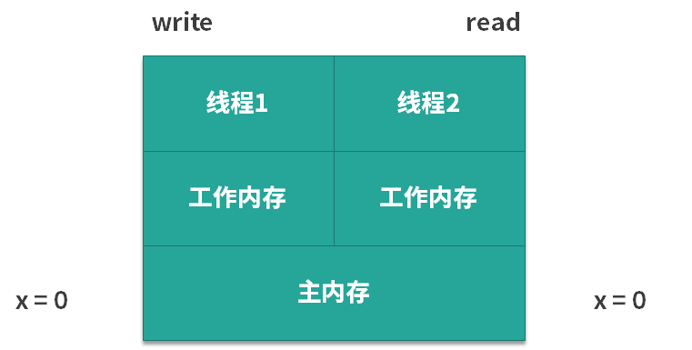
在图中可以看出，由于 x 的初始值为 0，所以对于左边的第 1 个线程和右边的第 2 个线程而言，它们都可以从主内存中去获取到这个信息，对两个线程来说 x 都是 0。可是此时我们假设第 1 个线程先去执行 write 方法，它就把 x 的值从 0 改为了 1，但是它改动的动作并不是直接发生在主内存中的，而是会发生在第 1 个线程的工作内存中，如下图所示。
那么，假设线程 1 的工作内存还未同步给主内存，此时假设线程 2 开始读取，那么它读到的 x 值不是 1，而是 0，也就是说虽然此时线程 1 已经把 x 的值改动了，但是对于第 2 个线程而言，根本感知不到 x 的这个变化，这就产生了可见性问题。
案例二
下面我们再来看一个案例。在如下所示的代码中，有两个变量 a 和 b， 并且把它们赋初始值为 10 和 20。
/**
* 描述： 演示可见性带来的问题
*/
public class VisibilityProblem {
int a = 10;
int b = 20;
private void change() {
a = 30;
b = a;
}
private void print() {
System.out.println("b=" + b + ";a=" + a);
}
public static void main(String[] args) {
while (true) {
VisibilityProblem problem = new VisibilityProblem();
new Thread(new Runnable() {
@Override
public void run() {
try {
Thread.sleep(1);
} catch (InterruptedException e) {
e.printStackTrace();
}
problem.change();
}
}).start();
new Thread(new Runnable() {
@Override
public void run() {
try {
Thread.sleep(1);
} catch (InterruptedException e) {
e.printStackTrace();
}
problem.print();
}
}).start();
}
}
}
在类中，有两个方法：
- change 方法，把 a 改成 30，然后把 b 赋值为 a 的值；
- print 方法，先打印出 b 的值，然后再打印出 a 的值。
接下来我们来看一下 main 函数，在 main 函数中同样非常简单。首先有一个 while 的死循环，在这个循环中，我们新建两个线程，并且让它们先休眠一毫秒，然后再分别去执行 change 方法和 print 方法。休眠一毫秒的目的是让它们执行这两个方法的时间，尽可能的去靠近。
下面我们运行这段代码并分析一下可能出现的情况。
- 第 1 种情况：是最普通的情况了。假设第 1 个线程，也就是执行 change 的线程先运行，并且运行完毕了，然后第 2 个线程开始运行，那么第 2 个线程自然会打印出 b = 30;a = 30 的结果。
- 第 2 种情况：与第 1 种情况相反。因为线程先 start，并不代表它真的先执行，所以第 2 种情况是第 2 个线程先打印，然后第 1 个线程再去进行 change，那么此时打印出来的就是 a 和 b 的初始值，打印结果为 b = 20;a = 10。
- 第 3 种情况：它们几乎同时运行，所以会出现交叉的情况。比如说当第 1 个线程的 change 执行到一半，已经把 a 的值改为 30 了，而 b 的值还未来得及修改，此时第 2 个线程就开始打印了，所以此时打印出来的 b 还是原始值 20，而 a 已经变为了 30， 即打印结果为 b = 20;a = 30。
这些都很好理解，但是有一种情况不是特别容易理解，那就是打印结果为 b = 30;a = 10，我们来想一下，为什么会发生这种情况？
- 首先打印出来的是 b = 30，这意味着 b 的值被改变了，也就是说 b = a 这个语句已经执行了；
- 如果 b = a 要想执行，那么前面 a = 30 也需要执行，此时 b 才能等于 a 的值，也就是 30；
- 这也就意味着 change 方法已经执行完毕了。
可是在这种情况下再打印 a，结果应该是 a = 30，而不应该打印出 a = 10。因为在刚才 change 执行的过程中，a 的值已经被改成 30 了，不再是初始值的 10。所以，如果出现了打印结果为 b = 30;a = 10 这种情况，就意味着发生了可见性问题：a 的值已经被第 1 个线程修改了，但是其他线程却看不到，由于 a 的最新值却没能及时同步过来，所以才会打印出 a 的旧值。发生上述情况的几率不高。我把发生时的截屏用图片的形式展示给你看看，如下所示：
解决问题
那么我们应该如何避免可见性问题呢？在案例一中，我们可以使用 volatile 来解决问题，我们在原来的代码的基础上给 x 变量加上 volatile 修饰，其他的代码不变。加了 volatile 关键字之后，只要第 1 个线程修改完了 x 的值，那么当第 2 个线程想读取 x 的时候，它一定可以读取到 x 的最新的值，而不可能读取到旧值。
同理，我们也可以用 volatile 关键字来解决案例二的问题，如果我们给 a 和 b 加了 volatile 关键字后，无论运行多长时间，也不会出现 b = 30;a = 10 的情况，这是因为 volatile 保证了只要 a 和 b 的值发生了变化，那么读取的线程一定能感知到。
能够保证可见性的措施
除了 volatile 关键字可以让变量保证可见性外，synchronized、Lock、并发集合等一系列工具都可以在一定程度上保证可见性，具体保证可见性的时机和手段，我将在第 61 课时 happens-before 原则中详细展开讲解。
synchronized 不仅保证了原子性，还保证了可见性
下面我们再来分析一下之前所使用过的 synchronized 关键字，在理解了可见性问题之后，相信你对 synchronized 的理解会更加深入。
关于 synchronized 这里有一个特别值得说的点，我们之前可能一致认为，使用了 synchronized 之后，它会设立一个临界区，这样在一个线程操作临界区内的数据的时候，另一个线程无法进来同时操作，所以保证了线程安全。
其实这是不全面的，这种说法没有考虑到可见性问题，完整的说法是：synchronized 不仅保证了临界区内最多同时只有一个线程执行操作，同时还保证了在前一个线程释放锁之后，之前所做的所有修改，都能被获得同一个锁的下一个线程所看到，也就是能读取到最新的值。因为如果其他线程看不到之前所做的修改，依然也会发生线程安全问题。
以上就是本课时的内容了。在本课时中，我们首先给出了两个具体案例来介绍什么是可见性问题；然后介绍了解决可见性问题的方法，最常用的就是使用 volatile 关键字；最后我们对 synchronized 的理解从可见性的层面上加深了一步。
60 主内存和工作内存的关系？
本课时我们主要讲解主内存和工作内存的关系。
CPU 有多级缓存，导致读的数据过期
由于 CPU 的处理速度很快，相比之下，内存的速度就显得很慢，所以为了提高 CPU 的整体运行效率，减少空闲时间，在 CPU 和内存之间会有 cache 层，也就是缓存层的存在。虽然缓存的容量比内存小，但是缓存的速度却比内存的速度要快得多，其中 L1 缓存的速度仅次于寄存器的速度。结构示意图如下所示：
在图中，从下往上分别是内存，L3 缓存、L2 缓存、L1 缓存，寄存器，然后最上层是 CPU 的 4个核心。从内存，到 L3 缓存，再到 L2 和 L1 缓存，它们距离 CPU 的核心越来越近了，越靠近核心，其容量就越小，但是速度也越快。正是由于缓存层的存在，才让我们的 CPU 能发挥出更好的性能。
其实，线程间对于共享变量的可见性问题，并不是直接由多核引起的，而是由我们刚才讲到的这些 L3 缓存、L2 缓存、L1 缓存，也就是多级缓存引起的：每个核心在获取数据时，都会将数据从内存一层层往上读取，同样，后续对于数据的修改也是先写入到自己的 L1 缓存中，然后等待时机再逐层往下同步，直到最终刷回内存。
假设 core 1 修改了变量 a 的值，并写入到了 core 1 的 L1 缓存里，但是还没来得及继续往下同步，由于 core 1 有它自己的的 L1 缓存，core 4 是无法直接读取 core 1 的 L1 缓存的值的，那么此时对于 core 4 而言，变量 a 的值就不是 core 1 修改后的最新的值，core 4 读取到的值可能是一个过期的值，从而引起多线程时可见性问题的发生。
JMM的抽象：主内存和工作内存
什么是主内存和工作内存
Java 作为高级语言，屏蔽了 L1 缓存、L2 缓存、L3 缓存，也就是多层缓存的这些底层细节，用 JMM 定义了一套读写数据的规范。我们不再需要关心 L1 缓存、L2 缓存、L3 缓存等多层缓存的问题，我们只需要关心 JMM 抽象出来的主内存和工作内存的概念。为了更方便你去理解，可参考下图：

每个线程只能够直接接触到工作内存，无法直接操作主内存，而工作内存中所保存的正是主内存的共享变量的副本，主内存和工作内存之间的通信是由 JMM 控制的。
主内存和工作内存的关系
JMM 有以下规定：
（1）所有的变量都存储在主内存中，同时每个线程拥有自己独立的工作内存，而工作内存中的变量的内容是主内存中该变量的拷贝；
（2）线程不能直接读 / 写主内存中的变量，但可以操作自己工作内存中的变量，然后再同步到主内存中，这样，其他线程就可以看到本次修改；
（3） 主内存是由多个线程所共享的，但线程间不共享各自的工作内存，如果线程间需要通信，则必须借助主内存中转来完成。
听到这里，你对上图的理解可能会更深刻一些，从图中可以看出，每个工作内存中的变量都是对主内存变量的一个拷贝，相当于是一个副本。而且图中没有一条线是可以直接连接各个工作内存的，因为工作内存之间的通信，都需要通过主内存来中转。
正是由于所有的共享变量都存在于主内存中，每个线程有自己的工作内存，其中存储的是变量的副本，所以这个副本就有可能是过期的，我们来举个例子：如果一个变量 x 被线程 A 修改了，只要还没同步到主内存中，线程 B 就看不到，所以此时线程 B 读取到的 x 值就是一个过期的值，这就导致了可见性问题。
以上就是本课时的内容了，本课时主要介绍了 CPU 的多层缓存结构，以及由此抽象出来的 JMM 主内存和工作内存的结构图，并且还介绍了主内存和工作内存之间的关系。听完本课时，你会更加深刻的理解为什么会发生可见性问题。
61 什么是 happens-before 规则？
本课时我们主要讲解什么是 happens-before 关系。
什么是 happens-before 关系
Happens-before 关系是用来描述和可见性相关问题的：如果第一个操作 happens-before 第二个操作（也可以描述为，第一个操作和第二个操作之间满足 happens-before 关系），那么我们就说第一个操作对于第二个操作一定是可见的，也就是第二个操作在执行时就一定能保证看见第一个操作执行的结果。
不具备 happens-before 关系的例子
我们先来举一个不具备 happens-before 关系的例子，从宏观上进一步理解 happens-before 关系想要表达的内容。我们来看看下面的代码：
public class Visibility {
int x = 0;
public void write() {
x = 1;
}
public void read() {
int y = x;
}
}
代码很简单，类里面有一个 int x 变量 ，初始值为 0，而 write 方法的作用是把 x 的值改写为 1， 而 read 方法的作用则是读取 x 的值。
如果有两个线程，分别执行 write 和 read 方法，那么由于这两个线程之间没有相互配合的机制，所以 write 和 read 方法内的代码不具备 happens-before 关系，其中的变量的可见性无法保证，下面我们用例子说明这个情况。
比如，假设线程 1 已经先执行了 write 方法，修改了共享变量 x 的值，然后线程 2 执行 read 方法去读取 x 的值，此时我们并不能确定线程 2 现在是否能读取到之前线程 1 对 x 所做的修改，线程 2 有可能看到这次修改，所以读到的 x 值是 1，也有可能看不到本次修改，所以读到的 x 值是最初始的 0。既然存在不确定性，那么 write 和 read 方法内的代码就不具备 happens-before 关系。相反，如果第一个操作 happens-before 第二个操作，那么第一个操作对于第二个操作而言一定是可见的。
下面我们来看一下 happens-before 关系包含哪些具体的规则 。
Happens-before 关系的规则有哪些？
如果分别有操作 x 和操作 y，用 hb(x, y) 来表示 x happens-before y。
（1）单线程规则：
在一个单独的线程中，按照程序代码的顺序，先执行的操作 happen-before 后执行的操作。也就是说，如果操作 x 和操作 y 是同一个线程内的两个操作，并且在代码里 x 先于 y 出现，那么有 hb(x, y)，正如下图所示：

这一个 happens-before 的规则非常重要，因为如果对于同一个线程内部而言，后面语句都不能保证可以看见前面的语句的执行结果的话，那会造成非常严重的后果，程序的逻辑性就无法保证了。
这里有一个注意点，我们之前讲过重排序，那是不是意味着 happens-before 关系的规则和重排序冲突，为了满足 happens-before 关系，就不能重排序了？
答案是否定的。其实只要重排序后的结果依然符合 happens-before 关系，也就是能保证可见性的话，那么就不会因此限制重排序的发生。比如，单线程内，语句 1 在语句 2 的前面，所以根据“单线程规则”，语句 1 happens-before 语句 2，但是并不是说语句 1 一定要在语句 2 之前被执行，例如语句 1 修改的是变量 a 的值，而语句 2 的内容和变量 a 无关，那么语句 1 和语句 2 依然有可能被重排序。当然，如果语句 1 修改的是变量 a，而语句 2 正好是去读取变量 a 的值，那么语句 1 就一定会在语句 2 之前执行了。
（2）锁操作规则（synchronized 和 Lock 接口等）： 如果操作 A 是解锁，而操作 B 是对同一个锁的加锁，那么 hb(A, B) 。正如下图所示： 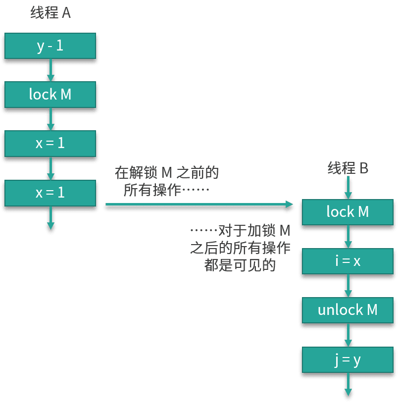
从上图中可以看到，有线程 A 和线程 B 这两个线程。线程 A 在解锁之前的所有操作，对于线程 B 的对同一个锁的加锁之后的所有操作而言，都是可见的。这就是锁操作的 happens-before 关系的规则。
（3）volatile 变量规则： 对一个 volatile 变量的写操作 happen-before 后面对该变量的读操作。
这就代表了如果变量被 volatile 修饰，那么每次修改之后，其他线程在读取这个变量的时候一定能读取到该变量最新的值。我们之前介绍过 volatile 关键字，知道它能保证可见性，而这正是由本条规则所规定的。
（4）线程启动规则： Thread 对象的 start 方法 happen-before 此线程 run 方法中的每一个操作。如下图所示：
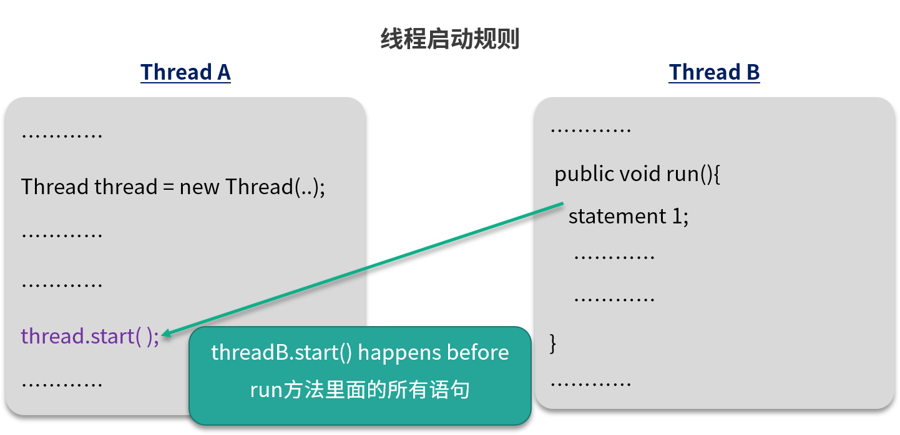
在图中的例子中，左侧区域是线程 A 启动了一个子线程 B，而右侧区域是子线程 B，那么子线程 B 在执行 run 方法里面的语句的时候，它一定能看到父线程在执行 threadB.start() 前的所有操作的结果。
（5）线程 join 规则：
我们知道 join 可以让线程之间等待，假设线程 A 通过调用 threadB.start() 启动了一个新线程 B，然后调用 threadB.join() ，那么线程 A 将一直等待到线程 B 的 run 方法结束（不考虑中断等特殊情况），然后 join 方法才返回。在 join 方法返回后，线程 A 中的所有后续操作都可以看到线程 B 的 run 方法中执行的所有操作的结果，也就是线程 B 的 run 方法里面的操作 happens-before 线程 A 的 join 之后的语句。如下图所示：

（6）中断规则： 对线程 interrupt 方法的调用 happens-before 检测该线程的中断事件。
也就是说，如果一个线程被其他线程 interrupt，那么在检测中断时（比如调用 Thread.interrupted 或者 Thread.isInterrupted 方法）一定能看到此次中断的发生，不会发生检测结果不准的情况。
（7）并发工具类的规则：
- 线程安全的并发容器（如 HashTable）在 get 某个值时一定能看到在此之前发生的 put 等存入操作的结果。也就是说，线程安全的并发容器的存入操作 happens-before 读取操作。
- 信号量（Semaphore）它会释放许可证，也会获取许可证。这里的释放许可证的操作 happens-before 获取许可证的操作，也就是说，如果在获取许可证之前有释放许可证的操作，那么在获取时一定可以看到。
- Future：Future 有一个 get 方法，可以用来获取任务的结果。那么，当 Future 的 get 方法得到结果的时候，一定可以看到之前任务中所有操作的结果，也就是说 Future 任务中的所有操作 happens-before Future 的 get 操作。
- 线程池：要想利用线程池，就需要往里面提交任务（Runnable 或者 Callable），这里面也有一个 happens-before 关系的规则，那就是提交任务的操作 happens-before 任务的执行。
总结
以上就是我们对于 happens-before 关系的介绍。本课时首先介绍了什么是 happens-before 关系，然后举了一个不具备 happens-before 关系的例子；接下来我们重点介绍了 happens-before 关系的众多规则，在这些规则中大部分是你所熟知的或者是不需要额外去记的，但在这里面你需要重点记忆的有：锁操作的 happens-before 规则和 volatile 的 happens-before 规则，因为它们与 synchronized 和 volatile 的使用都有着紧密的联系。而线程启动、线程 join、线程中断以及并发工具类的 happens-before 规则你可以不做重点了解，因为通常情况下，这些规则都会默认被当作已知条件去使用的。
62 volatile 的作用是什么？与 synchronized 有什么异同？
本课时我们主要介绍 volatile 的作用和适用场景，以及它与 synchronized 有什么异同。
volatile 是什么
首先我们就来介绍一下 volatile，它是 Java 中的一个关键字，是一种同步机制。当某个变量是共享变量，且这个变量是被 volatile 修饰的，那么在修改了这个变量的值之后，再读取该变量的值时，可以保证获取到的是修改后的最新的值，而不是过期的值。
相比于 synchronized 或者 Lock，volatile 是更轻量的，因为使用 volatile 不会发生上下文切换等开销很大的情况，不会让线程阻塞。但正是由于它的开销相对比较小，所以它的效果，也就是能力，相对也小一些。
虽然说 volatile 是用来保证线程安全的，但是它做不到像 synchronized 那样的同步保护，volatile 仅在很有限的场景中才能发挥作用，所以下面就让我们来看一下它的适用场景，我们会先给出不适合使用 volatile 的场景，再给出两种适合使用 volatile 的场景。
volatile 的适用场合
不适用：a++
首先我们就来看一下不适合使用 volatile 的场景，volatile 不适合运用于需要保证原子性的场景，比如更新的时候需要依赖原来的值，而最典型的就是 a++ 的场景，我们仅靠 volatile 是不能保证 a++ 的线程安全的。代码如下所示：
public class DontVolatile implements Runnable {
volatile int a;
AtomicInteger realA = new AtomicInteger();
public static void main(String[] args) throws InterruptedException {
Runnable r = new DontVolatile();
Thread thread1 = new Thread(r);
Thread thread2 = new Thread(r);
thread1.start();
thread2.start();
thread1.join();
thread2.join();
System.out.println(((DontVolatile) r).a);
System.out.println(((DontVolatile) r).realA.get());
}
@Override
public void run() {
for (int i = 0; i < 1000; i++) {
a++;
realA.incrementAndGet();
}
}
}
在这段代码中，我们有一个 volatile 修饰的 int 类型的 a 变量，并且下面还有一个原子类的 realA，原子类是可以保证线程安全的，所以我们就用它来和 volatile int a 做对比，看一看它们实际效果上的差别。
在 main 函数中，我们新建了两个线程，并且让它们运行。这两个线程运行的内容就是去执行 1000 次的累加操作，每次累加操作会对 volatile 修饰的变量 a 进行自加操作，同时还会对原子类 realA 进行自加操作。当这两个线程都运行完毕之后，我们把结果给打印出来，其中一种运行结果如下：
1988
2000
会发现最终的 a 值和 realA 值分别为 1988 和 2000。可以看出，即便变量 a 被 volatile 修饰了，即便它最终一共执行了 2000 次的自加操作（这一点可以由原子类的最终值来印证），但是依然有一些自加操作失效了，所以最终它的结果是不到 2000 的，这就证明了 volatile 不能保证原子性，那么它究竟适合运用于什么场景呢？
适用场合1：布尔标记位
如果某个共享变量自始至终只是被各个线程所赋值或读取，而没有其他的操作（比如读取并在此基础上进行修改这样的复合操作）的话，那么我们就可以使用 volatile 来代替 synchronized 或者代替原子类，因为赋值操作自身是具有原子性的，volatile 同时又保证了可见性，这就足以保证线程安全了。
一个比较典型的场景就是布尔标记位的场景，例如 volatile boolean flag。因为通常情况下，boolean 类型的标记位是会被直接赋值的，此时不会存在复合操作（如 a++），只存在单一操作，就是去改变 flag 的值，而一旦 flag 被 volatile 修饰之后，就可以保证可见性了，那么这个 flag 就可以当作一个标记位，此时它的值一旦发生变化，所有线程都可以立刻看到，所以这里就很适合运用 volatile 了。
我们来看一下代码示例：
public class YesVolatile1 implements Runnable {
volatile boolean done = false;
AtomicInteger realA = new AtomicInteger();
public static void main(String[] args) throws InterruptedException {
Runnable r = new YesVolatile1();
Thread thread1 = new Thread(r);
Thread thread2 = new Thread(r);
thread1.start();
thread2.start();
thread1.join();
thread2.join();
System.out.println(((YesVolatile1) r).done);
System.out.println(((YesVolatile1) r).realA.get());
}
@Override
public void run() {
for (int i = 0; i < 1000; i++) {
setDone();
realA.incrementAndGet();
}
}
private void setDone() {
done = true;
}
}
这段代码和前一段代码非常相似，唯一不同之处在于，我们把 volatile int a 改成了 volatile boolean done，并且在 1000 次循环的操作过程中调用的是 setDone() 方法，而这个 setDone() 方法就是把 done 这个变量设置为 true，而不是根据它原来的值再做判断，例如原来是 false，就设置成 true，或者原来是 true，就设置成 false，这些复杂的判断是没有的，setDone() 方法直接就把变量 done 的值设置为 true。那么这段代码最终运行的结果如下：
true
2000
无论运行多少次，控制台都会打印出 true 和 2000，打印出的 2000 已经印证出确实是执行了 2000 次操作，而最终的 true 结果证明了，在这种场景下，volatile 起到了保证线程安全的作用。
第二个例子区别于第一个例子最大的不同点就在于，第一个例子的操作是 a++，这是个复合操作，不具备原子性，而在本例中的操作仅仅是把 done 设置为 true，这样的赋值操作本身就是具备原子性的，所以在这个例子中，它是适合运用 volatile 的。
适用场合 2：作为触发器
那么下面我们再来看第二个适合用 volatile 的场景：作为触发器，保证其他变量的可见性。
下面是 Brian Goetz 提供的一个经典例子：
Map configOptions;
char[] configText;
volatile boolean initialized = false;
. . .
// In thread A
configOptions = new HashMap();
configText = readConfigFile(fileName);
processConfigOptions(configText, configOptions);
initialized = true;
. . .
// In thread B
while (!initialized)
sleep();
// use configOptions
在这段代码中可以看到，我们有一个 map 叫作 configOptions，还有一个 char 数组叫作 configText，然后会有一个被 volatile 修饰的 boolean initialized，最开始等于 false。再下面的这四行代码是由线程 A 所执行的，它所做的事情就是初始化 configOptions，再初始化 configText，再把这两个值放到一个方法中去执行，实际上这些都代表了初始化的行为。那么一旦这些方法执行完毕之后，就代表初始化工作完成了，线程 A 就会把 initialized 这个变量设置为 true。
而对于线程 B 而言，它一开始会在 while 循环中反复执行 sleep 方法（例如休眠一段时间），直到 initialized 这个变量变成 true，线程 B 才会跳过 sleep 方法，继续往下执行。重点来了，一旦 initialized 变成了 true，此时对于线程 B 而言，它就会立刻使用这个 configOptions，所以这就要求此时的 configOptions 是初始化完毕的，且初始化的操作的结果必须对线程 B 可见，否则线程 B 在执行的时候就可能报错。
你可能会担心，因为这个 configOptions 是在线程 A 中修改的，那么在线程 B 中读取的时候，会不会发生可见性问题，会不会读取的不是初始化完毕后的值？如果我们不使用 volatile，那么确实是存在这个问题的。
但是现在我们用了被 volatile 修饰的 initialized 作为触发器，所以这个问题被解决了。根据happens-before 关系的单线程规则，线程 A 中 configOptions 的初始化 happens-before 对 initialized 变量的写入，而线程 B 中对 initialzed 的读取 happens-before 对 configOptions 变量的使用，同时根据 happens-before 关系的 volatile 规则，线程 A 中对 initialized 的写入为 true 的操作 happens-before 线程 B 中随后对 initialized 变量的读取。
如果我们分别有操作 A 和操作 B，我们用 hb(A, B) 来表示 A happens-before B。而 Happens-before 是有可传递性质的，如果hb(A, B)，且hb(B, C)，那么可以推出hb(A, C)。所以根据上面的条件，我们可以得出结论：线程 A 中对于 configOptions 的初始化 happens-before 线程 B 中 对于 configOptions 的使用。所以对于线程 B 而言，既然它已经看到了 initialized 最新的值，那么它同样就能看到包括 configOptions 在内的这些变量初始化后的状态，所以此时线程 B 使用 configOptions 是线程安全的。这种用法就是把被 volatile 修饰的变量作为触发器来使用，保证其他变量的可见性，这种用法也是非常值得掌握的，可以作为面试时的亮点。
volatile 的作用
上面我们分析了两种非常典型的用法，那么就来总结一下 volatile 的作用，它一共有两层作用。
第一层的作用是保证可见性。Happens-before 关系中对于 volatile 是这样描述的：对一个 volatile 变量的写操作 happen-before 后面对该变量的读操作。
这就代表了如果变量被 volatile 修饰，那么每次修改之后，接下来在读取这个变量的时候一定能读取到该变量最新的值。
第二层的作用就是禁止重排序。先介绍一下 as-if-serial语义：不管怎么重排序，（单线程）程序的执行结果不会改变。在满足 as-if-serial 语义的前提下，由于编译器或 CPU 的优化，代码的实际执行顺序可能与我们编写的顺序是不同的，这在单线程的情况下是没问题的，但是一旦引入多线程，这种乱序就可能会导致严重的线程安全问题。用了 volatile 关键字就可以在一定程度上禁止这种重排序。
volatile 和 synchronized 的关系
下面我们就来看一下 volatile 和 synchronized 的关系：
相似性：volatile 可以看作是一个轻量版的 synchronized，比如一个共享变量如果自始至终只被各个线程赋值和读取，而没有其他操作的话，那么就可以用 volatile 来代替 synchronized 或者代替原子变量，足以保证线程安全。实际上，对 volatile 字段的每次读取或写入都类似于“半同步”——读取 volatile 与获取 synchronized 锁有相同的内存语义，而写入 volatile 与释放 synchronized 锁具有相同的语义。
不可代替：但是在更多的情况下，volatile 是不能代替 synchronized 的，volatile 并没有提供原子性和互斥性。
性能方面：volatile 属性的读写操作都是无锁的，正是因为无锁，所以不需要花费时间在获取锁和释放锁上，所以说它是高性能的，比 synchronized 性能更好。
小结
最后总结一下，本课时主要介绍了 volatile 是什么，以及它不适用的场景和两种非常典型的适用场景；然后我们介绍了 volatile 的两点作用，第一点是保证可见性，第二点是禁止重排序；最后我们分析了 volatile 和 synchronized 的关系。
63 单例模式的双重检查锁模式为什么必须加 volatile？
本课时我们主要讲解单例模式的双重检查锁模式为什么必须加 volatile？
什么是单例模式
单例模式指的是，保证一个类只有一个实例，并且提供一个可以全局访问的入口。
为什么需要使用单例模式
那么我们为什么需要单例呢？其中**一个理由，那就是为了节省内存、节省计算。**因为在很多情况下，我们只需要一个实例就够了，如果出现更多的实例，反而纯属浪费。
下面我们举一个例子来说明这个情况，以一个初始化比较耗时的类来说，代码如下所示：
public class ExpensiveResource {
public ExpensiveResource() {
field1 = // 查询数据库
field2 = // 然后对查到的数据做大量计算
field3 = // 加密、压缩等耗时操作
}
}
这个类在构造的时候，需要查询数据库并对查到的数据做大量计算，所以在第一次构造时，我们花了很多时间来初始化这个对象。但是假设数据库里的数据是不变的，我们就可以把这个对象保存在内存中，那么以后开发的时候就可以直接用这同一个实例了，不需要再次构建新实例。如果每次都重新生成新的实例，则会造成更多的浪费，实在没有必要。
接下来看看需要单例的第二个理由，那就是为了保证结果的正确。**比如我们需要一个全局的计数器，用来统计人数，如果有多个实例，反而会造成混乱。
另外呢，就是为了方便管理。**很多工具类，我们只需要一个实例，那么我们通过统一的入口，比如通过 getInstance 方法去获取这个单例是很方便的，太多实例不但没有帮助，反而会让人眼花缭乱。
一般单例模式的类结构如下图所示：有一个私有的 Singleton 类型的 singleton 对象；同时构造方法也是私有的，为了防止他人调用构造函数来生成实例；另外还会有一个 public 的 getInstance 方法，可通过这个方法获取到单例。

双重检查锁模式的写法
单例模式有多种写法，我们重点介绍一下和 volatile 强相关的双重检查锁模式的写法，代码如下所示：
public class Singleton {
private static volatile Singleton singleton;
private Singleton() {
}
public static Singleton getInstance() {
if (singleton == null) {
synchronized (Singleton.class) {
if (singleton == null) {
singleton = new Singleton();
}
}
}
return singleton;
}
}
在这里我将重点讲解 getInstance 方法，方法中首先进行了一次 if (singleton == null) 的检查，然后是 synchronized 同步块，然后又是一次 if (singleton == null) 的检查，最后是 singleton = new Singleton() 来生成实例。
我们进行了两次 if (singleton == null) 检查，这就是“双重检查锁”这个名字的由来。这种写法是可以保证线程安全的，假设有两个线程同时到达 synchronized 语句块，那么实例化代码只会由其中先抢到锁的线程执行一次，而后抢到锁的线程会在第二个 if 判断中发现 singleton 不为 null，所以跳过创建实例的语句。再后面的其他线程再来调用 getInstance 方法时，只需判断第一次的 if (singleton == null) ，然后会跳过整个 if 块，直接 return 实例化后的对象。
这种写法的优点是不仅线程安全，而且延迟加载、效率也更高。
讲到这里就涉及到了一个常见的问题，面试官可能会问你，“为什么要 double-check？去掉任何一次的 check 行不行？”
我们先来看第二次的 check，这时你需要考虑这样一种情况，有两个线程同时调用 getInstance 方法，由于 singleton 是空的 ，因此两个线程都可以通过第一重的 if 判断；然后由于锁机制的存在，会有一个线程先进入同步语句，并进入第二重 if 判断 ，而另外的一个线程就会在外面等待。
不过，当第一个线程执行完 new Singleton() 语句后，就会退出 synchronized 保护的区域，这时如果没有第二重 if (singleton == null) 判断的话，那么第二个线程也会创建一个实例，此时就破坏了单例，这肯定是不行的。
而对于第一个 check 而言，如果去掉它，那么所有线程都会串行执行，效率低下，所以两个 check 都是需要保留的。
在双重检查锁模式中为什么需要使用 volatile 关键字
相信细心的你可能看到了，我们在双重检查锁模式中，给 singleton 这个对象加了 volatile 关键字，那**为什么要用 volatile 呢？**主要就在于 singleton = new Singleton() ，它并非是一个原子操作，事实上，在 JVM 中上述语句至少做了以下这 3 件事：
- 第一步是给 singleton 分配内存空间；
- 然后第二步开始调用 Singleton 的构造函数等，来初始化 singleton；
- 最后第三步，将 singleton 对象指向分配的内存空间（执行完这步 singleton 就不是 null 了）。
这里需要留意一下 1-2-3 的顺序，因为存在指令重排序的优化，也就是说第2 步和第 3 步的顺序是不能保证的，最终的执行顺序，可能是 1-2-3，也有可能是 1-3-2。
如果是 1-3-2，那么在第 3 步执行完以后，singleton 就不是 null 了，可是这时第 2 步并没有执行，singleton 对象未完成初始化，它的属性的值可能不是我们所预期的值。假设此时线程 2 进入 getInstance 方法，由于 singleton 已经不是 null 了，所以会通过第一重检查并直接返回，但其实这时的 singleton 并没有完成初始化，所以使用这个实例的时候会报错，详细流程如下图所示：

线程 1 首先执行新建实例的第一步，也就是分配单例对象的内存空间，由于线程 1 被重排序，所以执行了新建实例的第三步，也就是把 singleton 指向之前分配出来的内存地址，在这第三步执行之后，singleton 对象便不再是 null。
这时线程 2 进入 getInstance 方法，判断 singleton 对象不是 null，紧接着线程 2 就返回 singleton 对象并使用，由于没有初始化，所以报错了。最后，线程 1 “姗姗来迟”，才开始执行新建实例的第二步——初始化对象，可是这时的初始化已经晚了，因为前面已经报错了。
使用了 volatile 之后，相当于是表明了该字段的更新可能是在其他线程中发生的，因此应确保在读取另一个线程写入的值时，可以顺利执行接下来所需的操作。在 JDK 5 以及后续版本所使用的 JMM 中，在使用了 volatile 后，会一定程度禁止相关语句的重排序，从而避免了上述由于重排序所导致的读取到不完整对象的问题的发生。
到这里关于“为什么要用 volatile” 的问题就讲完了，使用 volatile 的意义主要在于它可以防止避免拿到没完成初始化的对象，从而保证了线程安全。
总结
在本课时中我们首先介绍了什么是单例模式，以及为什么需要使用单例模式，然后介绍了双重检查锁模式这种写法，以及面对这种写法时为什么需要 double-check，为什么需要用 volatile？最主要的是为了保证线程安全。
64 你知道什么是 CAS 吗？
本课时，我将讲解 CAS。
CAS 简介
CAS 其实是我们面试中的常客，因为它是原子类的底层原理，同时也是乐观锁的原理，所以当你去面试的时候，经常会遇到这样的问题“你知道哪些类型的锁”？你可能会回答“悲观锁和乐观锁”，那么下一个问题很有可能是问乐观锁的原理，也就是和 CAS 相关的问题，当然也有可能会继续深入问你 CAS 的应用场景或者是缺点等问题。在本课时和接下来的这两个课时里，我将带领你学习如何回答这些问题。
首先我们来看一下 CAS 是什么，它的英文全称是 Compare-And-Swap，中文叫做“比较并交换”，它是一种思想、一种算法。
在多线程的情况下，各个代码的执行顺序是不能确定的，所以为了保证并发安全，我们可以使用互斥锁。而 CAS 的特点是避免使用互斥锁，当多个线程同时使用 CAS 更新同一个变量时，只有其中一个线程能够操作成功，而其他线程都会更新失败。不过和同步互斥锁不同的是，更新失败的线程并不会被阻塞，而是被告知这次由于竞争而导致的操作失败，但还可以再次尝试。
CAS 被广泛应用在并发编程领域中，以实现那些不会被打断的数据交换操作，从而就实现了无锁的线程安全。
CAS 的思路
在大多数处理器的指令中，都会实现 CAS 相关的指令，这一条指令就可以完成“比较并交换”的操作，也正是由于这是一条（而不是多条）CPU 指令，所以 CAS 相关的指令是具备原子性的，这个组合操作在执行期间不会被打断，这样就能保证并发安全。由于这个原子性是由 CPU 保证的，所以无需我们程序员来操心。
CAS 有三个操作数：内存值 V、预期值 A、要修改的值 B。CAS 最核心的思路就是，仅当预期值 A 和当前的内存值 V 相同时，才将内存值修改为 B。
我们对此展开描述一下：CAS 会提前假定当前内存值 V 应该等于值 A，而值 A 往往是之前读取到当时的内存值 V。在执行 CAS 时，如果发现当前的内存值 V 恰好是值 A 的话，那 CAS 就会把内存值 V 改成值 B，而值 B 往往是在拿到值 A 后，在值 A 的基础上经过计算而得到的。如果执行 CAS 时发现此时内存值 V 不等于值 A，则说明在刚才计算 B 的期间内，内存值已经被其他线程修改过了，那么本次 CAS 就不应该再修改了，可以避免多人同时修改导致出错。这就是 CAS 的主要思路和流程。
JDK 正是利用了这些 CAS 指令，可以实现并发的数据结构，比如 AtomicInteger 等原子类。
利用 CAS 实现的无锁算法，就像我们谈判的时候，用一种非常乐观的方式去协商，彼此之间很友好，这次没谈成，还可以重试。CAS 的思路和之前的互斥锁是两种完全不同的思路，如果是互斥锁，不存在协商机制，大家都会尝试抢占资源，如果抢到了，在操作完成前，会把这个资源牢牢的攥在自己的手里。当然，利用 CAS 和利用互斥锁，都可以保证并发安全，它们是实现同一目标的不同手段。
例子
下面我们用图解和例子的方式，让 CAS 的过程变得更加清晰，如下图所示：

假设有两个线程，分别使用两个 CPU，它们都想利用 CAS 来改变右边的变量的值。我们先来看线程 1，它使用 CPU 1，假设它先执行，它期望当前的值是 100，并且想将其改成 150。在执行的时候，它会去检查当前的值是不是 100，发现真的是 100，所以可以改动成功，而当改完之后，右边的值就会从 100 变成 150。 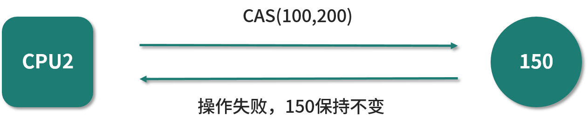
如上图所示，假设现在才刚刚轮到线程 2 所使用的 CPU 2 来执行，它想要把这个值从 100 改成 200，所以它也希望当前值是 100，可实际上当前值是 150，所以它会发现当前值不是自己期望的值，所以并不会真正的去继续把 100 改成 200，也就是说整个操作都是没有效果的，此次没有修改成功，CAS 操作失败。
当然，接下来线程 2 还可以有其他的操作，这需要根据业务需求来决定，比如重试、报错或者干脆跳过执行。举一个例子，在秒杀场景下，多个线程同时执行秒杀，只要有一个执行成功就够了，剩下的线程当发现自己 CAS 失败了，其实说明兄弟线程执行成功了，也就没有必要继续执行了，这就是跳过操作。所以业务逻辑不同，就会有不同的处理方法，但无论后续怎么处理，之前的那一次 CAS 操作是已经失败了的。
CAS 的语义
我们来看一看 CAS 的语义，有了下面的等价代码之后，理解起来会比前面的图示和文字更加容易，因为代码实际上是一目了然的。接下来我们把 CAS 拆开，看看它内部究竟做了哪些事情。CAS 的等价语义的代码，如下所示：
/**
* 描述： 模拟CAS操作，等价代码
*/
public class SimulatedCAS {
private int value;
public synchronized int compareAndSwap(int expectedValue, int newValue) {
int oldValue = value;
if (oldValue == expectedValue) {
value = newValue;
}
return oldValue;
}
}
在这段代码中有一个 compareAndSwap 方法，在这个方法里有两个入参，第 1 个入参期望值 expectedValue，第 2 个入参是 newValue，它就是我们计算好的新的值，我们希望把这个新的值去更新到变量上去。
你一定注意到了， compareAndSwap 方法是被 synchronized 修饰的，我们用同步方法为 CAS 的等价代码保证了原子性。
接下来我将讲解，在 compareAndSwap 方法里都做了哪些事情。需要先拿到变量的当前值，所以代码里用就会用 int oldValue = value 把变量的当前值拿到。然后就是 compare，也就是“比较”，所以此时会用 if (oldValue == expectedValue) 把当前值和期望值进行比较，如果它们是相等的话，那就意味着现在的值正好就是我们所期望的值，满足条件，说明此时可以进行 swap，也就是交换，所以就把 value 的值修改成 newValue，最后再返回 oldValue，完成了整个 CAS 过程。
CAS 最核心的思想就在上面这个流程中体现了，可以看出，compare 指的就是 if 里的比较，比较 oldValue 是否等于 expectedValue；同样，swap 实际上就是把 value 改成 newValue，并且返回 oldValue。所以这整个 compareAndSwap 方法就还原了 CAS 的语义，也象征了 CAS 指令在背后所做的工作。
案例演示：两个线程竞争 CAS，其中一个落败
有了这前面的等价代码之后，我们再来深入介绍一个具体的案例：两个线来执行 CAS，尝试修改数据，第一个线程能修改成功，而第二个线程由于来晚了，会发现数据已经被修改过了，就不再修改了。我们通过 debug 的方式可以看到 CAS 在执行过程中的具体情况。
下面我们用代码来演示一下 CAS 在两个线程竞争的时候，会发生的情况，同时我也录制了一段视频，你也可以直接跳过文字版看视频演示。
我们看下面的这段代码：
public class DebugCAS implements Runnable {
private volatile int value;
public synchronized int compareAndSwap(int expectedValue, int newValue) {
int oldValue = value;
if (oldValue == expectedValue) {
value = newValue;
System.out.println("线程"+Thread.currentThread().getName()+"执行成功");
}
return oldValue;
}
public static void main(String[] args) throws InterruptedException {
DebugCAS r = new DebugCAS();
r.value = 100;
Thread t1 = new Thread(r,"Thread 1");
Thread t2 = new Thread(r,"Thread 2");
t1.start();
t2.start();
t1.join();
t2.join();
System.out.println(r.value);
}
@Override
public void run() {
compareAndSwap(100, 150);
}
}
这里的 compareAndSwap 方法就是刚才所讲过的 CAS 的等价语义的代码，然后我们在此基础上加了一行代码，如果执行成功的话，它会打印出是哪个线程执行成功。
而在我们的 main() 方法里面，首先把 DebugCAS 类实例化出来，并把 value 的值修改为 100，这样它的初始值就为 100，接着我们新建两个线程 Thread t1 和 Thread t2，把它们启动起来，并且主线程等待两个线程执行完毕之后，去打印出最后 value 的值。
新建的这两个线程都做了什么内容呢？在 run() 方法里面可以看到，就是执行 compareAndSwap 方法，并且期望的值是 100，希望改成的值是 150，那么当两个线程都去执行 run() 方法的时候，可以预见到的是，只会有一个线程执行成功，另外一个线程不会打印出“执行成功”这句话，因为当它执行的时候会发现，当时的值已经被修改过了，不是 100 了。
首先，我们不打断点，直接执行看看运行的结果：
线程Thread 1执行成功
150
可以看到，Thread 1 执行成功，且最终的结果是 150。在这里，打印“Thread 1 执行成功”这句话的概率比打印“Thread 2 执行成功”这句话的概率要大得多，因为 Thread 1 是先 start 的。
下面我们用 debug 的方法来看看内部究竟是如何执行的。我们先在“if (oldValue == expectedValue){”这一行打断点，然后用 Debug 的形式去运行。

可以看到，此时程序已经停留在打断点的地方了，停留的是 Thread 1（在 Debugger 里可以显示出来当前线程的名字和状态），而 Thread 2 此时的状态是 Monitor （对应 Java 线程的 Blocked 状态），其含义是没有拿到这把锁 synchronized，正在外面等待这把锁。
现在 Thread 1 进到 compareAndSwap 方法里了，我们可以很清楚地看到，oldValue 值是 100，而 expectedValue 的值也是 100，所以它们是相等的。
继续让代码单步运行，因为满足 if 判断条件，所以可以进到 if 语句中，所以接下来会把 value 改成 newValue，而 newValue 的值正是 150。

在修改完成后，还会打印出“线程Thread 1执行成功”这句话，如下图所示。
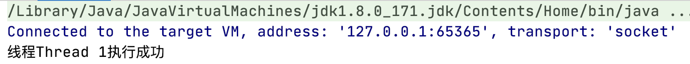
接下来我们按下左侧的执行按钮，就轮到 Thread 2 了，此时情景就不同了。
可以看到，oldValue 拿到的值是 150，因为 value 的值已经被 Thread 1 修改过了，所以，150 与 Thread 2 所期望的 expectedValue 的值 100 是不相等的，从而会跳过整个 if 语句，也就不能打印出“Thread 2 执行成功”这句话，最后会返回 oldValue，其实对这个值没有做任何的修改。
到这里，两个线程就执行完毕了。在控制台，只打印出 Thread 1 执行成功，而没有打印出 Thread 2 执行成功。其中的原因，我们通过 Debug 的方式已经知晓了。

以上代码通过 Debug 的方式，看到了当两个线程去竞争 CAS 时，其中一个成功、另一个失败的情况。
总结
在本课时中，我们讲解了什么是 CAS，它的核心思想是通过将内存中的值与指定数据进行比较，当这两个数值一样时，才将内存中的数据替换为新的值，整个过程是具备原子性的；然后介绍了一个关于两个线先后进行的 CAS 例子，并且用等价代码的形式描述了 CAS 的语义，最后还用 Debug 的方式进行了实操演示。
65 CAS 和乐观锁的关系，什么时候会用到 CAS？
在本课时中，我将讲解 CAS 的应用场景，什么时候会用到 CAS？
并发容器
Doug Lea 大神在 JUC 包中大量使用了 CAS 技术，该技术既能保证安全性，又不需要使用互斥锁，能大大提升工具类的性能。下面我将通过两个例子来展示 CAS 在并发容器中的使用情况。
案例一：ConcurrentHashMap
先来看看并发容器 ConcurrentHashMap 的例子，我们截取部分 putVal 方法的代码，如下所示：
final V putVal(K key, V value, boolean onlyIfAbsent) {
if (key == null || value == null) throw new NullPointerException();
int hash = spread(key.hashCode());
int binCount = 0;
for (Node<K,V>[] tab = table;;) {
Node<K,V> f; int n, i, fh;
if (tab == null || (n = tab.length) == 0)
tab = initTable();
else if ((f = tabAt(tab, i = (n - 1) & hash)) == null) {
if (casTabAt(tab, i, null,
new Node<K,V>(hash, key, value, null)))
break; // no lock when adding to empty bin
}
//以下部分省略
...
}
在第 10 行，有一个醒目的方法，它就是 “casTabAt”，这个方法名就带有 “CAS”，可以猜测它一定是和 CAS 密不可分了，下面给出 casTabAt 方法的代码实现：
static final <K,V> boolean casTabAt(Node<K,V>[] tab, int i,
Node<K,V> c, Node<K,V> v) {
return U.compareAndSwapObject(tab, ((long)i << ASHIFT) + ABASE, c, v);
}
该方法里面只有一行代码，即调用变量 U 的 compareAndSwapObject 的方法，那么，这个变量 U 是什么类型的呢？U 的定义是：
private static final sun.misc.Unsafe U
可以看出，U 是 Unsafe 类型的，Unsafe 类包含 compareAndSwapInt、compareAndSwapLong、compareAndSwapObject 等和 CAS 密切相关的 native 层的方法，其底层正是利用 CPU 对 CAS 指令的支持实现的。
上面介绍的 casTabAt 方法，不仅被用在了 ConcurrentHashMap 的 putVal 方法中，还被用在了 merge、compute、computeIfAbsent、transfer 等重要的方法中，所以 ConcurrentHashMap 对于 CAS 的应用是比较广泛的。
案例二：ConcurrentLinkedQueue
接下来，我们来看并发容器的第二个案例。非阻塞并发队列 ConcurrentLinkedQueue 的 offer 方法里也有 CAS 的身影，offer 方法的代码如下所示：
public boolean offer(E e) {
checkNotNull(e);
final Node<E> newNode = new Node<E>(e);
for (Node<E> t = tail, p = t;;) {
Node<E> q = p.next;
if (q == null) {
if (p.casNext(null, newNode)) {
if (p != t)
casTail(t, newNode);
return true;
}
}
else if (p == q)
p = (t != (t = tail)) ? t : head;
else
p = (p != t && t != (t = tail)) ? t : q;
}
}
可以看出，在 offer 方法中，有一个 for 循环，这是一个死循环，在第 8 行有一个与 CAS 相关的方法，是 casNext 方法，用于更新节点。那么如果执行 p 的 casNext 方法失败的话，casNext 会返回 false，那么显然代码会继续在 for 循环中进行下一次的尝试。所以在这里也可以很明显的看出 ConcurrentLinkedQueue 的 offer 方法使用到了 CAS。
以上就是 CAS 在并发容器中应用的两个例子，我们再来看一看 CAS 在数据库中有哪些应用。
数据库
在我们的数据库中，也存在对乐观锁和 CAS 思想的应用。在更新数据时，我们可以利用 version 字段在数据库中实现乐观锁和 CAS 操作，而在获取和修改数据时都不需要加悲观锁。
具体思路如下：当我们获取完数据，并计算完毕，准备更新数据时，会检查现在的版本号与之前获取数据时的版本号是否一致，如果一致就说明在计算期间数据没有被更新过，可以直接更新本次数据；如果版本号不一致，则说明计算期间已经有其他线程修改过这个数据了，那就可以选择重新获取数据，重新计算，然后再次尝试更新数据。
假设取出数据的时候 version 版本为 1，相应的 SQL 语句示例如下所示：
UPDATE student SET name = ‘小王’, version = 2 WHERE id = 10 AND version = 1
这样一来就可以用 CAS 的思想去实现本次的更新操作，它会先去比较 version 是不是最开始获取到的 1，如果和初始值相同才去进行 name 字段的修改，同时也要把 version 的值加一。
原子类
在原子类中，例如 AtomicInteger，也使用了 CAS，原子类的内容我们在第 39 课时中已经具体分析过了，现在我们复习一下和 CAS 相关的重点内容，也就是 AtomicInteger 的 getAndAdd 方法，该方法代码如下所示：
public final int getAndAdd(int delta) {
return unsafe.getAndAddInt(this, valueOffset, delta);
}
从上面的三行代码中可以看到，return 的内容是 Unsafe 的 getAndAddInt 方法的执行结果，接下来我们来看一下 getAndAddInt 方法的具体实现，代码如下所示：
public final int getAndAddInt(Object var1, long var2, int var4) {
int var5;
do {
var5 = this.getIntVolatile(var1, var2);
} while(!this.compareAndSwapInt(var1, var2, var5, var5 + var4));
return var5;
}
在这里，我们看到上述方法中有对 var5 的赋值，调用了 unsafe 的 getIntVolatile(var1, var2) 方法，这是一个 native 方法，作用是获取变量 var1 中偏移量 var2 处的值。这里传入 var1 的是 AtomicInteger 对象的引用，而 var2 就是 AtomicInteger 里面所存储的数值（也就是 value）的偏移量 valueOffset，所以此时得到的 var5 实际上代表当前时刻下的原子类中存储的数值。
接下来重点来了，我们看到有一个 compareAndSwapInt 方法，这里会传入多个参数，分别是 var1、var2、 var5、var5 + var4，其实它们代表 object、offset、expectedValue 和 newValue。
- 第一个参数 object 就是将要修改的对象，传入的是 this，也就是 atomicInteger 这个对象本身；
- 第二个参数是 offset，也就是偏移量，借助它就可以获取到 value 的数值；
- 第三个参数 expectedValue，代表“期望值”，传入的是刚才获取到的 var5；
- 而最后一个参数 newValue 是希望修改为的新值 ，等于之前取到的数值 var5 再加上 var4，而 var4 就是我们之前所传入的 delta，delta 就是我们希望原子类所改变的数值，比如可以传入 +1，也可以传入 -1。
所以 compareAndSwapInt 方法的作用就是，判断如果现在原子类里 value 的值和之前获取到的 var5 相等的话，那么就把计算出来的 var5 + var4 给更新上去，所以说这行代码就实现了 CAS 的过程。
一旦 CAS 操作成功，就会退出这个 while 循环，但是也有可能操作失败。如果操作失败就意味着在获取到 var5 之后，并且在 CAS 操作之前，value 的数值已经发生变化了，证明有其他线程修改过这个变量。
这样一来，就会再次执行循环体里面的代码，重新获取 var5 的值，也就是获取最新的原子变量的数值，并且再次利用 CAS 去尝试更新，直到更新成功为止，所以这是一个死循环。
我们总结一下，Unsafe 的 getAndAddInt 方法是通过循环 + CAS 的方式来实现的，在此过程中，它会通过 compareAndSwapInt 方法来尝试更新 value 的值，如果更新失败就重新获取，然后再次尝试更新，直到更新成功。
总结
在本课时中，我们讲解了 CAS 的应用场景。在并发容器、数据库以及原子类中都有很多和 CAS 相关的代码，所以 CAS 有着广泛的应用场景，你需要清楚的了解什么情况下会用到 CAS。
66 CAS 有什么缺点？
本课时主要讲解 CAS 有什么缺点。
前面我们讲过 CAS 是有很多优点的，比如可以避免加互斥锁，可以提高程序的运行效率，但是同样 CAS 也有非常明显的缺点。所以我们在使用 CAS 的时候应该同时考虑到它的优缺点，合理地进行技术选型。
下面我们就来看一下 CAS 有哪几个主要的缺点。
ABA 问题
首先，CAS 最大的缺点就是 ABA 问题。
决定 CAS 是否进行 swap 的判断标准是“当前的值和预期的值是否一致”，如果一致，就认为在此期间这个数值没有发生过变动，这在大多数情况下是没有问题的。
但是在有的业务场景下，我们想确切知道从上一次看到这个值以来到现在，这个值是否发生过变化。例如，这个值假设从 A 变成了 B，再由 B 变回了 A，此时，我们不仅认为它发生了变化，并且会认为它变化了两次。
在这种场景下，我们使用 CAS，就看不到这两次的变化，因为仅判断“当前的值和预期的值是否一致”就是不够的了。CAS 检查的并不是值有没有发生过变化，而是去比较这当前的值和预期值是不是相等，如果变量的值从旧值 A 变成了新值 B 再变回旧值 A，由于最开始的值 A 和现在的值 A 是相等的，所以 CAS 会认为变量的值在此期间没有发生过变化。所以，CAS 并不能检测出在此期间值是不是被修改过，它只能检查出现在的值和最初的值是不是一样。
我们举一个例子：假设第一个线程拿到的初始值是 100，然后进行计算，在计算的过程中，有第二个线程把初始值改为了 200，然后紧接着又有第三个线程把 200 改回了 100。等到第一个线程计算完毕去执行 CAS 的时候，它会比较当前的值是不是等于最开始拿到的初始值 100，此时会发现确实是等于 100，所以线程一就认为在此期间值没有被修改过，就理所当然的把这个 100 改成刚刚计算出来的新值，但实际上，在此过程中已经有其他线程把这个值修改过了，这样就会发生 ABA 问题。
如果发生了 ABA 问题，那么线程一就根本无法知晓在计算过程中是否有其他线程把这个值修改过，由于第一个线程发现当前值和预期值是相等的，所以就会认为在此期间没有线程修改过变量的值，所以它接下来的一些操作逻辑，是按照在此期间这个值没被修改过”的逻辑去处理的，比如它可能会打印日志：“本次修改十分顺利”，但是它本应触发其他的逻辑，比如当它发现了在此期间有其他线程修改过这个值，其实本应该打印的是“本次修改过程受到了干扰”。
那么如何解决这个问题呢？添加一个版本号就可以解决。
我们在变量值自身之外，再添加一个版本号，那么这个值的变化路径就从 A→B→A 变成了 1A→2B→3A，这样一来，就可以通过对比版本号来判断值是否变化过，这比我们直接去对比两个值是否一致要更靠谱，所以通过这样的思路就可以解决 ABA 的问题了。
在 atomic 包中提供了 AtomicStampedReference 这个类，它是专门用来解决 ABA 问题的，解决思路正是利用版本号，AtomicStampedReference 会维护一种类似 <Object,int> 的数据结构，其中的 int 就是用于计数的，也就是版本号，它可以对这个对象和 int 版本号同时进行原子更新，从而也就解决了 ABA 问题。因为我们去判断它是否被修改过，不再是以值是否发生变化为标准，而是以版本号是否变化为标准，即使值一样，它们的版本号也是不同的。
以上就是对 CAS 的第一个缺点—— ABA 问题的介绍。
自旋时间过长
CAS 的第二个缺点就是自旋时间过长。
由于单次 CAS 不一定能执行成功，所以 CAS 往往是配合着循环来实现的，有的时候甚至是死循环，不停地进行重试，直到线程竞争不激烈的时候，才能修改成功。
可是如果我们的应用场景本身就是高并发的场景，就有可能导致 CAS 一直都操作不成功，这样的话，循环时间就会越来越长。而且在此期间，CPU 资源也是一直在被消耗的，这会对性能产生很大的影响。所以这就要求我们，要根据实际情况来选择是否使用 CAS，在高并发的场景下，通常 CAS 的效率是不高的。
范围不能灵活控制
CAS 的第三个缺点就是不能灵活控制线程安全的范围。
通常我们去执行 CAS 的时候，是针对某一个，而不是多个共享变量的，这个变量可能是 Integer 类型，也有可能是 Long 类型、对象类型等等，但是我们不能针对多个共享变量同时进行 CAS 操作，因为这多个变量之间是独立的，简单的把原子操作组合到一起，并不具备原子性。因此如果我们想对多个对象同时进行 CAS 操作并想保证线程安全的话，是比较困难的。
有一个解决方案，那就是利用一个新的类，来整合刚才这一组共享变量，这个新的类中的多个成员变量就是刚才的那多个共享变量，然后再利用 atomic 包中的 AtomicReference 来把这个新对象整体进行 CAS 操作，这样就可以保证线程安全。
相比之下，如果我们使用其他的线程安全技术，那么调整线程安全的范围就可能变得非常容易，比如我们用 synchronized 关键字时，如果想把更多的代码加锁，那么只需要把更多的代码放到同步代码块里面就可以了。
总结
下面我们进行总结，本课时介绍了 CAS 的三个缺点，分别是 ABA 问题、自旋时间过长以及线程安全的范围不能灵活控制。我们了解了它的缺点之后，在进行技术选型的时候就可以有的放矢了。
67 如何写一个必然死锁的例子？
本课时我们会首先介绍什么是死锁，死锁有什么危害和特点，然后通过代码分析一个“必然死锁的例子”。
死锁是什么？有什么危害?
什么是死锁
发生在并发中
首先你要知道，死锁一定发生在并发场景中。我们为了保证线程安全，有时会给程序使用各种能保证并发安全的工具，尤其是锁，但是如果在使用过程中处理不得当，就有可能会导致发生死锁的情况。
互不相让
死锁是一种状态，当两个（或多个）线程（或进程）相互持有对方所需要的资源，却又都不主动释放自己手中所持有的资源，导致大家都获取不到自己想要的资源，所有相关的线程（或进程）都无法继续往下执行，在未改变这种状态之前都不能向前推进，我们就把这种状态称为死锁状态，认为它们发生了死锁。通俗的讲，死锁就是两个或多个线程（或进程）被无限期地阻塞，相互等待对方手中资源的一种状态。
生活中的例子
下面我们用图示的方法来展示一种生活中发生死锁的情况，如下图所示：

可以看到这张漫画展示了两个绅士分别向对方鞠躬的场景，为了表示礼貌，他们弯下腰之后谁也不愿意先起身，都希望对方起身之后我再起身。可是这样一来，就没有任何人可以先起身，起身这个动作就一直无法继续执行，两人形成了相互等待的状态，所以这就是一种典型的死锁！
两个线程的例子
下面我们用动画的形式来看一下两个线程发生死锁的情况，如下图所示：

此时我们有两个线程，分别是线程 A 和线程 B，假设线程 A 现在持有了锁 A，线程 B 持有了锁 B，然后线程 A 尝试去获取锁 B，当然它获取不到，因为线程 B 还没有释放锁 B。然后线程 B 又来尝试获取锁 A，同样线程 B 也获取不到锁 A，因为锁 A 已经被线程 A 持有了。这样一来，线程 A 和线程 B 就发生了死锁，因为它们都相互持有对方想要的资源，却又不释放自己手中的资源，形成相互等待，而且会一直等待下去。
多个线程造成死锁的情况
死锁不仅仅存在于两个线程的场景，在多个线程中也同样存在。如果多个线程之间的依赖关系是环形，存在环路的依赖关系，那么也可能会发生死锁，如下图所示：
我们看到在这个例子中，首先线程 1 持有了锁 A，然后线程 2 持有了锁 B，然后线程 3 持有了锁 C，现在每个线程都分别持有一把锁。接下来线程 1 想要去持有锁 B，可是它获取不到，因为现在锁 B 正在线程 2 的手里；接下来线程 2 又去尝试获取锁 C， 它同样也获取不到，因为现在锁 C 在线程 3 的手里；然后线程 3 去尝试获取锁 A ，当然它也获取不到，因为锁 A 现在在线程 1 的手里，这样一来线程 1、线程 2 和线程 3 相互之间就形成了一个环，这就是在多线程中发生死锁的情况。所以不仅是两个线程，多个线程同样也有可能会发生死锁的情况。
死锁的影响
死锁的影响在不同系统中是不一样的，影响的大小一部分取决于当前这个系统或者环境对死锁的处理能力。
数据库中
例如，在数据库系统软件的设计中，考虑了监测死锁以及从死锁中恢复的情况。在执行一个事务的时候可能需要获取多把锁，并一直持有这些锁直到事务完成。在某个事务中持有的锁可能在其他事务中也需要，因此在两个事务之间有可能发生死锁的情况，一旦发生了死锁，如果没有外部干涉，那么两个事务就会永远的等待下去。但数据库系统不会放任这种情况发生，当数据库检测到这一组事务发生了死锁时，根据策略的不同，可能会选择放弃某一个事务，被放弃的事务就会释放掉它所持有的锁，从而使其他的事务继续顺利进行。此时程序可以重新执行被强行终止的事务，而这个事务现在就可以顺利执行了，因为所有跟它竞争资源的事务都已经在刚才执行完毕，并且释放资源了。
JVM 中
在 JVM 中，对于死锁的处理能力就不如数据库那么强大了。如果在 JVM 中发生了死锁，JVM 并不会自动进行处理，所以一旦死锁发生，就会陷入无穷的等待。
几率不高但危害大
死锁的问题和其他的并发安全问题一样，是概率性的，也就是说，即使存在发生死锁的可能性，也并不是 100% 会发生的。如果每个锁的持有时间很短，那么发生冲突的概率就很低，所以死锁发生的概率也很低。但是在线上系统里，可能每天有几千万次的“获取锁”、“释放锁”操作，在巨量的次数面前，整个系统发生问题的几率就会被放大，只要有某几次操作是有风险的，就可能会导致死锁的发生。
也正是因为死锁“不一定会发生”的特点，导致提前找出死锁成为了一个难题。压力测试虽然可以检测出一部分可能发生死锁的情况，但是并不足以完全模拟真实、长期运行的场景，因此没有办法把所有潜在可能发生死锁的代码都找出来。
一旦发生了死锁，根据发生死锁的线程的职责不同，就可能会造成子系统崩溃、性能降低甚至整个系统崩溃等各种不良后果。而且死锁往往发生在高并发、高负载的情况下，因为可能会直接影响到很多用户，造成一系列的问题。以上就是死锁发生几率不高但是危害大的特点。
发生死锁的例子
下面我们举一个必然会发生死锁的例子，代码如下所示：
/**
* 描述： 必定死锁的情况
*/
public class MustDeadLock implements Runnable {
public int flag;
static Object o1 = new Object();
static Object o2 = new Object();
public void run() {
System.out.println("线程"+Thread.currentThread().getName() + "的flag为" + flag);
if (flag == 1) {
synchronized (o1) {
try {
Thread.sleep(500);
} catch (Exception e) {
e.printStackTrace();
}
synchronized (o2) {
System.out.println("线程1获得了两把锁");
}
}
}
if (flag == 2) {
synchronized (o2) {
try {
Thread.sleep(500);
} catch (Exception e) {
e.printStackTrace();
}
synchronized (o1) {
System.out.println("线程2获得了两把锁");
}
}
}
}
public static void main(String[] argv) {
MustDeadLock r1 = new MustDeadLock();
MustDeadLock r2 = new MustDeadLock();
r1.flag = 1;
r2.flag = 2;
Thread t1 = new Thread(r1, "t1");
Thread t2 = new Thread(r2, "t2");
t1.start();
t2.start();
}
}
可以看到，在这段代码中有一个 int 类型的 flag，它是一个标记位，然后我们新建了 o1 和 o2、作为 synchronized 的锁对象。
下面我们来看看 run 方法。在 run 方法里面，它会首先打印出当前线程的名字，然后打印出当前线程 flag 的值是多少。
如果 flag 等于 1，就会先获取 o1 这把锁，然后休眠 500 毫秒，再去尝试获取 o2 这把锁并且打印出"线程1获得了两把锁"。
如果 flag 等于 2，那么情况恰恰相反，线程会先获取 o2 这把锁，然后休眠 500 毫秒，再去获取 o1 这把锁，并且打印出"线程2获得了两把锁"。
最后我们来看一下 main 方法，在 main 方法中新建了两个本类的实例，也就是两个 Runnable 对象，并且把它们的 flag 分别改为 1 和 2：r1 的 flag 设置为 1，r2 的 flag 设置为 2。然后新建两个线程，分别去执行这两个 Runnable 对象，执行 r1 和 r2 这两个线程的名字分别叫做 t1 和 t2，最后我们把两个线程给启动起来。
程序的一种执行结果：
线程t1的flag为1
线程t2的flag为2
这里的重点就在于程序执行到此时还在继续执行，并没停止，并且它永远不会打印出“线程 1 获得了两把锁”或“线程 2 获得了两把锁”这样的语句，此时这里就发生了死锁。
对发生死锁这个过程进行分析
下面我们对上面发生死锁的过程进行分析：
- 当第 1 个线程运行的时候，它会发现自己的 flag 是 1 ，所以它会尝试先获得 o1 这把锁，然后休眠 500 毫秒。
- 在线程 1 启动并休眠的期间，线程 2 同样会启动起来。由于线程 2 的 flag 是 2，所以它会进入到下面 的 if (flag == 2) 对应的代码块中，然后线程 2 首先会去获取 o2 这把锁。也就是说在线程 1 启动并获取到 o1 这把锁之后进行休眠的期间，线程 2 获取到了 o2 这把锁，然后线程 2 也开始 500 毫秒的休眠。
- 当线程 1 的 500 毫秒休眠时间结束后，它将尝试去获取 o2 这把锁，此时 o2 这个锁正被线程 2 持有，所以线程 1 无法获取到的 o2。
- 紧接着线程 2 也会苏醒过来，它将尝试获取 o1 这把锁，此时 o1 已被线程 1 持有。
所以现在的状态是，线程 1 卡在获取 o2 这把锁的位置，而线程 2 卡在获取 o1 这把锁的位置，这样一来线程 1 和线程 2 就形成了相互等待，需要对方持有的资源才能继续执行，从而形成了死锁。在这个例子里，如果线程 2 比线程 1 先启动，情况也是类似的，最终也会形成死锁。这就是一个“必然发生死锁的例子”。

总结
在本课时中，我们首先介绍了什么是死锁，接着介绍了死锁在生活中、两个线程中以及多个线程中的例子。然后我们分析了死锁的影响，在 JVM 中如果发生死锁，可能会导致程序部分甚至全部无法继续向下执行的情况，所以死锁在 JVM 中所带来的危害和影响是比较大的，我们需要尽量避免。最后举了一个必然会发生死锁的例子代码，并且对此代码进行了详细的分析。
68 发生死锁必须满足哪 4 个条件？
本课时我将为你介绍发生死锁必须满足哪 4 个条件。
发生死锁的 4 个必要条件
要想发生死锁有 4 个缺一不可的必要条件，我们一个个来看：
- 第 1 个叫互斥条件，它的意思是每个资源每次只能被一个线程（或进程，下同）使用，为什么资源不能同时被多个线程或进程使用呢？这是因为如果每个人都可以拿到想要的资源，那就不需要等待，所以是不可能发生死锁的。
- 第 2 个是请求与保持条件，它是指当一个线程因请求资源而阻塞时，则需对已获得的资源保持不放。如果在请求资源时阻塞了，并且会自动释放手中资源（例如锁）的话，那别人自然就能拿到我刚才释放的资源，也就不会形成死锁。
- 第 3 个是不剥夺条件，它是指线程已获得的资源，在未使用完之前，不会被强行剥夺。比如我们在上一课时中介绍的数据库的例子，它就有可能去强行剥夺某一个事务所持有的资源，这样就不会发生死锁了。所以要想发生死锁，必须满足不剥夺条件，也就是说当现在的线程获得了某一个资源后，别人就不能来剥夺这个资源，这才有可能形成死锁。
- 第 4 个是循环等待条件，只有若干线程之间形成一种头尾相接的循环等待资源关系时，才有可能形成死锁，比如在两个线程之间，这种“循环等待”就意味着它们互相持有对方所需的资源、互相等待；而在三个或更多线程中，则需要形成环路，例如依次请求下一个线程已持有的资源等。
案例解析
下面我们回到上一课时中所写的必然死锁的例子中，看看它是否一一满足了这 4 个条件，案例代码如下所示：
/**
* 描述： 必定死锁的情况
*/
public class MustDeadLock implements Runnable {
public int flag;
static Object o1 = new Object();
static Object o2 = new Object();
public void run() {
System.out.println("线程"+Thread.currentThread().getName() + "的flag为" + flag);
if (flag == 1) {
synchronized (o1) {
try {
Thread.sleep(500);
} catch (Exception e) {
e.printStackTrace();
}
synchronized (o2) {
System.out.println("线程1获得了两把锁");
}
}
}
if (flag == 2) {
synchronized (o2) {
try {
Thread.sleep(500);
} catch (Exception e) {
e.printStackTrace();
}
synchronized (o1) {
System.out.println("线程2获得了两把锁");
}
}
}
}
public static void main(String[] argv) {
MustDeadLock r1 = new MustDeadLock();
MustDeadLock r2 = new MustDeadLock();
r1.flag = 1;
r2.flag = 2;
Thread t1 = new Thread(r1, "t1");
Thread t2 = new Thread(r2, "t2");
t1.start();
t2.start();
}
}
这个代码的具体分析和执行结果，我们在上一课时中已经介绍过了，这里不重复讲解，下面我们把重点放在对这 4 个必要条件的分析上。
我们先来看一下第 1 个互斥条件，很显然，我们使用的是 synchronized 互斥锁，它的锁对象 o1、o2 只能同时被一个线程所获得，所以是满足互斥条件的。
第 2 个是请求与保持条件，可以看到，同样是满足的。比如，线程 1 在获得 o1 这把锁之后想去尝试获取 o2 这把锁 ，这时它被阻塞了，但是它并不会自动去释放 o1 这把锁，而是对已获得的资源保持不放。
第 3 个是不剥夺条件，在我们这个代码程序中，JVM 并不会主动把某一个线程所持有的锁剥夺，所以也满足不剥夺条件。
第 4 个是循环等待条件，可以看到在我们的例子中，这两个线程都想获取对方已持有的资源，也就是说线程 1 持有 o1 去等待 o2，而线程 2 则是持有 o2 去等待 o1，这是一个环路，此时就形成了一个循环等待。
可以看出，在我们的例子中确实满足这 4 个必要条件，今后我们就可以从这 4 个发生死锁的必要条件出发，来解决死锁的问题，只要破坏任意一个条件就可以消除死锁，这也是我们后面要讲的解决死锁策略中重点要考虑的内容。
总结
以上就是本课时的内容，我们总结一下，在本课时主要介绍了要想发生死锁，必须满足的 4 个条件，分别是互斥条件、请求与保持条件、不剥夺条件和循环等待条件；同时还分析了在上一课时中必然发生死锁的例子，可以看到，在这个例子中确实满足了这 4 个条件。
69 如何用命令行和代码定位死锁？
本课时我们主要介绍“如何用命令和代码来定位死锁”。
在此之前，我们介绍了什么是死锁，以及死锁发生的必要条件。当然，即便我们很小心地编写代码，也必不可免地依然有可能会发生死锁，一旦死锁发生，第一步要做的就是把它给找到，因为在找到并定位到死锁之后，才能有接下来的补救措施，比如解除死锁、解除死锁之后恢复、对代码进行优化等；若找不到死锁的话，后面的步骤就无从谈起了。
下面就来看一下是如何用命令行的方式找到死锁的。
命令：jstack
这个命令叫作 jstack，它能看到我们 Java 线程的一些相关信息。如果是比较明显的死锁关系，那么这个工具就可以直接检测出来；如果死锁不明显，那么它无法直接检测出来，不过我们也可以借此来分析线程状态，进而就可以发现锁的相互依赖关系，所以这也是很有利于我们找到死锁的方式。
我们就来试一试，执行这个命令。
首先，我们运行一下第 67 讲的必然发生死锁的 MustDeadLock 类：
/**
* 描述： 必定死锁的情况
*/
public class MustDeadLock implements Runnable {
public int flag;
static Object o1 = new Object();
static Object o2 = new Object();
public void run() {
System.out.println("线程"+Thread.currentThread().getName() + "的flag为" + flag);
if (flag == 1) {
synchronized (o1) {
try {
Thread.sleep(500);
} catch (Exception e) {
e.printStackTrace();
}
synchronized (o2) {
System.out.println("线程1获得了两把锁");
}
}
}
if (flag == 2) {
synchronized (o2) {
try {
Thread.sleep(500);
} catch (Exception e) {
e.printStackTrace();
}
synchronized (o1) {
System.out.println("线程2获得了两把锁");
}
}
}
}
public static void main(String[] argv) {
MustDeadLock r1 = new MustDeadLock();
MustDeadLock r2 = new MustDeadLock();
r1.flag = 1;
r2.flag = 2;
Thread t1 = new Thread(r1, "t1");
Thread t2 = new Thread(r2, "t2");
t1.start();
t2.start();
}
}
由于它发生了死锁，在我们没有干预的情况下，程序在运行后就不会停止；然后打开我们的终端，执行 ${JAVA_HOME}/bin/jps 这个命令，就可以查看到当前 Java 程序的 pid，我的执行结果如下：
56402 MustDeadLock
56403 Launcher
56474 Jps
55051 KotlinCompileDaemon
有多行，可以看到第一行是 MustDeadLock 这类的 pid 56402；然后我们继续执行下一个命令，${JAVA_HOME}/bin/jstack 加空格，接着输入我们刚才所拿到的这个类的 pid，也就是 56402，所以完整的命令是 ${JAVA_HOME}/bin/jstack 56402；最后它会打印出很多信息，就包含了线程获取锁的信息，比如哪个线程获取哪个锁，它获得的锁是在哪个语句中获得的，它正在等待或者持有的锁是什么等，这些重要信息都会打印出来。我们截取一部分和死锁相关的有用信息，展示如下：
Found one Java-level deadlock:
=============================
"t2":
waiting to lock monitor 0x00007fa06c004a18 (object 0x000000076adabaf0, a java.lang.Object),
which is held by "t1"
"t1":
waiting to lock monitor 0x00007fa06c007358 (object 0x000000076adabb00, a java.lang.Object),
which is held by "t2"
Java stack information for the threads listed above:
===================================================
"t2":
at lesson67.MustDeadLock.run(MustDeadLock.java:31)
- waiting to lock <0x000000076adabaf0> (a java.lang.Object)
- locked <0x000000076adabb00> (a java.lang.Object)
at java.lang.Thread.run(Thread.java:748)
"t1":
at lesson67.MustDeadLock.run(MustDeadLock.java:19)
- waiting to lock <0x000000076adabb00> (a java.lang.Object)
- locked <0x000000076adabaf0> (a java.lang.Object)
at java.lang.Thread.run(Thread.java:748)
Found 1 deadlock
在这里它首先会打印“Found one Java-level deadlock”，表明“找到了一个死锁”，然后是更详细的信息，从中间这部分的信息中可以看出，t2 线程想要去获取这个尾号为 af0 的锁对象，但是它被 t1 线程持有，同时 t2 持有尾号为 b00 的锁对象；相反，t1 想要获取尾号为 b00 的锁对象，但是它被 t2 线程持有，同时 t1 持有的却是尾号为 af0 的锁对象，这就形成了一个依赖环路，发生了死锁。最后它还打印出了“Found 1 deadlock.”，可以看出，jstack 工具不但帮我们找到了死锁，甚至还把哪个线程、想要获取哪个锁、形成什么样的环路都告诉我们了，当我们有了这样的信息之后，死锁就非常容易定位了，所以接下来我们就可以进一步修改代码，来避免死锁了。
以上就是利用 jstack 来定位死锁的方法，jstack 可以用来帮助我们分析线程持有的锁和需要的锁，然后分析出是否有循环依赖形成死锁的情况。
代码：ThreadMXBean
下面我们再看一下用代码来定位死锁的方式。
我们会用到 ThreadMXBean 工具类，代码示例如下：
public class DetectDeadLock implements Runnable {
public int flag;
static Object o1 = new Object();
static Object o2 = new Object();
public void run() {
System.out.println(Thread.currentThread().getName()+" flag = " + flag);
if (flag == 1) {
synchronized (o1) {
try {
Thread.sleep(500);
} catch (Exception e) {
e.printStackTrace();
}
synchronized (o2) {
System.out.println("线程1获得了两把锁");
}
}
}
if (flag == 2) {
synchronized (o2) {
try {
Thread.sleep(500);
} catch (Exception e) {
e.printStackTrace();
}
synchronized (o1) {
System.out.println("线程2获得了两把锁");
}
}
}
}
public static void main(String[] argv) throws InterruptedException {
DetectDeadLock r1 = new DetectDeadLock();
DetectDeadLock r2 = new DetectDeadLock();
r1.flag = 1;
r2.flag = 2;
Thread t1 = new Thread(r1,"t1");
Thread t2 = new Thread(r2,"t2");
t1.start();
t2.start();
Thread.sleep(1000);
ThreadMXBean threadMXBean = ManagementFactory.getThreadMXBean();
long[] deadlockedThreads = threadMXBean.findDeadlockedThreads();
if (deadlockedThreads != null && deadlockedThreads.length > 0) {
for (int i = 0; i < deadlockedThreads.length; i++) {
ThreadInfo threadInfo = threadMXBean.getThreadInfo(deadlockedThreads[i]);
System.out.println("线程id为"+threadInfo.getThreadId()+",线程名为" + threadInfo.getThreadName()+"的线程已经发生死锁，需要的锁正被线程"+threadInfo.getLockOwnerName()+"持有。");
}
}
}
}
这个类是在前面 MustDeadLock 类的基础上做了升级，MustDeadLock 类的主要作用就是让线程 1 和线程 2 分别以不同的顺序来获取到 o1 和 o2 这两把锁，并且形成死锁。在 main 函数中，在启动 t1 和 t2 之后的代码，是我们本次新加入的代码，我们用 Thread.sleep(1000) 来确保已经形成死锁，然后利用 ThreadMXBean 来检查死锁。
通过 ThreadMXBean 的 findDeadlockedThreads 方法，可以获取到一个 deadlockedThreads 的数组，然后进行判断，当这个数组不为空且长度大于 0 的时候，我们逐个打印出对应的线程信息。比如我们打印出了线程 id，也打印出了线程名，同时打印出了它所需要的那把锁正被哪个线程所持有，那么这一部分代码的运行结果如下。
t1 flag = 1
t2 flag = 2
线程 id 为 12，线程名为 t2 的线程已经发生死锁，需要的锁正被线程 t1 持有。
线程 id 为 11，线程名为 t1 的线程已经发生死锁，需要的锁正被线程 t2 持有。
一共有四行语句，前两行是“t1 flag = 1“、“t2 flag = 2”，这是发生死锁之前所打印出来的内容；然后的两行语句就是我们检测到的死锁的结果，可以看到，它打印出来的是“线程 id 为 12，线程名为 t2 的线程已经发生了死锁，需要的锁正被线程 t1 持有。”同样的，它也会打印出“线程 id 为 11，线程名为 t1 的线程已经发生死锁，需要的锁正被线程 t2 持有。”
可以看出，ThreadMXBean 也可以帮我们找到并定位死锁，如果我们在业务代码中加入这样的检测，那我们就可以在发生死锁的时候及时地定位，同时进行报警等其他处理，也就增强了我们程序的健壮性。
总结
下面进行总结。本课时我们介绍了两种方式来定位代码中的死锁，在发生死锁的时候，我们可以用 jstack 命令，或者在代码中利用 ThreadMXBean 来帮我们去找死锁。
70 有哪些解决死锁问题的策略？
本课时我们主要介绍有哪些解决死锁的策略。
线上发生死锁应该怎么办
如果线上环境发生了死锁，那么其实不良后果就已经造成了，修复死锁的最好时机在于“防患于未然”，而不是事后补救。就好比发生火灾时，一旦着了大火，想要不造成损失去扑灭几乎已经不可能了。死锁也是一样的，如果线上发生死锁问题，为了尽快减小损失，最好的办法是保存 JVM 信息、日志等“案发现场”的数据，然后立刻重启服务，来尝试修复死锁。为什么说重启服务能解决这个问题呢？因为发生死锁往往要有很多前提条件的，并且当并发度足够高的时候才有可能会发生死锁，所以重启后再次立刻发生死锁的几率并不是很大，当我们重启服务器之后，就可以暂时保证线上服务的可用，然后利用刚才保存过的案发现场的信息，排查死锁、修改代码，最终重新发布。
常见修复策略
我们有哪些常见的对于死锁的修复策略呢？下面将会介绍三种主要的修复策略，分别是：
- 避免策略
- 检测与恢复策略
- 鸵鸟策略
它们侧重各不相同，我们首先从避免策略说起。
避免策略
如何避免
避免策略最主要的思路就是，优化代码逻辑，从根本上消除发生死锁的可能性。通常而言，发生死锁的一个主要原因是顺序相反的去获取不同的锁。因此我们就演示如何通过调整锁的获取顺序来避免死锁。
转账时避免死锁
我们先来看一下转账时发生死锁的情况。这个例子是一个示意性的，是为了学习死锁所而写的例子，所以和真实的银行系统的设计有很大不同，不过没关系，因为我们主要看的是如何避免死锁，而不是转账的业务逻辑。
（1）发生了死锁
我们的转账系统为了保证线程安全，在转账前需要首先获取到两把锁（两个锁对象），分别是被转出的账户和被转入的账户。如果不做这一层限制，那么在某一个线程修改余额的期间，可能会有其他线程同时修改该变量，可能导致线程安全问题。所以在没有获取到这两把锁之前，是不能对余额进行操作的；只有获取到这两把锁之后，才能进行接下来真正的转账操作。当然，如果要转出的余额大于账户的余额，也不能转账，因为不允许余额变成负数。
而这期间就隐藏着发生死锁的可能，我们来看下代码：
public class TransferMoney implements Runnable {
int flag;
static Account a = new Account(500);
static Account b = new Account(500);
static class Account {
public Account(int balance) {
this.balance = balance;
}
int balance;
}
@Override
public void run() {
if (flag == 1) {
transferMoney(a, b, 200);
}
if (flag == 0) {
transferMoney(b, a, 200);
}
}
public static void transferMoney(Account from, Account to, int amount) {
//先获取两把锁，然后开始转账
synchronized (to) {
synchronized (from) {
if (from.balance - amount < 0) {
System.out.println("余额不足，转账失败。");
return;
}
from.balance -= amount;
to.balance += amount;
System.out.println("成功转账" + amount + "元");
}
}
}
public static void main(String[] args) throws InterruptedException {
TransferMoney r1 = new TransferMoney();
TransferMoney r2 = new TransferMoney();
r1.flag = 1;
r2.flag = 0;
Thread t1 = new Thread(r1);
Thread t2 = new Thread(r2);
t1.start();
t2.start();
t1.join();
t2.join();
System.out.println("a的余额" + a.balance);
System.out.println("b的余额" + b.balance);
}
}
在代码中，首先定义了 int 类型的 flag，它是一个标记位，用于控制不同线程执行不同逻辑。然后建了两个 Account 对象 a 和 b，代表账户，它们最初都有 500 元的余额。
我们接下来看 run 方法，该方法里面会根据 flag 值，来决定传入 transferMoney 方法的参数的顺序，如果 flag 为 1，那么就代表从 a 账户转给 b 账户 200元；相反，如果 flag 为 0，那么它就从 b 账户转给 a 账户 200 元。
我们再来看一下 transferMoney 转账方法，这个方法会先尝试获取两把锁，也就是 synchronized (to) 和 synchronized (from)。当都获取成功之后，它首先会判断余额是不是足以转出本次的转账金额，如果不足的话，则直接用 return 来退出；如果余额足够，就对转出账户进行减余额，对被转入的账户加余额，最后打印出“成功转账 XX 元”的消息。
在主函数中我们新建了两个 TransferMoney 对象，并且把它们的 flag 分别设置为 1 和 0，然后分别传入两个线程中，并把它们都启动起来，最后，打印出各自的余额。
执行结果如下：
成功转账200元
成功转账200元
a的余额500
b的余额500
代码是可以正常执行的，打印结果也是符合逻辑的。此时并没有发生死锁，因为每个锁的持有时间很短，同时释放也很快，所以在低并发的情况下，不容易发生死锁的现象。那我们对代码做一些小调整，让它发生死锁。
如果我们在两个 synchronized 之间加上一个 Thread.sleep(500)，来模拟银行网络迟延等情况，那么 transferMoney 方法就变为：
public static void transferMoney(Account from, Account to, int amount) {
//先获取两把锁，然后开始转账
synchronized (to) {
try {
Thread.sleep(500);
} catch (InterruptedException e) {
e.printStackTrace();
}
synchronized (from) {
if (from.balance - amount < 0) {
System.out.println("余额不足，转账失败。");
return;
}
from.balance -= amount;
to.balance += amount;
System.out.println("成功转账" + amount + "元");
}
}
}
可以看到 transferMoney 的变化就在于，在两个 synchronized 之间，也就是获取到第一把锁后、获取到第二把锁前，我们加了睡眠 500 毫秒的语句。此时再运行程序，会有很大的概率发生死锁，从而导致控制台中不打印任何语句，而且程序也不会停止。
我们分析一下它为什么会发生死锁，最主要原因就是，两个不同的线程获取两个锁的顺序是相反的（第一个线程获取的这两个账户和第二个线程获取的这两个账户顺序恰好相反，第一个线程的“转出账户”正是第二个线程的“转入账户”），所以我们就可以从这个“相反顺序”的角度出发，来解决死锁问题。
（2）实际上不在乎获取锁的顺序
经过思考，我们可以发现，其实转账时，并不在乎两把锁的相对获取顺序。转账的时候，我们无论先获取到转出账户锁对象，还是先获取到转入账户锁对象，只要最终能拿到两把锁，就能进行安全的操作。所以我们来调整一下获取锁的顺序，使得先获取的账户和该账户是“转入”或“转出”无关，而是使用 HashCode 的值来决定顺序，从而保证线程安全。
修复之后的 transferMoney 方法如下：
public static void transferMoney(Account from, Account to, int amount) {
int fromHash = System.identityHashCode(from);
int toHash = System.identityHashCode(to);
if (fromHash < toHash) {
synchronized (from) {
synchronized (to) {
if (from.balance - amount < 0) {
System.out.println("余额不足，转账失败。");
return;
}
from.balance -= amount;
to.balance += amount;
System.out.println("成功转账" + amount + "元");
}
}
} else if (fromHash > toHash) {
synchronized (to) {
synchronized (from) {
if (from.balance - amount < 0) {
System.out.println("余额不足，转账失败。");
return;
}
from.balance -= amount;
to.balance += amount;
System.out.println("成功转账" + amount + "元");
}
}
}
}
可以看到，我们会分别计算出这两个 Account 的 HashCode，然后根据 HashCode 的大小来决定获取锁的顺序。这样一来，不论是哪个线程先执行，不论是转出还是被转入，它获取锁的顺序都会严格根据 HashCode 的值来决定，那么大家获取锁的顺序就一样了，就不会出现获取锁顺序相反的情况，也就避免了死锁。
（3）有主键就更安全、方便
下面我们看一下用主键决定锁获取顺序的方式，它会更加的安全方便。刚才我们使用了 HashCode 作为排序的标准，因为 HashCode 比较通用，每个对象都有，不过这依然有极小的概率会发生 HashCode 相同的情况。在实际生产中，需要排序的往往是一个实体类，而一个实体类一般都会有一个主键 ID，主键 ID 具有唯一、不重复的特点，所以如果我们这个类包含主键属性的话就方便多了，我们也没必要去计算 HashCode，直接使用它的主键 ID 来进行排序，由主键 ID 大小来决定获取锁的顺序，就可以确保避免死锁。
以上我们介绍了死锁的避免策略。
检测与恢复策略
下面我们再来看第二个策略，那就是检测与恢复策略。
什么是死锁检测算法
它和之前避免死锁的策略不一样，避免死锁是通过逻辑让死锁不发生，而这里的检测与恢复策略，是先允许系统发生死锁，然后再解除。例如系统可以在每次调用锁的时候，都记录下来调用信息，形成一个“锁的调用链路图”，然后隔一段时间就用死锁检测算法来检测一下，搜索这个图中是否存在环路，一旦发生死锁，就可以用死锁恢复机制，比如剥夺某一个资源，来解开死锁，进行恢复。所以它的思路和之前的死锁避免策略是有很大不同的。
在检测到死锁发生后，如何解开死锁呢？
方法1——线程终止
第一种解开死锁的方法是线程（或进程，下同）终止，在这里，系统会逐个去终止已经陷入死锁的线程，线程被终止，同时释放资源，这样死锁就会被解开。
当然这个终止是需要讲究顺序的，一般有以下几个考量指标。
（1）优先级
一般来说，终止时会考虑到线程或者进程的优先级，先终止优先级低的线程。例如，前台线程会涉及界面显示，这对用户而言是很重要的，所以前台线程的优先级往往高于后台线程。
（2）已占用资源、还需要的资源
同时也会考虑到某个线程占有的资源有多少，还需要的资源有多少？如果某线程已经占有了一大堆资源，只需要最后一点点资源就可以顺利完成任务，那么系统可能就不会优先选择终止这样的线程，会选择终止别的线程来优先促成该线程的完成。
（3）已经运行时间
另外还可以考虑的一个因素就是已经运行的时间，比如当前这个线程已经运行了很多个小时，甚至很多天了，很快就能完成任务了，那么终止这个线程可能不是一个明智的选择，我们可以让那些刚刚开始运行的线程终止，并在之后把它们重新启动起来，这样成本更低。
这里会有各种各样的算法和策略，我们根据实际业务去进行调整就可以了。
方法2——资源抢占
第二个解开死锁的方法就是资源抢占。其实，我们不需要把整个的线程终止，而是只需要把它已经获得的资源进行剥夺，比如让线程回退几步、 释放资源，这样一来就不用终止掉整个线程了，这样造成的后果会比刚才终止整个线程的后果更小一些，成本更低。
当然这种方式也有一个缺点，那就是如果算法不好的话，我们抢占的那个线程可能一直是同一个线程，就会造成线程饥饿。也就是说，这个线程一直被剥夺它已经得到的资源，那么它就长期得不到运行。
以上就是死锁的检测与恢复策略。
鸵鸟策略
下面我们再来看一下鸵鸟策略，鸵鸟策略以鸵鸟命名，因为鸵鸟有一个特点，就是遇到危险的时候，它会把头埋到沙子里，这样一来它就看不到危险了。
鸵鸟策略的意思就是，如果我们的系统发生死锁的概率不高，并且一旦发生其后果不是特别严重的话，我们就可以选择先忽略它。直到死锁发生的时候，我们再人工修复，比如重启服务，这并不是不可以的。如果我们的系统用的人比较少，比如是内部的系统，那么在并发量极低的情况下，它可能几年都不会发生死锁。对此我们考虑到投入产出比，自然也没有必要去对死锁问题进行特殊的处理，这是需要根据我们的业务场景进行合理选择的。
总结
本课时我们主要介绍了有哪些解决死锁的策略。首先介绍了在线上发生死锁的时候，应该在保存了重要数据后，优先恢复线上服务；然后介绍了三种具体的修复策略：一是避免策略，其主要思路就是去改变锁的获取顺序，防止相反顺序获取锁这种情况的发生；二是检测与恢复策略，它是允许死锁发生，但是一旦发生之后它有解决方案；三是鸵鸟策略。
71 讲一讲经典的哲学家就餐问题
本课时我们介绍经典的哲学家就餐问题。
问题描述
哲学家就餐问题也被称为刀叉问题，或者吃面问题。我们先来描述一下这个问题所要说明的事情，这个问题如下图所示：
有 5 个哲学家，他们面前都有一双筷子，即左手有一根筷子，右手有一根筷子。当然，这个问题有多个版本的描述，可以说是筷子，也可以说是一刀一叉，因为吃牛排的时候，需要刀和叉，缺一不可，也有说是用两把叉子来吃意大利面。这里具体是刀叉还是筷子并不重要，重要的是必须要同时持有左右两边的两个才行，也就是说，哲学家左手要拿到一根筷子，右手也要拿到一根筷子，在这种情况下哲学家才能吃饭。为了方便理解，我们选取和我国传统最贴近的筷子来说明这个问题。
为什么选择哲学家呢？因为哲学家的特点是喜欢思考，所以我们可以把哲学家一天的行为抽象为思考，然后吃饭，并且他们吃饭的时候要用一双筷子，而不能只用一根筷子。
1. 主流程
我们来看一下哲学家就餐的主流程。哲学家如果想吃饭，他会先尝试拿起左手的筷子，然后再尝试拿起右手的筷子，如果某一根筷子被别人使用了，他就得等待他人用完，用完之后他人自然会把筷子放回原位，接着他把筷子拿起来就可以吃了（不考虑卫生问题）。这就是哲学家就餐的最主要流程。
2. 流程的伪代码
我们来看一下这个流程的伪代码，如下所示：
while(true) {
// 思考人生、宇宙、万物...
think();
// 思考后感到饿了，需要拿筷子开始吃饭
pick_up_left_chopstick();
pick_up_right_chopstick();
eat();
put_down_right_chopstick();
put_down_left_chopstick();
// 吃完饭后，继续思考人生、宇宙、万物...
}
while(true) 代表整个是一个无限循环。在每个循环中，哲学家首先会开始思考，思考一段时间之后（这个时间长度可以是随机的），他感到饿了，就准备开始吃饭。在吃饭之前必须先拿到左手的筷子，再拿到右手的筷子，然后才开始吃饭；吃完之后，先放回右手的筷子，再放回左手的筷子；由于这是个 while 循环，所以他就会继续思考人生，开启下一个循环。这就是整个过程。
有死锁和资源耗尽的风险
这里存在什么风险呢？就是发生死锁的风险。如下面的动画所示：
根据我们的逻辑规定，在拿起左手边的筷子之后，下一步是去拿右手的筷子。大部分情况下，右边的哲学家正在思考，所以当前哲学家的右手边的筷子是空闲的，或者如果右边的哲学家正在吃饭，那么当前的哲学家就等右边的哲学家吃完饭并释放筷子，于是当前哲学家就能拿到了他右手边的筷子了。
但是，如果每个哲学家都同时拿起左手的筷子，那么就形成了环形依赖，在这种特殊的情况下，每个人都拿着左手的筷子，都缺少右手的筷子，那么就没有人可以开始吃饭了，自然也就没有人会放下手中的筷子。这就陷入了死锁，形成了一个相互等待的情况。代码如下所示：
public class DiningPhilosophers {
public static class Philosopher implements Runnable {
private Object leftChopstick;
private Object rightChopstick;
public Philosopher(Object leftChopstick, Object rightChopstick) {
this.leftChopstick = leftChopstick;
this.rightChopstick = rightChopstick;
}
@Override
public void run() {
try {
while (true) {
doAction("思考人生、宇宙、万物、灵魂...");
synchronized (leftChopstick) {
doAction("拿起左边的筷子");
synchronized (rightChopstick) {
doAction("拿起右边的筷子");
doAction("吃饭");
doAction("放下右边的筷子");
}
doAction("放下左边的筷子");
}
}
} catch (InterruptedException e) {
e.printStackTrace();
}
}
private void doAction(String action) throws InterruptedException {
System.out.println(Thread.currentThread().getName() + " " + action);
Thread.sleep((long) (Math.random() * 10));
}
}
public static void main(String[] args) {
Philosopher[] philosophers = new Philosopher[5];
Object[] chopsticks = new Object[philosophers.length];
for (int i = 0; i < chopsticks.length; i++) {
chopsticks[i] = new Object();
}
for (int i = 0; i < philosophers.length; i++) {
Object leftChopstick = chopsticks[i];
Object rightChopstick = chopsticks[(i + 1) % chopsticks.length];
philosophers[i] = new Philosopher(rightChopstick, leftChopstick);
new Thread(philosophers[i], "哲学家" + (i + 1) + "号").start();
}
}
}
在这个代码中，有一个内部类叫作 Philosophers，是哲学家的意思。在创建这个哲学家实例，也就是调用构造方法的时候，需要传入两个参数，分别是左手的筷子和右手的筷子。Philosophers 类实现了 Runnable 接口，在它的 run 方法中是无限循环，每个循环中，会多次调用 doAction 方法。在这里的 doAction 方法的定义在下方，这个方法实际上就是把当前输入的字符串给打印出来，并且去进行一段随机时间的休眠。
这里的随机休眠是为了模拟真实的场景，因为每个哲学家的思考、吃饭和拿筷子的时间会各不相同。同样，在线上的实际场景中，这个时间也肯定是不相同的，所以我们用随机数来模拟。
我们继续看 while 中的代码，哲学家会首先思考人生，然后获取左边筷子这把锁，并打印出“拿起左边的筷子”；接着他去获取右边筷子这把锁，并会打印出“拿起右边的筷子”、“吃饭”，并且“放下右边的筷子”，接下来，他会退出右边筷子的这个同步代码块，释放锁；最后打印出“放下左边的筷子”，随即退出左边筷子的这个同步代码块，释放锁。这样就完成了这个过程，当然他会继续进行 while 循环。
最后我们来看一下 main 方法，main 方法中新建了 5 个哲学家，并按照哲学家的数量去新建对应数量的筷子，并且把它们都初始化出来。筷子只用于充当锁对象，所以就把它定义为一个普通的 Object 类型。
接下来，我们需要初始化哲学家。初始化哲学家需要两个入参，分别是左手筷子和右手筷子，在这里会选取之前定义好的 chopsticks 数组中的对象来给 leftChopstick 和 rightChopstick 进行合理的赋值。当然有一种特殊情况，那就是考虑到最后一个哲学家右手的筷子，由于它已经转完了桌子的一圈，所以他实际上拿的还是第一根筷子，在这里会进行一个取余操作。
创建完哲学家之后，就会把它作为 Runnable 对象，传入 Thread，创建一个线程并启动。在 for 循环执行完毕之后，5 个哲学家都启动了起来，于是他们就开始思考并且吃饭。其中一种可能的执行结果如下所示：
哲学家1号 思考人生、宇宙、万物...
哲学家3号 思考人生、宇宙、万物...
哲学家2号 思考人生、宇宙、万物...
哲学家4号 思考人生、宇宙、万物...
哲学家5号 思考人生、宇宙、万物...
哲学家4号 拿起左边的筷子
哲学家5号 拿起左边的筷子
哲学家1号 拿起左边的筷子
哲学家3号 拿起左边的筷子
哲学家2号 拿起左边的筷子
哲学家 1、3、2、4、5 几乎同时开始思考，然后，假设他们思考的时间比较相近，于是他们都在几乎同一时刻想开始吃饭，都纷纷拿起左手的筷子，这时就陷入了死锁状态，没有人可以拿到右手的筷子，也就没有人可以吃饭，于是陷入了无穷等待，这就是经典的哲学家就餐问题。
多种解决方案
对于这个问题我们该如何解决呢？有多种解决方案，这里我们讲讲其中的几种。前面我们讲过，要想解决死锁问题，只要破坏死锁四个必要条件的任何一个都可以。
1. 服务员检查
第一个解决方案就是引入服务员检查机制。比如我们引入一个服务员，当每次哲学家要吃饭时，他需要先询问服务员：我现在能否去拿筷子吃饭？此时，服务员先判断他拿筷子有没有发生死锁的可能，假如有的话，服务员会说：现在不允许你吃饭。这是一种解决方案。
2. 领导调节
我们根据上一讲的死锁检测和恢复策略，可以引入一个领导，这个领导进行定期巡视。如果他发现已经发生死锁了，就会剥夺某一个哲学家的筷子，让他放下。这样一来，由于这个人的牺牲，其他的哲学家就都可以吃饭了。这也是一种解决方案。
3. 改变一个哲学家拿筷子的顺序
我们还可以利用死锁避免策略，那就是从逻辑上去避免死锁的发生，比如改变其中一个哲学家拿筷子的顺序。我们可以让 4 个哲学家都先拿左边的筷子再拿右边的筷子，但是有一名哲学家与他们相反，他是先拿右边的再拿左边的，这样一来就不会出现循环等待同一边筷子的情况，也就不会发生死锁了。
死锁解决
我们把“改变一个哲学家拿筷子的顺序”这件事情用代码来写一下，修改后的 main 方法如下：
public static void main(String[] args) {
Philosopher[] philosophers = new Philosopher[5];
Object[] chopsticks = new Object[philosophers.length];
for (int i = 0; i < chopsticks.length; i++) {
chopsticks[i] = new Object();
}
for (int i = 0; i < philosophers.length; i++) {
Object leftChopstick = chopsticks[i];
Object rightChopstick = chopsticks[(i + 1) % chopsticks.length];
if (i == philosophers.length - 1) {
philosophers[i] = new Philosopher(rightChopstick, leftChopstick);
} else {
philosophers[i] = new Philosopher(leftChopstick, rightChopstick);
}
new Thread(philosophers[i], "哲学家" + (i + 1) + "号").start();
}
}
在这里最主要的变化是，我们实例化哲学家对象的时候，传入的参数原本都是先传入左边的筷子再传入右边的，但是当我们发现他是最后一个哲学家的时候，也就是 if (i == philosophers.length - 1) ，在这种情况下，我们给它传入的筷子顺序恰好相反，这样一来，他拿筷子的顺序也就相反了，他会先拿起右边的筷子，再拿起左边的筷子。那么这个程序运行的结果，是所有哲学家都可以正常地去进行思考和就餐了，并且不会发生死锁。
总结
下面我们进行总结。在本课时，我们介绍了什么是哲学家就餐问题，并且发现了这其中蕴含着死锁的风险，同时用代码去演示了发生死锁的情况；之后给出了几种解决方案，比如死锁的检测与恢复、死锁避免，同时我们对于死锁避免的这种情况给出了代码示例。
72 final 的三种用法是什么？
本课时我们主要讲解 final 的三种用法。
final 的作用
final 是 Java 中的一个关键字，简而言之，final 的作用意味着“这是无法改变的”。不过由于 final 关键字一共有三种用法，它可以用来修饰变量、方法或者类，而且在修饰不同的地方时，效果、含义和侧重点也会有所不同，所以我们需要把这三种情况分开介绍。
我们先来看一下 final 修饰变量的情况。
final 修饰变量
作用
关键字 final 修饰变量的作用是很明确的，那就是意味着这个变量一旦被赋值就不能被修改了，也就是说只能被赋值一次，直到天涯海角也不会“变心”。如果我们尝试对一个已经赋值过 final 的变量再次赋值，就会报编译错误。
我们来看下面这段代码示例：
/**
* 描述： final变量一旦被赋值就不能被修改
*/
public class FinalVarCantChange {
public final int finalVar = 0;
public static void main(String[] args) {
FinalVarCantChange finalVarCantChange = new FinalVarCantChange();
// finalVarCantChange.finalVar=9; //编译错误，不允许修改final的成员变量
}
}
在这个例子中，我们有一个 final 修饰的 int，这个变量叫作 finalVar，然后在 main 函数中，新建了这个类的实例，并且尝试去修改它的值，此时会报编译错误，所以这体现了 final 修饰变量的一个最主要的作用：一旦被赋值就不能被修改了。
目的
看完了它的作用之后，我们就来看一下使用 final 的目的，也就是为什么要对某个变量去加 final 关键字呢？主要有以下两点目的。
第一个目的是出于设计角度去考虑的，比如我们希望创建一个一旦被赋值就不能改变的量，那么就可以使用 final 关键字。比如声明常量的时候，通常都是带 final 的：
public static final int YEAR = 2021;
这个时候其实 YEAR 是固定写死的，所以我们为了防止它被修改，就给它加上了 final 关键字，这样可以让这个常量更加清晰，也更不容易出错。
第二个目的是从线程安全的角度去考虑的。不可变的对象天生就是线程安全的，所以不需要我们额外进行同步等处理，这些开销是没有的。如果 final 修饰的是基本数据类型，那么它自然就具备了不可变这个性质，所以自动保证了线程安全，这样的话，我们未来去使用它也就非常放心了。
这就是我们使用 final 去修饰变量的两个目的。
赋值时机
下面我们就来看一下被 final 修饰的变量的赋值时机，变量可以分为以下三种：
- 成员变量，类中的非 static 修饰的属性；
- 静态变量，类中的被 static 修饰的属性；
- 局部变量，方法中的变量。
这三种不同情况的变量，被 final 修饰后，其赋值时机也各不相同，我们逐个来看一下。
（1）成员变量
成员变量指的是一个类中的非 static 属性，对于这种成员变量而言，被 final 修饰后，它有三种赋值时机（或者叫作赋值途径）。
- 第一种是在声明变量的等号右边直接赋值，例如：
public class FinalFieldAssignment1 {
private final int finalVar = 0;
}
在这个类中有 “private final int finalVar = 0” ，这就是在声明变量的时候就已经赋值了。
- 第二种是在构造函数中赋值，例如：
class FinalFieldAssignment2 {
private final int finalVar;
public FinalFieldAssignment2() {
finalVar = 0;
}
}
在这个例子中，我们首先声明了变量，即 private final int finalVar，且没有把它赋值，然后在这个类的构造函数中对它进行赋值，这也是可以的。
- 第三种就是在类的构造代码块中赋值（不常用），例如：
class FinalFieldAssignment3 {
private final int finalVar;
{
finalVar = 0;
}
}
我们同样也声明了一个变量 private final int finalVar，且没有把它赋值，然后在下面的一个由大括号括起来的类的构造代码块中，对变量进行了赋值，这也是合理的赋值时机。
需要注意的是，这里讲了三种赋值时机，我们必须从中挑一种来完成对 final 变量的赋值。如果不是 final 的普通变量，当然可以不用在这三种情况下赋值，完全可以在其他的时机赋值；或者如果你不准备使用这个变量，那么自始至终不赋值甚至也是可以的。但是对于 final 修饰的成员变量而言，必须在三种情况中任选一种来进行赋值，而不能一种都不挑、完全不赋值，那是不行的，这是 final 语法所规定的。
空白 final
下面讲解一种概念：“空白 final”。如果我们声明了 final 变量之后，并没有立刻在等号右侧对它赋值，这种情况就被称为“空白 final”。这样做的好处在于增加了 final 变量的灵活性，比如可以在构造函数中根据不同的情况，对 final 变量进行不同的赋值，这样的话，被 final 修饰的变量就不会变得死板，同时又能保证在赋值后保持不变。我们用下面这个代码来说明：
/**
* 描述： 空白final提供了灵活性
*/
public class BlankFinal {
//空白final
private final int a;
//不传参则把a赋值为默认值0
public BlankFinal() {
this.a = 0;
}
//传参则把a赋值为传入的参数
public BlankFinal(int a) {
this.a = a;
}
}
在这个代码中，我们有一个 private final 的 int 变量叫作 a，该类有两个构造函数，第一个构造函数是把 a 赋值为 0，第二个构造函数是把 a 赋值为传进来的参数，所以你调用不同的构造函数，就会有不同的赋值情况。这样一来，利用这个规则，我们就可以根据业务去给 final 变量设计更灵活的赋值逻辑。所以利用空白 final 的一大好处，就是可以让这个 final 变量的值并不是说非常死板，不是绝对固定的，而是可以根据情况进行灵活的赋值，只不过一旦赋值后，就不能再更改了。
（2）静态变量
静态变量是类中的 static 属性，它被 final 修饰后，只有两种赋值时机。
第一种同样是在声明变量的等号右边直接赋值，例如：
/**
* 描述： 演示final的static类变量的赋值时机
*/
public class StaticFieldAssignment1 {
private static final int a = 0;
}
第二种赋值时机就是它可以在一个静态的 static 初始代码块中赋值，这种用法不是很多，例如：
class StaticFieldAssignment2 {
private static final int a;
static {
a = 0;
}
}
在这个类中有一个变量 private static final int a，然后有一个 static，接着是大括号，这是静态初始代码块的语法，在这里面我们对 a 进行了赋值，这种赋值时机也是允许的。以上就是静态 final 变量的两种赋值时机。
需要注意的是，我们不能用普通的非静态初始代码块来给静态的 final 变量赋值。同样有一点比较特殊的是，这个 static 的 final 变量不能在构造函数中进行赋值。
（3）局部变量
局部变量指的是方法中的变量，如果你把它修饰为了 final，它的含义依然是一旦赋值就不能改变。
但是它的赋值时机和前两种变量是不一样的，因为它是在方法中定义的，所以它没有构造函数，也同样不存在初始代码块，所以对应的这两种赋值时机就都不存在了。实际上，对于 final 的局部变量而言，它是不限定具体赋值时机的，只要求我们在使用之前必须对它进行赋值即可。
这个要求和方法中的非 final 变量的要求也是一样的，对于方法中的一个非 final 修饰的普通变量而言，它其实也是要求在使用这个变量之前对它赋值。我们来看下面这个代码的例子：
/**
* 描述： 本地变量的赋值时机：使用前赋值即可
*/
public class LocalVarAssignment1 {
public void foo() {
final int a = 0;//等号右边直接赋值
}
}
class LocalVarAssignment2 {
public void foo() {
final int a;//这是允许的，因为a没有被使用
}
}
class LocalVarAssignment3 {
public void foo() {
final int a;
a = 0;//使用前赋值
System.out.println(a);
}
}
首先我们来看下第一个类，即 LocalVarAssignment1，然后在 foo() 方法中有一个 final 修饰的 int a，最后这里直接在等号右边赋值。
下面看第二个类，由于我们后期没有使用到这个 final 修饰的局部变量 a，所以这里实际上自始至终都没有对 a 进行赋值，即便它是 final 的，也可以对它不赋值，这种行为是语法所允许的。
第三种情况就是先创造出一个 final int a，并且不在等号右边对它进行赋值，然后在使用之前对 a 进行赋值，最后再使用它，这也是允许的。
总结一下，对于这种局部变量的 final 变量而言，它的赋值时机就是要求在使用之前进行赋值，否则使用一个未赋值的变量，自然会报错。
特殊用法：final 修饰参数
关键字 final 还可以用于修饰方法中的参数。在方法的参数列表中是可以把参数声明为 final 的，这意味着我们没有办法在方法内部对这个参数进行修改。例如：
/**
* 描述： final参数
*/
public class FinalPara {
public void withFinal(final int a) {
System.out.println(a);//可以读取final参数的值
// a = 9; //编译错误，不允许修改final参数的值
}
}
在这个代码中有一个 withFinal 方法，而且这个方法的入参 a 是被 final 修饰的。接下来，我们首先把入参的 a 打印出来，这是允许的，意味着我们可以读取到它的值；但是接下来我们假设想在方法中对这个 a 进行修改，比如改成 a = 9，这就会报编译错误，因此不允许修改 final 参数的值。
以上我们就把 final 修饰变量的情况都讲完了，其核心可以用一句话总结：一旦被赋值就不能被修改了。
final 修饰方法
下面来看一看 final 修饰方法的情况。选择用 final 修饰方法的原因之一是为了提高效率，因为在早期的 Java 版本中，会把 final 方法转为内嵌调用，可以消除方法调用的开销，以提高程序的运行效率。不过在后期的 Java 版本中，JVM 会对此自动进行优化，所以不需要我们程序员去使用 final 修饰方法来进行这些优化了，即便使用也不会带来性能上的提升。
目前我们使用 final 去修饰方法的唯一原因，就是想把这个方法锁定，意味着任何继承类都不能修改这个方法的含义，也就是说，被 final 修饰的方法不可以被重写，不能被 override。我们来举一个代码的例子：
/**
* 描述： final的方法不允许被重写
*/
public class FinalMethod {
public void drink() {
}
public final void eat() {
}
}
class SubClass extends FinalMethod {
@Override
public void drink() {
//非final方法允许被重写
}
// public void eat() {}//编译错误，不允许重写final方法
// public final SubClass() {} //编译错误，构造方法不允许被final修饰
}
在这个代码中一共有两个类，第一个是 FinalMethod，它里面有一个 drink 方法和 eat 方法，其中 eat 方法是被 final 修饰的；第二个类 SubClass 继承了前面的 FinalMethod 类。
然后我们去尝试对 drink 方法进行 Override，这当然是可以的，因为它是非 final 方法；接着尝试对 eat 方法进行 Override，你会发现，在下面的子类中去重写这个 eat 方法是不行的，会报编译错误，因为不允许重写 final 方法。
同时这里还有一个注意点，在下方我们又写了一个 public final SubClass () {}，这是一个构造函数，这里也是编译不通过的，因为构造方法不允许被 final 修饰。
特例：final 的 private方法
这里有一个特例，那就是用 final 去修饰 private 方法。我们先来看看下面这个看起来可能不太符合规律的代码例子：
/**
* 描述： private方法隐式指定为final
*/
public class PrivateFinalMethod {
private final void privateEat() {
}
}
class SubClass2 extends PrivateFinalMethod {
private final void privateEat() {//编译通过，但这并不是真正的重写
}
}
在这个代码例子中，首先有个 PrivateFinalMethod 类，它有个 final 修饰的方法，但是注意这个方法是 private 的，接下来，下面的 SubClass2 extends 第一个 PrivateFinalMethod 类，也就是说继承了第一个类；然后子类中又写了一个 private final void privateEat() 方法，而且这个时候编译是通过的，也就是说，子类有一个方法名字叫 privateEat，而且是 final 修饰的。同样的，这个方法一模一样的出现在了父类中，那是不是说这个子类 SubClass2 成功的重写了父类的 privateEat 方法呢？是不是意味着我们之前讲的“被 final 修饰的方法，不可被重写”，这个结论是有问题的呢？
其实我们之前讲的结论依然是对的，但是类中的所有 private 方法都是隐式的指定为自动被 final 修饰的，我们额外的给它加上 final 关键字并不能起到任何效果。由于我们这个方法是 private 类型的，所以对于子类而言，根本就获取不到父类的这个方法，就更别说重写了。在上面这个代码例子中，其实子类并没有真正意义上的去重写父类的 privateEat 方法，子类和父类的这两个 privateEat 方法彼此之间是独立的，只是方法名碰巧一样而已。
为了证明这一点，我们尝试在子类的 privateEat 方法上加个 Override 注解，这个时候就会提示“Method does not override method from its superclass”，意思是“该方法没有重写父类的方法”，就证明了这不是一次真正的重写。
以上就把 final 修饰方法的情况讲解完了。
final 修饰类
下面我们再来看下 final 修饰类的情况，final 修饰类的含义很明确，就是这个类“不可被继承”。我们举个代码例子：
/**
* 描述： 测试final class的效果
*/
public final class FinalClassDemo {
//code
}
//class A extends FinalClassDemo {}//编译错误，无法继承final的类
有一个 final 修饰的类叫作 FinalClassDemo，然后尝试写 class A extends FinalClassDemo，结果会报编译错误，因为语法规定无法继承 final 类，那么我们给类加上 final 的目的是什么呢？如果我们这样设计，就代表不但我们自己不会继承这个类，也不允许其他人来继承，它就不可能有子类的出现，这在一定程度上可以保证线程安全。
比如非常经典的 String 类就是被 final 修饰的，所以我们自始至终也没有看到过哪个类是继承自 String 类的，这对于保证 String 的不可变性是很重要的，这一点我们会在第 74 讲展开讲解。
但这里有个注意点，假设我们给某个类加上了 final 关键字，这并不代表里面的成员变量自动被加上 final。事实上，这两者之间不存在相互影响的关系，也就是说，类是 final 的，不代表里面的属性就会自动加上 final。
不过我们也记得，final 修饰方法的含义就是这个方法不允许被重写，而现在如果给这个类都加了 final，那这个类连子类都不会有，就更不可能发生重写方法的情况。所以，其实在 final 的类里面，所有的方法，不论是 public、private 还是其他权限修饰符修饰的，都会自动的、隐式的被指定为是 final 修饰的。
如果必须使用 final 方法或类，请说明原因
这里有一个注意点，那就是如果我们真的要使用 final 类或者方法的话，需要注明原因。为什么呢？因为未来代码的维护者，他可能不是很理解为什么我们在这里使用了 final，因为使用后，对他来说是有影响的，比如用 final 修饰方法，那他就不能去重写了，或者说我们用 final 修饰了类，那他就不能去继承了。
所以为了防止后续维护者有困惑，我们其实是有必要或者说有义务说明原因，这样也不至于发生后续维护上的一些问题。
在很多情况下，我们并需要不急着把这个类或者方法声明为 final，可以到开发的中后期再去决定这件事情，这样的话，我们就能更清楚的明白各个类之间的交互方式，或者是各个方法之间的关系。所以你可能会发现根本就不需要去使用 final 来修饰，或者不需要把范围扩得太大，我们可以重构代码，把 final 应用在更小范围的类或方法上，这样造成更小的影响。
总结
本课时我们主要讲解了 final 的作用，它用在变量、方法或者类上时，其含义是截然不同的，所以我们就逐个对这 3 种情况进行了讲解：修饰变量意味着一旦被赋值就不能被修改；修饰方法意味着不能被重写；修饰类意味着不能被继承。
在讲解 final 修饰变量的时候，我们也分别对成员变量、静态变量和局部变量这三种不同的情况进行了展开分析，可以看到，它们的赋值时机也是各有不同的；如果我们利用空白 final，可以让变量变的更加灵活。还有一种特例那就是 final 去修饰参数，代表着不允许去改变这个参数的内容。
最后介绍了如果我们对方法或者类去使用 final 的话，最好能注明原因，描述清楚我们的设计思想。
73 为什么加了 final 却依然无法拥有“不变性”？
本课时我们主要讲解为什么加了 final 却依然无法拥有“不变性”。
什么是不变性
要想回答上面的问题，我们首先得知道什么是不变性（Immutable）。如果对象在被创建之后，其状态就不能修改了，那么它就具备“不变性”。
我们举个例子，比如下面这个 Person 类：
public class Person {
final int id = 1;
final int age = 18;
}
如果我们创建一个 person 对象，那么里面的属性会有两个，即 id 和 age，并且由于它们都是被 final 修饰的，所以一旦这个 person 对象被创建好，那么它里面所有的属性，即 id 和 age 就都是不能变的。我们如果想改变其中属性的值就会报错，代码如下所示：
public class Person {
final int id = 1;
final int age = 18;
public static void main(String[] args) {
Person person = new Person();
// person.age=5;//编译错误，无法修改 final 变量的值
}
}
比如我们尝试去改变这个 person 对象，例如将 age 改成 5，则会编译通不过，所以像这样的 person 对象就具备不变性，也就意味着它的状态是不能改变的。
final 修饰对象时，只是引用不可变
这里有个非常重要的注意点，那就是当我们用 final 去修饰一个指向对象类型（而不是指向 8 种基本数据类型，例如 int 等）的变量时候，那么 final 起到的作用只是保证这个变量的引用不可变，而对象本身的内容依然是可以变化的。下面我们对此展开讲解。
在上一课时中我们讲过，被 final 修饰的变量意味着一旦被赋值就不能修改，也就是只能被赋值一次，如果我们尝试对已经被 final 修饰过的变量再次赋值的话，则会报编译错误。我们用下面的代码来说明：
/**
* 描述： final变量一旦被赋值就不能被修改
*/
public class FinalVarCantChange {
private final int finalVar = 0;
private final Random random = new Random();
private final int array[] = {1,2,3};
public static void main(String[] args) {
FinalVarCantChange finalVarCantChange = new FinalVarCantChange();
// finalVarCantChange.finalVar=9; //编译错误，不允许修改final的变量(基本类型)
// finalVarCantChange.random=null; //编译错误，不允许修改final的变量(对象)
// finalVarCantChange.array = new int[5];//编译错误，不允许修改final的变量（数组）
}
}
我们首先在这里分别创建了一个 int 类型的变量、一个 Random 类型的变量，还有一个是数组，它们都是被 final 修饰的；然后尝试对它们进行修改，比如把 int 变量的值改成 9，或者把 random 变量置为 null，或者给数组重新指定一个内容，这些代码都无法通过编译。
这就证明了“被 final 修饰的变量意味着一旦被赋值就不能修改”，而这个规则对于基本类型的变量是没有歧义的，但是对于对象类型而言，final 其实只是保证这个变量的引用不可变，而对象本身依然是可以变化的。这一点同样适用于数组，因为在 Java 中数组也是对象。那我们就来举个例子，看一看以下 Java 程序的输出：
class Test {
public static void main(String args[]) {
final int arr[] = {1, 2, 3, 4, 5}; // 注意，数组 arr 是 final 的
for (int i = 0; i < arr.length; i++) {
arr[i] = arr[i]*10;
System.out.println(arr[i]);
}
}
}
首先来猜测一下，假设不看下面的输出结果，只看这段代码，你猜它打印出什么样的结果？这段代码中有个 Test 类，而且这个类只有一个 main 方法，方法里面有一个 final 修饰的 arr 数组。注意，数组是对象的一种，现在数组是被 final 修饰的，所以它的意思是一旦被赋值之后，变量的引用不能修改。但是我们现在想证明的是，数组对象里面的内容可以修改，所以接下来我们就用 for 循环把它里面的内容都乘以 10，最后打印出来结果如下：
10
20
30
40
50
可以看到，它打印出来的是 10 20 30 40 50，而不是最开始的 1 2 3 4 5，这就证明了，虽然数组 arr 被 final 修饰了，它的引用不能被修改，但是里面的内容依然是可以被修改的。
同样，对于非数组的对象而言也是如此，我们来看下面的例子：
class Test {
int p = 20;
public static void main(String args[]){
final Test t = new Test();
t.p = 30;
System.out.println(t.p);
}
}
这个 Test 类中有一个 int 类型的 p 属性，我们在 main 函数中新建了 Test 的实例 t 之后，把它用 final 修饰，然后去尝试改它里面成员变量 p 的值，并打印出结果，程序会打印出“30”。一开始 p 的值是 20，但是最后修改完毕变成了 30，说明这次修改是成功的。
以上我们就得出了一个结论，final 修饰一个指向对象的变量的时候，对象本身的内容依然是可以变化的。
final 和不可变的关系
这里就引申出一个问题，那就是 final 和不变性究竟是什么关系？
那我们就来具体对比一下 final 和不变性。关键字 final 可以确保变量的引用保持不变，但是不变性意味着对象一旦创建完毕就不能改变其状态，它强调的是对象内容本身，而不是引用，所以 final 和不变性这两者是很不一样的。
对于一个类的对象而言，你必须要保证它创建之后所有内部状态（包括它的成员变量的内部属性等）永远不变，才是具有不变性的，这就要求所有成员变量的状态都不允许发生变化。
有一种说法就认为：“要想保证对象具有不变性的最简单的办法，就是把类中所有属性都声明为 final”，这条规则是不完全正确的，它通常只适用于类的所有属性都是基本类型的情况，比如前面的例子：
public class Person {
final int id = 1;
final int age = 18;
}
Person 类里面有 final int id 和 final int age 两个属性，都是基本类型的，且都加了 final，所以 Person 类的对象确实是具备不变性的。
但是如果一个类里面有一个 final 修饰的成员变量，并且这个成员变量不是基本类型，而是对象类型，那么情况就不一样了。有了前面基础之后，我们知道，对于对象类型的属性而言，我们如果给它加了 final，它内部的成员变量还是可以变化的，因为 final 只能保证其引用不变，不能保证其内容不变。所以这个时候若一旦某个对象类型的内容发生了变化，就意味着这整个类都不具备不变性了。
所以我们就得出了这个结论：不变性并不意味着，简单地使用 final 修饰所有类的属性，这个类的对象就具备不变性了。
那就会有一个很大的疑问，假设我的类里面有一个对象类型的成员变量，那要怎样做才能保证整个对象是不可变的呢？
我们来举个例子，即一个包含对象类型的成员变量的类的对象，具备不可变性的例子。
代码如下：
public class ImmutableDemo {
private final Set<String> lessons = new HashSet<>();
public ImmutableDemo() {
lessons.add("第01讲：为何说只有 1 种实现线程的方法？");
lessons.add("第02讲：如何正确停止线程？为什么 volatile 标记位的停止方法是错误的？");
lessons.add("第03讲：线程是如何在 6 种状态之间转换的？");
}
public boolean isLesson(String name) {
return lessons.contains(name);
}
}
在这个类中有一个 final 修饰的、且也是 private 修饰的的一个 Set 对象，叫作 lessons，它是个 HashSet；然后我们在构造函数中往这个 HashSet 里面加了三个值，分别是第 01、02、03 讲的题目；类中还有一个方法，即 isLesson，去判断传入的参数是不是属于本课前 3 讲的标题，isLesson 方法就是利用 lessons.contains 方法去判断的，如果包含就返回 true，否则返回 false。这个类的内容就是这些了，没有其他额外的代码了。
在这种情况下，尽管 lessons 是 Set 类型的，尽管它是一个对象，但是对于 ImmutableDemo 类的对象而言，就是具备不变性的。因为 lessons 对象是 final 且 private 的，所以引用不会变，且外部也无法访问它，而且 ImmutableDemo 类也没有任何方法可以去修改 lessons 里包含的内容，只是在构造函数中对 lessons 添加了初始值，所以 ImmutableDemo 对象一旦创建完成，也就是一旦执行完构造方法，后面就再没有任何机会可以修改 lessons 里面的数据了。而对于 ImmutableDemo 类而言，它就只有这么一个成员变量，而这个成员变量一旦构造完毕之后又不能变，所以就使得这个 ImmutableDemo 类的对象是具备不变性的，这就是一个很好的“包含对象类型的成员变量的类的对象，具备不可变性”的例子。
总结
下面进行总结，在本课时，我们首先介绍了什么是不变性，然后介绍了用 final 修饰一个对象类型的变量的时候，只能保证它的引用不变，但是对象内容自身依然是可以变的。
之后，我们探讨了关键字 final 和不变性的关系。我们知道仅仅把所有的成员变量都用 final 修饰并不能代表类的对象就是具备不变性的。
74 为什么 String 被设计为是不可变的？
本课时我们主要讲解为什么 String 被设计为是不可变的？这样设计有什么好处？
String 是不可变的
我们先来介绍一下“String 是不可变的”这件事。在 Java 中，字符串是一个常量，我们一旦创建了一个 String 对象，就无法改变它的值，它的内容也就不可能发生变化（不考虑反射这种特殊行为）。
举个例子，比如我们给字符串 s 赋值为“lagou”，然后再尝试给它赋一个新值，正如下面这段代码所示：
String s = "lagou";
s = "la";
看上去好像是改变了字符串的值，但其背后实际上是新建了一个新的字符串“la”，并且把 s 的引用指向这个新创建出来的字符串“la”，原来的字符串对象“lagou”保持不变。
同样，如果我们调用 String 的 subString() 或 replace() 等方法，同时把 s 的引用指向这个新创建出来的字符串，这样都没有改变原有字符串对象的内容，因为这些方法只不过是建了一个新的字符串而已。例如下面这个例子：
String lagou = "lagou";
lagou = lagou.subString(0, 4);
代码中，利用 lagou.subString(0, 4) 会建立一个新的字符串“lago”这四个字母，比原来少了一个字母，但是这并不会影响到原有的“lagou”这个五个字母的字符串，也就是说，现在内存中同时存在“lagou”和“lago”这两个对象。
那这背后是什么原因呢？我们来看下 String 类的部分重要源码：
public final class String
implements Java.io.Serializable, Comparable<String>, CharSequence {
/** The value is used for character storage. */
private final char value[];
//...
}
首先，可以看到这里面有个非常重要的属性，即 private final 的 char 数组，数组名字叫 value。它存储着字符串的每一位字符，同时 value 数组是被 final 修饰的，也就是说，这个 value 一旦被赋值，引用就不能修改了；并且在 String 的源码中可以发现，除了构造函数之外，并没有任何其他方法会修改 value 数组里面的内容，而且 value 的权限是 private，外部的类也访问不到，所以最终使得 value 是不可变的。
那么有没有可能存在这种情况：其他类继承了 String 类，然后重写相关的方法，就可以修改 value 的值呢？这样的话它不就是可变的了吗？
这个问题很好，不过这一点也不用担心，因为 String 类是被 final 修饰的，所以这个 String 类是不会被继承的，因此没有任何人可以通过扩展或者覆盖行为来破坏 String 类的不变性。
这就是 String 具备不变性的原因。
String 不可变的好处
那我们就考虑一下，为什么当时的 Java 语言设计者会把它设计成这样？当然我们不是 String 的设计者本人，也无从考究他们当时的真实想法。不过我们可以思考一下，如果把 String 设计为不可变的，会带来哪些好处呢？我经过总结，主要有以下这四个好处。
字符串常量池
String 不可变的第一个好处是可以使用字符串常量池。在 Java 中有字符串常量池的概念，比如两个字符串变量的内容一样，那么就会指向同一个对象，而不需创建第二个同样内容的新对象，例如：
String s1 = "lagou";
String s2 = "lagou";
其实 s1 和 s2 背后指向的都是常量池中的同一个“lagou”，如下图所示：

在图中可以看到，左边这两个引用都指向常量池中的同一个“lagou”，正是因为这样的机制，再加上 String 在程序中的应用是如此广泛，我们就可以节省大量的内存空间。
如果想利用常量池这个特性，这就要求 String 必须具备不可变的性质，否则的话会出问题，我们来看下面这个例子：
String s1 = "lagou";
String s2 = "lagou";
s1 = "LAGOU";
System.out.println(s2);
我们想一下，假设 String 对象是可变的，那么把 s1 指向的对象从小写的“lagou”修改为大写的“LAGOU”之后，s2 理应跟着变化，那么此时打印出来的 s2 也会是大写的：
LAGOU
这就和我们预期不符了，同样也就没办法实现字符串常量池的功能了，因为对象内容可能会不停变化，没办法再实现复用了。假设这个小写的“lagou”对象已经被许多变量引用了，如果使用其中任何一个引用更改了对象值，那么其他的引用指向的内容是不应该受到影响的。实际上，由于 String 具备不可变的性质，所以上面的程序依然会打印出小写的“lagou”，不变性使得不同的字符串之间不会相互影响，符合我们预期。
用作 HashMap 的 key
String 不可变的第二个好处就是它可以很方便地用作 HashMap （或者 HashSet） 的 key。通常建议把不可变对象作为 HashMap的 key，比如 String 就很合适作为 HashMap 的 key。
对于 key 来说，最重要的要求就是它是不可变的，这样我们才能利用它去检索存储在 HashMap 里面的 value。由于 HashMap 的工作原理是 Hash，也就是散列，所以需要对象始终拥有相同的 Hash 值才能正常运行。如果 String 是可变的，这会带来很大的风险，因为一旦 String 对象里面的内容变了，那么 Hash 码自然就应该跟着变了，若再用这个 key 去查找的话，就找不回之前那个 value 了。
缓存 HashCode
String 不可变的第三个好处就是缓存 HashCode。
在 Java 中经常会用到字符串的 HashCode，在 String 类中有一个 hash 属性，代码如下：
/** Cache the hash code for the String */
private int hash;
这是一个成员变量，保存的是 String 对象的 HashCode。因为 String 是不可变的，所以对象一旦被创建之后，HashCode 的值也就不可能变化了，我们就可以把 HashCode 缓存起来。这样的话，以后每次想要用到 HashCode 的时候，不需要重新计算，直接返回缓存过的 hash 的值就可以了，因为它不会变，这样可以提高效率，所以这就使得字符串非常适合用作 HashMap 的 key。
而对于其他的不具备不变性的普通类的对象而言，如果想要去获取它的 HashCode ，就必须每次都重新算一遍，相比之下，效率就低了。
线程安全
String 不可变的第四个好处就是线程安全，因为具备不变性的对象一定是线程安全的，我们不需要对其采取任何额外的措施，就可以天然保证线程安全。
由于 String 是不可变的，所以它就可以非常安全地被多个线程所共享，这对于多线程编程而言非常重要，避免了很多不必要的同步操作。
总结
在本课时，我们先介绍了 String 是不可变的，然后介绍了 String 具备不可变性会带来的好处，分别是可以使用字符串常量池、适合作为 HashMap 的 key、缓存 HashCode 以及线程安全。
75 为什么需要 AQS？AQS 的作用和重要性是什么？
本课时我们主要讲解 AQS 的重要性，为什么需要 AQS，以及它的作用。
AQS 的重要性
我们先来介绍一下 AQS（AbstractQueuedSynchronizer）的重要性，来看看 AQS 被用在了哪些类里面。

如图所示，AQS 在 ReentrantLock、ReentrantReadWriteLock、Semaphore、CountDownLatch、ThreadPoolExcutor 的 Worker 中都有运用（JDK 1.8），AQS 是这些类的底层原理。
而以上这些类，很多都是我们经常使用的类，大部分我们在前面课时中也已经详细介绍过，所以说 JUC 包里很多重要的工具类背后都离不开 AQS 框架，因此 AQS 的重要性不言而喻。
学习 AQS 的思路
接下来我想介绍一下我对于学习 AQS 的思路的理解。AQS 类的内部结构要比一般的类复杂得多，里面有很多细节，不容易完全掌握，所以如果我们一上来就直接看源码，容易把自己给绕晕，容易陷入细节不能自拔，导致最后铩羽而归。
其实我们大多数的程序员都是业务开发者，而不是 JDK 开发者，所以平时并不需要自己来开发类似于 ReentrantLock 这样的工具类，所以通常而言，我们不会直接使用到 AQS 来进行开发，因为 JDK 已经提供了很多封装好的线程协作工具类，像前面讲解的 ReentrantLock、Semaphore 就是 JDK 提供给我们的，其内部就用到了 AQS，而这些工具类已经基本足够覆盖大部分的业务场景了，这就使得我们即便不了解 AQS，也能利用这些工具类顺利进行开发。
既然我们学习 AQS 的目的不是进行代码开发，那我们为什么还需要学习 AQS 呢？我认为，我们学习 AQS 的目的主要是想理解其背后的原理、学习设计思想，以提高技术并应对面试。所以本课时的主要目的是从宏观的角度去解读 AQS，比如知道为什么需要 AQS、AQS 有什么作用，在了解了宏观思想之后，再去分析它的内部结构，学习起来就轻松多了。
锁和协作类有共同点：阀门功能
就让我们从熟悉的类作为学习 AQS 的切入点，请你先来思考一下，之前学过的 ReentrantLock 和 Semaphore，二者之间有没有什么共同点？
其实它们都可以当做一个阀门来使用。比如我们把 Semaphore 的许可证数量设置为 1，那么由于它只有一个许可证，所以只能允许一个线程通过，并且当之前的线程归还许可证后，会允许其他线程继续获得许可证。其实这点和 ReentrantLock 很像，只有一个线程能获得锁，并且当这个线程释放锁之后，会允许其他的线程获得锁。那如果线程发现当前没有额外的许可证时，或者当前得不到锁，那么线程就会被阻塞，并且等到后续有许可证或者锁释放出来后，被唤醒，所以这些环节都是比较类似的。
除了上面讲的 ReentrantLock 和 Semaphore 之外，我们会发现 CountDownLatch、ReentrantReadWriteLock 等工具类都有类似的让线程“协作”的功能，其实它们背后都是利用 AQS 来实现的。
为什么需要 AQS
有了上面的铺垫，现在就让我们来想一下，为什么需要 AQS？
原因是，上面刚讲的那些协作类，它们有很多工作是类似的，所以如果能把实现类似工作的代码给提取出来，变成一个新的底层工具类（或称为框架）的话，就可以直接使用这个工具类来构建上层代码了，而这个工具类其实就是 AQS。
有了 AQS 之后，对于 ReentrantLock 和 Semaphore 等线程协作工具类而言，它们就不需要关心这么多的线程调度细节，只需要实现它们各自的设计逻辑即可。
如果没有 AQS
那我们再尝试逆向思考一下，如果没有 AQS 会怎么样？
如果没有 AQS，那就需要每个线程协作工具类自己去实现至少以下内容，包括：
- 状态的原子性管理
- 线程的阻塞与解除阻塞
- 队列的管理
这里的状态对于不同的工具类而言，代表不同的含义，比如对于 ReentrantLock 而言，它需要维护锁被重入的次数，但是保存重入次数的变量是会被多线程同时操作的，就需要进行处理，以便保证线程安全。不仅如此，对于那些未抢到锁的线程，还应该让它们陷入阻塞，并进行排队，并在合适的时机唤醒。所以说这些内容其实是比较繁琐的，而且也是比较重复的，而这些工作目前都由 AQS 来承担了。
如果没有 AQS，就需要 ReentrantLock 等类来自己实现相关的逻辑，但是让每个线程协作工具类自己去正确并且高效地实现这些内容，是相当有难度的。AQS 可以帮我们把 “脏活累活” 都搞定，所以对于 ReentrantLock 和 Semaphore 等类而言，它们只需要关注自己特有的业务逻辑即可。正所谓是“哪有什么岁月静好，不过是有人替你负重前行”。
比喻：HR 和面试官
如果看到这里，你还不是特别理解 AQS 的作用，那就请看接下来的这个比喻，我们把 AQS 和线程协作工具类给“拟人化”，比作是 HR 和面试官。
这里模拟候选人参加校招面试的场景。对公司而言，面试一般需要面试官和 HR 参加。通常有两种面试，一种是群面，一种是单面，群面是指多个同学一起参加的面试，例如规定是 10 个人一起面试，那群面规则就是先凑齐 10 个人，再统一面试。

而单面往往是流水线形式的、一对一的面试。假设我们一共有 5 个面试官进行单面，即这 5 个面试官同时分别面试一个候选人，在面试过程中，候选人会进行排队，前面的候选人面试完了以后，后面候选人就跟上，找空闲的面试官开始面试，这就是单面的场景。

乍看起来，群面和单面的面试规则是很不一样的：前者是多人一起面试，而后者是逐个面试。但也其实，群面和单面也有很多相同的地方（或者称为流程或环节），而这些相同的地方往往都是由 HR 负责的。比如面试者来了，HR 需要安排候选人签到、就坐等待、排队，然后 HR 要按顺序叫号，从而避免发生多个候选人冲突的情况，同时 HR 还要确保等待的同学最终都会被叫到，这一系列的内容都由 HR 负责，而这些内容无论是单面还是群面都是一样的。这些 HR 在面试中所做的工作，其实就可以比作是 AQS 所干的活儿。
至于具体的面试规则，比如群面规则是 5 个人还是 10 个人一起？是单面还是群？这些是由面试官来安排的。对于面试官而言，他不会关心候选人是否号码冲突、如何等待、如何叫号，是否有休息的场地等，因为这是 HR 的职责范围。
这里的面试官就对应利用了 AQS 实现具体的协作逻辑的工具类，而 HR 则代表 AQS。刚才所说的让候选人休息，就是指把线程进行阻塞，不要持续耗费 CPU；而后续叫号让候选人去面试，则意味着去唤醒线程。
群面的流程类似于 CountDownLatch，CountDownLatch 会先设置需要倒数的初始值，假设为 10，每来一个候选人，计数减 1，如果 10 个人都到齐了，就开始面试。同样，单面可以理解为是 Semaphore 信号量，假设有 5 个许可证，每个线程每次获取 1 个许可证，这就类似于有 5 个面试官并行面试，候选人在面试之前需要先获得许可证，面试结束后归还许可证。
对于 CountDownLatch 和 Semaphore 等工具类而言，它要确定自己的“要人”规则，是凑齐 10 个候选人一起面试，像群面一样呢？还是出 1 进 1，像单面一样呢？确定了规则之后，剩下的类似招呼面试者（类比于调度线程）等一系列工作可以交给 AQS 来做，这样一来，各自的职责就非常独立且分明了。
AQS 的作用
好，在有了上面的理解之后，现在我们来总结一下 AQS 的作用。
AQS 是一个用于构建锁、同步器等线程协作工具类的框架，有了 AQS 以后，很多用于线程协作的工具类就都可以很方便的被写出来，有了 AQS 之后，可以让更上层的开发极大的减少工作量，避免重复造轮子，同时也避免了上层因处理不当而导致的线程安全问题，因为 AQS 把这些事情都做好了。总之，有了 AQS 之后，我们构建线程协作工具类就容易多了。
总结
在本课时中，我们主要介绍了学习 AQS 的思路，为什么需要 AQS，以及 AQS 的作用，利用 AQS 可以很方便的实现线程协作工具类，而且 AQS 被广泛应用在了 JUC 包中。
76 AQS 的内部原理是什么样的？
本课时我们主要介绍 AQS 的内部原理是什么样的。
AQS 内部原理解析
我们对 AQS 进行内部原理解析的话需要抓住重点，因为 AQS 的内部比较复杂，代码很长而且非常不容易读懂，如果我们一上来就一头扎进去读源码，是很难完全掌握它的。所以在本课时中，我们把 AQS 最核心的三个部分作为重点提炼出来，由这三个部分作为切入点，打开 AQS 的大门。
是哪三大部分呢？AQS 最核心的三大部分就是状态、队列和期望协作工具类去实现的获取/释放等重要方法。我们就从这三个部分出发，分别展开讲解。
state 状态
第一个要讲解的是状态 state，如果我们的 AQS 想要去管理或者想作为协作工具类的一个基础框架，那么它必然要管理一些状态，而这个状态在 AQS 内部就是用 state 变量去表示的。它的定义如下：
/**
* The synchronization state.
*/
private volatile int state;
而 state 的含义并不是一成不变的，它会根据具体实现类的作用不同而表示不同的含义，下面举几个例子。
比如说在信号量里面，state 表示的是剩余许可证的数量。如果我们最开始把 state 设置为 10，这就代表许可证初始一共有 10 个，然后当某一个线程取走一个许可证之后，这个 state 就会变为 9，所以信号量的 state 相当于是一个内部计数器。
再比如，在 CountDownLatch 工具类里面，state 表示的是需要“倒数”的数量。一开始我们假设把它设置为 5，当每次调用 CountDown 方法时，state 就会减 1，一直减到 0 的时候就代表这个门闩被放开。
下面我们再来看一下 state 在 ReentrantLock 中是什么含义，在 ReentrantLock 中它表示的是锁的占有情况。最开始是 0，表示没有任何线程占有锁；如果 state 变成 1，则就代表这个锁已经被某一个线程所持有了。
那为什么还会变成 2、3、4 呢？为什么会往上加呢？因为 ReentrantLock 是可重入的，同一个线程可以再次拥有这把锁就叫重入。如果这个锁被同一个线程多次获取，那么 state 就会逐渐的往上加，state 的值表示重入的次数。在释放的时候也是逐步递减，比如一开始是 4，释放一次就变成了 3，再释放一次变成了 2，这样进行的减操作，即便是减到 2 或者 1 了，都不代表这个锁是没有任何线程持有，只有当它减到 0 的时候，此时恢复到最开始的状态了，则代表现在没有任何线程持有这个锁了。所以，state 等于 0 表示锁不被任何线程所占有，代表这个锁当前是处于释放状态的，其他线程此时就可以来尝试获取了。
这就是 state 在不同类中不同含义的一个具体表现。我们举了三个例子，如果未来有新的工具要利用到 AQS，它一定也需要利用 state，为这个类表示它所需要的业务逻辑和状态。
下面我们再来看一下关于 state 修改的问题，因为 state 是会被多个线程共享的，会被并发地修改，所以所有去修改 state 的方法都必须要保证 state 是线程安全的。可是 state 本身它仅仅是被 volatile 修饰的，volatile 本身并不足以保证线程安全，所以我们就来看一下，AQS 在修改 state 的时候具体利用了什么样的设计来保证并发安全。
我们举两个和 state 相关的方法，分别是 compareAndSetState 及 setState，它们的实现已经由 AQS 去完成了，也就是说，我们直接调用这两个方法就可以对 state 进行线程安全的修改。下面就来看一下这两个方法的源码是怎么实现的。
- 先来看一下 compareAndSetState 方法，这是一个我们非常熟悉的 CAS 操作，这个方法的代码，如下所示：
protected final boolean compareAndSetState(int expect, int update) {
return unsafe.compareAndSwapInt(this, stateOffset, expect, update);
}
方法里面只有一行代码，即 return unsafe.compareAndSwapInt(this, stateOffset, expect, update)，这个方法我们已经非常熟悉了，它利用了 Unsafe 里面的 CAS 操作，利用 CPU 指令的原子性保证了这个操作的原子性，与之前介绍过的原子类去保证线程安全的原理是一致的。
- 接下来看一下 setState 方法的源码，如下所示：
protected final void setState(int newState) {
state = newState;
}
我们可以看到，它去修改 state 值的时候非常直截了当，直接把 state = newState，这样就直接赋值了。你可能会感到困惑，这里并没有进行任何的并发安全处理，没有加锁也没有 CAS，那如何能保证线程安全呢？
这里就要说到 volatile 的作用了，前面在学习 volatile 关键字的时候，知道了它适用于两种场景，其中一种场景就是，当对基本类型的变量进行直接赋值时，如果加了 volatile 就可以保证它的线程安全。注意，这是 volatile 的非常典型的使用场景。
/**
* The synchronization state.
*/
private volatile int state;
可以看出，state 是 int 类型的，属于基本类型，并且这里的 setState 方法内是对 state 直接赋值的，它不涉及读取之前的值，也不涉及在原来值的基础上再修改，所以我们仅仅利用 volatile 就可以保证在这种情况下的并发安全，这就是 setState 方法线程安全的原因。
下面我们对 state 进行总结，在 AQS 中有 state 这样的一个属性，是被 volatile 修饰的，会被并发修改，它代表当前工具类的某种状态，在不同的类中代表不同的含义。
FIFO 队列
下面我们再来看看 AQS 的第二个核心部分，FIFO 队列，即先进先出队列，这个队列最主要的作用是存储等待的线程。假设很多线程都想要同时抢锁，那么大部分的线程是抢不到的，那怎么去处理这些抢不到锁的线程呢？就得需要有一个队列来存放、管理它们。所以 AQS 的一大功能就是充当线程的“排队管理器”。
当多个线程去竞争同一把锁的时候，就需要用排队机制把那些没能拿到锁的线程串在一起；而当前面的线程释放锁之后，这个管理器就会挑选一个合适的线程来尝试抢刚刚释放的那把锁。所以 AQS 就一直在维护这个队列，并把等待的线程都放到队列里面。
这个队列内部是双向链表的形式，其数据结构看似简单，但是要想维护成一个线程安全的双向队列却非常复杂，因为要考虑很多的多线程并发问题。我们来看一下 AQS 作者 Doug Lea 给出的关于这个队列的一个图示：
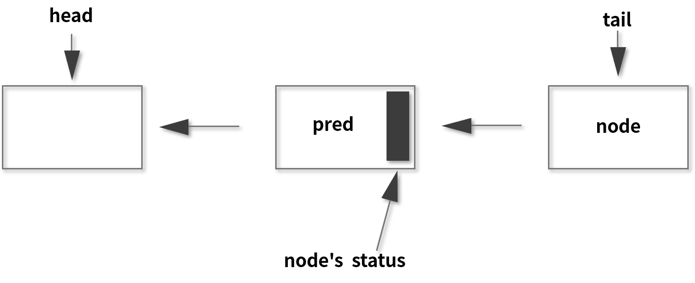
（此图引用自英文文档中的图）
在队列中，分别用 head 和 tail 来表示头节点和尾节点，两者在初始化的时候都指向了一个空节点。头节点可以理解为“当前持有锁的线程”，而在头节点之后的线程就被阻塞了，它们会等待被唤醒，唤醒也是由 AQS 负责操作的。
获取/释放方法
下面我们就来看一看 AQS 的第三个核心部分，获取/释放方法。在 AQS 中除了刚才讲过的 state 和队列之外，还有一部分非常重要，那就是获取和释放相关的重要方法，这些方法是协作工具类的逻辑的具体体现，需要每一个协作工具类自己去实现，所以在不同的工具类中，它们的实现和含义各不相同。
获取方法
我们首先来看一下获取方法。获取操作通常会依赖 state 变量的值，根据 state 值不同，协作工具类也会有不同的逻辑，并且在获取的时候也经常会阻塞，下面就让我们来看几个具体的例子。
比如 ReentrantLock 中的 lock 方法就是其中一个“获取方法”，执行时，如果发现 state 不等于 0 且当前线程不是持有锁的线程，那么就代表这个锁已经被其他线程所持有了。这个时候，当然就获取不到锁，于是就让该线程进入阻塞状态。
再比如，Semaphore 中的 acquire 方法就是其中一个“获取方法”，作用是获取许可证，此时能不能获取到这个许可证也取决于 state 的值。如果 state 值是正数，那么代表还有剩余的许可证，数量足够的话，就可以成功获取；但如果 state 是 0，则代表已经没有更多的空余许可证了，此时这个线程就获取不到许可证，会进入阻塞状态，所以这里同样也是和 state 的值相关的。
再举个例子，CountDownLatch 获取方法就是 await 方法（包含重载方法），作用是“等待，直到倒数结束”。执行 await 的时候会判断 state 的值，如果 state 不等于 0，线程就陷入阻塞状态，直到其他线程执行倒数方法把 state 减为 0，此时就代表现在这个门闩放开了，所以之前阻塞的线程就会被唤醒。
我们总结一下，“获取方法”在不同的类中代表不同的含义，但往往和 state 值相关，也经常会让线程进入阻塞状态，这也同样证明了 state 状态在 AQS 类中的重要地位。
释放方法
释放方法是站在获取方法的对立面的，通常和刚才的获取方法配合使用。我们刚才讲的获取方法可能会让线程阻塞，比如说获取不到锁就会让线程进入阻塞状态，但是释放方法通常是不会阻塞线程的。
比如在 Semaphore 信号量里面，释放就是 release 方法（包含重载方法），release() 方法的作用是去释放一个许可证，会让 state 加 1；而在 CountDownLatch 里面，释放就是 countDown 方法，作用是倒数一个数，让 state 减 1。所以也可以看出，在不同的实现类里面，他们对于 state 的操作是截然不同的，需要由每一个协作类根据自己的逻辑去具体实现。
拓展阅读
下面我们再进行一些拓展阅读，本课时是把 AQS 的核心结构拎出来讲解的，对于了解 AQS 内部结构有很大好处，但是并不足以包含 AQS 的全貌。如果有兴趣进一步深入理解 AQS ，可以选择学习相关的拓展资源：
- 第一个资源是 AQS 作者本人 Doug Lea 所写的一篇论文，这篇论文自然是非常宝贵的学习资料，请点击这里查看；
- 第二个是来自 Javadoop 博客对于 AQS 的源码分析的文章，感兴趣的话也可以阅读，请点击这里查看。
总结
本课时我们介绍了 AQS 最重要的三个部分。第一个是 state，它是一个数值，在不同的类中表示不同的含义，往往代表一种状态；第二个是一个队列，该队列用来存放线程；第三个是“获取/释放”的相关方法，需要利用 AQS 的工具类根据自己的逻辑去实现。
77 AQS 在 CountDownLatch 等类中的应用原理是什么？
本课时我们主要讲解 AQS 在 CountDownLatch 类中的应用原理，即在 CountDownLatch 中如何利用 AQS 去实现 CountDownLatch 自己的线程协作逻辑的。本课时会包含一定的源码分析。
AQS 用法
我们先讲一下 AQS 的用法。如果想使用 AQS 来写一个自己的线程协作工具类，通常而言是分为以下三步，这也是 JDK 里利用 AQS 类的主要步骤：
- 第一步，新建一个自己的线程协作工具类，在内部写一个 Sync 类，该 Sync 类继承 AbstractQueuedSynchronizer，即 AQS；
- 第二步，想好设计的线程协作工具类的协作逻辑，在 Sync 类里，根据是否是独占，来重写对应的方法。如果是独占，则重写 tryAcquire 和 tryRelease 等方法；如果是非独占，则重写 tryAcquireShared 和 tryReleaseShared 等方法；
- 第三步，在自己的线程协作工具类中，实现获取/释放的相关方法，并在里面调用 AQS 对应的方法，如果是独占则调用 acquire 或 release 等方法，非独占则调用 acquireShared 或 releaseShared 或 acquireSharedInterruptibly 等方法。
通过这三步就可以实现对 AQS 的利用了。由于这三个步骤是经过浓缩和提炼的，所以现在你可能感觉有些不太容易理解，我们后面会有具体的实例来帮助理解，这里先有一个初步的印象即可。
你可能注意到了，上面的第二步是根据某些条件来重写特定的一部分方法，这个做法好像之前很少遇到过，或者说你可能会想，是不是有更好的做法？比如通过实现接口的方式，因为实现某一个接口之后，自然就知道需要重写其中哪些方法了，为什么要先继承类，然后自己去判断选择哪些方法进行重写呢？这不是自己给自己设置障碍吗？
关于这个问题的答案，其实在 AQS 的原作者 Doug Lea 的论文中已经进行了说明，他认为如果是实现接口的话，那每一个抽象方法都需要实现。比如你把整个 AQS 作为接口，那么需要实现的方法有很多，包括 tryAcquire、tryRelease、tryAcquireShared、tryReleaseShared 等，但是实际上我们并不是每个方法都需要重写，根据需求的不同，有选择的去实现一部分就足以了，所以就设计为不采用实现接口，而采用继承类并重写方法的形式。
那可能你又有疑问了，继承类后，是不强制要求重写方法的，所以如果我们一个方法都不重写，行不行呢？答案是，如果不重写刚才所讲的 tryAcquire 等方法，是不行的，因为在执行的时候会抛出异常，我们来看下 AQS 对这些方法的默认的实现就知道了。
下面有四个方法的代码，分别是 tryAcquire、tryRelease、tryAcquireShared 和 tryReleaseShared 方法：
protected boolean tryAcquire(int arg) {
throw new UnsupportedOperationException();
}
protected boolean tryRelease(int arg) {
throw new UnsupportedOperationException();
}
protected int tryAcquireShared(int arg) {
throw new UnsupportedOperationException();
}
protected boolean tryReleaseShared(int arg) {
throw new UnsupportedOperationException();
}
可以看到它们内部只有一行实现代码，就是直接抛出异常，所以要求我们在继承 AQS 之后，必须把相关方法去重写、覆盖，这样未来我们写的线程协作类才能正常的运行。
AQS 在 CountDownLatch 的应用
上面讲了使用 AQS 的基本流程，现在我们用例子来帮助理解，一起来看看 AQS 在 CountDownLatch 中的应用。
在 CountDownLatch 里面有一个子类，该类的类名叫 Sync，这个类正是继承自 AQS。下面给出了 CountDownLatch 部分代码的截取：
public class CountDownLatch {
/**
* Synchronization control For CountDownLatch.
* Uses AQS state to represent count.
*/
private static final class Sync extends AbstractQueuedSynchronizer {
private static final long serialVersionUID = 4982264981922014374L;
Sync(int count) {
setState(count);
}
int getCount() {
return getState();
}
protected int tryAcquireShared(int acquires) {
return (getState() == 0) ? 1 : -1;
}
protected boolean tryReleaseShared(int releases) {
// Decrement count; signal when transition to zero
for (;;) {
int c = getState();
if (c == 0)
return false;
int nextc = c-1;
if (compareAndSetState(c, nextc))
return nextc == 0;
}
}
}
private final Sync sync;
//省略其他代码...
}
可以很明显看到最开始一个 Sync 类继承了 AQS，这正是上一节所讲的“第一步，新建一个自己的线程协作工具类，在内部写一个 Sync 类，该 Sync 类继承 AbstractQueuedSynchronizer，即 AQS”。而在 CountDownLatch 里面还有一个 sync 的变量，正是 Sync 类的一个对象。
同时，我们看到，Sync 不但继承了 AQS 类，而且还重写了 tryAcquireShared 和 tryReleaseShared 方法，这正对应了“第二步，想好设计的线程协作工具类的协作逻辑，在 Sync 类里，根据是否是独占，来重写对应的方法。如果是独占，则重写 tryAcquire 或 tryRelease 等方法；如果是非独占，则重写 tryAcquireShared 和 tryReleaseShared 等方法”。
这里的 CountDownLatch 属于非独占的类型，因此它重写了 tryAcquireShared 和 tryReleaseShared 方法，那么这两个方法的具体含义是什么呢？别急，接下来就让我们对 CountDownLatch 类里面最重要的 4 个方法进行分析，逐步揭开它的神秘面纱。
构造函数
首先来看看构造函数。CountDownLatch 只有一个构造方法，传入的参数是需要“倒数”的次数，每次调用 countDown 方法就会倒数 1，直到达到了最开始设定的次数之后，相当于是“打开了门闩”，所以之前在等待的线程可以继续工作了。
我们具体来看下构造函数的代码：
public CountDownLatch(int count) {
if (count < 0) throw new IllegalArgumentException("count < 0");
this.sync = new Sync(count);
}
从代码中可以看到，当 count < 0 时会抛出异常，当 count > = 0，即代码 this.sync = new Sync( count ) ，往 Sync 中传入了 count，这个里的 Sync 的构造方法如下：
Sync(int count) {
setState(count);
}
该构造函数调用了 AQS 的 setState 方法，并且把 count 传进去了，而 setState 正是给 AQS 中的 state 变量赋值的，代码如下：
protected final void setState(int newState) {
state = newState;
}
所以我们通过 CountDownLatch 构造函数将传入的 count 最终传递到 AQS 内部的 state 变量，给 state 赋值，state 就代表还需要倒数的次数。
getCount
接下来介绍 getCount 方法，该方法的作用是获取当前剩余的还需要“倒数”的数量，getCount 方法的源码如下：
public long getCount() {
return sync.getCount();
}
该方法 return 的是 sync 的 getCount：
int getCount() {
return getState();
}
我们一步步把源码追踪下去，getCount 方法调用的是 AQS 的 getState：
protected final int getState() {
return state;
}
如代码所示，protected final int getState 方法直接 return 的就是 state 的值，所以最终它获取到的就在 AQS 中 state 变量的值。
countDown
我们再来看看 countDown 方法，该方法其实就是 CountDownLatch 的“释放”方法，下面来看下源码：
public void countDown() {
sync.releaseShared(1);
}
在 countDown 方法中调用的是 sync 的 releaseShared 方法：
public final boolean releaseShared(int arg) {
if (tryReleaseShared(arg)) {
doReleaseShared();
return true;
}
return false;
}
可以看出，releaseShared 先进行 if 判断，判断 tryReleaseShared 方法的返回结果，因此先把目光聚焦到 tryReleaseShared 方法中，tryReleaseShared 源码如下所示 ：
protected boolean tryReleaseShared(int releases) {
// Decrement count; signal when transition to zero
for (;;) {
int c = getState();
if (c == 0)
return false;
int nextc = c-1;
if (compareAndSetState(c, nextc))
return nextc == 0;
}
}
方法内是一个 for 的死循环，在循环体中，最开始是通过 getState 拿到当前 state 的值并赋值给变量 c，这个 c 可以理解为是 count 的缩写，如果此时 c = 0，则意味着已经倒数为零了，会直接会执行下面的 return false 语句，一旦 tryReleaseShared 方法返回 false，再往上看上一层的 releaseShared 方法，就会直接跳过整个 if (tryReleaseShared(arg)) 代码块，直接返回 false，相当于 releaseShared 方法不产生效果，也就意味着 countDown 方法不产生效果。
再回到 tryReleaseShared 方法中往下看 return false 下面的语句，如果 c 不等于 0，在这里会先把 c-1 的值赋给 nextc，然后再利用 CAS 尝试把 nextc 赋值到 state 上。如果赋值成功就代表本次 countDown 方法操作成功，也就意味着把 AQS 内部的 state 值减了 1。最后，是 return nextc == 0，如果 nextc 为 0，意味着本次倒数后恰好达到了规定的倒数次数，门闩应当在此时打开，所以 tryReleaseShared 方法会返回 true，那么再回到之前的 releaseShared 方法中，可以看到，接下来会调用 doReleaseShared 方法，效果是对之前阻塞的线程进行唤醒，让它们继续执行。
如果结合具体的数来分析，可能会更清晰。假设 c = 2，则代表需要倒数的值是 2，nextc = c-1，所以 nextc 就是 1，然后利用 CAS 尝试把 state 设置为 1，假设设置成功，最后会 return nextc == 0，此时 nextc 等于 1，不等于 0，所以返回 false，也就意味着 countDown 之后成功修改了 state 的值，把它减 1 了，但并没有唤醒线程。
下一次执行 countDown时，c 的值就是 1，而 nextc = c - 1，所以 nextc 等于 0，若这时 CAS 操作成功，最后 return nextc == 0，所以方法返回 true，一旦 tryReleaseShared 方法 return true，则 releaseShared 方法会调用 doReleaseShared 方法，把所有之前阻塞的线程都唤醒。
await
接着我们来看看 await 方法，该方法是 CountDownLatch 的“获取”方法，调用 await 方法会把线程阻塞，直到倒数为 0 才能继续执行。await 方法和 countDown 是配对的，追踪源码可以看到 await 方法的实现：
public void await() throws InterruptedException {
sync.acquireSharedInterruptibly(1);
}
它会调用 sync 的 acquireSharedInterruptibly ，并且传入 1。acquireSharedInterruptibly 方法源码如下所示：
public final void acquireSharedInterruptibly(int arg)
throws InterruptedException {
if (Thread.interrupted())
throw new InterruptedException();
if (tryAcquireShared(arg) < 0)
doAcquireSharedInterruptibly(arg);
}
可以看到，它除了对于中断的处理之外，比较重要的就是 tryAcquireShared 方法。这个方法很简单，它会直接判断 getState 的值是不是等于 0，如果等于 0 就返回 1，不等于 0 则返回 -1。
protected int tryAcquireShared(int acquires) {
return (getState() == 0) ? 1 : -1;
}
getState 方法获取到的值是剩余需要倒数的次数，如果此时剩余倒数的次数大于 0，那么 getState 的返回值自然不等于 0，因此 tryAcquireShared 方法会返回 -1，一旦返回 -1，再看到 if (tryAcquireShared(arg) < 0) 语句中，就会符合 if 的判断条件，并且去执行 doAcquireSharedInterruptibly 方法，然后会让线程进入阻塞状态。
我们再来看下另一种情况，当 state 如果此时已经等于 0 了，那就意味着倒数其实结束了，不需要再去等待了，就是说门闩是打开状态，所以说此时 getState 返回 0，tryAcquireShared 方法返回 1 ，一旦返回 1，对于 acquireSharedInterruptibly 方法而言相当于立刻返回，也就意味着 await 方法会立刻返回，那么此时线程就不会进入阻塞状态了，相当于倒数已经结束，立刻放行了。
这里的 await 和 countDown 方法，正对应了本讲一开始所介绍的“第三步，在自己的线程协作工具类中，实现获取/释放的相关方法，并在里面调用 AQS 对应的方法，如果是独占则调用 acquire 或 release 等方法，非独占则调用 acquireShared 或 releaseShared 或 acquireSharedInterruptibly 等方法。”
AQS 在 CountDownLatch 的应用总结
最后对 AQS 在 CountDownLatch 的应用进行总结。当线程调用 CountDownLatch 的 await 方法时，便会尝试获取“共享锁”，不过一开始通常获取不到锁，于是线程被阻塞。“共享锁”可获取到的条件是“锁计数器”的值为 0，而“锁计数器”的初始值为 count，当每次调用 CountDownLatch 对象的 countDown 方法时，也可以把“锁计数器” -1。通过这种方式，调用 count 次 countDown 方法之后，“锁计数器”就为 0 了，于是之前等待的线程就会继续运行了，并且此时如果再有线程想调用 await 方法时也会被立刻放行，不会再去做任何阻塞操作了。
总结
在本课时中我们主要介绍了 AQS 的用法，通常分为三步，然后以 CountDownLatch 为例，介绍了如何利用 AQS 实现自己的业务逻辑。
78 一份独家的 Java 并发工具图谱
本课时将提纲挈领的对本专栏的重点进行提炼，对前面 77 个课时的内容进行了整理和梳理，方便你复习前面的内容。如果你正准备面试，没有时间看前面的内容，可以通过本课时把 Java 并发知识体系快速建立起来，发现哪一块知识有薄弱的话，可以有针对性的去回顾那一课时的具体内容。
本专栏总共分为 3 个大模块，分别是模块一：夯实并发基础，模块二：玩转 JUC 并发工具，模块三：深入浅出底层原理，知其所以然。我们就从模块一：夯实并发基础部分开始讲起。
模块一：夯实并发基础
线程基础升华
首先对线程基础进行讲解和升华，在实现多线程上，讲解了为何本质只有 1 种实现线程的方法，并对于传统的 2 种或 3 种的说法进行了辨析；同时讲解了应该如何正确的停止线程，用 volatile 标记位的停止方法是不够全面的。
然后介绍了线程的 6 种状态，即 NEW、RUNNABLE、BLOCKED、WAITING、TIMED_WAITING、TERMINATED，还介绍了转换路径。之后就把目光聚焦到了 wait、notify/notifyAll、sleep 相关的方法上，这也是面试中常考的内容，我们讲解了它们的注意事项，包括：
- 为什么 wait 方法必须在 synchronized 保护的同步代码中使用？
- 为什么 wait / notify / notifyAll 被定义在 Object 类中，而 sleep 定义在 Thread 类中？
我们还把 wait / notify 和 sleep 进行了比较，并分析它们的异同。之后我们用三种方式实现了生产者和消费者模式，分别是 wait / notify、Condition、BlockingQueue 的方式，并对它们进行了对比。
线程安全
在线程安全的相关课时中，首先讲解了什么是线程安全，线程不安全的场景包括运行结果错误、发布或初始化错误以及活跃性问题，而活跃性问题又包括死锁、活锁和饥饿。
然后总结了 4 种特别需要注意线程安全的情况，分别是：
- 有操作共享资源或变量的时候；
- 依赖时序的操作；
- 不同数据之间存在绑定关系；
- 使用的类没有声明自己是线程安全的。
之后，讲解了多线程所带来的性能问题，包括线程调度所产生的上下文切换和缓存失效，以及线程协作带来的开销。
模块二：玩转 JUC 并发工具
线程池
下面进入模块二：玩转 JUC 并发工具的部分，在线程池部分中我们首先给出了 3 点使用线程池的原因，也就是说，使用线程池比手动创建线程好的地方在于：
- 可以解决线程生命周期的系统开销问题，同时还可以加快响应速度；
- 可以统筹内存和 CPU 的使用，避免资源使用不当；
- 可以统一管理资源。
在了解了线程池的好处之后，就需要掌握线程池的各个参数的含义，即 corePoolSize、maxPoolSize、keepAliveTime、workQueue、ThreadFactory、Handler，并且这也是面试中非常常见的考点，我们需要知道每个参数代表什么含义。
而线程池也可能会拒绝我们提交的任务，我们讲解了 2 种拒绝的时机以及 4 种拒绝的策略，分别是 AbortPolicy、DiscardPolicy、DiscardOldestPolicy、CallerRunsPolicy，我们可以根据自己的业务需求去选择合适的拒绝策略。
之后介绍了 6 种常见的线程池，即 FixedThreadPool、CachedThreadPool、ScheduledThreadPool、SingleThreadExecutor、SingleThreadScheduledExecutor 和 ForkJoinPool，这 6 种线程池各有各的特点，它们所采用的的参数也各不相同。
接下来介绍了阻塞队列，在线程池中比较常用的是 3 种阻塞队列，即 LinkedBlockingQueue、SynchronousQueue、DelayedWorkQueue。然后讲解了为什么不应该自动创建线程池，主要原因是考虑到自动创建的线程池可能会发生 OOM 等风险，我们手动创建线程池，就可以更加明确其运行规则，也可以在必要的时候拒绝新的任务提交，所以是更加安全的。
既然说到要手动去创建线程，那怎么设置线程池的参数呢？这里就需要考虑到合适的线程数量是多少，我们给出了一个通用的建议：
- 线程的平均工作时间所占比例越高，则需要越少的线程；
- 线程的平均等待时间所占比例越高，则需要越多的线程；
- 针对不同的程序，进行对应的压力测试就可以得到最合适的线程数。
最后讲解了如何关闭线程池，讲解了和关闭线程池相关的 5 个方法，即 shutdown()、isShutdown()、isTerminated()、awaitTermination()、shutdownNow() 。其中的重点是 shutdown() 和 shutdownNow() 这两个方法的区别，前一个是优雅关闭，后一个则是立刻关闭。接着还对线程池实现“线程复用”的原理进行了讲解，同时分析了 execute 方法的源码，这是线程池中一个非常重要的方法。
各种各样的“锁”
在 Java 中，锁有很多种类，比如悲观锁和乐观锁、共享锁和独占锁、公平锁和非公平锁、可重入锁和非可重入锁、可中断锁和不可中断锁、自旋锁和非自旋锁、偏斜锁/轻量级锁/重量级锁等。关于悲观锁和乐观锁，我们分析了它们各自的使用场景，还对 synchronized 这种悲观锁分析了原理，看到了其背后的 “monitor ” 锁，然后对 synchronized 和 Lock 进行了比较，并且给出了选择建议：
如果可以，最好既不使用 Lock 也不使用 synchronized，而是优先使用 JUC 包中其他的成熟工具，因为它们通常会帮我们自动处理所有的加锁和解锁操作；如果必须使用锁，则优先使用 synchronized，因为它可以减少代码编写的数量以及降低出错的概率，因为一旦使用 Lock，就必须在 finally 中写上 unlock，不然代码可能会出很大的问题，而使用 synchronized 就不必考虑这些问题，因为它会自动解锁。当然如果 synchronized 不能满足我们的需求，就得考虑使用 Lock。
所以接下来就是 Lock 相关的内容，它有很多强大的功能，比如尝试获取锁、有超时的获取等。我们介绍了 lock() 、tryLock()、tryLock(long time, TimeUnit unit)、lockInterruptibly()、unlock() 这几个常用的方法，并且讲解了它们的作用。然后讲解了公平锁和非公平锁，其中公平锁会按照线程申请锁的顺序来依次获取锁，而非公平锁存在插队的情况，这在一定情况下可以提高整体的效率，通常默认也是非公平的。
接着是读写锁内容。ReadWriteLock 适用于读多写少的情况，合理使用可以进一步提高并发效率，它的规则是：要么是一个或多个线程同时持有读锁，要么是一个线程持有写锁，但两者不会同时出现。也可以总结为读读共享、其他都互斥（包括写写互斥、读写互斥、写读互斥）。之后还讲解了读写锁的升降级和插队策略。
对于自旋锁而言，首先介绍了什么是自旋锁，然后对比了自旋和非自旋锁的获取锁的过程，讲解了自旋锁的好处，然后自己实现了一个可重入的自旋锁，最后还分析了自旋锁的缺点和适用场景。
在锁的内容中，最后还讲解了 JVM 对锁进行的优化点，包括自适应的自旋锁、锁消除、锁粗化、偏向锁、轻量级锁、重量级锁等。有了这些优化点之后，synchronized 的性能并不比其他的锁差，所以我们使用 synchronized 来满足业务条件在性能方面是完全 OK 的。
并发容器面面观
并发容器是一个重点。在并发容器的章节中，首先讲解了 HashMap 为什么是线程不安全的，然后对比了 ConcurrentHashMap 在 Java 7 和 8 中的区别，包括数据结构、并发度、保证并发安全的原理、遇到 Hash 碰撞、查询时间复杂度方面的区别。然后还分析了在 Map 桶中为什么超过 8 个才转为红黑树？ 这是一种时间和空间上的平衡，以及对比了 ConcurrentHashMap 和 Hashtable，虽然它们都是线程安全的，但在出现版本上、实现线程安全的方式上、性能上、迭代时修改上都是不同的。
接着介绍了 CopyOnWriteArrayList，它的适用场景是读操作可以尽可能的快，而写即使慢一些也没关系，以及读多写少的场景。CopyOnWriteArrayList 的读写规则是读取完全不用加锁，而写入也不会阻塞读取操作，也就是可以在写入的同时进行读取，只有写入和写入之间需要进行同步，不允许多个写入同时发生。之后还介绍了它的允许迭代时修改集合内容的特点以及 3 个缺点，分别是内存占用问题、在元素较多或者复杂的情况下，复制开销大的问题以及数据一致性问题，最后我们还对它的源码进行了分析。
阻塞队列
在并发容器里还有一个重点，那就是阻塞队列，首先介绍了什么是阻塞队列以及对于阻塞队列中的 3 组方法进行了辨析，同时还给出了代码演示。然后分别介绍了常见的 5 种阻塞队列，以及它们的特点，分别是 ArrayBlockingQueue、LinkedBlockingQueue、SynchronousQueue、PriorityBlockingQueue 和 DelayQueue。
之后对比了阻塞和非阻塞队列的并发安全原理，其中阻塞队列主要利用了 ReentrantLock 以及它的 Condition 来实现的，而非阻塞队列则是利用了 CAS 保证线程安全。
最后，我们讲解了如何选择适合自己的阻塞队列，需要从功能、容量、能否扩容、内存结构及性能这些方面去考虑综合选择适合自己的阻塞队列。
原子类
原子类是 JUC 包中的一个重量级的人物。首先介绍了 6 种原子类型，即基本类型原子类、数组类型原子类、引用类型原子类、升级类型原子类、Adder 和 Accumulator。
接下来分析了 AtomicInteger 在高并发下性能不好以及如何解决的问题。性能不好的主要原因是在高并发下碰撞和冲突会比较多，我们可以使用 LongAdder 来解决这个问题；同时分析了 LongAdder 内部的原理。然后对比了原子类和 volatile ，如果只是有可见性问题的话，那么可以使用 volatile 来解决，但如果需要保证原子性的话，就需要使用原子类或其他工具来解决，而不应使用 volatile。
之后，我们把原子类和 synchronized 进行了对比，它们在功能上相似，但是在原理上、适用范围上、粒度上、性能上都有区别。最后还介绍了 Java 8 加入的 Accumulator，它是一个更通用版本的 Adder。
ThreadLocal
首先讲解了两种场景是适合于 ThreadLocal 的：
- 第一种是用作每个线程保存独享的对象，比如日期工具类；
- 第二种是 ThreadLocal 给每个线程去保存场景、上下文信息，以便后续的方法更方便的获取其信息，避免了传参。
当然 ThreadLocal 并不是用来解决共享资源的多线程访问的问题的，因为它设计的本意是，资源并不是共享的，只是在每个线程内有个资源的副本而已，而每个副本都是各线程独享的。
接下来还分析了 ThreadLocal 的内部结构，需要掌握 Thread、ThreadLocal 及 ThreadLocalMap 三者之间的关系，同时还介绍了使用 ThreadLocal 之后要使用 remove 方法来防止内存泄漏。
Future
接下来是 Future 相关的内容。首先对比了 Callable 和 Runnable 的不同，它们在方法名、返回值、抛出异常上，以及和 Future 类的关系上都有所不同。然后介绍了 Future 类的主要功能，即把运算的过程放到子线程去执行，再通过 Future 去控制执行过程，最后获取到计算结果。这样一来就可以把整个程序的运行效率提高，是一种异步的思想。
我们还对 Future 的 get、get(long timeout, TimeUnit unit)、isDone()、cancel()、isCancelled() 这 5 种方法进行了详细讲解。在使用 Future 的时候要注意，比如我们用 for 循环批量获取 Future 的结果时容易阻塞，应该使用超时限制，并且 Future 的生命周期不能后退，而且 Future 本身并不能产生新的线程，它需要借助 Thread 类或者线程池才能用子线程执行任务。
之后讲解了一个“旅游平台”的问题，它希望高效获取各航空公司的机票信息，我们对代码进行了演进：从最开始的串行，到并行，然后到有超时的并行，最后我们发现，而且如果航空公司的响应速度都很快的话，也不需要一直等到超时的时间到了，而是可以提前结束等待的。我们就这样进行了一步一步的迭代，升级了我们的代码，该“旅游平台”问题也是平时工作中经常会遇到的问题，因为我们经常需要并行获取和处理数据。
线程协作
在线程配合相关的类中，我们讲解了 Semaphore 信号量、CountDownLatch、CyclicBarriar 和 Condition。
在信号量的课程中，首先介绍了它的使用场景、用法及注意点，其中注意点包括获取和释放的许可证数量尽量保持一致，在初始化的时候可以设置公平性以及信号量是支持跨线程、跨线程池的。
对于 CountDownLatch 而言，我们在创建类的时候，需要在构造函数中传入“倒数”次数，然后由需要等待的线程去调用 await 方法来等待，而每一次其他线程调用了 countDown 方法之后，计数便会减 1，直到减为 0 时，之前等待的线程便会继续运行。
接下来介绍了 CyclicBarria，它和 CountDownLatch 在用法上是有些相似的，即都能阻塞一个或一组线程，直到某个预设的条件达成发生，再统一出发，但它们也有很多的不同点，它们的作用对象不同、可重用性不同及执行动作的能力不同。
最后介绍了 Condition 和 wait / notify / notifyAll 的关系。如果说 Lock 是用来代替 synchronized 的，那么 Condition 就是用来代替相对应的 Object 的 wait / notify / notifyAll 的，所以它们在用法和性质上都是非常相似的。
模块三：深入浅出底层原理，知其所以然
Java 内存模型
然后就进入到了我们第 3 个模块：深入浅出底层原理，知其所以然。第一个重点是 Java 内存模型。首先介绍了为什么需要 Java 内存模型，然后介绍了什么是 Java 内存模型，重点包括重排序、原子性、可见性。
接着首先介绍了重排序的相关内容，其好处是可以提高处理速度。
接着介绍了原子性，包括什么是原子性、Java 中的原子操作有哪些、long 和 double 原子性的特殊性以及简单地把原子操作组合在一起，并不能保证整体依然具备原子性。
之后讲解了可见性，我们需要知道主内存和工作内存之间的关系，还需要知道 happens-before 关系：如果第一个操作 happens-before 第二个操作（也可以描述为第一个操作和第二个操作之间满足 happens-before 关系），那么我们就说第一个操作对于第二个操作一定是可见的，也就是第二个操作在执行时就一定能保证看见第一个操作执行的结果。这个关系非常重要，也是可见性内容的一个重点。
最后介绍了 volatile 的两个作用，分别是保证可见性以及一定程度上禁止重排序，还分析了在单例模式的双重检查锁模式为什么必须加 volatile ？主要是为了保证线程安全。
CAS 原理
在 CAS （Compare-And-Swap）相关课时中，首先介绍了 CAS 的核心思想，是通过将内存中的值与指定数据进行比较，当这两个数值一样时，才将内存中的数据替换为新的值，整个过程具备原子性。
然后介绍了 CAS 的应用，包括在并发容器、数据库以及原子类中都有很多对 CAS 的应用；之后介绍了 CAS 的三个缺点，即 ABA 问题、自旋时间过长问题，以及线程安全的范围不能灵活控制问题。
死锁问题
在死锁的相关课时中，首先介绍了什么是死锁：两个或多个线程（或进程）被无限期地阻塞，相互等待对方手中资源的状态就是死锁。我们写了必然死锁的例子，介绍了发生死锁必须满足的互斥条件、请求与保持条件、不剥夺条件和循环等待条件这 4 个必要条件，还分别用命令行和代码定位死锁并且给出了 3 种解决死锁问题的策略，分别是避免策略、检测与恢复策略、鸵鸟策略。最后还分析了经典的哲学家就餐问题。
final 关键字和“不变性”
首先介绍了 final 分别作用在变量上、方法上和类上的不同作用，以及分析了为什么加了 final 却依然无法拥有“不变性”？主要原因是 final 修饰的对象，内容依然可以变。然后分析了为什么 String 被设计为是不可变的？主要分析了这样设计的好处分别是可以利用字符串常量池、用作 HashMap 的 key、缓存 HashCode 以及保证线程安全。
AQS 框架
最后是 AQS 的内容，我们介绍了为什么需要 AQS 以及它内部的原理；还对 AQS 在 CountDownLatch 类中的应用进行了源码分析。
总结
以上就是本专栏的重点内容了，也涵盖到了 Java 并发编程的大部分重点知识。我也非常高兴能和你一起来学习和探讨关于 Java 并发的知识，在写作的过程中难免会有遗漏的知识点，可通过留言，或联系拉勾客服人员加入本课程的读者群一起讨论。